Orientation
Every Objective, and Where Each One Stands
This is the spine of the file. Every objective printed in the study guide is listed below in the order it appears there, with an honest status. Covered means the objective is worked in full in a section below. Partial means part of it is here and the rest needs a lecture we do not have notes for yet. Awaiting notes means nothing in the current note set touches it.
Twenty-two note sources feed it. Week 10: Hematopoiesis & Anemia I · Anemia II — Hemolytic Anemias · Complete Blood Count & Blood Smears · Benign White Blood Cell Disorders · Coagulation I — Cascade & Bleeding Disorders · Coagulation II — Thrombophilia & Anticoagulation · Transfusion Medicine · Sepsis 2026 · HIV Microbiology & Antiretroviral Therapy · Case-Based Evaluation + Management of HIV. Week 11: Introduction to Hematologic Malignancy · Hypercoagulable States & Thrombophilia · Viral Hemorrhagic Fevers · Blood & Lymphoreticular Infections Part 2 · A Practical Approach to Anemia and Porphyria · Lymph Node — Normal Architecture & Reactive Lymphadenopathy · Lymphoproliferative Disorders. Week 12: Antineoplastic Agents (Parts 1–3) · Drugs for Anemia · Anticoagulants, Thrombolytics & Antiplatelets · Surgery — The Lymphatic System. Plus the Hematology Key Drug List 2026.
Between them the file now covers the anemias end to end, the laboratory itself — how the analyzer works and how it lies — the benign white cell disorders and primary immunodeficiencies, bleeding disorders end to end, thrombosis and thrombophilia end to end, transfusion medicine, the whole of hematologic malignancy — acute and chronic leukemias, myelodysplastic and myeloproliferative disease, the lymphomas and the plasma cell disorders — antineoplastic pharmacology in all four classes, the lymphatic system and lymphedema, non-cancer hematology pharmacology, sepsis, and HIV.
One objective has no note source at all — how to write a complete drug prescription — and four more are partly covered. All five are enumerated in Objectives Still Pending so nothing quietly disappears.
| # | Learning objective, as printed in the study guide | Status |
|---|---|---|
| 1 | Categorize the adult stem cell hierarchy and identify the primary sites of adult hematopoiesis. → §1 Stem cell hierarchy | Covered |
| 2 | Compare and contrast epidemiology, vectors, clinical manifestations and treatment of Ebola, Marburg, Lassa fever, Dengue and Hanta virus diseases. → §22 Dengue, Hanta, CCHF & Lassa · §21 Ebola & Marburg | Covered |
| 3 | Compare and contrast the clinical and laboratory findings associated with myeloma and Waldenström macroglobulinemia / lymphoplasmacytic lymphoma. → §42 Myeloma vs Waldenström | Covered |
| 4 | Compare and contrast the clinical characteristics, pathophysiology, and treatments of primary immune deficiency diseases. → §28 Primary immunodeficiencies | Covered |
| 5 | Compare and contrast the parasitic agents of babesiosis and malaria in terms of geographic distribution, vectors, pathogenesis, clinical manifestations, diagnostic approach and treatment. → §21 Babesia vs Plasmodium · §24 malaria smear | Covered |
| 6 | Contrast plasma cell neoplasms and lymphoplasmacytic lymphoma by clinical presentation, laboratory and diagnostic studies and complications. → §42 Myeloma vs LPL | Covered |
| 7 | Define ineffective hematopoiesis and list diseases it is seen in. → §5 · also §10 | Covered |
| 8 | Define myelodysplastic syndrome and list the types and describe the presentation, pathophysiology, and possible complications of each. → §38 Myelodysplastic syndrome | Covered |
| 9 | Describe appropriate anticoagulation given certain specific clinical scenarios including types and length of time for said clinical intervention. → §34 duration & scenarios · also §15 | Covered |
| 10 | Describe how grade and stage of hematolymphoid neoplasms affects prognosis and possible treatments. → §36 Grade & stage | Covered |
| 11 | Describe how to evaluate for anemia; list the different types and when and how to treat said types of anemias. → §3–§10, §17 | Covered |
| 12 | Describe management approaches for sickle cell disease as it pertains to prevention and complications. → §10 · also §11, §17 | Covered |
| 13 | Describe several examples of pharmacokinetic and pharmacodynamic drug interactions with warfarin and the need for dosage modifications based on pharmacogenomics, drug/drug, drug/food and drug/drink interactions. → §15 Warfarin interactions | Covered |
| 14 | Describe the adverse effects of iron therapy and the reversal agents for acute iron toxicity and chronic iron overload. → §17 Iron therapy & chelation | Covered |
| 15 | Describe the diagnostic approach to a deep vein thrombosis with or without pulmonary emboli. → §49 DVT/PE diagnosis | Covered |
| 16 | Describe the mechanism of action of the prominent antiretroviral drug classes (attachment/fusion inhibitors, post-attachment entry inhibitors, reverse transcriptase inhibitors [NRTI; NNRTI], capsid inhibitors, integrase strand transfer inhibitors, protease inhibitors, pharmacokinetic enhancers). → §19 Replication cycle → drug map | Covered |
| 17 | Describe the mechanisms of action of antineoplastic agents (hormonal therapy). → §46 Hormonal therapy | Covered |
| 18 | Describe the mechanisms of action of antineoplastic agents (targeted therapy and immunotherapy). → §45 Targeted & immunotherapy | Covered |
| 19 | Describe the methods of reversal of drug toxicities caused by anticoagulants and thrombolytics. → §15 The reversal bench · §16 | Covered |
| 20 | Describe the pathophysiology, clinical presentation and prognosis for idiopathic thrombocytopenic purpura. → §50 Immune thrombocytopenia · §12 why platelets fail in ITP | Covered |
| 21 | Describe the toxicities of antineoplastic agents (targeted therapy and immunotherapy). → §45 Newer-agent toxicity | Covered |
| 22 | Describe the toxicities of antineoplastic agents (traditional drugs). → §44 Chemo Man | Covered |
| 23 | Describe why folic acid supplementation is needed during pregnancy. → §5 · also §17 | Covered |
| 24 | Develop an understanding for MALT and GALT importance to the immune system development and function. → §47 MALT, GALT & BALT | Covered |
| 25 | Differentiate clinical causes of anemias by clinical presentation, etiologies, laboratory studies, and diagnostics. → §3–§10 | Covered |
| 26 | Differentiate clinical causes of nutritional anemias (iron, B12 + folate deficiency) by clinical presentation, etiologies, laboratory studies, and diagnostics. → §4 & §5 | Covered |
| 27 | Differentiate the subtypes of classical Hodgkin lymphoma by clinical features, pattern of spread, molecular markers, bone marrow features and prognosis. → §41 The four subtypes, in depth · §40 Hodgkin overview | Covered |
| 28 | Discuss diagnostic methods for detecting HIV infection, including screening and confirmatory assays. → §20 CDC testing algorithm | Covered |
| 29 | Discuss the etiology and transmission of plague. Describe the clinical forms of plague and their treatment. → §21 Yersinia pestis — the three clinical forms | Covered |
| 30 | Discuss the etiology/epidemiology, pathophysiology, clinical manifestations, diagnostic methods and treatment of cat scratch disease and bacillary angiomatosis. → §21 Bartonella — one bug, two diseases | Covered |
| 31 | Discuss the principal HIV structural genes and the function of their products. → §19 pol · gag · env | Covered |
| 32 | Distinguish between various causes of hemolytic anemia and characterize by site of hemolysis (intravascular versus extravascular), pathophysiology, laboratory testing and diagnostics. → §8 · §9 · §10 | Covered |
| 33 | Explain common signs, symptoms, diagnosis (including SOFA, qSOFA and NEWS) and laboratory findings associated with sepsis. → §18 Sepsis | Covered |
| 34 | Explain why warfarin's onset of action is relatively slow and the need for bridging with another anticoagulant (heparin or enoxaparin) based on its mechanism of action. → §15 Warfarin onset & bridging | Covered |
| 35 | Given a clinical vignette and laboratory and/or diagnostic values, identify the key components of the CBC, methodology and troubleshooting of interferences. → §23 methodology · §24 smear · §25 interferences | Covered |
| 36 | Given a clinical vignette of a patient with hemolytic anemia, characterize clinical presentations, labs and diagnostics (including peripheral smear + hemoglobin electrophoresis findings), therapies and long-term complications. → §9 & §10 | Covered |
| 37 | Given a clinical vignette with a presentation of anemia, differentiate clinical presentations based upon laboratory + bone marrow findings and correlate with the underlying pathophysiologic mechanisms. → §2 · §3 · §5 | Covered |
| 38 | Given a clinical vignette, classify the different blood products and the clinical indications for each product, supported by evidence. Understand how different anticoagulants affect the coagulation cascade. → §12 · §15 | Covered |
| 39 | Given a clinical vignette, compare and contrast bleeding disorders based upon clinical presentation, laboratory features and response to therapies. → §30 · §29 labs · §31 acquired | Covered |
| 40 | Given a clinical vignette, compare and contrast the thrombotic microangiopathies (TMA) in regard to clinical presentation, laboratory and diagnostic features, pathophysiology and therapies. → §32 TTP · HUS · aHUS | Covered |
| 41 | Given a clinical vignette, differentiate myeloid and lymphoid neoplasms based upon clinical features, laboratory studies and diagnostics (including peripheral smears). → §36 Myeloid vs lymphoid | Covered |
| 42 | Given a clinical vignette, distinguish chronic myeloid leukemia (CML) from a leukemoid reaction given clinical features, peripheral smear findings and molecular genetic alterations. → §38 CML vs leukemoid | Covered |
| 43 | Given a clinical vignette, distinguish myeloid neoplasms by their clinical presentations, laboratory features and molecular genetic alterations. Formulate a management plan for targeted therapy. → §37 · §38 | Covered |
| 44 | Given a clinical vignette, distinguish precursor-B and T-cell neoplasms by clinical presentation, immunophenotype, and prognosis. → §40 Precursor B and T | Covered |
| 45 | Given a clinical vignette, distinguish various subtypes of non-Hodgkin lymphoma using clinical features, laboratory studies, peripheral smear findings and molecular markers. → §41 CD5/CD10 framework & every subtype · §40 overview | Covered |
| 46 | Given a clinical vignette, identify causes of thrombotic microangiopathy (TMA) given laboratory and diagnostic studies and clinical presentation. → §32 Causes & discriminators | Covered |
| 47 | Given a clinical vignette, identify common thrombophilias in regard to their clinical presentation, laboratory and diagnostic features, pathophysiology and therapies. → §33 Inherited & acquired thrombophilias | Covered |
| 48 | Given a clinical vignette, identify the pathophysiologic mechanisms of common bleeding disorders. → §29 cascade & tests · §30 · §31 | Covered |
| 49 | Given a clinical vignette, identify the risk factors associated with a thrombophilic state. Understand the role of Virchow's triad. → §33 Virchow's triad · also §34 | Covered |
| 50 | Given a clinical vignette, interpret laboratory and diagnostic studies as well as molecular genetics to distinguish various etiologies of anemia. → §3–§10 | Covered |
| 51 | Given a clinical vignette, recognize clinical features and molecular genetic alterations that distinguish various subtypes of acute myeloid leukemia. → §37 AML subtypes | Covered |
| 52 | Given a clinical vignette, using the clinical features, laboratory + diagnostic studies, and molecular genetics, differentiate sub-types of non-Hodgkin lymphomas. → §41 Non-Hodgkin subtypes, in depth · §40 overview | Covered |
| 53 | Given a clinical vignette, using the clinical features, laboratory + diagnostic studies, and molecular genetics, describe the pathophysiologic mechanisms of non-Hodgkin lymphomas. → §41 Pathogenesis & the two translocations · §40 NHL mechanisms | Covered |
| 54 | Identify adverse events in transfusion medicine and classify by clinical presentation and pathophysiology. → §14 Transfusion reactions | Covered |
| 55 | Identify and describe the fibrinolytic drugs, mechanism of action, pharmacokinetics, and adverse effects. → §16 Fibrinolytics | Covered |
| 56 | Identify and describe the normal architecture of a lymph node including cortex, paracortex, and medulla and distinguish between antigen-independent and antigen-dependent maturation of B and T cells. → §35 The three zones & the antigen divide · §47 Lymphatic structure | Covered |
| 57 | Identify basic chemotherapeutic principles that will enhance the efficacy of a chosen regimen. → §43 Chemotherapeutic principles | Covered |
| 58 | Identify causes of pancytopenia and bone marrow failure in children. → §51 Pediatric hematology · §2 hypocellular marrow | Covered |
| 59 | Identify clinical, laboratory and diagnostic features that distinguish reactive versus malignant lymphadenopathy. → §35 The pattern-based approach & the benign mimics · §40 Reactive vs malignant | Covered |
| 60 | Identify favorable and unfavorable prognostic factors in childhood leukemia. → §40 Childhood leukemia prognosis | Covered |
| 61 | Identify historical factors which would suggest a bleeding or thrombotic disorder may be hereditary. → §30 hereditary bleeding · §34 thrombotic | Covered |
| 62 | Identify the clinical uses including pregnancy use, contraindications, and warnings/precautions for anticoagulants, thrombolytics, and antiplatelet drugs. → §15 & §16 | Covered |
| 63 | Identify the complications of acute and chronic leukemias. → §36 · §37 · §38 | Covered |
| 64 | Identify the complications of plasma cell disorders. → §42 Complications | Covered |
| 65 | Identify the erythropoiesis-stimulating agents (ESAs) and describe their mechanisms of action, route of administration, clinical use, pregnancy use, contraindications, warnings/precautions, adverse effects, and when ESAs should be initiated. → §17 ESAs & HIF drugs | Covered |
| 66 | Identify the etiologies and work-up of megaloblastic anemia and the treatment regimens. → §5 Megaloblastic anemia | Covered |
| 67 | Identify the key clinical manifestations and treatment of plasma cell disorders. → §42 Manifestations & treatment | Covered |
| 68 | Identify the major classes and names of the antiplatelet drugs and describe their mechanisms of action, adverse effects, and drug/drug interactions. → §16 Antiplatelets | Covered |
| 69 | Identify the most likely and least likely drug treatment(s) for anemia based on a clinical case and describe the mechanisms of action and adverse effects of the drug treatment(s). → §17 Anemia pharmacology | Covered |
| 70 | Identify the potential complications of a prothrombotic state. → §34 Complications of a prothrombotic state | Covered |
| 71 | Identify which blood product should be used to correct specific coagulopathies / bleeding disorders. → §12 Product → deficit | Covered |
| 72 | Learn the clinical presentation of lymphedema and pathognomonic findings on exam. The student should know how to differentiate deep vein thrombosis from lymphedema. → §48 Lymphedema vs DVT | Covered |
| 73 | List the more important microbial triggers of sepsis and explain the spectrum of interactions between triggers and the human host. → §18 PAMPs & DAMPs | Covered |
| 74 | List the most common forms of porphyria; describe the pathophysiology, presentation and lab testing appropriate for each. → §7 AIP and PCT, and the lead discriminator | Covered |
| 75 | List the myeloproliferative disorders and describe their presentation, underlying pathophysiology and possible complications/prognosis. → §39 Myeloproliferative neoplasms | Covered |
| 76 | List the myeloproliferative disorders and describe their presentation, underlying pathophysiology and possible complications/prognosis. (listed twice in the study guide) → §39 Myeloproliferative neoplasms | Covered |
| 77 | Recognize normal leukocytes present in peripheral blood, and identify the specific cell levels and characteristics. → §26 Five cells, levels & morphology | Covered |
| 78 | Select the most likely or least likely drug treatment(s) based on a clinical case and describe the drug's mechanisms of action and adverse effects. → §15 · §16 · §17 | Covered |
| 79 | The mechanism of action of chloroquine in the treatment of malaria. → §21 Blocking heme polymerase | Covered |
| 80 | Understand age-related changes which can occur and what should be monitored based upon reported age-related changes. → §53 Age-related change & monitoring · §20 HIV inflammaging | Covered |
| 81 | Understand different mechanisms of anemia. Be able to distinguish etiology of anemia using RBC indices. → §3 RBC indices | Covered |
| 82 | Understand how to write a complete drug prescription, including dosage, route of administration, indication, and other related parameters. → §54 Writing a prescription — written from standard practice, NOT from a lecture | Partial |
| 83 | Understand the basic mechanisms of the most common acquired and hereditary bleeding disorders. → §30 hereditary · §31 acquired | Covered |
| 84 | Understand the basic mechanisms of thrombosis and in which clinical situations one would suspect a genetic versus an acquired predisposition for thrombosis. → §33 genetic vs acquired predisposition | Covered |
| 85 | Understand the basic mechanisms of thrombosis and related therapy. → §33 mechanisms · §34 therapy | Covered |
| 86 | Understand the complications of post-splenectomy sepsis and how to prevent it from occurring. → §11 Asplenia | Covered |
| 87 | Understand the diagnosis, treatment and complications associated with acute promyelocytic leukemia. → §37 Acute promyelocytic leukemia | Covered |
| 88 | Understand the embryologic progression of hematopoiesis and the hematopoietic stem cells (HSCs). → §1 Sites across a lifetime | Covered |
| 89 | Understand the etiology of secondary hypersplenism and clinical presentation. → §52 Secondary hypersplenism · §11 hypersplenism as a hemolysis cause | Covered |
| 90 | Understand the potential causes of lymphedema and importance of history of presenting illness in the differential. → §48 Causes of lymphedema | Covered |
| 91 | Understand the risk of left-sided central line placement as it relates to anatomy of the thoracic duct and lymphatic circulation. → §47 Thoracic duct | Covered |
| 92 | Using a clinical vignette, distinguish myeloid neoplasms based upon clinical features, laboratory studies, peripheral smear and immunochemistry. → §37 · §38 | Covered |
| 93 | Using your knowledge of adult stem cell hierarchy, identify common functions and pathophysiology of hematopoietic stem cells, multipotent regulators and myeloid + lymphoid lineage. → §1 Hierarchy & lineages | Covered |
| 94 | When given a clinical vignette, interpret the findings of a bone marrow biopsy at the 2nd-year level. → §2 Cellularity | Covered |
Orientation
Master High-Yield Checklist
The facts that show up in more than one objective, or that the source lectures flagged explicitly. Cards 1–24 come from the Week 10 lectures; 25–54 from Weeks 11–12; 55–66 are the Week 11 infection, porphyria and lymph node additions — the laboratory, the white cells, bleeding and clotting. If you can produce all of these cold, you own the covered half of the exam.
One test splits the anemia tree
The reticulocyte count. Low means a production problem (iron, B12, folate, inflammation, kidney). High means loss or destruction (bleeding, hemolysis).
Read the MCV before anything else
Under 80 fL microcytic, 80–100 normocytic, over 100 macrocytic. A normal MCV can be two diseases averaging out — check the red cell distribution width and the smear.
Ferritin and TIBC move opposite ways
Iron deficiency: ferritin LOW, TIBC HIGH. Anemia of inflammation: ferritin HIGH, TIBC LOW. Serum iron is low in both and discriminates nothing.
Iron deficiency is a symptom, not a diagnosis
In an adult male or a postmenopausal woman it is gastrointestinal blood loss until proven otherwise — that is a colonoscopy, not a prescription.
Methylmalonic acid separates B12 from folate
Elevated in B12, normal in folate. Homocysteine rises in both, so it cannot discriminate. B12 has the brain; folate does not.
Never give folate alone for a macrocytosis
It corrects the blood count while subacute combined degeneration of the dorsal and lateral columns keeps progressing toward irreversible.
Three microcytic anemias, three treatments
Iron deficiency → give iron. Anemia of inflammation → treat the disease. Thalassemia trait → give nothing, and specifically not iron.
Pink plasma, dark urine, absent haptoglobin
The intravascular hemolysis triad. Free heme is nephrotoxic — this is why intravascular hemolysis is the dangerous kind and why ABO-incompatible transfusion kills.
Match the cell to the culprit
Ball → spherocytosis. Bite → G6PD. Bull's-eye → thalassemia. Crescent → sickle. Fragment → microangiopathy. Howell-Jolly body → no spleen.
Sudden anemia + LOW reticulocytes in a chronic hemolytic
Aplastic crisis from parvovirus B19 until proven otherwise. A maximally compensating marrow cannot afford a week off.
The direct Coombs test settles the spherocyte
Negative → hereditary spherocytosis. Positive → immune-mediated hemolysis. Same smear, opposite disease.
Restrictive transfusion won the trial
TRICC: transfuse a stable euvolemic patient below 7 g/dL, one unit at a time. The liberal (10 g/dL) arm did worse.
Ten, twenty, twenty-five
Platelets: 10,000 for hypoproliferative thrombocytopenia, 20,000 before a lumbar puncture, 25,000 for a preterm neonate. Consumptive thrombocytopenia is not treated by the number.
The ocean and the teacup
You need only 30% factor activity to clot. Plasma for an INR of 1.1 is pure risk for no benefit.
TRALI versus TACO
Both hypoxic with a white-out. TRALI: hypotensive, normal jugular venous pressure, donor anti-HLA antibodies, diuresis does not help. TACO: hypertensive, raised jugular venous pressure, diuresis helps.
Irradiate to prevent graft-versus-host disease
The only defence. Required for the severely immunocompromised and for related donors — partial HLA matching is what makes directed donation dangerous.
White clot versus red clot
Arterial, platelet-rich → antiplatelet. Venous, fibrin-rich → anticoagulant. This one distinction answers a surprising number of “which drug” questions.
1972, plus protein C and S
Warfarin blocks vitamin K–dependent factors II, VII, IX, X — and protein C and S, which fall first. That is why it starts by making you clot and why you bridge.
Heparin-induced thrombocytopenia is a clotting emergency
Platelets fall 5–10 days in, but the danger is thrombosis. Stop all heparin, start argatroban, bivalirudin or fondaparinux. Do not start warfarin alone.
Eleven is the ESA ceiling
Every erythropoiesis-stimulating agent boxed warning turns on hemoglobin above 11 g/dL = harm with no benefit. And cut the dose if it rises more than 1 g/dL in 2 weeks.
Sepsis is the response, not the organism
Cultures are negative in 30–50%. SOFA ≥ 2 ≈ 10% mortality. qSOFA: respiratory rate ≥ 22, systolic pressure ≤ 100, altered mentation.
Two different CD4 numbers
Under 200/µL defines AIDS. Under 50/µL is where opportunistic infection risk is greatest. They are not the same threshold.
CD4 stages, viral load transmits
The CD4 count tells you the damage and who needs prophylaxis. The viral load tells you the activity and drives U = U.
One point mutation kills a whole ART class
NNRTIs — all members bind the same allosteric pocket. Protease inhibitors sit at the other extreme: resistance is uncommon unless previously treated with one.
Three measured, four calculated
The analyzer measures only RBC, MCV and hemoglobin. Hct = RBC×MCV/10, MCH = Hgb/RBC×10, MCHC = Hgb/Hct×100, RDW = SD/MCV. An error in a measured value propagates into everything derived from it.
MCHC above 37 g/dL is an artefact
Either the hemoglobin read too high (lipemia, huge white count, bilirubin) or the hematocrit calculated too low (cold agglutinins → warm to 37 °C). The one true exception: hereditary spherocytosis.
Wrong size, counted as the wrong thing
Microcytes, schistocytes and white cell fragments are counted as platelets (falsely high). Clumps and giant platelets are missed (falsely low) → redraw in citrate, or use the fluorescent channel.
Burr = kidney, spur = liver
Echinocyte has even spicules → uremia (or a drying artefact). Acanthocyte has asymmetric ones → liver. Target cells → send a hemoglobin electrophoresis; you cannot call thalassemia from a smear.
ANC 1,000 / 500 / 200
Below 1,000 infection risk climbs; below 500 the patient cannot contain their own flora; below 200 there is no inflammatory response — so fever may be the only sign. ANC = WBC × % neutrophils, never a percentage.
Reactive is busy, malignant is young
Reactive: abundant cytoplasm “skirting” red cells, coarse chromatin, varied appearances, other lines normal. Malignant: scant cytoplasm, open chromatin, prominent nucleoli, monoclonal, other lines down. Blast pyramid upside-down = leukemia.
Catalase-positive organisms survive in CGD
No NADPH oxidase → no hydrogen peroxide of its own. It can borrow a catalase-negative bug's peroxide — but S. aureus, Aspergillus, Serratia, Nocardia, Burkholderia destroy theirs and live on inside. The standoff is the granuloma.
Timing separates the immunodeficiencies
Well for ~6 months, then pyogenic infections → antibody defect (Bruton) — maternal IgG covered him. Sick from month 2 with Pneumocystis and thrush → SCID — maternal antibody never covered the T-cell arm.
Where they bleed tells you which half failed
Mucocutaneous (nose, gums, menorrhagia, petechiae) → platelets / von Willebrand. Joints and muscles → hemophilia. Delayed, with a normal PT, aPTT and platelet count → factor 13.
Corrects = missing, stays long = blocked
The mixing study in one line. And the refinement that catches acquired hemophilia A: incubate 30–60 min at 37 °C — a slow factor 8 antibody corrects on the immediate mix and drifts back out on the incubated one.
A normal PT and aPTT does not exclude a bleeding disorder
They are plasma assays — the platelets were spun out before the test began. Von Willebrand disease and platelet function defects are invisible to them, so von Willebrand testing must be requested separately.
Activity ≈ antigen, or not
Von Willebrand disease in one question. Similar → quantitative (type 1, type 3). Activity much lower → qualitative (type 2, ratio < 0.5–0.7, loss of high molecular weight multimers). DDAVP for type 1; concentrate, not DDAVP, for 2B and 3.
All microangiopathies have a normal PT and aPTT
TTP, HUS and aHUS: clotting times and fibrinogen normal. DIC: both prolonged, fibrinogen falling. Schistocytes appear in all of them — the coagulation panel is the discriminator, not the smear.
Brain = TTP, kidney = HUS
TTP is ADAMTS13 failure → systemic, platelet-rich → plasma exchange, and no platelet transfusion. HUS is Shiga toxin → renal. aHUS is unregulated complement → eculizumab, and genotype before any kidney transplant.
Losing a brake beats pushing the accelerator
Antithrombin, protein C, protein S deficiency → RR 15–19×. Factor V Leiden and prothrombin G20210A → RR 3–5×. Factor V Leiden is the commonest thrombophilia and nowhere near the most dangerous.
Duration follows the clot, not the genotype
Recurrence in year one: 3% after a major transient trigger, 5% after a minor reversible one, 10% unprovoked or persistent. Only send a thrombophilia test if the result changes what you do.
Only a long heparin tail bridges antithrombin to thrombin
Which is why aPTT monitors unfractionated heparin but not the low-molecular-weight ones — short chains still inhibit factor 10a, so anti-Xa is the only valid assay for LMWH and fondaparinux.
The lupus anticoagulant is wrong on both counts
Not lupus (only ~8% develop it), and not an anticoagulant — it prolongs clotting in vitro and causes thrombosis in vivo. Mix fails to correct; extra phospholipid corrects it. Needs persistence 12 weeks apart, plus a clinical criterion.
Differentiation stage sets the tempo
Less differentiated → aggressive; more differentiated → indolent. It also inverts curability: aggressive lymphomas are cured, indolent ones are not, because chemotherapy kills dividing cells.
More than 20% blasts defines acute leukemia
Marrow or blood. The same line separates myelodysplastic syndrome from acute myeloid leukemia, and accelerated from blast phase chronic myeloid leukemia.
Treat acute promyelocytic leukemia on suspicion
t(15;17) → PML-RARA. Start all-trans retinoic acid before the cytogenetics return — the DIC kills within days. Recognized, survival is 90%.
Everything up except calcium
Tumour lysis: potassium, phosphate and urate up, calcium down. Three highs and one low in a patient starting chemotherapy is the diagnosis. Contrast DIC, which is a coagulopathy, not a metabolic derangement.
CD23 splits the CD5-positive B cells
Only two B-cell neoplasms express the T-cell marker CD5. CD23 positive → chronic lymphocytic leukemia. CD23 negative + t(11;14)/cyclin D1 → mantle cell. Indolent versus “everyone relapses”.
In myeloma the damage comes from the protein
Light chains cause renal failure even with a modest spike, which is why they are measured separately. MGUS <10% and <3 g/dL; smoldering 10–60% or ≥3 g/dL. Neither is treated — end organ damage is what converts them.
Predict the toxicity from the class
Cytotoxic → fast-dividing tissue. Targeted → wherever the target is normally expressed (HER2 on cardiomyocytes → trastuzumab heart failure). Immunotherapy → autoimmunity, any organ ending in -itis. Hormonal → hormone withdrawal.
Six dose-limiting pairings
Cyclophosphamide/ifosfamide → haemorrhagic cystitis · bleomycin → pulmonary fibrosis · cisplatin → oto/nephro/emesis · anthracyclines and trastuzumab → cardiotoxicity · oxaliplatin, vincristine, taxanes → neuropathy · irinotecan → fatal diarrhoea.
Never a left internal jugular line
The thoracic duct enters the posterior wall at the left subclavian–internal jugular confluence. The dilator does the damage and the first chest film looks normal — the chylothorax appears the next morning.
Square toes mean lymphedema
The Stemmer sign — you cannot tent the interdigital web space. Unilateral + negative ultrasound + square toes. Iatrogenic in developed countries, filariasis worldwide.
A and R go it alone
Apixaban and rivaroxaban start orally with a loading dose. Dabigatran and edoxaban need days of heparin first. And the DOAC carve-outs matter more than the rule — above all antiphospholipid syndrome, where there is evidence of harm.
Provoked stops at three months
Unprovoked is a genuine judgement call: fatal recurrence 0.3–1%/yr against fatal bleeding 0.2–0.6%/yr — overlapping ranges. Hence “suggest”, Grade 2B, and low-intensity extended dosing as a real third option.
Geography and exposure name the organism
Every agent in the infection block is a zoonosis. Bat → filovirus · cat → Bartonella · rat → plague · white-footed mouse → Babesia · human → malaria and dengue. Find the geography and the exposure before you read a lab value.
Acetaminophen, never NSAIDs, in any hemorrhagic fever
A class rule across every viral hemorrhagic fever. The patient is already bleeding into skin, mucosa and organs; NSAIDs add platelet inhibition on top. No antiviral exists for any of them except Lassa (ribavirin, and it is weak).
Only hantavirus fails one organ out of proportion
Every other hemorrhagic fever fails as a set. HFRS destroys kidneys by an immunopathologic tubulointerstitial nephritis, and AKI is the usual cause of death. Incubation is 3–9 weeks — a month-old exposure is still in the window.
A blocked flea is the dangerous flea
Y. pestis occludes the proventriculus, so the flea starves while full, bites frantically, and regurgitates bacteria with every failed attempt. That is why humans — a dead-end host — get bitten at all.
Chloroquine lets the parasite poison itself
The parasite digests hemoglobin, liberating toxic free heme, then detoxifies it with heme polymerase into inert hemozoin. Chloroquine blocks that step. The drug never attacks the organism directly. Resistant → ACT.
ALA up with PBG NORMAL is lead, not porphyria
Lead blocks ALA dehydratase — above PBG, so PBG is never overproduced. AIP blocks PBG deaminase — below PBG, so both rise. Lead also hits ferrochelatase → zinc protoporphyrin and basophilic stippling.
Fasting provokes porphyria; glucose treats it
Heme inhibits ALAS1. A downstream block means less heme, less inhibition, and ALAS1 revs up, flooding the pathway with precursors. Fasting drives PGC-1α → ALAS1; glucose and insulin suppress it. Hemin restores the feedback directly.
A normal germinal center is BCL2 NEGATIVE
The germinal center exists to mutate and then kill failed clones, so B cells there switch the anti-apoptotic gene off. t(14;18) forces BCL2 back on → follicular lymphoma. A BCL2-positive follicle is the abnormal result.
Mononucleosis keeps its B-cell program; Hodgkin loses it
Both give large CD30-positive cells in a mixed background, and both can be EBV positive, so neither settles it. CD20 and OCT2 do: positive in mononucleosis, negative in Reed–Sternberg cells, where PAX5 is also weak against the background B cells.
CD5 then CD10 cuts the mature B-cell differential into thirds
CD5 + → CLL/SLL or mantle cell (split by CD23: CLL positive, mantle negative). CD10 + → germinal center — follicular, Burkitt, a subset of DLBCL. Both negative → marginal zone, lymphoplasmacytic, hairy cell.
Grow-fast versus die-slow
Both germinal center tumours, opposite mechanisms. Follicular: BCL2 positive, t(14;18), indolent — the cells cannot die. Burkitt: BCL2 negative, t(8;14) MYC, Ki-67 > 95%, starry sky, aggressive — the cells divide furiously.
Necrosis without neutrophils is Kikuchi — send lupus serology
A young Asian woman with a tender cervical node, B-symptom-like features and no antibiotic response. Crescentic histiocytes that are CD68 AND myeloperoxidase positive. Self-limited — and the alternatives lead to chemotherapy.
Every anemia lands in one of three buckets, and the lecture returned to this slide before every new topic:
- Blood loss — acute (trauma) or chronic (gastrointestinal, gynecologic).
- Impaired production — the factory is not building. Reticulocytes low. Iron, B12, folate, inflammation. Sections 3–6.
- Increased destruction — the factory works and the cells are destroyed. Reticulocytes high. Sections 7–10.
Patients do not always fall neatly into one bucket — but you need the buckets before you can notice when someone straddles two.
Two machines, not eighty drugs. Machine 1, the erythron, builds red cells: iron in, vitamins in, erythropoietin signal on, hemoglobin out. Every anemia drug answers which ingredient is missing? Machine 2, hemostasis, builds and dissolves a clot: platelets stick, the cascade fires, fibrin sets, plasmin dissolves. Every clotting drug answers which step am I cutting? Name the missing ingredient or the cut step and the drug names itself.
Section 1 · Normal hematopoiesis
The Stem Cell Hierarchy, the Two Lineages, and Where Blood Is Made
One cell type at the top, two great branches beneath it, and every blood cell you will ever name at the bottom. Learn the hierarchy once and the rest of hematology has somewhere to live.
Hematopoiesis is the production and development of blood cells from hematopoietic stem cells. It begins in embryonic life and continues throughout life inside specialized microenvironments.
A hematopoietic stem cell needs both of: self-renewal (it makes more copies of itself, so the supply never runs out) and differentiation (it makes committed daughter cells). It is multipotent — one cell can produce red cells, white cells and platelets.
The pathologic corollary, stated plainly in lecture: a stem cell that keeps dividing for your whole life is normal; cancer is a cell that keeps dividing and is not supposed to. When hematopoietic stem cells make too many of themselves, that is leukemia.
Sites of hematopoiesis across a lifetime ★ HY
- Embryo — the yolk sac. The first, primitive wave of blood formation happens outside the embryo proper.
- Fetus — liver and spleen. The fetal liver becomes the dominant site mid-gestation, with a contribution from the spleen.
- Late fetus onward — bone marrow. Marrow takes over before birth and remains the site for the rest of life.
- Adult — the axial skeleton. Hematopoiesis occurs primarily in the marrow of the vertebrae, ribs, sternum and pelvis. The long bones convert to fatty (yellow) marrow.
Blood formation moves inward and upward over a lifetime: outside the embryo, then into the belly, then into bone — and in adults it retreats out of the arms and legs into the axial skeleton. That last fact is why a marrow biopsy is taken from the pelvis and not the femur, and why the sternum and iliac crest are the sites you will hear named on the wards.
Under extreme marrow demand — severe chronic hemolysis, thalassemia major — the body reactivates fetal sites. Extramedullary hematopoiesis in liver and spleen, plus expansion of the marrow cavities of the skull and face, produces the frontal bossing and maxillary prominence of the thalassemia case in Section 10.
Spin the tube: three layers, three sets of diseases
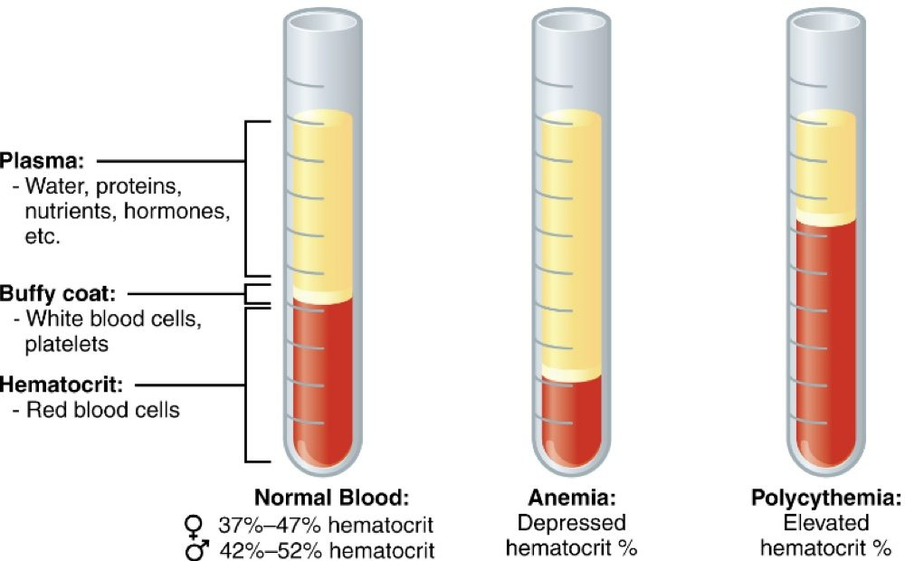
| Layer | What is in it | Whose disease is it |
|---|---|---|
| Plasma (top, straw-yellow) | Water, coagulation proteins, albumin, immunoglobulins, hormones, nutrients | Coagulation and bleeding disorders |
| Buffy coat (thin middle band) | White blood cells and platelets | White cell disorders and leukemias; platelet disorders |
| Erythrocytes (bottom, packed red) | Red blood cells — the oxygen carriers | The anemias — Sections 3 to 9 |
When you spin a tube and the plasma comes back pink or red instead of straw-yellow, that is free hemoglobin in the plasma — intravascular hemolysis. It recurs in Section 8 and again as a bedside-visible transfusion emergency in Section 14. Free heme is toxic to the kidneys.
The two lineages ★ HY
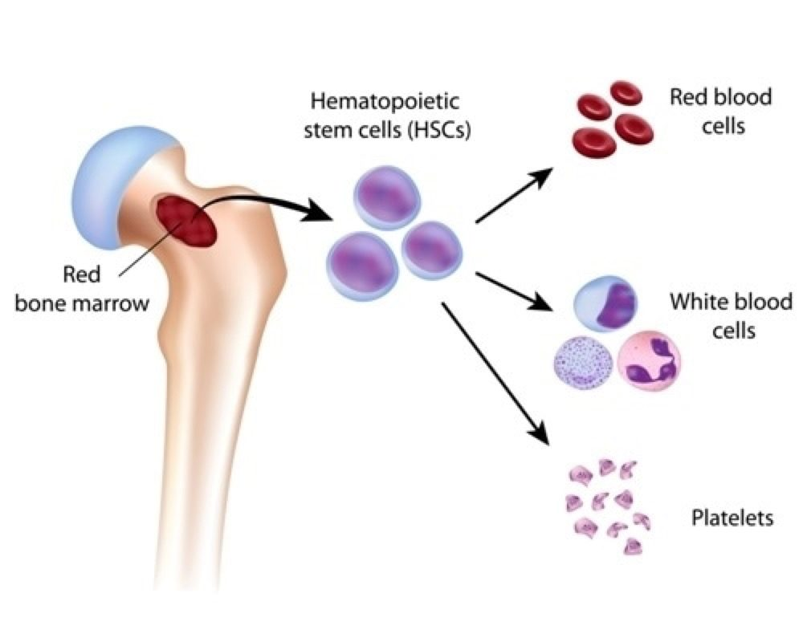
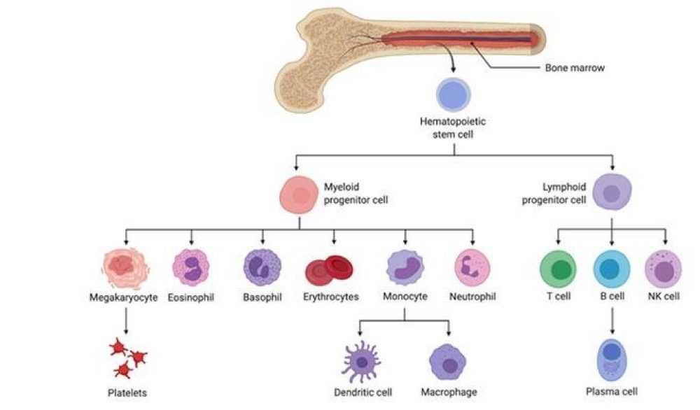
The myeloid branch — does the work
- Erythrocyte — proerythroblast to mature red cell. Loses its nucleus on the way out of the marrow. A biconcave disc, extremely deformable, roughly 120-day lifespan.
- Megakaryocyte — a giant marrow cell that stays put and blebs off fragments of its own membrane. Those anucleate fragments are platelets.
- Neutrophil — the first responder to bacterial infection; multilobed nucleus, normally three to five lobes.
- Monocyte — circulates, then leaves the blood to become a macrophage or dendritic cell.
- Eosinophil and basophil — brightly granulated; allergy and parasitic defence.
The lymphoid branch — keeps the memory
- T cell — educated in the thymus; trained to tolerate self and destroy non-self. That one sentence also explains transfusion reactions and graft-versus-host disease in Section 14.
- B cell — matures in the bone marrow; recognizes antigen and on activation gives rise to plasma cells.
- Plasma cell — the terminally differentiated B cell; the antibody factory of the humoral response.
- NK (natural killer) cell — kills without prior sensitization; part of innate immunity.
The myeloid line handles physical jobs — carry the oxygen, plug the hole, eat the bacteria. The lymphoid line handles the intelligence job — remember what it has seen. That is exactly what a vaccine exploits: show the lymphoid line a pathogen it does not have to survive, and it remembers.
Hormonal regulation — four dispatchers, four drug classes ★ HY
Learn the four hormones and you have also learned four drug classes, because in every case medicine has learned to give the hormone as a drug (Section 17).
| Lineage | Process | Lab measurement | Hormonal regulation | Function |
|---|---|---|---|---|
| Red blood cells | Erythropoiesis | Hematocrit, hemoglobin, reticulocyte count | Erythropoietin — made by the kidneys | Carry oxygen |
| Platelets | Thrombopoiesis | Platelet count | Thrombopoietin | Primary hemostasis |
| Neutrophils, eosinophils, basophils, monocytes | Myelopoiesis | Differential white cell count | G-CSF and GM-CSF | Immune defence and inflammation |
| Lymphocytes (B, T, NK) and plasma cells | Lymphopoiesis | Differential white cell count | Growth hormone, insulin-like growth factor | Identify and eliminate foreign antigens; immunologic memory |
The kidney continuously samples how much oxygen is arriving. When tissue oxygen delivery falls — from anemia, hypoxia or altitude — it releases erythropoietin, which drives division and differentiation of committed erythroid progenitors and pushes reticulocytes into the blood. One loop explains three clinical facts:
- Chronic kidney disease causes anemia — the sensor and the foreman are the same organ, and it has failed.
- Erythropoietin can be given as a drug (epoetin, darbepoetin) — you supply the missing order.
- Inflammation blunts erythropoietin release — one of the four mechanisms behind anemia of inflammation in Section 6.
And the corollary that runs through the pharmacology: an erythropoiesis-stimulating agent is useless without iron. You can shout the order all you like; the factory still needs bricks.
A reticulocyte is a newly released red cell still carrying residual RNA. The count answers exactly one question: is the marrow responding?
- Low reticulocytes with anemia = a production problem. Everything in Sections 3–6.
- High reticulocytes with anemia = loss or destruction. Bleeding, or the hemolytic anemias of Sections 7–9.
Q: Which mature blood cell is not really a cell at all, and what does that fact explain about aspirin?
The platelet. It is a membrane fragment blebbed off a megakaryocyte and has no nucleus. Because it cannot transcribe new protein, an irreversible inhibitor such as aspirin disables it for its entire 7–10 day lifespan — the platelet cannot make replacement enzyme. That is why aspirin is stopped about a week before major surgery (Section 16).
Q: A 68-year-old on dialysis has a hemoglobin of 8.4 g/dL, a normal MCV, normal iron studies and a low reticulocyte count. What is the mechanism, and what single laboratory value would you predict?
Anemia of chronic kidney disease. The failing kidney no longer makes enough erythropoietin, so the marrow is never told to build — hence a low reticulocyte count despite plenty of raw material. You would predict an inappropriately low erythropoietin level for that degree of anemia. Treatment is an erythropoiesis-stimulating agent, with iron stores repleted first.
Q: A patient's marrow is packed with immature cells of a single myeloid line, crowding out everything else. What has gone wrong at the top of the hierarchy?
A stem or progenitor cell has begun self-renewing without differentiating — proliferation uncoupled from maturation. In the blood system that is leukemia. The marrow looks hypercellular, and the other lineages fail because they have been crowded out.
Section 2 · Normal hematopoiesis
The Marrow Niche, the Biopsy, and Reading the CBC
Knowing when not to order a marrow biopsy is as much of the objective as knowing how it is done.
Components of the niche
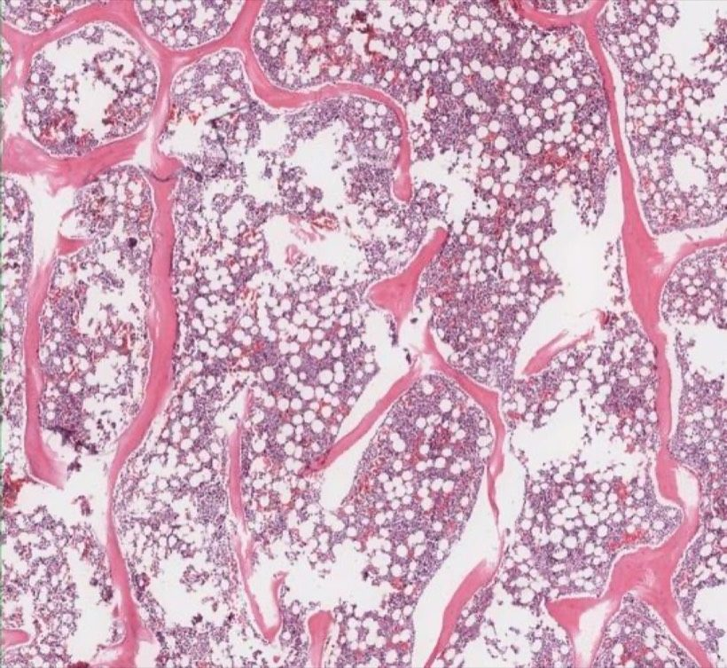
Stem cells do not float free. They live in a structured neighbourhood that decides whether they rest or divide — and that neighbourhood is itself a therapeutic target.
Stromal cells
Fibroblasts, osteoblasts along the bone surface, adipocytes and endothelial cells. They anchor stem cells and secrete the signals that hold them in place.
Extracellular matrix
The structural mesh providing adhesion sites. Losing adhesion is how a stem cell is mobilized into the blood — the principle behind harvesting stem cells for transplant.
Blood vessels
The sinusoids — nutrients in, and the exit door. A reticulocyte squeezes through a sinusoidal wall to enter the circulation.
Signaling molecules
Cytokines and growth factors that set the balance between quiescence (rest) and activation (divide).
The niche's real job is restraint. Most hematopoietic stem cells are quiescent most of the time — that is what protects the pool from exhaustion and from accumulating replication errors across a lifetime. The niche activates only as many stem cells as demand requires.
Three therapies live here: stem cell transplantation (empty the niche with conditioning chemotherapy so the graft has somewhere to land), gene therapy (Casgevy and Lyfgenia for sickle cell disease, which still require chemotherapy conditioning), and ordinary cancer chemotherapy, which hits the niche hardest of all — the reason counts crash and hair falls out.
A warehouse stores things. A hotel has a front desk deciding who stays asleep in their room (quiescence), who is called down to work (activation), and who checks out into the bloodstream. Disrupt the hotel and it does not matter how good your stem cells are — which is why every transplant begins by emptying the building.
Aspirate and core biopsy
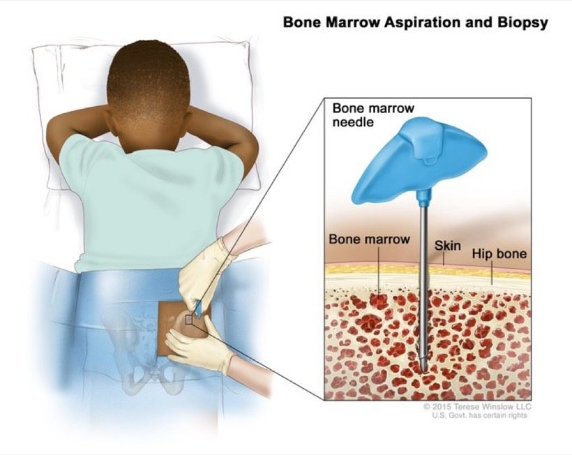
- Position and site. The patient lies prone; the operator palpates the posterior superior iliac spine and preps and drapes sterilely.
- Anesthesia. Local anesthetic to skin and periosteum, plus at least mild sedation. It takes real physical force, and is usually performed by a hematologist-oncologist — not in the emergency department.
- Aspirate. A trocar is advanced through the cortex and marrow fluid is drawn into a syringe, then squirted onto slides. Gives cytology: individual cell morphology, blast percentage, iron stain.
- Core biopsy. A cylindrical core of bone. Preserves architecture — trabeculae, fat-to-cell ratio, fibrosis, infiltration pattern — which an aspirate cannot show.
The aspirate is a smear of loose cells: you see each player's face clearly but have no idea how they were arranged. The core keeps the seating plan — how full the stadium is, where the fibrosis is, whether an infiltrate is patchy or diffuse. Cellularity is a core-biopsy word, not an aspirate word.
Cellularity — the first read ★ HY
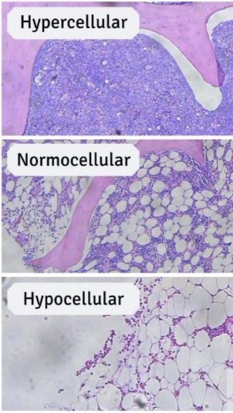
Cellularity is the ratio of hematopoietic cells to fat. On the slide, bright pink struts are bone trabeculae; the clear round holes are fat; the dense purple material is maturing blood cells with stem cells scattered among them.
| Cellularity | What you see | What it suggests |
|---|---|---|
| Normocellular | A balanced mix of hematopoietic cells and fat, appropriate for the patient's age | Normal marrow |
| Hypercellular | Purple cells crowding out nearly all the fat | Leukemia or another proliferative process — or a marrow driven hard by chronic hemolysis or blood loss (compensatory hypercellularity) |
| Hypocellular | Mostly fat, few hematopoietic cells | Aplastic anemia, myelodysplastic syndrome, or the expected picture after chemotherapy or during transplant conditioning |
Most anemia is diagnosed from blood drawn out of the arm — a complete blood count, red cell indices, iron studies, B12 and folate, a reticulocyte count, and a look at the smear. A biopsy is reserved for suspected primary marrow disease: unexplained pancytopenia, suspected leukemia or myelodysplasia, staging a lymphoma, or confirming remission.
You do not need a biopsy to diagnose iron deficiency. But if one is done for another reason, the Prussian blue stain is the historical gold standard for marrow iron: blue granules present means stores exist; their complete absence is diagnostic of iron deficiency. It is also how you catch iron deficiency hiding underneath another marrow disorder.
The CBC — what each number actually measures ★ HY
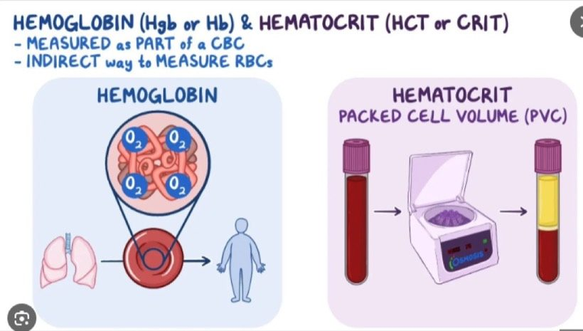
Hemoglobin — a direct chemical measurement
- Measured by spectrophotometry — hemoglobin absorbs light at a characteristic wavelength.
- Reported in grams per decilitre (g/dL).
- Because hemoglobin is confined to red cells, it is an indirect measure of red cell mass.
- Each molecule has four subunits — two alpha and two beta — each carrying one oxygen molecule.
- The measurement favoured in the United Kingdom.
Hematocrit — a physical measurement
- Spin whole blood; measure the height of the red column as a percentage of total.
- Also called packed cell volume.
- Normal ranges differ by sex: roughly 37–47% in females, 42–52% in males.
- An elevated hematocrit is polycythemia, not anemia.
- The measurement favoured in the United States.
| CBC component | What it is | How it is used |
|---|---|---|
| Hemoglobin (Hgb) | Oxygen-carrying protein concentration, g/dL | Confirms the anemia; drives the transfusion threshold |
| Hematocrit (Hct) | Percentage of blood volume that is red cells | Hct ≈ 3 × Hgb — the sanity check on a value that looks wrong |
| MCV | Average red cell size, femtolitres | The critical discriminator. <80 micro, 80–100 normo, >100 macro |
| MCH | Average hemoglobin mass per cell, picograms | Underlies normochromic vs hypochromic (enlarged central pallor) |
| MCHC | Hemoglobin per unit red cell volume | Characteristically high in hereditary spherocytosis |
| RDW | Variability in red cell size | Raised when two populations coexist — how a combined micro-plus-macrocytic anemia gives itself away |
| White cell count with differential | Total leukocytes and the proportions of each type | Leukocytosis, leukopenia, left shift (>10% immature forms) |
| Platelet count | Circulating platelets per microlitre; normal 150–400 × 10³/µL | Drives the transfusion thresholds in Section 12 |
| Reticulocyte count (add-on) | Newly released red cells still carrying RNA | Splits the anemia tree in half |
Menstruation — a recurring monthly iron and blood loss across a large part of adult life. That single fact also drives the first anemia case in Section 4.
With acute hemorrhage you lose whole blood — plasma volume and red cells together. Early on the hemoglobin can look deceptively normal, because the concentration has not changed; it falls only once the intravascular volume is replaced, over hours. The immediate threat in acute bleeding is volume, not the number on the CBC.
Q: A 7-year-old finished induction chemotherapy for acute lymphoblastic leukemia three weeks ago. A marrow biopsy shows a markedly hypocellular marrow with rare hematopoietic elements. Is this a treatment failure?
No — this is the expected and intended result. High-dose chemotherapy is given specifically to ablate the marrow and eliminate leukemic cells, so a hypocellular marrow at this point reflects the treatment working. The questions that matter are whether residual blasts remain and whether normal hematopoiesis subsequently recovers. Hypocellular is not a diagnosis on its own — it must be read against the clinical context.
Q: A 34-year-old is brought in after a motor vehicle collision with obvious hemorrhage. Her hemoglobin on arrival is 13.8 g/dL. Does this rule out significant blood loss?
No. In acute hemorrhage the patient loses plasma and red cells in the same proportion, so the concentration — which is what hemoglobin and hematocrit measure — is initially unchanged. The value falls only after fluid shifts into the intravascular space or resuscitation fluid is given. Manage the hemodynamics and the bleeding source, not the initial hemoglobin.
Q: A centrifuged tube shows a red column occupying 27% of the total height. Name the measurement and estimate the hemoglobin.
The hematocrit — 27%. Using the rule that hematocrit is roughly three times the hemoglobin, the hemoglobin is about 9 g/dL. The factor of three is a useful approximation, not a law.
Section 3 · Anemia I
Defining, Measuring and Classifying Anemia
Two definitions, two independent classification systems — and you use both at once. Mechanism tells you why; the red cell indices tell you which one.
- Physiologic definition — a reduction in the oxygen-carrying capacity of the blood.
- Laboratory definition — a reduction below normal limits of the total circulating red cell mass, as measured by hemoglobin concentration or hematocrit.
What anemia does to the patient
- Pallor — best appreciated in conjunctivae, palmar creases and nail beds.
- Weakness and fatigue.
- Dyspnea on exertion — the classic history is getting short of breath climbing stairs that used to be easy.
- If severe: myocardial and central nervous system hypoxia. The brain does not tolerate significant anemia.
System 1 — classification by mechanism ★ HY
This is the slide the lecture returned to before every new topic. Sections 4–6 live in the bottom branch; Sections 7–9 live entirely in the middle one.
| Bucket | Subdivision | Entities |
|---|---|---|
| Blood loss | Acute | Trauma |
| Chronic | Gastrointestinal tract; gynecologic disturbances | |
| Increased rate of destruction (hemolytic anemia) | Intrinsic — membrane disorders | Hereditary spherocytosis |
| Intrinsic — enzyme deficiencies | Glucose-6-phosphate dehydrogenase deficiency | |
| Intrinsic — deficient globin chain synthesis | Thalassemias | |
| Intrinsic — structurally abnormal globin chains | Sickle cell disease | |
| Extrinsic | Antibody-mediated destruction; mechanical trauma (microangiopathic hemolytic anemia); hypersplenism | |
| Impaired production | Defective hemoglobin synthesis | Iron deficiency |
| Defective DNA synthesis | Vitamin B12 and folate deficiency | |
| Marrow response to inflammation | Anemia of chronic disease |
Reduce the tree to one question. Factory problem (impaired production): not enough cells are built; reticulocytes low. Road-home problem (destruction or loss): cells are built fine and then destroyed or lost; reticulocytes high because the marrow is compensating. One cheap test splits the tree down the middle.
System 2 — classification by red cell indices ★ HY
A normal red cell is a biconcave disc — thick at the rim, thin in the middle. On a smear that thin middle reads as a pale circle: the central pallor, normally about one third of the cell's diameter. The shape maximizes surface area for gas exchange and makes the cell extraordinarily deformable, so it can fold through capillaries narrower than itself.
Two things go wrong with it, and each has its own section:
- Not enough hemoglobin to fill it → the pale centre grows → hypochromia (iron deficiency, thalassemia).
- The cytoskeleton fails and it balls up → the pale centre disappears → a spherocyte (Section 9). It stops being a doughnut and becomes a baseball.
| Mean corpuscular volume | Think first of | Then consider |
|---|---|---|
| Microcytic (< 80 fL) | Iron deficiency | Thalassemia; anemia of chronic disease (can be low-normal); sideroblastic anemia; lead poisoning |
| Normocytic (80–100 fL) | Anemia of chronic disease; acute blood loss | Chronic kidney disease; early iron deficiency; hemolysis; marrow failure |
| Macrocytic (> 100 fL) | Vitamin B12 or folate deficiency | Alcohol; liver disease; hypothyroidism; myelodysplastic syndrome; drugs (methotrexate, hydroxyurea, zidovudine); marked reticulocytosis |
The practical algorithm — the one to reproduce under pressure
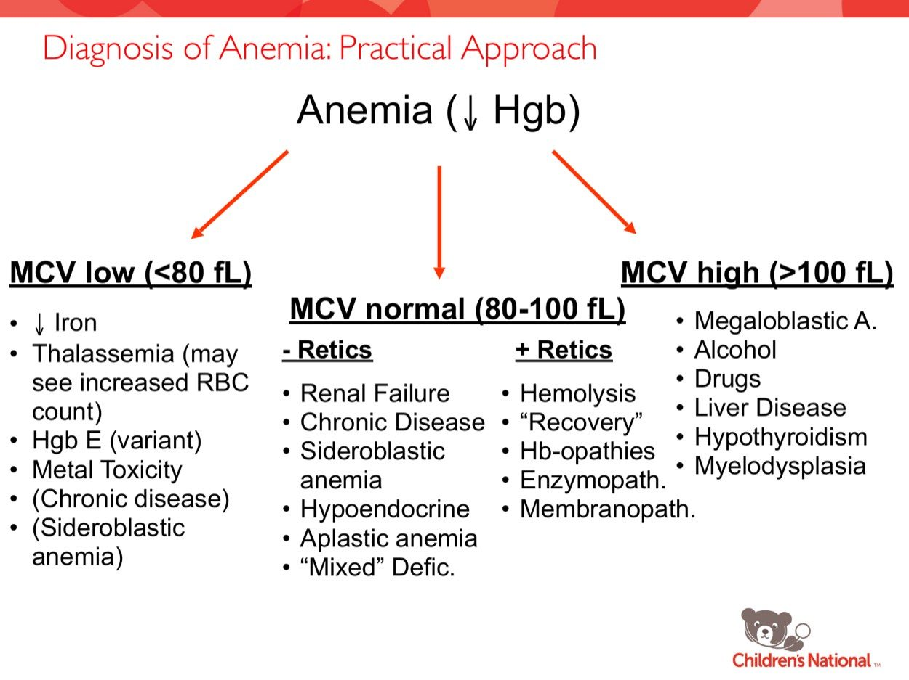
- Confirm the anemia. Hemoglobin or hematocrit below the sex-specific reference range.
- Read the MCV first. Microcytic, normocytic or macrocytic — this is where the differential splits.
- Get a reticulocyte count. Low points to a production problem; high points to loss or destruction.
- Order the targeted studies. Microcytic → iron studies. Macrocytic → B12, folate and methylmalonic acid. Normocytic with low reticulocytes → inflammation, kidney disease or early marrow disease.
- Look at the smear. Hypersegmented neutrophils, target cells, spherocytes, bite cells and sickled cells are each nearly diagnostic on sight.
Q: A patient has a hemoglobin of 10.1 g/dL with an MCV of 89 fL. A colleague says the normal MCV rules out a nutritional deficiency. Where is the flaw?
A normal MCV is an average. A patient with both iron deficiency (microcytic) and B12 or folate deficiency (macrocytic) can average out to a perfectly normocytic value — real and common in malnutrition, malabsorption, bariatric surgery and the elderly. Two clues expose it: a raised red cell distribution width, and a smear showing a dimorphic population of both small pale cells and large oval ones. Patients do not always have exactly one diagnosis.
Section 4 · Anemia I · impaired production
Iron Metabolism and Iron Deficiency Anemia
The most common nutritional deficiency in the world. It looks like it should be simple and is not — because there are four separate places along the pathway where it can break, and the laboratory pattern tells you which.
Where the iron is
| Compartment | Share of total body iron | Detail |
|---|---|---|
| Functional iron | 80% | Hemoglobin, myoglobin and iron-containing enzymes |
| Storage iron | 20% | Ferritin and hemosiderin, chiefly in liver and macrophages |
| Total body iron — women | 2–3 g | Lower stores, ongoing menstrual losses |
| Total body iron — men | 4–6 g | Larger reserve |
Four stations, four ways to fail ★ HY
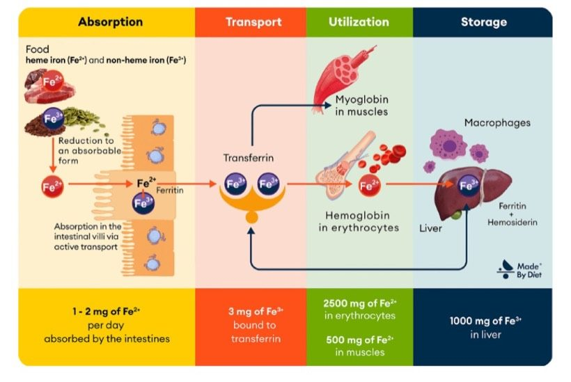
- Duodenum — absorption. Dietary iron is absorbed in the duodenum and only as Fe²⁺; roughly 1–2 mg per day. Fails in celiac disease, chronic diarrhea, gastrectomy or bypass, and acid suppression.
- Plasma — transport on transferrin. Transferrin carries about 3 mg of Fe³⁺ at any moment. Picture a molecule with little cups that may be full or empty — that image is the whole basis of the TIBC.
- Cells — utilization. Iron is delivered to marrow for erythropoiesis (~2500 mg sits in circulating erythrocytes) and to muscle for myoglobin (~500 mg). Fails in anemia of chronic disease, where iron exists but cannot be released.
- Liver and macrophages — storage. Roughly 1000 mg as ferritin and hemosiderin; senescent red cells are recycled here. The first pool to empty in chronic loss.
Ferritin tells you what is in the tank — the earliest thing to fall, before the hemoglobin ever moves. Transferrin saturation tells you what is reaching the engine right now. You can have a full tank and a blocked line — that is anemia of chronic disease, Section 6.
How people become iron deficient
Dietary lack
Rare where food is abundant, but real in the elderly, and in infants and toddlers fed largely on milk, which contains very little bioavailable iron.
Impaired absorption
Celiac disease, chronic diarrhea, gastrectomy and bariatric surgery — anything that removes or bypasses the duodenum, or removes gastric acid.
Increased requirements
Growing infants and children, and pregnancy.
Chronic blood loss
The most important cause in the Western world. Gastrointestinal: ulcers, hemorrhoids, cancer. Female genital tract: menorrhagia, uterine cancer.
Iron deficiency in an adult male or a postmenopausal woman should be considered to be caused by gastrointestinal blood loss until proven otherwise.
The reason: gastrointestinal cancer — adenocarcinoma of the colon in particular — can present with iron deficiency anemia and nothing else. The patient is bleeding into the stool, does not know it, and the loss is chronic and insidious. That is why iron deficiency in this group triggers a fecal occult blood test and endoscopic evaluation, not just a prescription for iron. Iron deficiency is a symptom, not a final diagnosis — always ask where the iron went.
An erythroid precursor divides while it accumulates hemoglobin, and stops dividing once it reaches a target hemoglobin concentration. Without iron it cannot reach that concentration on schedule, so it undergoes an extra division or two before maturing. Each division halves the cell. One mechanism, two findings: microcytic and hypochromic.
Contrast this with B12 and folate deficiency, where the cytoplasm matures normally but the nucleus cannot divide — so the cell ends up too big. Same organ, opposite direction, and the reason the MCV splits the differential so cleanly.
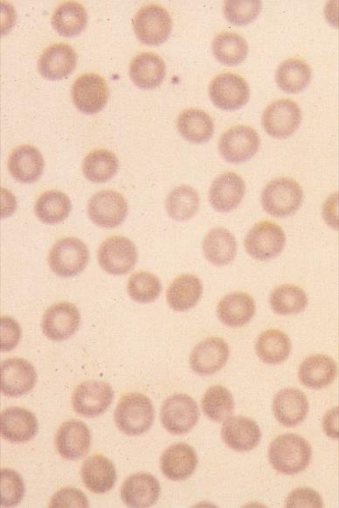
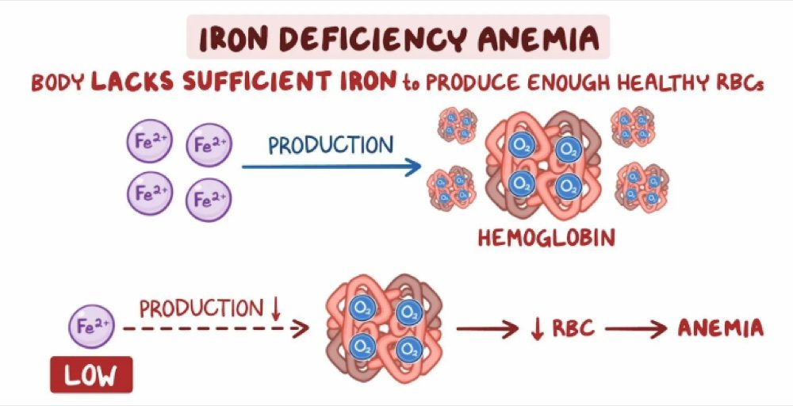
Laboratory diagnosis ★ HY
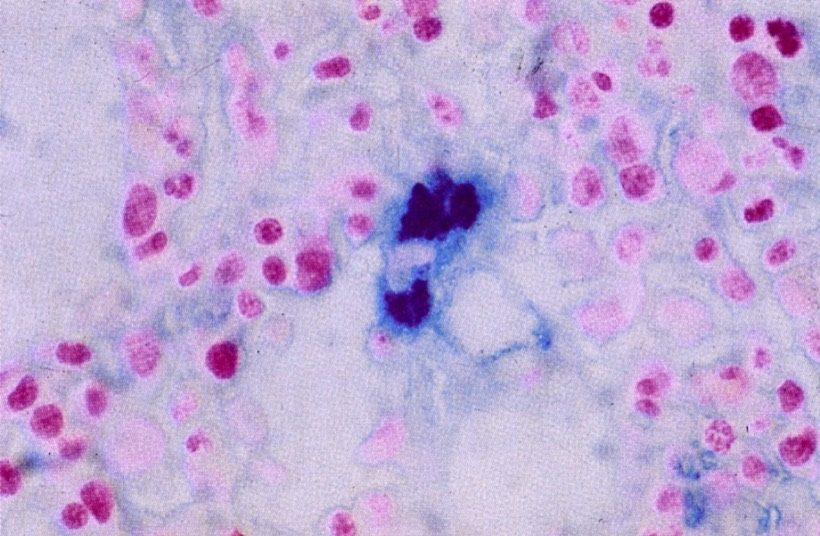
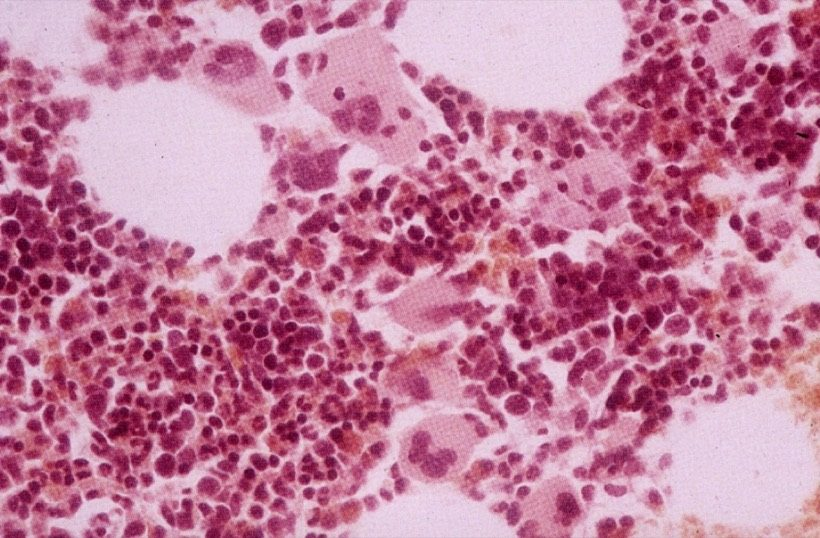
| Test | Level in iron deficiency | Why |
|---|---|---|
| Serum iron | Decreased | Less iron in circulation |
| Ferritin (stored iron) | Decreased | Stores are the first pool to empty — the earliest and most useful marker |
| Total iron binding capacity | Increased | TIBC reflects transferrin sites not saturated with iron. Low serum iron leaves more empty cups, so binding capacity goes up |
| Transferrin saturation | Decreased (< 15%) | The same fact stated the other way round — the cups are empty |
| Mean corpuscular volume | Decreased (< 80 fL) | Extra divisions before maturation |
| Bone marrow iron | Decreased to absent | No stainable Prussian blue |
The TIBC is the one students reliably get backwards. Hold the picture: transferrin carries cups. When you are iron deficient the cups float around empty — so the capacity to bind more iron is high. Empty cups = high TIBC = low saturation.
Now flip it for Section 6: in anemia of chronic disease the body hides iron and makes less transferrin. Fewer cups on the shelf = low TIBC. That single difference separates the two most commonly confused anemias in the hospital.
Ferritin rises in inflammation, infection, liver disease and malignancy regardless of iron stores. So a genuinely iron-deficient patient who is also acutely sick can have a normal or even elevated ferritin. Diagnosing anemia is never one test — interpret ferritin alongside transferrin saturation, TIBC, C-reactive protein and the smear.
- Oral iron plus dietary change is first line, together with correcting the underlying cause.
- Adherence is the real obstacle. Oral iron causes nausea, constipation, metallic taste and black stools — and patients quit. Full pharmacology, including when to give up on the oral route, is in Section 17.
- Diet alone will not correct an established deficiency. Once someone is genuinely deficient you must replete stores.
- Expect a reticulocyte rise within about a week if the treatment is working.
Q: A 58-year-old man has a hemoglobin of 10.8 g/dL, MCV 73 fL, ferritin 8 ng/mL and transferrin saturation 9%. He has no symptoms other than fatigue. What is the diagnosis, and what is the next step?
Iron deficiency anemia — microcytic, with low ferritin and low transferrin saturation. The next step is not to prescribe iron and stop there. In an adult male, iron deficiency is presumed to be gastrointestinal blood loss until proven otherwise, so he needs fecal occult blood testing and, importantly, endoscopic evaluation to exclude colorectal carcinoma. Treat the iron and find the leak.
Q: Explain why the total iron binding capacity is HIGH in iron deficiency but LOW in anemia of chronic disease.
TIBC measures unsaturated transferrin binding sites. In iron deficiency there is little iron to occupy those sites and the liver increases transferrin production, so unbound capacity is high. In anemia of chronic disease, inflammation both reduces transferrin synthesis (it is a negative acute phase reactant) and sequesters iron inside macrophages, so there are fewer binding sites overall and the TIBC is low to normal even though serum iron is also low.
Q (case): A 25-year-old woman has fatigue, dyspnea, pallor, a craving for chewing ice, heavy menstrual bleeding and a vegetarian diet. Hemoglobin 7 g/dL, MCV 74 fL, ferritin low. Diagnosis, the value that settles it, and management?
Iron deficiency anemia from menstrual blood loss plus dietary insufficiency. Microcytic anemia with a low ferritin is iron deficiency until proven otherwise, and the ferritin settles it. Pica — craving non-nutritive substances, classically ice (pagophagia) — is distinctive and highly suggestive. She has both mechanisms at once: chronic loss through menorrhagia and reduced intake of bioavailable iron.
Note the discrimination: in a premenopausal woman with obvious menorrhagia you do not automatically pursue a gastrointestinal source — that rule applies to adult males and postmenopausal women. Management: oral iron and dietary change, warning her up front about the gastrointestinal side effects, and continuing iron after the hemoglobin normalizes to refill stores.
Section 5 · Anemia I · impaired production
Megaloblastic Anemia — Vitamin B12, Pernicious Anemia and Folate
Iron deficiency breaks hemoglobin synthesis and gives you small cells. B12 and folate deficiency break DNA synthesis and give you big ones. Same organ, opposite direction — and one of the two also destroys the spinal cord.
- DNA synthesis — shared with folate. Failure here produces the megaloblastic anemia.
- Maintenance of the myelin surrounding neurons — B12 only. Failure here produces the neurologic complications, which eventually become irreversible.
Folate has only the first job. That single asymmetry is the most testable fact in this section.
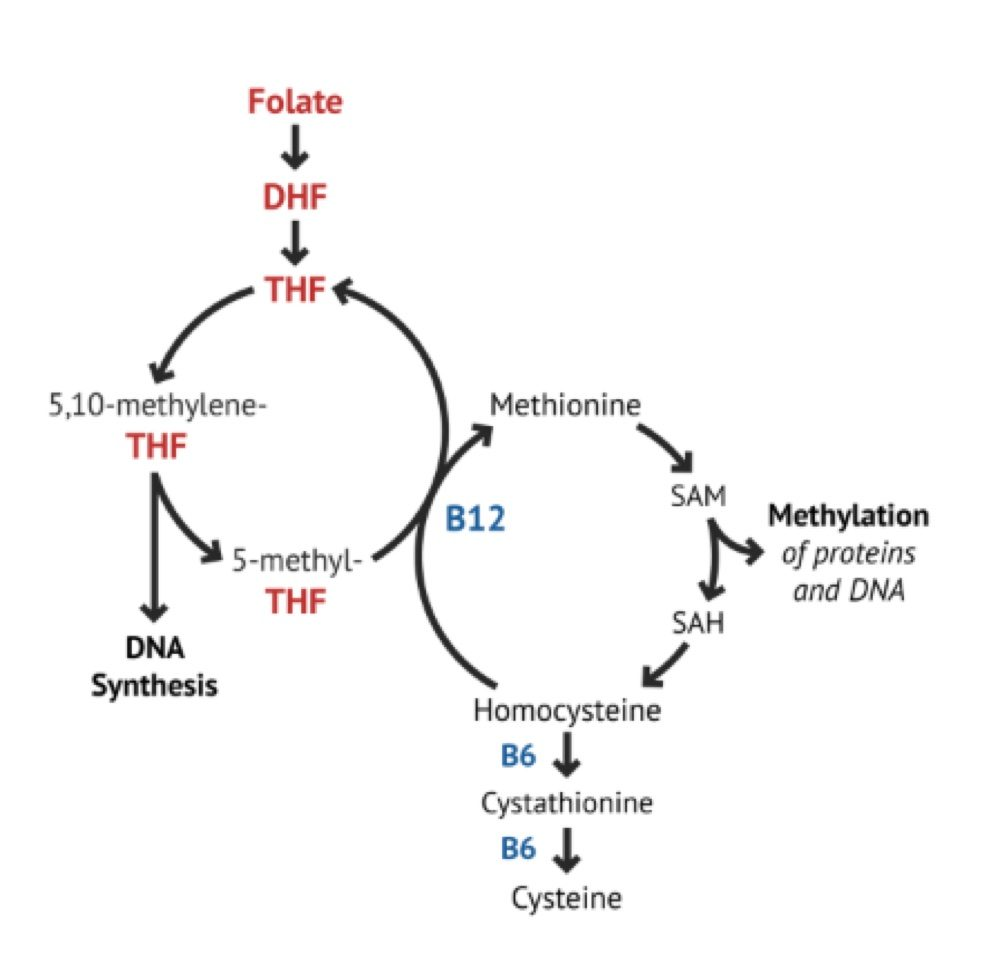
Megaloblastic morphology ★ HY
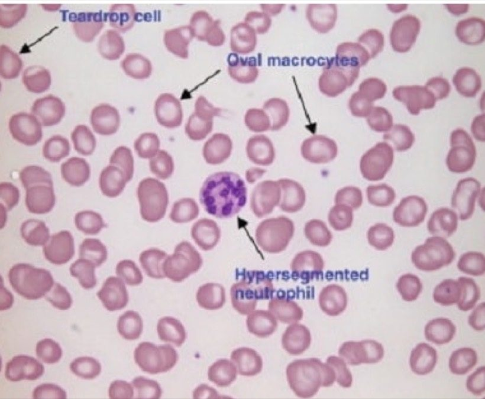
- Erythrocytes larger than normal and oval — macro-ovalocytes.
- Neutrophils larger and hypersegmented, with five to six or more nuclear lobes. A normal neutrophil has three to five.
- The marrow is hypercellular, with large red cell precursors containing fine, open chromatin — the megaloblasts — plus enlarged granulocyte precursors (giant bands and metamyelocytes).
Hemoglobin synthesis in the cytoplasm proceeds normally, because it needs iron, not DNA. Nuclear maturation and cell division stall, because they need thymidine, which needs folate, which needs B12 to be regenerated. The cytoplasm outruns the nucleus. Every finding drops out of that sentence:
- The cell keeps growing but cannot divide → macrocytic.
- The nucleus stays immature → fine, open chromatin in marrow precursors.
- The defect hits every dividing cell → hypersegmented neutrophils and giant bands.
- Many precursors die in the marrow before release → ineffective erythropoiesis: hypercellular marrow with a low reticulocyte count and an elevated LDH.
Ineffective hematopoiesis means precursors are produced in large numbers but destroyed within the marrow before release. The signature pair is a hypercellular marrow with a low reticulocyte count, plus a raised LDH and indirect bilirubin from intramedullary cell death.
Diseases it is seen in: megaloblastic anemia (B12 and folate deficiency), thalassemia (unpaired globin chains kill precursors — Section 10), myelodysplastic syndrome, sideroblastic anemias, and severe iron deficiency.
Macrocytosis has a long differential — alcohol, liver disease, hypothyroidism, drugs, reticulocytosis. But a hypersegmented neutrophil says the problem is specifically DNA synthesis, which narrows you immediately to B12 or folate. Count the lobes: six or more, think megaloblastic.
Vitamin B12 metabolism — a long road with many exits
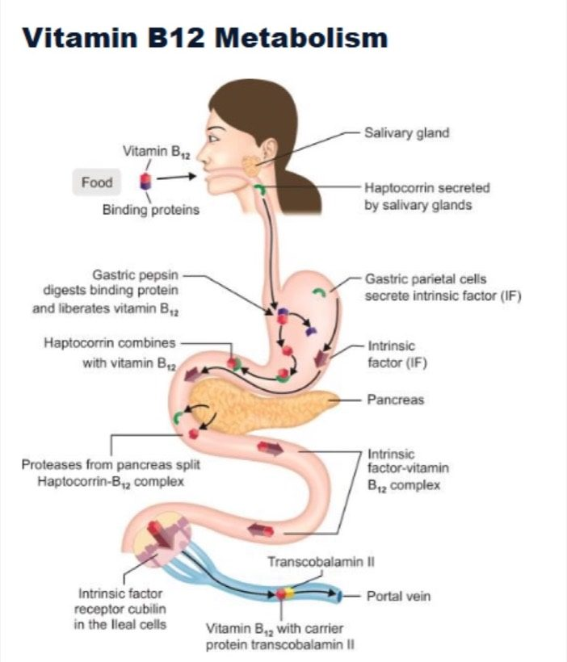
- Diet. The major source is animal products. Plants contain very little cobalamin — which is why strict vegans are at genuine risk.
- Stomach — liberation. Gastric pepsin and acid liberate B12 from dietary binding proteins. Salivary haptocorrin then carries it onward.
- Stomach — intrinsic factor. Parietal cells of the gastric mucosa secrete intrinsic factor. These are the same cells that make gastric acid — remember that pairing.
- Duodenum — the handoff. Pancreatic proteases split the haptocorrin–B12 complex, freeing B12 to bind intrinsic factor.
- Terminal ileum — absorption. The complex is absorbed via the cubilin receptor. This is the only place it happens.
- Blood — transport. B12 binds transcobalamin II, which delivers it to the cells of the body.
| Cause of B12 deficiency | Examples |
|---|---|
| Inadequate diet | Strict vegan diet, severe malnutrition |
| Impaired absorption — intrinsic factor deficiency | Pernicious anemia; gastrectomy and bariatric surgery |
| Impaired absorption — malabsorption states | Celiac disease, ileal resection, Crohn disease and other ileal inflammation |
| Competitive uptake | Fish tapeworm (Diphyllobothrium latum); intestinal bacterial overgrowth |
| Increased requirement | Pregnancy |
| Drug-induced | Metformin (blocks calcium-dependent ileal uptake of the B12–IF complex); proton pump inhibitors (no acid, so B12 is never released from food protein) |
Sleeve gastrectomy and gastric bypass remove or bypass the acid- and intrinsic-factor-producing stomach, and bypass the duodenum. The result is a predictable long-term deficiency of B12 and iron together, needing lifelong monitoring. It is also a common source of the mixed micro-plus-macrocytic picture that averages out to a normal MCV.
Pernicious anemia ★ HY
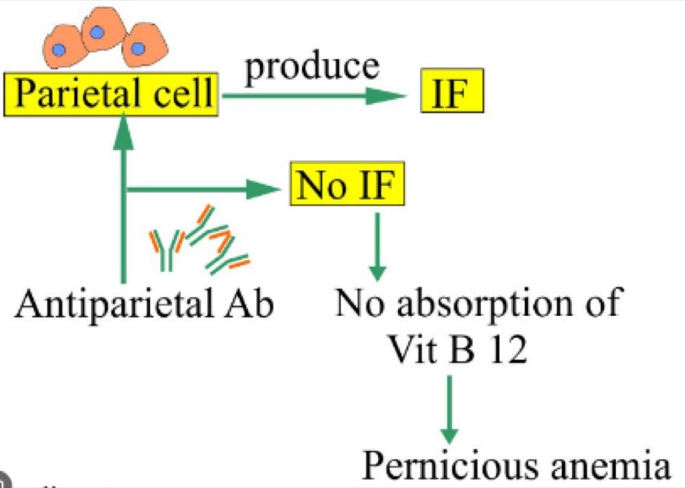
Autoimmune destruction of the gastric mucosa leading to loss of parietal cells, which produce intrinsic factor. Without intrinsic factor there is no B12–IF complex, and therefore no absorption in the terminal ileum — no matter how much B12 the patient eats.
| Antibody | Frequency in pernicious anemia | Character |
|---|---|---|
| Anti-parietal cell antibody | 85–90% | More sensitive |
| Anti-intrinsic factor antibody | 75% | More specific |
Megaloblastic anemia
Macro-ovalocytes, hypersegmented neutrophils, hypercellular marrow — from the B12 deficiency itself.
Gastric atrophy with intestinal metaplasia
From the immune-mediated destruction. Consequence: greater risk of gastric carcinoma — these patients need ongoing surveillance.
Central nervous system lesions
Myelin degeneration of the dorsal and lateral columns; the severe form is subacute combined degeneration.
You are not just giving more B12. You are managing an autoimmune gastritis with cancer risk, a hematologic deficiency, and a neurologic degeneration. And B12 must be given by a route that does not require intrinsic factor — intramuscular injection, or high-dose oral therapy relying on passive diffusion.
No longer performed, but it localizes the lesion better than any single modern test. Saturate the body with injected non-radioactive B12 so any absorbed oral dose spills into the urine. Stage I: oral radiolabelled B12 alone; no radiolabel in the urine means it was not absorbed. Stage II: repeat with exogenous intrinsic factor — if the radiolabel now appears, the missing ingredient was intrinsic factor, i.e. pernicious anemia. Still absent? The defect is at the terminal ileum — ileitis, ileal resection or bacterial overgrowth.
Folate deficiency
| Cause of folate deficiency | Examples |
|---|---|
| Decreased intake | Inadequate diets in chronic alcohol use and food insecurity. Richest dietary source is green vegetables |
| Increased requirement | Pregnancy and infancy; chronic hemolysis; dialysis |
| Impaired utilization | Folate antagonists — chemotherapeutic agents, notably methotrexate; some anticonvulsants |
Folate is the key nutrient for neural tube closure. Supplementation prevents the neural tube defects spina bifida and anencephaly, which is why every prenatal vitamin contains more folic acid than a general multivitamin.
The timing is the whole point: the neural tube closes at about 4 weeks — often before a pregnancy is even recognized. So the recommendation is to supplement before conception, in all women of childbearing potential, not after a positive test. Pregnancy is also a state of increased folate requirement in its own right.
Chemotherapy is broadly a poison aimed at fast-dividing cells. What are fast-dividing cells busy doing? DNA synthesis. So shut down DNA synthesis — and the folate pathway is the obvious lever. That is also why the side effects are predictable: the fastest-dividing normal tissues suffer first. The marrow empties out, the gut mucosa ulcerates, and the hair falls out.
Telling B12 and folate apart ★ HY
| Test or finding | B12 deficiency | Folate deficiency |
|---|---|---|
| Mean corpuscular volume | Increased (>100 fL) | Increased (>100 fL) |
| Blood smear | Hypersegmented neutrophils, macro-ovalocytes | Hypersegmented neutrophils, macro-ovalocytes |
| Neurologic examination | Abnormal — paresthesias, sensory ataxia; severe: subacute combined degeneration | Normal — no neurologic manifestations |
| Methylmalonic acid | Elevated | Normal |
| Homocysteine | Elevated | Elevated — so it cannot discriminate |
| Serum B12 | Low | Normal |
| Serum and red cell folate | Normal | Low |
| Autoantibodies | Present if pernicious anemia | Absent |
| Response to folate | Hematologic improvement, but neurologic damage progresses | Prompt hematologic improvement |
Methylmalonic acid is elevated in B12 deficiency and normal in folate deficiency. Homocysteine goes up in both, so it only tells you one of the two is missing. If you can order one test to separate them, order the methylmalonic acid. And the clinical version: B12 has the Brain. Folate does not.
The anemia of B12 deficiency will improve on folate — but folate has no effect on the neurologic manifestations. You correct the blood count, everyone relaxes, the patient looks better, and the subacute combined degeneration keeps progressing toward irreversibility. Always check a B12 level before treating a megaloblastic anemia with folate.
Q: A 62-year-old woman has hemoglobin 9.4 g/dL, MCV 112 fL, hypersegmented neutrophils, elevated homocysteine and a normal methylmalonic acid. What is the deficiency, and what must you check before treating?
Folate deficiency. Homocysteine is raised in both deficiencies, but the normal methylmalonic acid excludes B12. Before starting folic acid you must still check a B12 level, because a coexisting B12 deficiency would be masked hematologically by folate replacement while the neurologic degeneration continued unopposed.
Q: Why is the reticulocyte count LOW in megaloblastic anemia even though the bone marrow is HYPERCELLULAR?
Ineffective erythropoiesis. Precursors are produced in large numbers — hence the hypercellular marrow — but they cannot complete nuclear division and are destroyed within the marrow before release. Few mature cells reach the blood, so the reticulocyte count is low, and the intramedullary cell death releases lactate dehydrogenase and indirect bilirubin.
Q (case): A 61-year-old man with fatigue, mild confusion, pallor and paresthesias has hemoglobin 6.3 g/dL, MCV 115 fL, B12 140 pg/mL, elevated LDH, low reticulocytes and hypersegmented neutrophils on smear. Diagnosis, the two supporting findings worth reading properly, and management?
Megaloblastic anemia from B12 deficiency, most likely pernicious anemia. Macrocytosis with hypersegmented neutrophils means defective DNA synthesis; the low B12 names which one. The paresthesias and confusion are the tell that this is B12 and not folate.
Two supporting findings: the elevated LDH with a low reticulocyte count is the signature of ineffective erythropoiesis; and a prior gastric history points at loss of intrinsic factor. Management: intramuscular B12, which bypasses the need for intrinsic factor; confirm with anti-parietal cell and anti-intrinsic factor antibodies; and remember the associated gastric carcinoma risk requires ongoing surveillance.
Section 6 · Anemia I · impaired production
Anemia of Chronic Disease (Anemia of Inflammation)
The most common cause of anemia among hospitalized patients in the United States — and the one that most often gets mistaken for iron deficiency and treated with iron that does nothing.
- Impaired red cell production associated with chronic disease. Also called anemia of inflammation — the newer term, covering both anemia of chronic disease and anemia of critical illness.
- The most common cause of anemia among hospitalized patients in the United States.
- Associated with defective iron utilization, and therefore mimics iron deficiency.
- A diagnosis of exclusion. Can appear as early as 1–2 months after disease onset.
| Category | Classic examples |
|---|---|
| Chronic infections | Osteomyelitis, lung abscess, endocarditis |
| Chronic immune disorders | Rheumatoid arthritis, Crohn disease |
| Neoplasms | Hodgkin disease, carcinoma |
One word: inflammation. Not the infection, not the tumour, not the joint — the cytokine response to all three. That is why a single mechanism covers such a scattered list of diseases.
Four mechanisms, one stimulus ★ HY
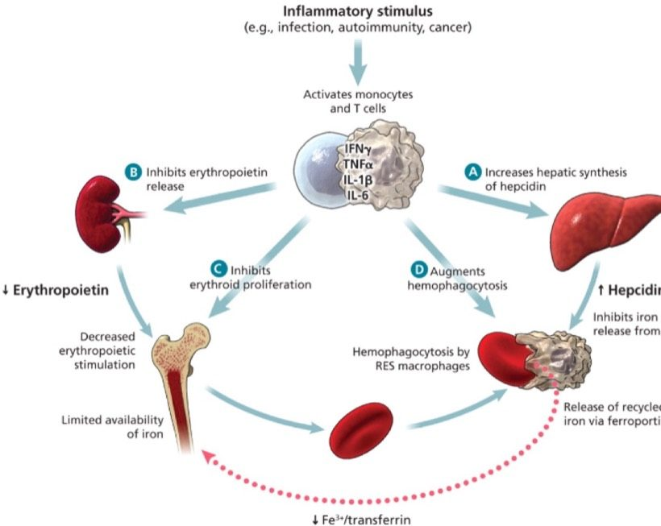
Hepcidin goes up
Interleukin-6 drives hepatic hepcidin synthesis. Hepcidin inhibits iron release from macrophages and enterocytes, so recycled and dietary iron is trapped. Serum iron falls even though total body iron is normal or high.
Erythropoietin release is inhibited
Cytokines blunt erythropoietin release from the kidney — the order is never given loudly enough.
Erythroid proliferation is inhibited
Cytokines act directly on erythroid precursors to suppress proliferation, independent of iron and erythropoietin.
Hemophagocytosis is augmented
Activated macrophages of the reticuloendothelial system begin consuming red cells — something they should not be doing.
Ferroportin is the only door iron has out of a gut cell or a macrophage. Hepcidin destroys ferroportin. High hepcidin means the doors are locked — the iron is in the building, it just cannot get to the marrow.
That one image explains the whole laboratory picture and the treatment failure: ferritin high (iron is stored, and ferritin is also an acute phase reactant), serum iron low (none is circulating), and oral iron does not work — you are shoving more iron at a locked door. It is also why intravenous iron does work: it enters past the locked door.
The discrimination that matters most ★ HY
| Test | Iron deficiency anemia | Anemia of chronic disease | Both together |
|---|---|---|---|
| Mean corpuscular volume | Low (<80) | Low to normal | Low |
| Serum iron | Low | Low | Low |
| Ferritin | Low | Normal to high | Low-normal (may be misleading) |
| Total iron binding capacity | High | Low to normal | Variable |
| Transferrin saturation | Low (<15%) | Low | Low |
| Marrow iron | Absent | Increased, in macrophages | Reduced |
| Reticulocyte count | Low | Low | Low |
Serum iron is low in both, so it discriminates nothing. The pair that does the work is ferritin and TIBC, and they move in opposite directions:
- Iron deficiency: ferritin LOW, TIBC HIGH. Empty tank, extra empty cups.
- Anemia of chronic disease: ferritin HIGH, TIBC LOW. Full tank, locked doors, fewer cups.
And the confounder that makes this hard in real patients: ferritin is an acute phase reactant, so a genuinely iron-deficient patient who is also inflamed can show a normal ferritin. When the picture is mixed, the transferrin saturation and a marrow iron stain settle it.
- Treat the underlying disease. Control the rheumatoid arthritis, drain the abscess, treat the cancer. This is the whole management strategy, and it is worth saying plainly because the instinct to “treat the number” is strong.
- Erythropoiesis-stimulating agents may be considered if the patient is symptomatic — but note they are not FDA-approved for this indication, and there are real safety concerns (Section 17).
- Optimize the diet, especially in older patients with concurrent nutritional deficiencies.
- Oral iron generally does not help, because the problem is not iron supply — it is iron release.
Q: A 71-year-old with long-standing rheumatoid arthritis has hemoglobin 9.6 g/dL, MCV 86 fL, low serum iron, ferritin 340 ng/mL, low TIBC and a low reticulocyte count. Would oral iron help? Why or why not?
No. This is anemia of chronic disease. Inflammatory cytokines — chiefly interleukin-6 — raise hepcidin, which degrades ferroportin and blocks iron export from macrophages and enterocytes. Total body iron is adequate (high ferritin, low TIBC, increased marrow macrophage iron); it simply cannot be released to erythroid precursors. Adding oral iron does not open that door. The treatment is control of the underlying rheumatoid arthritis, with an erythropoiesis-stimulating agent considered only if she is symptomatic.
Section 7 · Anemia I · heme synthesis
Heme Synthesis Gone Wrong — the Porphyrias, and Lead
Sideroblastic anemia, porphyria and lead toxicity are three diseases of one pathway, and they converge on the same two molecules: δ-aminolevulinic acid and porphobilinogen. Learn the pathway once and all three fall out of it — including the single discriminator that separates an acute porphyria attack from lead poisoning.
“Porphyria is rare but commonly tested on licensing boards.” It also happens to be the disease behind much of the vampire folklore — blistering skin on sun exposure, avoidance of daylight, “blood deficiencies,” changes in the teeth.
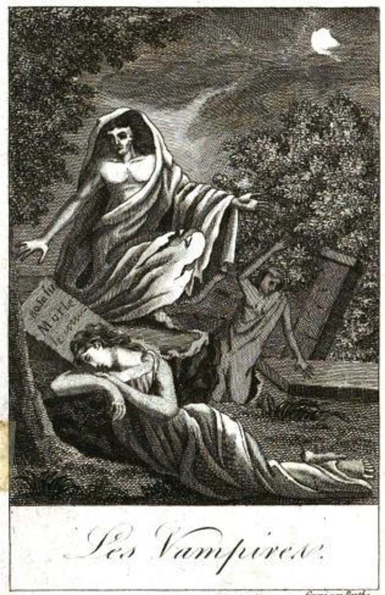
There are 8 enzymes in the heme synthesis pathway and 8 types of porphyria. He says twice that he is not holding you to the full pathway or the full list of eight — “for your boards, it's important to understand this pathway, but for our exam, I don't think it's as important.”
Two porphyrias are in scope, and they are the two most common:
- Acute intermittent porphyria (AIP) — enzyme defect: PBG deaminase
- Porphyria cutanea tarda (PCT) — enzyme defect: uroporphyrinogen decarboxylase (UROD)
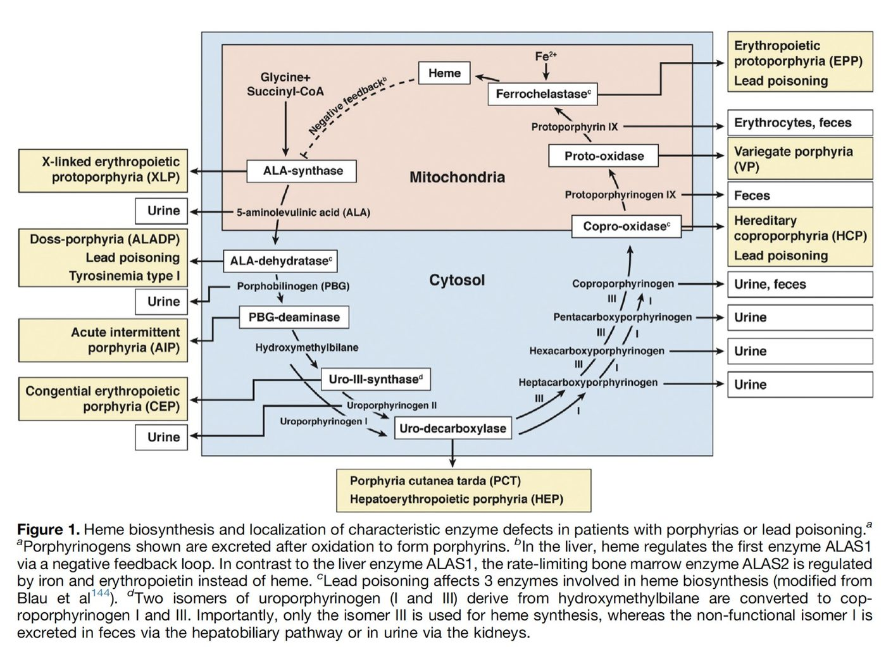
- All porphyrias are heme synthetic pathway defects — inherited or acquired.
- They lead to elevated porphyrin precursors, predominantly ALA and PBG.
- Seven of the eight are loss-of-function. The exception is X-linked dominant protoporphyria — a GAIN-of-function mutation in the ALAS2 gene. (“If you're in medicine long enough, there's always one exception.”)
- There are exactly two clinical presentations, and this is the fork that organizes the whole topic:
- NEUROTOXIC / neurovisceral → the acute porphyrias, e.g. AIP
- CUTANEOUS PHOTOSENSITIVITY → the blistering porphyrias, e.g. PCT
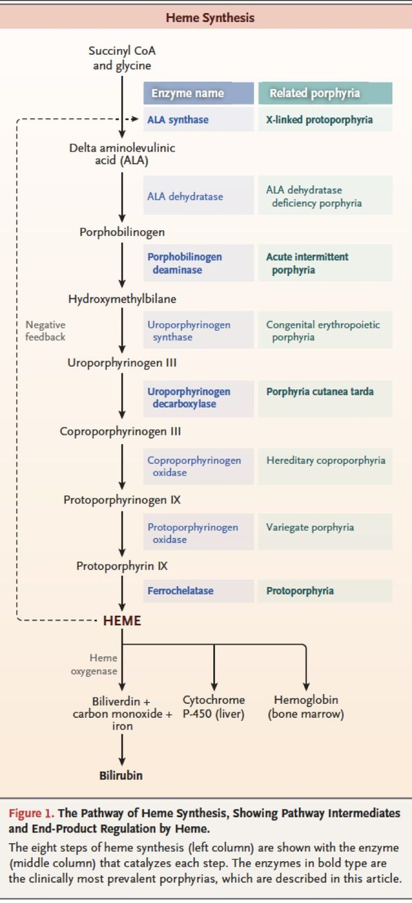
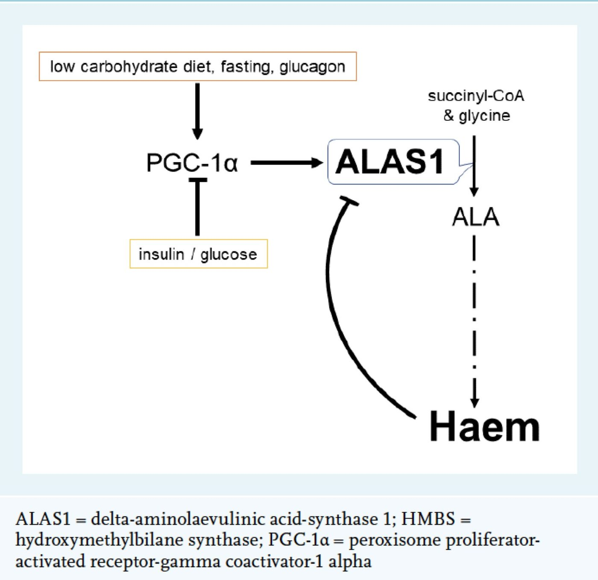
Heme inhibits ALAS1, the first and rate-limiting enzyme. When a downstream enzyme is deficient, less heme is made → less inhibition reaches ALAS1 → ALAS1 revs up — and the pathway floods with the precursors that accumulate above the block.
That is why porphyria is a disease of precursor accumulation, not of heme deficiency per se.
It also explains every precipitant: anything that increases demand for heme or upregulates ALAS1 triggers an attack — fasting and low-carbohydrate intake (via PGC-1α), drugs that induce cytochrome P450 (which consumes heme), steroid hormones, alcohol, infection and stress. Conversely, glucose and insulin suppress PGC-1α — which is the entire rationale behind carbohydrate loading in an acute attack.
When to suspect it — and where in the sequence you actually make the diagnosis
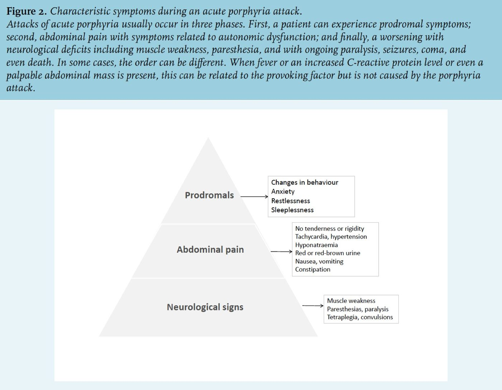
- Prodrome — behavior change, anxiety, restlessness, sleeplessness. You will essentially never diagnose porphyria here. His line: “That explains about 60% of the United States population at any one period of time.”
- Abdominal pain — this is the tier where the diagnosis gets made. Specifically unexplained abdominal pain: severe pain with no tenderness or rigidity, and normal CT, plain films and MRI. Accompanied by tachycardia, hypertension, hyponatremia, nausea, vomiting, constipation, and red or red-brown urine.
- Neurological signs — muscle weakness, paresthesia, paralysis, tetraplegia, convulsions. You want the diagnosis before this.
If there is fever, a raised CRP, or a palpable abdominal mass, that is related to the provoking factor, not caused by the porphyria attack. Keep looking for the trigger.
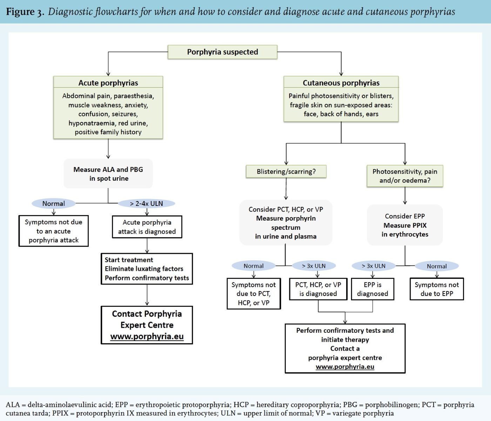
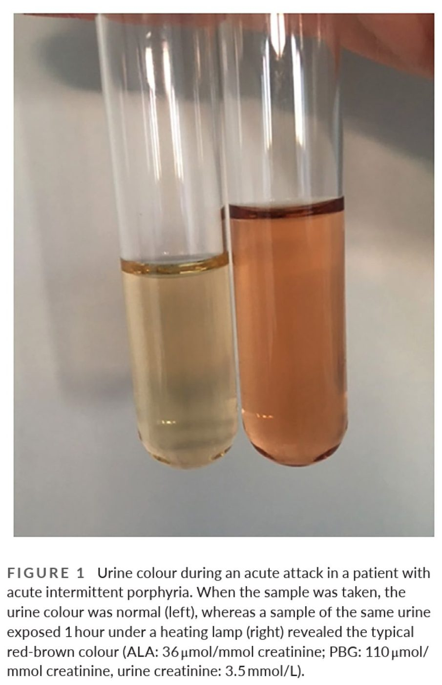
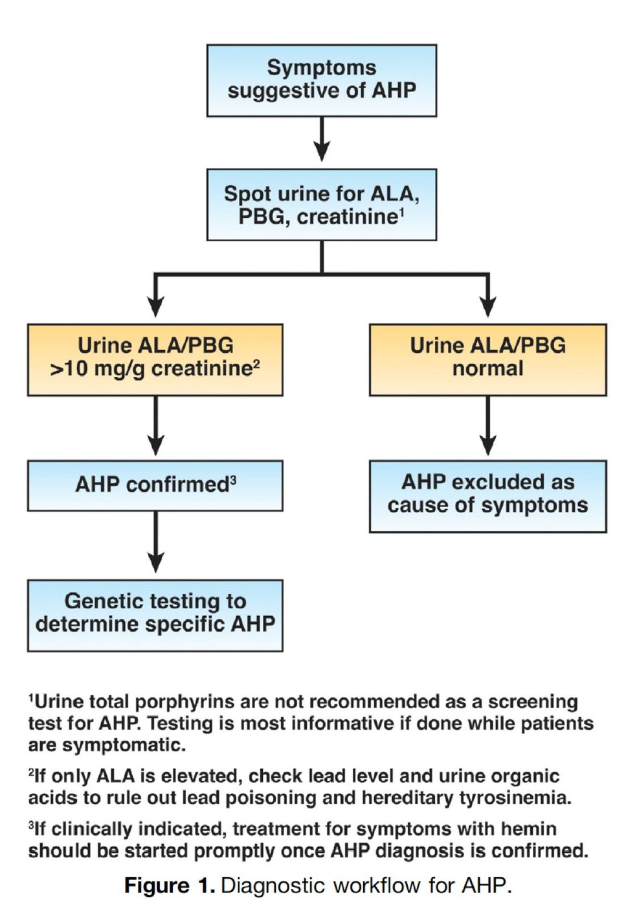
- Collect the urine DURING the symptoms. “That's the time to send that.” A spot urine is sufficient — you do not need a 24-hour collection.
- Send it for ALA, PBG and creatinine. Why creatinine? To normalize the result — reference ranges are expressed per gram of creatinine, indexing the value to muscle mass and urine concentration.
- Interpret against the upper limit of normal. > 2–4× ULN confirms an acute porphyria attack. Then start treatment, eliminate provoking factors, run confirmatory tests, and refer to a porphyria expert centre. Genetic testing determines which specific acute hepatic porphyria it is.
Do not use urine total porphyrins as a screening test — the workflow says so explicitly. And if ALA is elevated but PBG is normal, check a blood lead level and urine organic acids to exclude lead poisoning and hereditary tyrosinemia. That footnote is the porphyria-versus-lead discriminator.
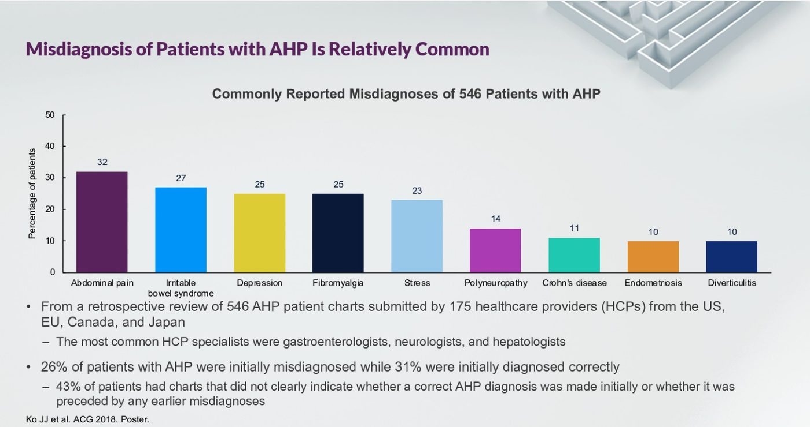
“It's not a very challenging type of diagnosis. The most challenging part of it is actually thinking about it within your differential diagnosis.” Which leads to the maxim: “You will never, ever, ever get the right diagnosis unless you first generate a differential diagnosis.”
Acute intermittent porphyria — the neurovisceral one
Most common ACUTE porphyria
note the precision
80% of acute porphyria cases; 1 in 20,000–100,000 people. Most common acute porphyria — not the most common porphyria overall, which is PCT.
Autosomal dominant
genetics
A hepatic porphyria subtype.
PBG deaminase
the enzyme defect
Also called hydroxymethylbilane synthase.
2nd–3rd decade
why onset is delayed
Only a PARTIAL deficiency — about half of normal enzyme activity — so symptoms often do not appear until age 15–50. More women than men, likely a hormonal effect.
- Visceral abdominal pain. “These individuals really, really have terrible abdominal pain, but yet they'll have normal CT scans, normal plain films, normal MRI scans — normal every scan.” Pain out of all proportion to the examination and the imaging.
- Neurologic dysfunction. Symmetrical peripheral neuropathy, weakness, paresis, and in severe attacks paralysis and convulsions.
- Psychiatric disturbance. Anxiety, depression, psychosis, confusion.
Add the features that make the vignette recognizable: hypertension, tachycardia, hyponatremia (frequently through SIADH), constipation, and dark or purple urine during the attack.
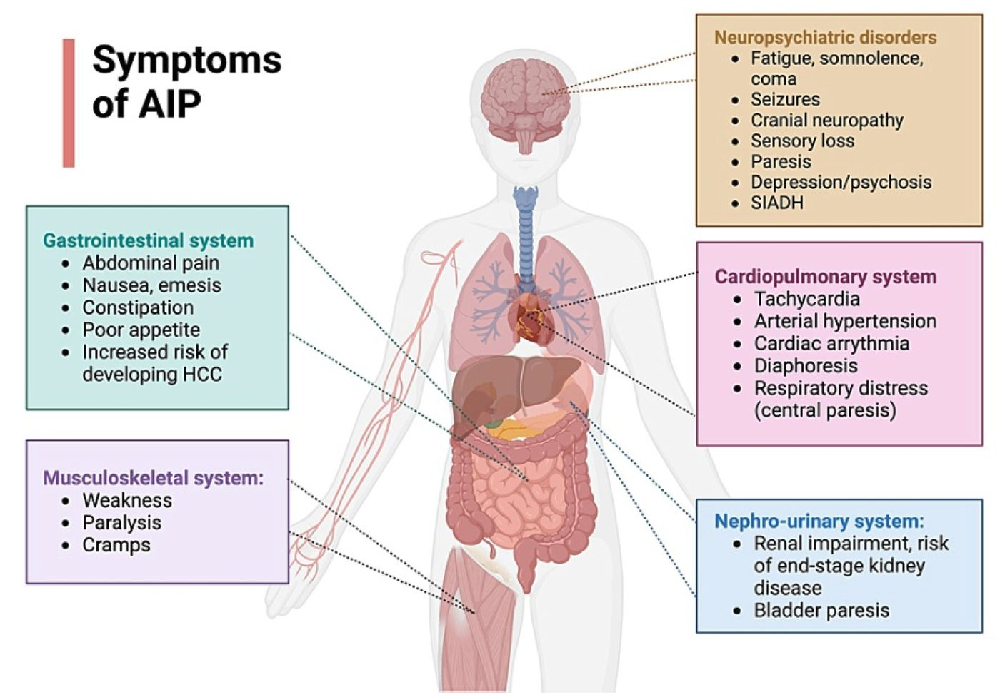
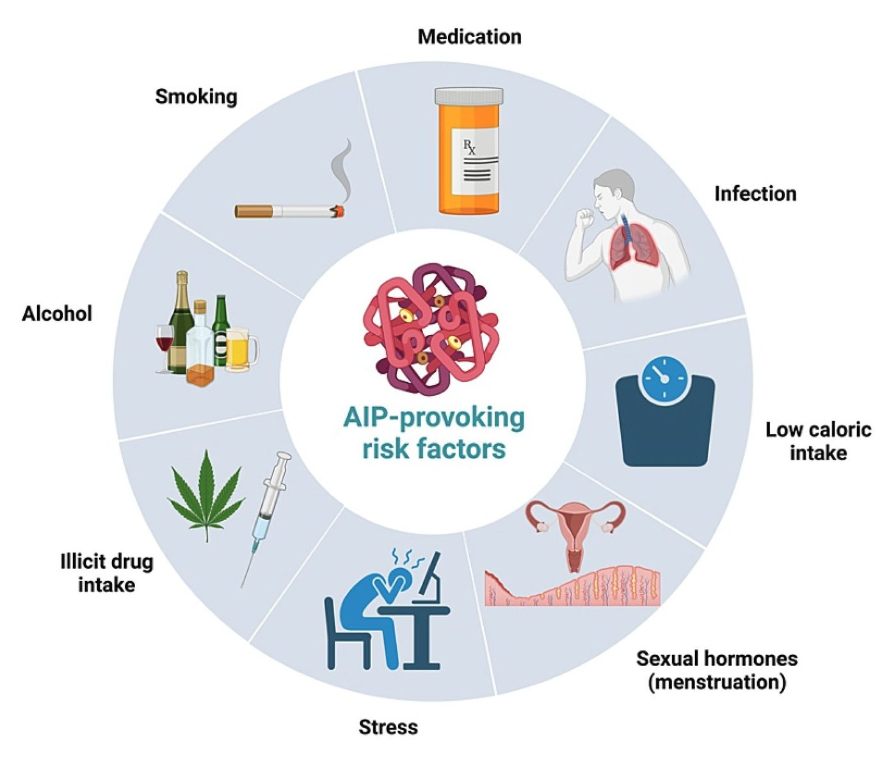
Medications · infection · low caloric intake / fasting · sex hormones (including menstruation) · stress · illicit drugs · alcohol · smoking.
The lecturer's clinical picture, nearly word-for-word the exam vignette: a young woman with menstrual irregularity is started on an estrogen or combined oral contraceptive pill and suddenly begins having abdominal pain. Everyone assumes the pill is causing ordinary side effects — but you have actually triggered the half-enzyme deficiency. And stress alone is enough: “it could happen within a medical student on the day of an examination.”
These patients are “maligned and often thought to be crazy.” Which unifying diagnosis explains abdominal pain, neuropathy and psychiatric symptoms all at once? That Occam's razor question is what finds porphyria.
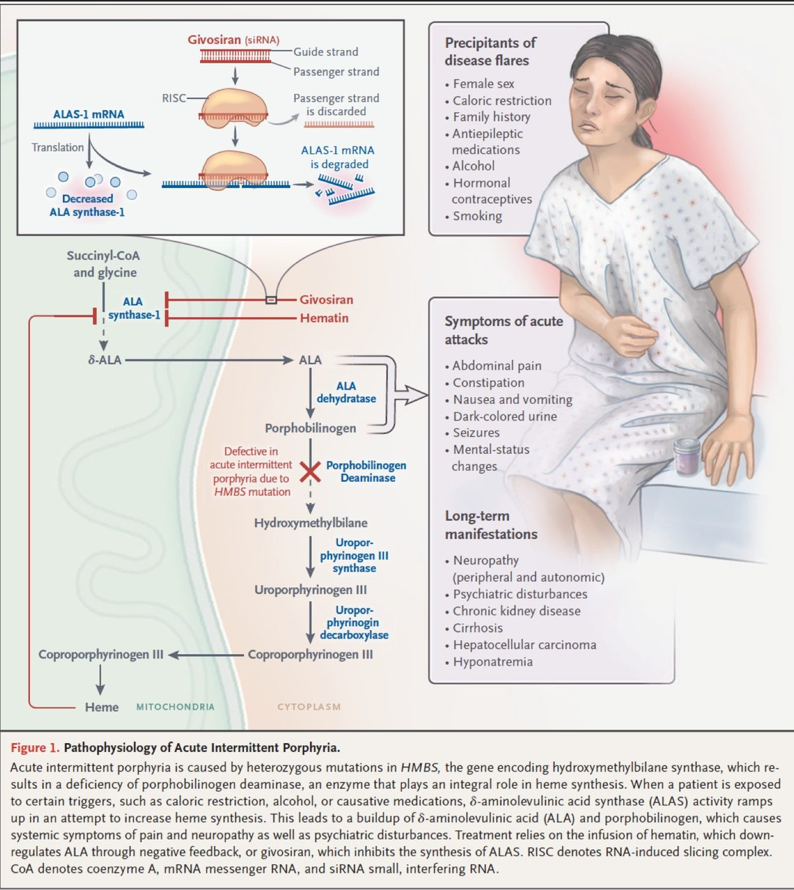
Porphyria cutanea tarda — the blistering one, and the one you will actually see
- PCT is the most common type of porphyria, and the one seen most in practice. (Contrast with AIP, the most common acute porphyria.)
- Photocutaneous subtype. Enzyme defect: uroporphyrinogen decarboxylase (UROD).
- Two forms: familial (autosomal dominant, presenting > 25 years) and sporadic (presenting > 45 years). The sporadic form is much more common.
- Heterozygous hemochromatosis gene mutations are found in two-thirds — PCT is an iron-related disease. Flagged as “a great board question”: one patient carrying two diseases affecting two different systems.
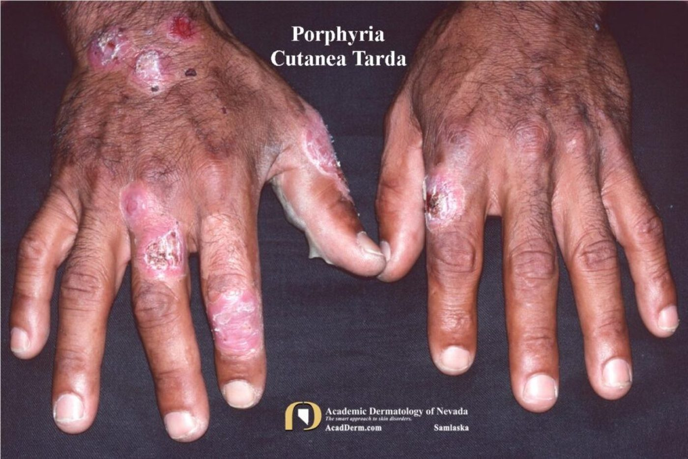
| Feature | Detail |
|---|---|
| Skin | Chronic photocutaneous damage on sun-exposed skin: blisters, bullae, milia (small white bumps), hyper- or hypopigmentation, and hypertrichosis of the cheeks, temples and eyebrows |
| The one word for it | Blistering photosensitivity |
| Associations | Most common porphyria in hepatitis C virus infection, alcohol use and iron overload. Also strongly associated with advanced kidney disease / end-stage renal disease — “we used to see a lot of PCT in our dialysis populations” |
| Urine | Tea-coloured — increased uroporphyrins from the liver spill into the urine. Distinguish from AIP's red-brown / purple urine that darkens on standing |
| Treatment | If secondary to hepatitis C: direct-acting antivirals — roughly 6 weeks, about $42,000, and it cures the hepatitis C. Phlebotomy (for the iron overload). Hydroxychloroquine for skin symptoms. Sunlight avoidance until porphyrins normalize |
The clinical photograph shows the blistering, but not the hypertrichosis, which can be dramatic — “sheets of hair coming out of their cheeks and temples.” A patient's own description: “I'm growing hairs in places that I didn't think God intended hair to grow.” If a stem mentions new facial hair with blistering on the backs of the hands, that is PCT.
Why the first thought is often wrong: lupus is also a photosensitive disease, so it tends to be considered first. Blistering + hypertrichosis + tea-coloured urine is what pulls you across to PCT.
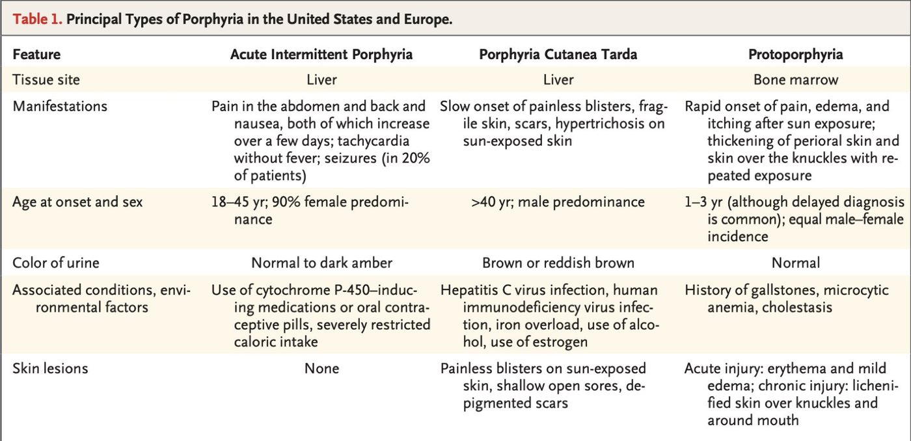
Think ACUTE porphyria when…
- Unexplained attacks of abdominal pain
- Neuropsychiatric changes — a mood disorder PLUS a neuropathy
- Hypertension and tachycardia
- Hyponatremia
- Purple / dark urine during the attack, appearing on exposure to light
- Multiple precipitants in the history
- Send a SPOT URINE during the attack for PBG (and ALA)
Think CUTANEOUS porphyria when…
- Blistering skin lesions on sun-exposed skin
- Hypertrichosis
- Tea-coloured urine
The patient's own version: “I feel like a vampire — I step out in the sun and my hand blisters up.”
Porphyria versus lead poisoning — the discriminator
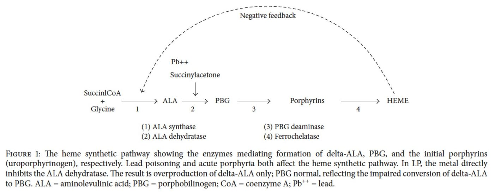
| Feature | Acute porphyria (AIP) | Lead poisoning |
|---|---|---|
| Symptoms and signs | The triad: neurovisceral (abdominal pain), neurologic dysfunction, psychiatric disturbance | Facial pallor (earliest sign), Burton's lines (gingival lead line; also dense lines at the epiphyses of long bones), colic, wrist drop or foot drop, encephalopathy, “saturnine” gout |
| General labs | ↑ serum iron and ferritin in PCT | Microcytic anemia with BASOPHILIC STIPPLING |
| Screening | See urine studies below | Zinc protoporphyrin (ZPP) — reflects the prior 3 months. Serum lead (> 10 µg/dL is unsafe) for inorganic lead |
| Where the block sits | Block at PBG deaminase — one step BELOW PBG, so both ALA and PBG are overproduced | Lead inhibits ALA dehydratase — one step ABOVE PBG, so ALA overproduced with NORMAL PBG |
| URINE ⭐ the answer | ↑ δ-ALA AND ↑ porphobilinogen | ↑ δ-ALA but NORMAL porphobilinogen |
Read the pathway in order: ALA →(ALA dehydratase)→ PBG →(PBG deaminase)→ hydroxymethylbilane → … → heme.
- Lead blocks ALA dehydratase. The block sits before PBG is made, so ALA piles up and PBG is never over-produced — it stays normal. Lead also inhibits ferrochelatase, the final step, which is why zinc protoporphyrin accumulates and can be used as the screen.
- AIP blocks PBG deaminase. The block sits after PBG is made, so both ALA and PBG pile up.
Hence the workflow footnote: “if only ALA is elevated, check blood lead and urine organic acids” — to rule out lead poisoning and hereditary tyrosinemia, where succinylacetone likewise inhibits ALA dehydratase.
Sideroblastic anemia (iron cannot get into protoporphyrin, so it stacks up in the mitochondria → ringed sideroblasts) · lead poisoning (blocks ALA dehydratase and ferrochelatase → ALA up, PBG normal, ZPP up, basophilic stippling) · the porphyrias (a block anywhere else → precursors above it flood out).
ALA up + PBG up → acute porphyria. ALA up + PBG NORMAL → lead. That one line answers most exam questions in this section.
Q: A 27-year-old woman has 3 days of severe diffuse abdominal pain, vomiting, constipation, anxiety and proximal leg weakness. Two similar episodes in the past year, no skin lesions, recently started an estrogen-containing oral contraceptive. BP 162/96, HR 118, sodium 122 mEq/L. Spot urine PBG/creatinine 46× ULN; ALA/creatinine 18× ULN. Fecal coproporphyrin III not increased. Blood lead 2.1 µg/dL. CT shows diffuse bowel dilation without an obstructing lesion; the urine darkens on standing. Diagnosis, and how do you exclude each distractor?
Acute intermittent porphyria. The complete picture: the triad (visceral abdominal pain, neurologic dysfunction as proximal weakness, psychiatric disturbance as anxiety), autonomic instability (hypertension and tachycardia), hyponatremia at 122, urine that darkens on standing, an estrogen-containing OCP as the precipitant, recurrent attacks, and pain out of proportion to imaging. Confirmed by markedly elevated urine PBG together with elevated ALA — and the diagnostic threshold is only 2–4× ULN.
- Lead poisoning — excluded twice over: blood lead 2.1 µg/dL is normal, and mechanistically lead inhibits ALA dehydratase, producing elevated ALA with a NORMAL PBG. Here PBG is 46× normal.
- Hereditary coproporphyria — excluded because fecal coproporphyrin III is not increased, which is its signature.
- Warm autoimmune hemolytic anemia — not a hemolytic presentation at all: no anemia, jaundice, reticulocytosis or positive DAT.
Management: stop the oral contraceptive and every other provoking factor, treat promptly with hemin, give carbohydrate/glucose loading (glucose and insulin suppress PGC-1α and therefore ALAS1), manage the hyponatremia, and refer to a porphyria expert centre with genetic testing to determine the specific acute hepatic porphyria.
Q: A 52-year-old man on hemodialysis with hepatitis C has fragile skin, blisters and shallow erosions on the backs of both hands, milia, patchy hyper- and hypopigmentation, new hair growth over the cheeks and temples, and tea-coloured urine. Diagnosis, what related genetic condition should you look for, and how do you treat him?
Porphyria cutanea tarda — the most common porphyria overall, a photocutaneous subtype caused by deficient uroporphyrinogen decarboxylase (UROD). Every element is a classic association: hepatitis C, end-stage renal disease on dialysis, blistering photosensitivity on sun-exposed skin, milia, hypertrichosis of the cheeks and temples, tea-coloured urine from uroporphyrins spilling out of the liver.
Look for hemochromatosis — heterozygous hemochromatosis gene mutations are present in about two-thirds of PCT patients, because PCT is fundamentally an iron-related disease. Check iron studies.
Treatment: direct-acting antivirals to cure the hepatitis C; phlebotomy to unload iron; hydroxychloroquine for skin symptoms; and sun avoidance until porphyrins normalize.
Q: A child with a microcytic anemia and basophilic stippling has an elevated urine δ-ALA but a normal urine porphobilinogen. Diagnosis, and the biochemical reason for that specific pattern?
Lead poisoning. The pattern is diagnostic because of where in the pathway lead acts: lead directly inhibits ALA dehydratase, the enzyme converting ALA → PBG. The block is upstream of PBG, so ALA accumulates while PBG is never over-produced and stays normal. In AIP the block is one step later, at PBG deaminase, so both ALA and PBG rise.
Lead additionally inhibits ferrochelatase (the last step, inserting iron into protoporphyrin IX), which is why zinc protoporphyrin accumulates and serves as a screening test reflecting the prior 3 months. Confirm with a serum lead level (> 10 µg/dL is unsafe). Look for the clinical signs: facial pallor (earliest), Burton's lines on the gingiva and at the epiphyses of long bones, colic, wrist or foot drop, encephalopathy and saturnine gout.
Q: Why does fasting provoke an acute porphyria attack, and why is glucose the immediate treatment?
Fasting and low carbohydrate intake induce PGC-1α, which upregulates ALAS1 — the first and rate-limiting enzyme of heme synthesis. In a patient with a downstream enzyme deficiency, driving ALAS1 harder simply floods the pathway with the precursors that accumulate above the block (ALA and PBG), and it is those precursors, not a lack of heme, that cause the attack.
Glucose and insulin suppress PGC-1α, therefore suppressing ALAS1 and shutting off precursor overproduction. That is the rationale for carbohydrate loading. Hemin works through the same loop from the other end: it restores the end-product negative feedback that inhibits ALAS1 directly. The same logic explains the other precipitants — cytochrome P450–inducing drugs consume heme (less feedback inhibition), and steroid hormones, alcohol, infection and stress all raise demand on the pathway.
Section 8 · Anemia II · hemolysis
Hemolysis — Intravascular versus Extravascular
One question decides the entire laboratory workup: where was the red cell destroyed? Inside the blood vessel, or outside it. The two produce genuinely different laboratory signatures, and one of them can kill a kidney.
- Shortening of red cell lifespan. The defining event — cells destroyed before their 120 days are up.
- Accumulation of the products of hemoglobin catabolism. Chiefly unconjugated (indirect) bilirubin, because it has not yet reached the liver. This is what makes patients jaundiced.
- Compensatory increase in erythropoiesis. The marrow senses the loss and turns the factory up. This is why the reticulocyte count is HIGH and the marrow hypercellular — the single cleanest split from everything in Sections 3–6.
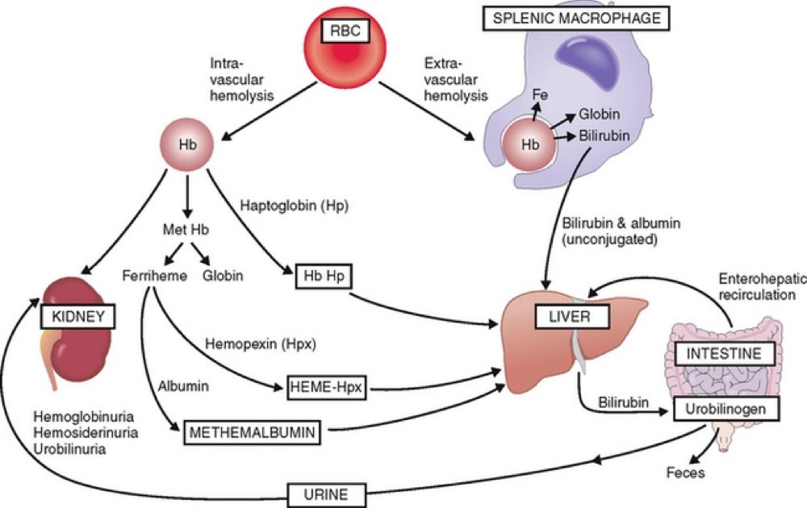
Intravascular — destroyed inside the vessel
The cell ruptures in the circulation, spilling free hemoglobin directly into plasma.
- Schistocytes (sometimes) — fragmented red cells
- Hemoglobinemia — spun plasma looks pink or red instead of yellow
- Hemoglobinuria — dark or tea-coloured urine
- Jaundice from unconjugated hyperbilirubinemia
- Decreased or ABSENT haptoglobin — the most sensitive marker
Extravascular — destroyed outside the vessel
The cell is removed intact by a splenic macrophage, which dismantles the hemoglobin internally. Nothing free is released into plasma.
- Spherocytes — from partial membrane removal
- Haptoglobin decreased, but only mildly
- Jaundice from unconjugated hyperbilirubinemia
- Splenomegaly — the spleen enlarges from the work
- No hemoglobinemia or hemoglobinuria
Haptoglobin is a plasma protein whose only job is to bind free hemoglobin released after intravascular hemolysis. The complex is cleared by the reticuloendothelial system, and because haptoglobin is consumed in the process, the serum level falls.
Free heme in plasma is so dangerous that evolution built a dedicated scavenger for it. A low or absent haptoglobin means the mop has been used. It is a consumption marker, not a production marker — which is why it falls further in intravascular hemolysis, where there is far more free hemoglobin to mop up.
Hemoglobin is essential — inside a red cell. Free in the plasma it is toxic, and specifically toxic to the kidney: filtered free heme causes tubular injury and acute kidney injury. This is the mechanism behind deaths from ABO-incompatible transfusion in Section 14. Extravascular hemolysis is bad; intravascular hemolysis is worse.
The intravascular triad, callable at the bench. Spin a tube: yellow plasma normal, pink plasma = free hemoglobin. Look at the urine: dark or tea-coloured = hemoglobinuria. Check the haptoglobin: it will be absent, not merely low. Extravascular hemolysis gives you none of those three — it gives you spherocytes and a big spleen instead.
| Marker | Intravascular | Extravascular | Why |
|---|---|---|---|
| Plasma appearance | Pink / red | Yellow (normal) | Free hemoglobin only reaches plasma when the cell bursts in the vessel |
| Haptoglobin | Very low or absent | Mildly decreased | Consumed clearing free hemoglobin |
| Hemoglobinuria | Present | Absent | Only free plasma hemoglobin is filtered |
| Characteristic cell | Schistocytes (fragments) | Spherocytes (balls) | Shearing versus partial membrane removal |
| Unconjugated bilirubin | Raised | Raised | Heme is broken down either way |
| Lactate dehydrogenase | Raised | Raised | Released from destroyed cells |
| Reticulocyte count | Raised | Raised | Marrow compensating — the split from impaired production |
| Spleen size | Usually normal | Enlarged | The spleen is doing the destroying |
| Kidney risk | High — free heme is nephrotoxic | Low | The reason intravascular is worse |
The spleen is the cleaner. It patrols for red cells that are the wrong shape, the wrong stiffness, or coated in something they should not be, and it removes them. It is doing its job correctly in every disease below — the problem is that the body keeps producing defective cells for it to find.
- Spherocytosis — the cell is a ball instead of a disc → removed.
- G6PD deficiency — oxidized hemoglobin precipitates as a Heinz body → the spleen bites the inclusion out.
- Thalassemia — unpaired globin chains precipitate → removed.
- Sickle cell disease — the cell is rigid and misshapen → removed, until the spleen itself infarcts.
Three consequences follow everywhere: splenomegaly, jaundice, and pigmented gallstones from the chronic bilirubin load.
Q: A patient's spun plasma is pink, the urine dipstick is positive for blood but microscopy shows no red cells, and haptoglobin is undetectable. What kind of hemolysis is this, and what organ is at immediate risk?
Intravascular hemolysis. Pink plasma is hemoglobinemia; a dipstick positive for blood with no red cells on microscopy is hemoglobinuria — the dipstick detects heme, not intact cells. Undetectable haptoglobin means the scavenger has been completely consumed. The organ at immediate risk is the kidney: filtered free heme causes tubular injury and acute kidney injury.
Q: Why is the reticulocyte count HIGH in hemolytic anemia but LOW in iron deficiency, B12 deficiency and anemia of chronic disease?
Because the marrow is intact in hemolysis. Cells are destroyed peripherally, the marrow detects the loss and works harder, so it releases more immature cells. In the impaired-production anemias the marrow itself is the problem — missing raw material, or suppressed by inflammation — so it cannot respond and the reticulocyte count stays low. One cheap test splits the classification tree in half.
Section 9 · Anemia II · intrinsic defects, part 1
Hereditary Spherocytosis and G6PD Deficiency
The first two inherited red cell defects. One breaks the container; the other breaks the defences.
Hereditary spherocytosis — a broken cytoskeleton
- Autosomal dominant.
- An intrinsic defect in the red cell membrane that renders erythrocytes spheroidal rather than biconcave.
- The proteins are cytoskeletal: ankyrin, band 3, β-spectrin, α-spectrin or protein 4.2.
- Genes on testing: ANK1, SPTB, SLC4A1.
- Almost always diagnosed in childhood; these patients keep a hematologist for life.
The biconcave disc is held by an internal protein lattice clipped to the inner membrane. When one of those proteins is defective the lattice cannot maintain the shape and the cell rounds up into a sphere — it stops being a doughnut and becomes a baseball.
The consequence is mechanical. A sphere has the smallest possible surface area for its volume, so it is far less deformable. A normal red cell folds through capillaries and through the narrow slits of the splenic cords; a spherocyte cannot. It gets stuck, the spleen identifies it as abnormal, and removes it. This is extravascular hemolysis by definition.
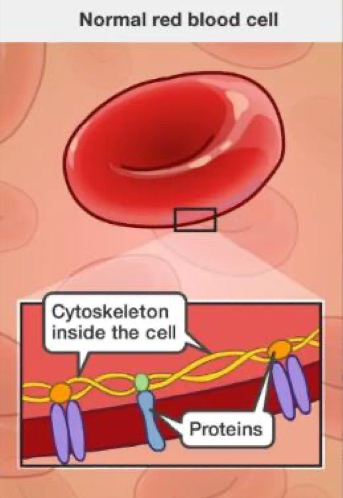
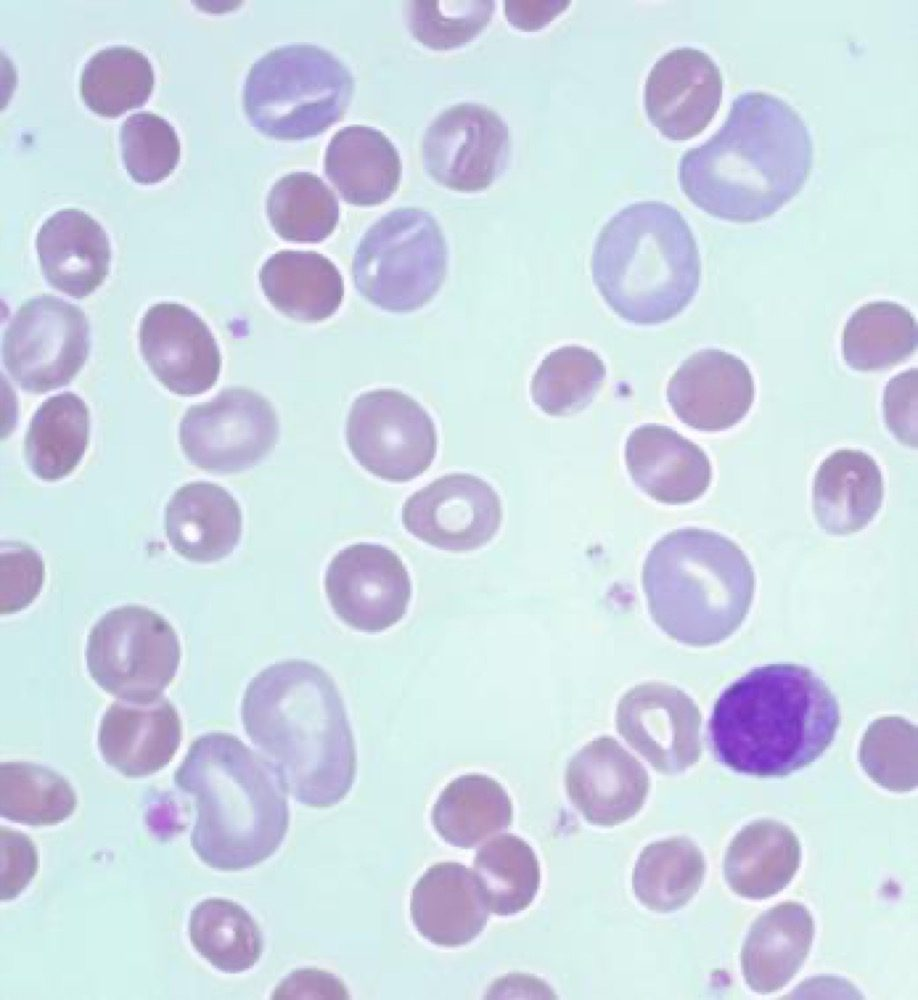
The chronic extravascular quartet — the signature of any long-standing extravascular hemolysis, not just spherocytosis. A young patient with lifelong intermittent jaundice, an enlarged spleen and pigmented gallstones at an unusually young age is being shown chronic hemolysis and asked to name the mechanism. A teenager with pigmented gallstones almost never has ordinary gallbladder disease.
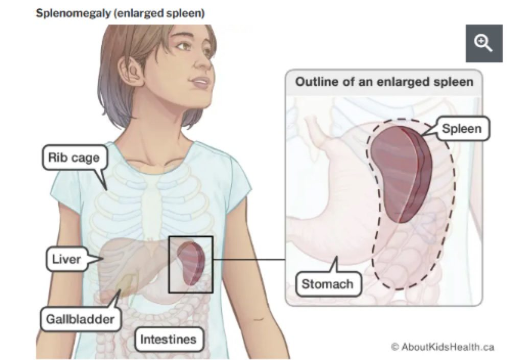
The two crises
Hemolytic crisis
Often elicited by infection — destruction accelerates past what the marrow can match.
- Significant hemolysis
- Fever
- Abdominal pain
- Worsening jaundice
- Shock in the worst events
Reticulocytes HIGH — the marrow is driven harder.
Aplastic crisis
Suppression of red cell production, usually triggered by parvovirus B19, which infects erythroid precursors and shuts erythropoiesis down.
A healthy person tolerates a brief pause in red cell production. Someone whose survival depends on a marrow running at maximum does not — the foundation is cut out from under the compensatory drive.
Reticulocytes LOW — the discriminating value.
In hereditary spherocytosis, and again in sickle cell disease. Same mechanism each time: it infects red cell precursors and stops erythropoiesis. A sudden crash in hemoglobin with a LOW reticulocyte count in a chronic hemolytic patient is an aplastic crisis until proven otherwise.
Laboratory diagnosis of hereditary spherocytosis
| Test or finding | Result |
|---|---|
| Blood smear | Spherocytes — round, dense, no central pallor |
| Osmotic fragility test | Increased |
| Mean corpuscular hemoglobin concentration | High — the cell is smaller for its hemoglobin content |
| Reticulocytes | Increased |
| Spleen | Enlarged; pigmented gallstones may be present |
| Genetic test | Mutation in ANK1, SPTB or SLC4A1 |
| Direct Coombs test | NEGATIVE — this is the test that excludes autoimmune hemolysis, which also produces spherocytes |
Red cells are exposed to hypotonic saline; water enters and the cell swells. A normal biconcave disc has spare membrane relative to its volume and can swell substantially into a sphere before bursting. A spherocyte is already a sphere — it has no spare surface area at all, so a small amount of swelling ruptures it. Result: increased osmotic fragility.
Spherocytes appear in two quite different diseases: hereditary spherocytosis and warm autoimmune hemolytic anemia, where antibody-coated cells have membrane bitten away by splenic macrophages. The direct Coombs test separates them — negative in hereditary spherocytosis, positive in autoimmune hemolysis. (The indirect Coombs test, its photo negative, is the antibody screen of Section 13.)
G6PD deficiency — when the antioxidant defence runs out
The enzyme is synthesized in normal amounts. But the genetic variant makes it unstable, with a short half-life, so activity decays as the cell ages. The consequence: marked deficiency in OLDER red cells while younger cells are still protected.
That one fact explains the entire behaviour of the disease — why hemolysis is episodic, why it is self-limited, and why the diagnostic test can be falsely normal. Inheritance is X-linked, so it is expressed most fully in males.
- G6PD makes NADPH. In a red cell, this is the only meaningful source of NADPH.
- NADPH regenerates glutathione — it powers glutathione reductase, converting oxidized glutathione back to the reduced form.
- Reduced glutathione neutralizes peroxide — converting hydrogen peroxide to water. The actual detoxifying step.
- Without the chain, peroxide accumulates and oxidizes hemoglobin, which denatures and precipitates inside the cell as a Heinz body.
Every other cell has alternative routes to NADPH and can make replacement protein when an enzyme wears out. A red cell can do neither — it ejected its nucleus and mitochondria on the way out of the marrow. G6PD is the whole plan. No backup and no way to build more, which is why the enzyme's instability over the cell's lifetime is the disease.
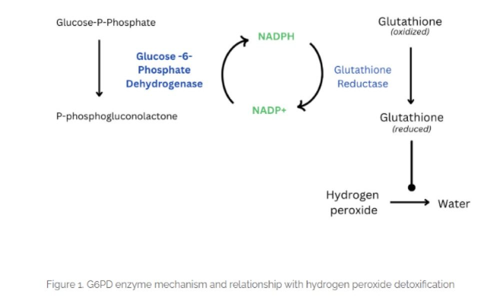
What the spleen does about it
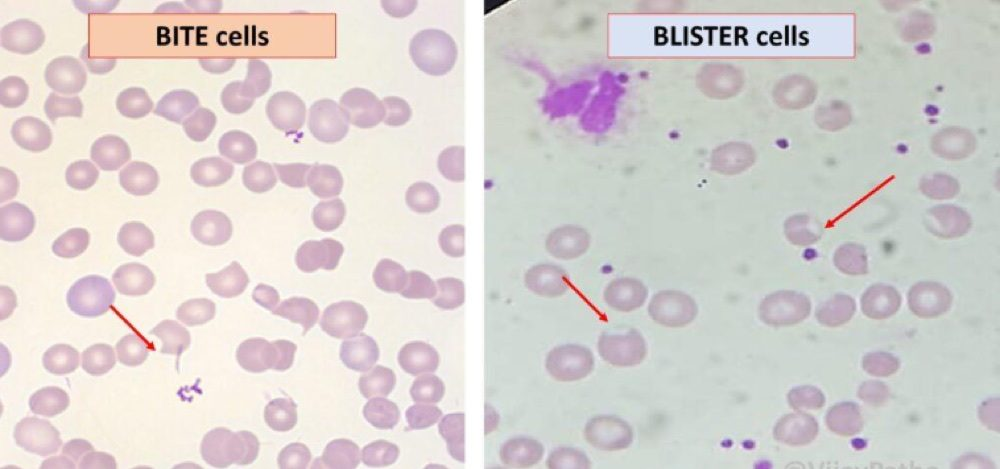
- Hemoglobin is oxidized and precipitates as an inclusion — a Heinz body — stuck to the inner membrane. Heinz bodies need a supravital stain (crystal violet); they do not show on a routine smear.
- The spleen finds it. A splenic macrophage detects the abnormal inclusion and takes a bite out of it.
- Bite cells and blister cells result. The macrophage removes the inclusion plus the overlying membrane, leaving a bite cell — a semicircular chunk missing. A blister cell is the same event with the membrane still stretched over the defect.
- Less damaged cells become spherocytes — which is why spherocytes are not unique to hereditary spherocytosis.
| Variant | WHO class | Enzyme half-life | Population | Clinical picture |
|---|---|---|---|---|
| G6PD A− | III (moderate, 10–60% activity) | ~13 days vs a normal 62 | ~10% of Black males in the United States | Only older cells are vulnerable — hemolysis is mild and self-limited |
| G6PD Mediterranean | II (severe, <10% activity) | Measured in hours | Middle East, Mediterranean, Asia | The entire red cell population is susceptible — hemolysis can be severe and sustained |
Classes I (severe, chronic hemolysis), IV and V (no hemolysis) exist but are uncommon and rarely tested.
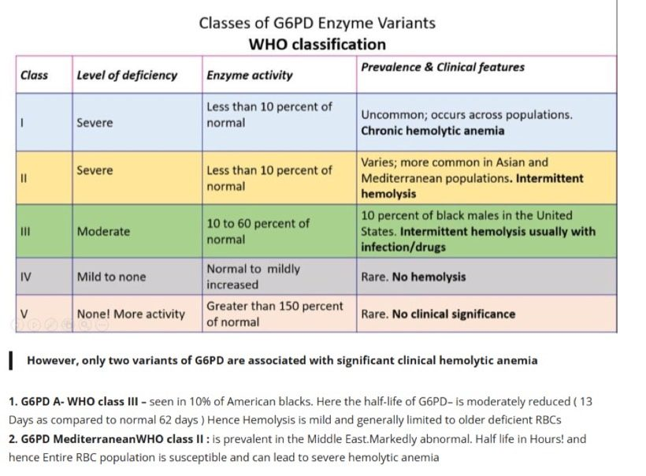
What triggers a crisis ★ HY
Infections
Viral hepatitis, pneumonia, typhoid fever. In practice this is the commonest trigger of all — and it is why a hemolytic episode is so often mistaken for the infection worsening.
Drugs
Antimalarials — primaquine and chloroquine; sulfonamides; nitrofurantoin. Also dapsone. Note the irony: the drugs used against the disease G6PD deficiency evolved to resist.
Fava beans
They generate oxidants when metabolized — favism. Fava beans are endemic in the Mediterranean, the Middle East and parts of Africa, exactly where the deficiency is common.
G6PD deficiency is the world's most common enzyme deficiency, affecting over 400 million people, concentrated in the tropical and subtropical Eastern Hemisphere. The distribution tracks populations historically exposed to endemic malaria — the deficiency provides a protective advantage against severe Plasmodium falciparum, though it is not fully protective.
The same bargain recurs with sickle cell trait in Section 10: a mutation advantageous in the heterozygous state under malaria pressure becomes a disease when you inherit too much of it. Note the caution — the geography reflects where genes are common, not a reason to reason about individual patients by ancestry.
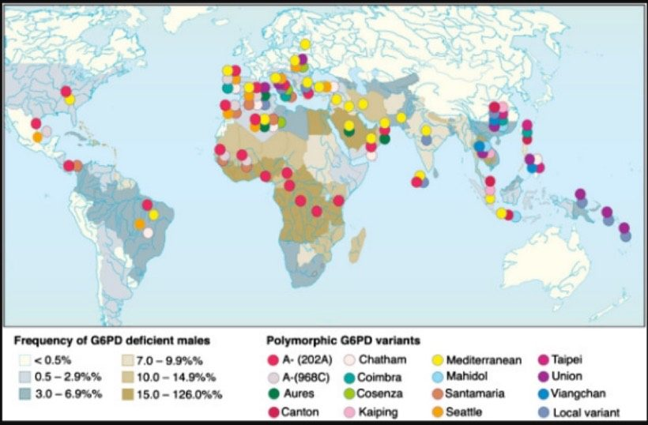
This follows directly from the mechanism. During hemolysis the oldest, most enzyme-depleted cells are exactly the ones being destroyed, and the marrow floods the blood with reticulocytes, which have the highest enzyme levels of any red cell. Measure the average at that moment and it can look normal.
Repeat the assay two to three months after the episode, once the age distribution has returned to baseline. A genetic test is unaffected by timing.
Q: A 9-year-old with known hereditary spherocytosis presents pale and lethargic five days into a viral illness. Hemoglobin has fallen from her baseline 10.5 to 4.2 g/dL. Reticulocyte count 0.2%. What has happened?
An aplastic crisis, almost certainly from parvovirus B19. The discriminating value is the low reticulocyte count — in a hemolytic crisis the marrow would be driven harder and reticulocytes would be high; here erythropoiesis has been shut off at the precursor level. Because her survival depends on a permanently maximal marrow, losing that compensation for a few days causes a precipitous drop. Management is transfusion and supportive care until marrow function recovers.
Q: A 6-year-old boy of Greek ancestry develops jaundice, dark urine and pallor two days after eating fava beans. Hemoglobin 6.8 g/dL. A G6PD assay sent during the admission returns normal. Diagnosis, and why was the test normal?
G6PD deficiency — almost certainly the Mediterranean variant (WHO class II), given his ancestry and the severity. The assay was falsely normal because it was drawn during the crisis: the old, enzyme-depleted cells had already been destroyed, and the compensatory reticulocytosis flooded the sample with young cells carrying the highest enzyme levels. Repeat it two to three months later, or send a genetic test. The smear during the episode would show bite cells and blister cells.
Q (case): A 13-year-old girl has six months of weakness and jaundice, lifelong episodic jaundice, and a father who was jaundiced as a teenager. Spleen 6 cm below the costal margin. Hemoglobin 9, reticulocytes 11.45%, MCHC 40%, spherocytes on smear, osmotic fragility markedly increased, Coombs negative, indirect bilirubin 3.4. Diagnosis, the value that excludes the alternative, and management?
Hereditary spherocytosis. The picture is chronic extravascular hemolysis: spherocytes, unconjugated hyperbilirubinemia, splenomegaly, high reticulocytes and marrow erythroid hyperplasia. The autosomal dominant inheritance shows in the father's adolescent jaundice. Increased osmotic fragility confirms it, and the high MCHC fits.
The value that excludes the alternative is the NEGATIVE Coombs test — warm autoimmune hemolytic anemia also produces spherocytes, jaundice and splenomegaly, but its cells are antibody-coated and the Coombs would be positive.
Management: folic acid to support the high-turnover marrow, and splenectomy — removing the site of destruction normalizes red cell lifespan and removes the rupture risk of a spleen that size. Vaccinate against the encapsulated organisms first (Section 11).
Section 10 · Anemia II · intrinsic defects, part 2
Thalassemia and Sickle Cell Disease — the Globin Disorders
Thalassemia is a quantity problem: structurally normal globin, not enough of one kind. Sickle cell disease is a quality problem: the right amount of beta globin, and one amino acid in it is wrong.
Count the genes — the whole thalassemia framework ★ HY
- Adult hemoglobin (HbA) is α₂β₂ — two alpha chains, two beta chains.
- You have FOUR alpha globin genes (two on each copy of chromosome 16).
- You have TWO beta globin genes (one on each copy of chromosome 11).
Which is easier to be severely affected by? You only have two betas — lose one and you are in trouble. You have four alphas — losing one barely registers. That single asymmetry is why alpha thalassemia has four clinical grades and beta thalassemia essentially two.
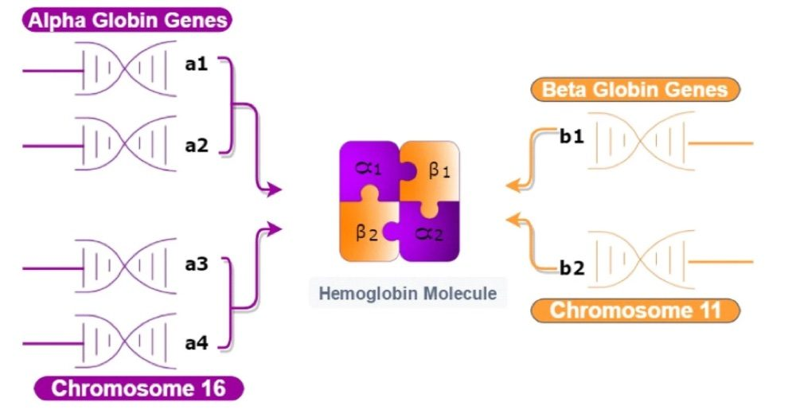
A fetus gets its oxygen from its mother across the placenta, and the mother has ordinary adult hemoglobin. For the fetus to pull oxygen off maternal hemoglobin, fetal hemoglobin must have a higher affinity for oxygen than adult hemoglobin.
- Prenatal: gamma (γ) chains pair with alpha to make HbF = α₂γ₂ — F for fetus.
- After birth: the globin switch — gamma production falls off and beta takes over, giving HbA = α₂β₂.
This matters three separate times: it explains why beta thalassemia major does not present at birth, it explains the two abnormal tetramers below, and it explains why hydroxyurea works in sickle cell disease by turning HbF back on.
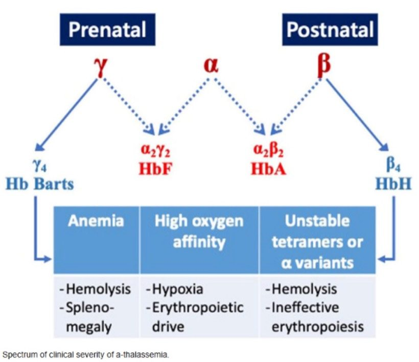
| Tetramer | Composition | When it forms | Consequence |
|---|---|---|---|
| HbA | α₂β₂ | Normal adult | Normal oxygen delivery |
| HbF | α₂γ₂ | Normal fetus | High oxygen affinity — correct for pulling oxygen across the placenta |
| HbH | β₄ — four betas, no alpha partner | Alpha thalassemia with only one working alpha gene | Unstable; oxidized and precipitates as inclusions, removed by the spleen |
| Hb Barts | γ₄ — four gammas, no alpha partner | Alpha thalassemia with no working alpha genes, in a fetus | Extremely high oxygen affinity — it binds oxygen and will not let go, so it cannot deliver oxygen to tissue |
The mechanism of damage
- Not enough hemoglobin → hypochromia. Reduced globin synthesis means low intracellular hemoglobin, showing as hypochromia and microcytosis — the same appearance as iron deficiency, from a completely different cause.
- Relative excess of the unpartnered chain → destruction. If beta chains are deficient you have a relative excess of normal alpha chains with nothing to pair with. They aggregate into insoluble complexes inside the cell and its precursors.
- Precursors die in the marrow. Those aggregates destroy developing cells before release — ineffective hematopoiesis. This is why the marrow is hypercellular while the patient is profoundly anemic.
- Mature cells are destroyed in the spleen. The ones that make it out carry inclusions the spleen finds and removes — hemolysis. Hence the classification under increased destruction.
The intuitive assumption is that thalassemia hurts because you make too little hemoglobin. That is only the milder half. The severity tracks the chain you have too MUCH of. Unpartnered globin chains precipitate, damage membranes and kill cells in the marrow and the spleen.
This is also why beta thalassemia is worse than alpha thalassemia of comparable gene loss: free alpha chains are far more unstable and damaging than free beta chains, which can at least assemble into HbH.
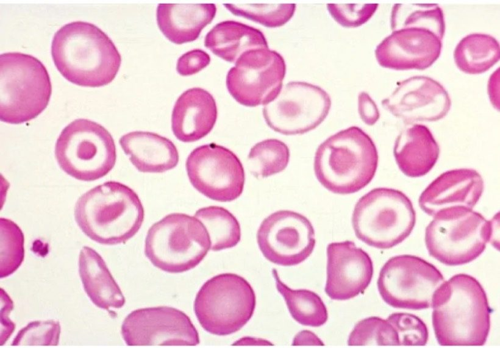
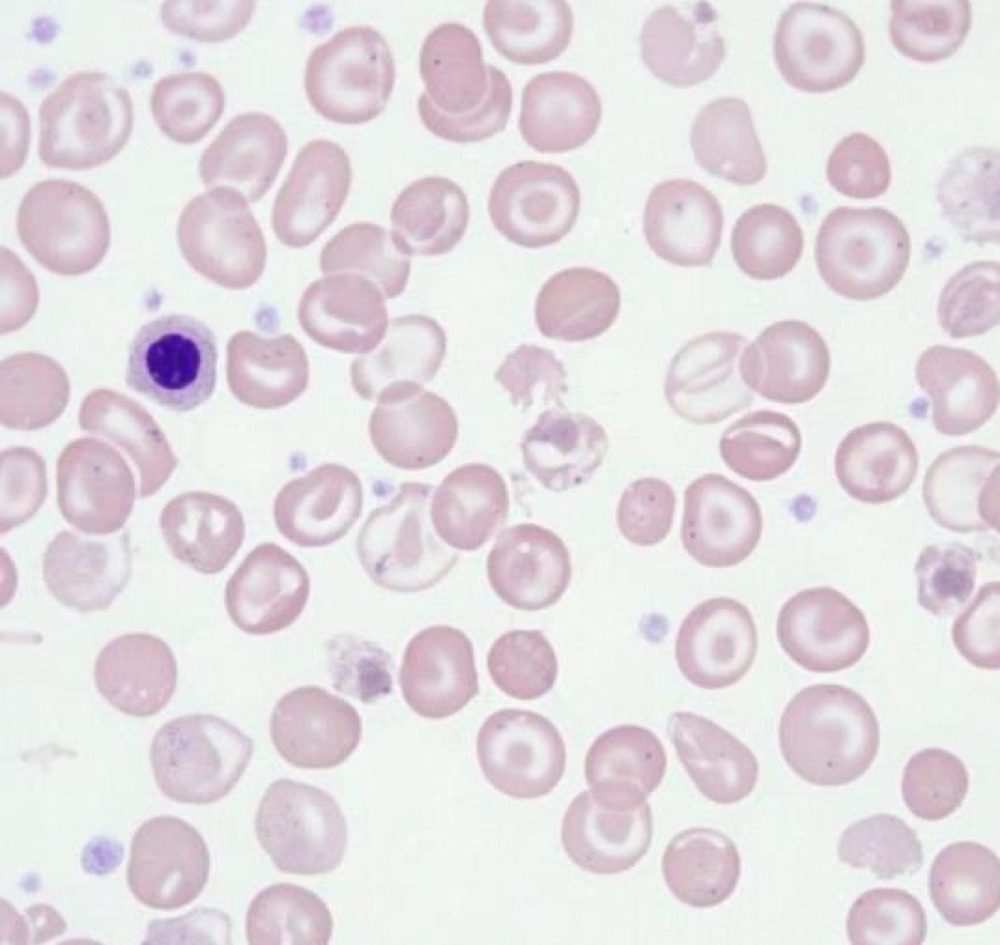
Alpha thalassemia — four grades
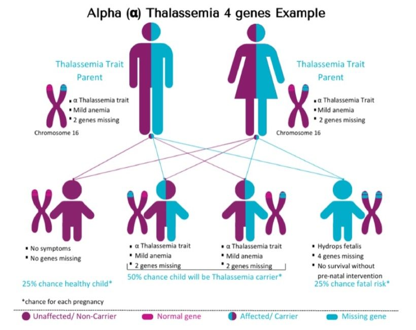
| Diagnosis | Alpha genes present | Clinical picture |
|---|---|---|
| Silent carrier | 3 of 4 | Completely asymptomatic, no anemia. More than one person in any lecture hall has this and will never know. |
| Alpha thalassemia trait | 2 of 4 | Minimal anemia, no abnormal physical signs. Microcytic with normal iron studies — the reason to check iron studies before treating a microcytic anemia with iron. |
| Hemoglobin H disease | 1 of 4 | Excess beta chains form HbH (β₄), visible as inclusions; cannot withstand oxidative stress, precipitates, removed by the spleen — moderately severe anemia. |
| Hydrops fetalis | 0 of 4 | Excess gamma chains form Hb Barts (γ₄), which cannot deliver oxygen. Severe anoxia and intrauterine fetal death without prenatal intervention. |
The middle two. Silent carriers are never identified, and hydrops fetalis does not survive to become a patient without in-utero intervention. So the clinically relevant alpha thalassemias are alpha thalassemia trait — which matters mainly because it is mistaken for iron deficiency — and hemoglobin H disease.
Beta thalassemia — two mutation types, two clinical grades
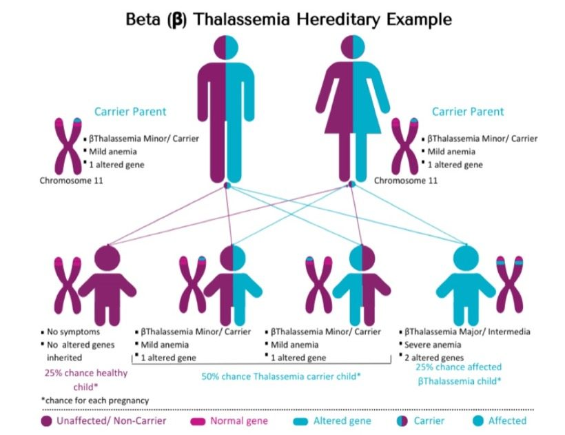
β⁰ thalassemia
Complete absence of beta globin chain production from that gene.
β⁺ thalassemia
Reduced but not absent production. Some output survives.
| Diagnosis | Genotype | Clinical |
|---|---|---|
| Thalassemia minor (trait) | Heterozygous — one normal beta gene | Mild anemia. Often mistaken for iron deficiency; iron studies are normal |
| Thalassemia major | Homozygous β⁰ or β⁺ | Severe, transfusion-dependent anemia. Presents in infancy once the globin switch removes HbF |
A fetus and newborn run on HbF (α₂γ₂), which does not require beta chains at all. So a baby with beta thalassemia major is born completely well. Only as gamma production falls off and beta is supposed to take over — around 3 to 6 months — does the anemia appear.
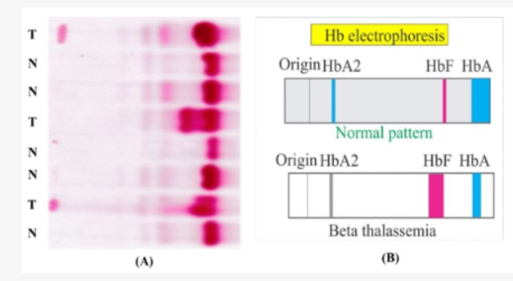
Transfused blood carries iron, and the human body has no physiologic mechanism to excrete iron. A patient transfused every two to four weeks for life accumulates it relentlessly, damaging heart, liver and endocrine organs. So they must take iron chelation therapy — pills which treat you for the treatment. Chelator pharmacology is in Section 17.
Note the irony that closes the loop with Section 4: this is the one anemia where you must remove iron rather than give it.
Sickle cell disease — one amino acid ★ HY
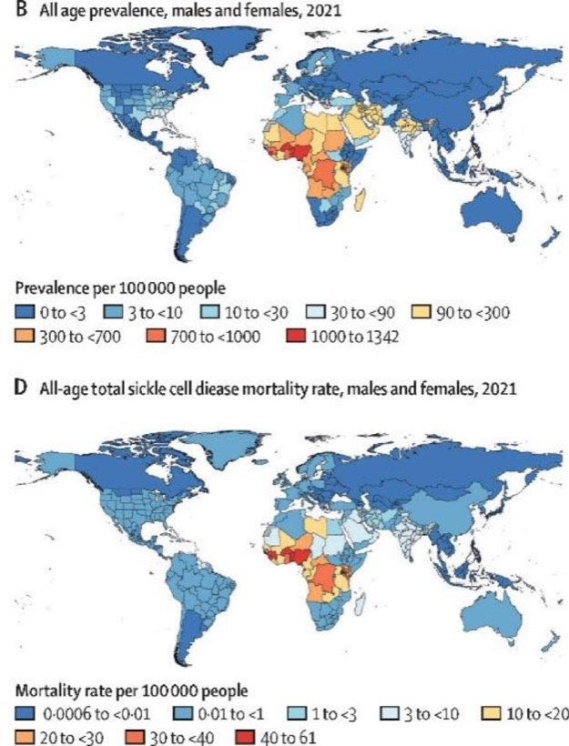
- A point mutation in the beta globin chain: a single adenine-to-thymine substitution changing the 6th codon of the mature protein.
- The result is valine substituted for glutamic acid at that position.
- The product is hemoglobin S (HbS), with abnormal physicochemical properties.
- The gene is HBB — the same gene as beta thalassemia, a different kind of mutation.
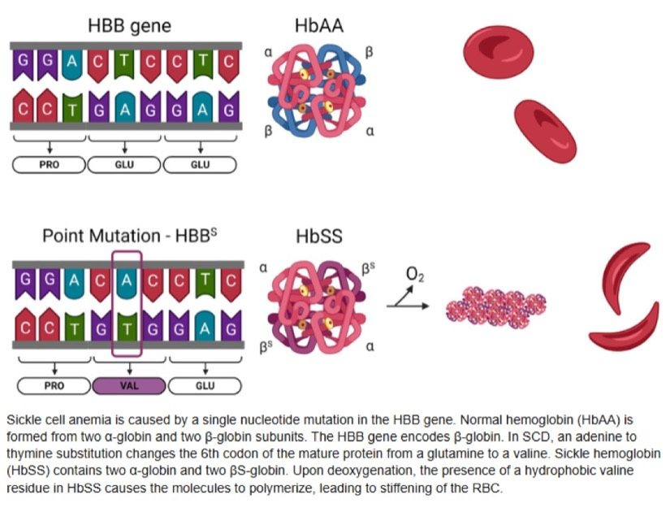
Glutamic acid is charged and water-loving; valine is hydrophobic. Putting a hydrophobic patch on the outside of a hemoglobin molecule gives it a sticky spot, and hydrophobic patches find each other.
- Oxygenated, nothing happens. With oxygen bound, the conformation keeps the sticky patch tucked away.
- Deoxygenated, it polymerizes. On releasing oxygen the conformation shifts, the valine is exposed, and HbS molecules polymerize into long rigid fibers.
- The fibers deform the cell into the sickle shape and, critically, make it inflexible.
- Inflexible cells get stuck in the microvasculature → ischemia, tissue damage and pain.
| Diagnosis | Genotype | Hemoglobin composition |
|---|---|---|
| Sickle cell trait | Heterozygous | 40–45% HbS, the remainder HbA |
| Sickle cell disease | Homozygous | 90–100% HbS, with NO HbA present |
Pathophysiology — one polymerization, three arms
Vaso-occlusion
Sickled cells lodge in the microcirculation → hypoxia, infarction and necrosis of vital organs plus severe pain. Produces acute pain, hyposplenism, osteonecrosis, nephropathy and acute chest syndrome.
Vasculopathy and endothelial dysfunction
The disturbed vessel becomes inflamed and the blood becomes hypercoagulable — little clogs, inflammation, and a clotting system that no longer knows what it is doing.
Hemolysis
Cells are torn apart under arterial pressure. Free hemoglobin inactivates nitric oxide and increases reactive oxygen species → pulmonary hypertension, leg ulcers, cerebrovascular disease. Raised bilirubin → gallstones and jaundice.
The three crises ★ HY
Vaso-occlusive (painful) crisis
Repeated hypoxic injury and infarction, often with infection, dehydration or acidosis. Extreme pain in the abdomen, joints or chest. In infants and toddlers it presents as dactylitis — painful swelling of hands and feet.
Hemoglobin often near baseline.
Aplastic crisis
Parvovirus B19 infecting erythroid precursors → cessation of erythropoiesis. Same mechanism as in hereditary spherocytosis.
Reticulocytes LOW.
Sequestration crisis
Massive sequestration of deformed red cells in the spleen of children with splenomegaly. The spleen abruptly swallows a large fraction of the circulating volume → rapid fall in hemoglobin and hypovolemic shock.
Reticulocytes HIGH, spleen suddenly ENORMOUS.
All three look similar at the bedside — a sickle cell patient suddenly much sicker and much more anemic. The reticulocyte count separates them fastest. Aplastic → LOW (production stopped, think parvovirus). Sequestration → HIGH plus a huge spleen (the cells are alive, just not in the circulation). Vaso-occlusive → hemoglobin near baseline; the problem is pain and ischemia, not red cell mass.
Three variables control how much sickling happens
- The amount of HbS, and what it can partner with. HbS polymerizes well with itself and poorly with HbF and HbA. This is the single most important therapeutic lever — dilute the HbS with anything else and polymerization falls off sharply.
- Hemoglobin concentration. The higher the intracellular HbS concentration, the more likely polymerization. Dehydration concentrates the cell and makes sickling worse.
- pH — acidosis. Acidosis reduces hemoglobin's oxygen affinity (the Bohr effect), enhancing deoxygenation — and deoxygenated HbS is the form that polymerizes. Acidosis increases sickling.
Nearly all of them attack the same variable — the proportion and concentration of HbS:
- Hydroxyurea raises HbF, and HbS polymerizes poorly with HbF. You are diluting the polymer.
- Transfusion adds HbA — the same idea from the other direction.
- Intravenous fluids lower hemoglobin concentration inside the cell.
- Oxygen keeps hemoglobin in the oxygenated conformation, which does not polymerize.
- Gene therapy either switches HbF back on (Casgevy) or inserts a working beta gene (Lyfgenia).
The number that anchors it: randomized trial evidence shows that keeping HbS below 30% significantly decreases the risk of stroke.
If a patient's HbS is 80% and you want it under 30%, you cannot simply transfuse more blood — you would need an impossible volume and would make them dangerously polycythemic. So you perform an exchange transfusion: remove some of the patient's blood while giving donor blood, which nets a lower HbS percentage without raising total blood volume. Effective, and a lifelong commitment.
Management approaches — prevention and complications ★ HY
| Intervention | Role | What to know |
|---|---|---|
| Hydroxyurea | Disease-modifying mainstay | Raises HbF. Indicated for frequent painful episodes, severe symptomatic anemia, acute chest syndrome or other severe vaso-occlusive complications. Start 15 mg/kg once daily. Two boxed warnings: myelosuppression and secondary malignancy — it is a chemotherapy agent |
| Penicillin prophylaxis | Prevention, in children | Daily. A major advance — children with functional asplenia are highly vulnerable to encapsulated organisms, and infection frequently precipitates a crisis |
| Vaccination | Prevention | Pneumococcal, meningococcal and Haemophilus influenzae type b. Also hepatitis A and B, because of the transfusion exposure |
| Folic acid | Supportive, daily | High red cell turnover consumes folate continuously |
| Chronic transfusion | Primary and secondary stroke prevention | Goal HbS < 30%, usually every 3–4 weeks. Risks: alloimmunization, hyperviscosity, iron overload, viral transmission, transfusion reactions |
| Pain control | Acute and chronic | These patients suffer chronic pain, not only crisis pain. Undertreatment is a well-documented failure of care in this population |
| Oxygen and intravenous fluids | Acute supportive | Keep hemoglobin oxygenated; dilution reduces sickling |
| Splenectomy | Selected patients | For recurrent sequestration or massive splenomegaly |
| Gene therapy / transplant | Curative intent | Casgevy (CRISPR/Cas9 switches off BCL11A, restoring HbF) and Lyfgenia (lentiviral vector inserts a working beta globin gene); plus hematopoietic stem cell transplant. Both approved at age ≥ 12 with recurrent vaso-occlusive crises, and both still require chemotherapy conditioning |
Repeated splenic infarction produces functional asplenia (autosplenectomy) within the first few years of life, leaving the child unable to clear encapsulated organisms — Streptococcus pneumoniae above all — and vulnerable to fulminant sepsis within hours. Empiric antibiotics (ceftriaxone) without waiting for cultures. See Section 11.
Laboratory diagnosis — reading the electrophoresis ★ HY
- Normal adult — one strong HbA band.
- Normal newborn — a prominent HbF band, because the globin switch has not finished.
- Sickle cell disease — a big HbS band and NO HbA at all. That absence is the diagnosis.
- Sickle cell trait — both HbA and HbS present. You can see heterozygosity directly.
- Beta thalassemia — an enlarged HbF band (beta chains are deficient, so fetal hemoglobin continues past infancy) with raised HbA₂ (α₂δ₂).
- Alpha thalassemia, newborn screen — elevated Hb Barts.
| Cell you see | What it means | Found in |
|---|---|---|
| Spherocyte — a ball, no central pallor | Membrane lost or structurally defective | Hereditary spherocytosis; autoimmune hemolytic anemia; G6PD after a bite |
| Bite / blister cell — a semicircular chunk missing | A splenic macrophage removed a Heinz body plus overlying membrane | G6PD deficiency |
| Heinz body — an inclusion (supravital stain) | Precipitated, oxidized hemoglobin | G6PD deficiency; also thalassemia (precipitated excess chains) |
| Target cell (codocyte) — a bull's-eye | Too much membrane for too little hemoglobin — increased surface-area-to-volume ratio | Thalassemia; sickle cell disease; liver disease; iron deficiency |
| Sickle cell — a rigid crescent | Polymerized HbS | Sickle cell disease |
| Schistocyte — an angular fragment | Mechanical shearing | Microangiopathic hemolytic anemia; mechanical valves; also sickle cell disease |
| Howell-Jolly body — a dense round nuclear remnant | The spleen is absent or not working | Sickle cell disease (autosplenectomy); post-splenectomy |
| Anisopoikilocytosis | Variation in size (aniso-) and shape (poikilo-) | Thalassemia; most severe anemias |
Ball → the membrane failed → spherocytosis. Bite → an oxidant inclusion was removed → G6PD. Bull's-eye → not enough hemoglobin for the membrane → thalassemia. Crescent → HbS polymerized → sickle cell. Fragment → it was physically shredded → microangiopathic.
The full comparison — all four inherited defects ★ HY
| Hereditary spherocytosis | G6PD deficiency | Thalassemia | Sickle cell disease | |
|---|---|---|---|---|
| Defect | Membrane cytoskeleton | Red cell enzyme | Quantity of globin chains | Structure of the beta chain |
| Inheritance | Autosomal dominant | X-linked | Autosomal recessive, gene-dose dependent | Autosomal recessive |
| Genes | ANK1, SPTB, SLC4A1 | G6PD | HBA1 (α), HBB (β) | HBB |
| Hemolysis type | Extravascular (splenic) | Mostly intravascular during a crisis, with an extravascular component | Extravascular plus ineffective erythropoiesis | Both |
| MCV | Normal | Normal between crises | Low (microcytic) | Normal or slightly raised |
| MCHC | High | Normal | Low | Normal |
| Smear | Spherocytes | Bite cells, blister cells, Heinz bodies | Target cells, hypochromia, anisopoikilocytosis | Sickle cells, target cells, Howell-Jolly bodies |
| Diagnostic test | Osmotic fragility increased; Coombs negative | G6PD enzyme assay decreased | Electrophoresis / HPLC | Electrophoresis: HbS present, HbA absent; solubility test positive |
| Timing of illness | Chronic, with crises | Episodic, triggered by oxidant stress | Chronic from infancy | Chronic with acute crises |
| Spleen | Enlarged | Usually normal | Enlarged | Enlarged early, then autoinfarcts |
| Key treatment | Folic acid, transfusion, splenectomy | Avoid oxidants; supportive care | Transfusion + iron chelation; gene therapy / transplant | Hydroxyurea, penicillin, transfusion; gene therapy / transplant |
The commonest real-world error in this whole block. All three give a low MCV:
- Iron deficiency — ferritin LOW, TIBC HIGH. Give iron.
- Anemia of chronic disease — ferritin HIGH, TIBC LOW. Treat the underlying disease.
- Thalassemia trait — ALL iron studies normal, MCV disproportionately low for the mild anemia, red cell count HIGH. Give nothing — and specifically do not give iron.
Give iron to a thalassemic patient and you produce the exact complication you spend the rest of their care chelating out.
Q: A 2-year-old has a microcytic anemia with an MCV of 65 fL. Ferritin 180 ng/mL, transferrin saturation normal, red cell count high for the degree of anemia. What should you NOT do, and what test do you order?
Do not give iron. Completely normal iron studies with a disproportionately small MCV and a high red cell count point to thalassemia, not iron deficiency — and giving iron achieves nothing except iron overload, the very thing you spend the rest of their care chelating out. Order hemoglobin electrophoresis or HPLC, which will show an enlarged HbF band and raised HbA₂ in beta thalassemia.
Q: Explain why hydrops fetalis is incompatible with life while hemoglobin H disease is survivable, even though both are alpha thalassemias.
It is about which tetramer forms and how it behaves. In hemoglobin H disease (one alpha gene) excess beta chains form HbH (β₄), which is unstable and precipitates — a moderately severe hemolytic anemia, but the patient still has some normal HbA and can deliver oxygen. In hydrops fetalis (no alpha genes) no alpha-containing hemoglobin can be made at all; excess gamma chains form Hb Barts (γ₄), which has extremely high oxygen affinity — it binds oxygen and will not release it to tissue. The fetus is profoundly anoxic despite being full of hemoglobin.
Q: Why does hydroxyurea help in sickle cell disease, and what is its principal toxicity?
It increases fetal hemoglobin (HbF). Because HbS polymerizes well with itself but poorly with HbF, raising the HbF fraction dilutes the polymer and reduces sickling, crises and organ damage. The mechanism is thought to involve a cytotoxic hit to the marrow that triggers stress erythropoiesis favouring HbF — and that same cytotoxicity is the principal toxicity: myelosuppression. It is also carcinogenic. Those are its two boxed warnings.
Q: A hemoglobin electrophoresis shows bands at both the HbA and HbS positions, roughly 55% and 43%. Does this patient have sickle cell disease?
No — this is sickle cell trait. In sickle cell disease the patient is homozygous, so 90–100% of hemoglobin is HbS and there is no HbA band at all. In trait, HbS makes up 40–45% with the remainder HbA, exactly as shown. Trait is generally asymptomatic — and confers up to a 30% reduction in malaria mortality, which is why the mutation persists.
Q (case): A 2-year-old boy has progressive pallor and failure to thrive. Born full-term and well; pallor began around 6 months. Transfusion-dependent every 4–6 weeks since 12 months. Frontal bossing and maxillary prominence; liver 3 cm and spleen 6 cm below the costal margin. Hemoglobin 6.8, MCV 65, reticulocytes 8%, target cells on smear, electrophoresis showing markedly reduced HbA with elevated HbF and HbA₂. Diagnosis, and explain the age of onset and the facial findings.
Beta thalassemia major.
Age of onset: a fetus and newborn run on HbF (α₂γ₂), which does not require beta chains, so he was genuinely well. Only as the globin switch turned gamma off and beta was supposed to take over — at 3 to 6 months — did the deficiency appear. The electrophoresis shows the consequence: reduced HbA with elevated HbF and HbA₂, because he never successfully made the switch.
Facial findings: frontal bossing and maxillary prominence come from massive expansion of the marrow cavities in the skull and face, as ineffective erythropoiesis drives the marrow to expand into any available space. Failure to thrive follows from chronic anemia plus the enormous metabolic cost of that drive.
Management: regular packed red cell transfusion every 3–4 weeks; iron chelation with deferasirox — essential, because there is no physiologic route to excrete transfusional iron; folic acid; genetic counseling (each pregnancy carries a 25% risk); and evaluation for stem cell transplantation or gene therapy.
Q (case): A 1-year-old boy has 3 days of fever to 38.9 °C, poor feeding, six months of intermittent joint swelling and abdominal pain, and two prior admissions for anemia and pneumonia. Spleen 4 cm below the costal margin; mild swelling of hands and feet. Hemoglobin 6.2, white cells 18,000, reticulocytes 9%, sickled and target cells on smear. Electrophoresis: HbS 85%, HbF 12%, HbA 0%. What does the electrophoresis prove, and what must be done immediately?
Sickle cell disease. HbS 85% with HbA 0% means he is homozygous — this is disease, not trait (trait would show roughly 40–45% HbS alongside HbA). The residual HbF of 12% is protective, because HbS polymerizes poorly with HbF, and raising it is exactly what hydroxyurea aims to do. His parents had no known family history because sickle cell trait is asymptomatic, so carrier parents frequently do not know.
The immediate priority is the fever, not the anemia. Repeated splenic infarction has left him functionally asplenic, so a febrile child with sickle cell disease can become septic with an encapsulated organism within hours. The dactylitis is a classic first vaso-occlusive presentation in infants. Acute management: intravenous fluids (dilution reduces sickling), antipyretics, empiric ceftriaxone without waiting for cultures, and transfusion. Then start daily penicillin and folic acid, ensure pneumococcal, meningococcal and Hib vaccines are current, educate the family, and refer to a comprehensive sickle cell program.
Section 11 · Anemia II · the spleen
Asplenia, Post-Splenectomy Sepsis, and Hypersplenism
Two opposite problems with one organ: a spleen that works too hard, and no spleen at all.
Post-splenectomy sepsis — the complication and its prevention ★ HY
The spleen is the body's principal filter for encapsulated organisms. Without it, opsonized encapsulated bacteria are not cleared, and a bloodstream infection can progress to overwhelming sepsis within hours rather than days. The organisms that matter:
- Streptococcus pneumoniae — the dominant risk, by a wide margin.
- Neisseria meningitidis.
- Haemophilus influenzae type b.
- Vaccinate, and vaccinate before the splenectomy where possible. Pneumococcal, meningococcal and Haemophilus influenzae type b. In a planned splenectomy this is done in advance; when a spleen is removed emergently it is done afterward.
- Antibiotic prophylaxis in children. Daily penicillin — the standard of care in pediatric sickle cell disease, where the spleen is functionally gone by the first years of life.
- Educate the patient and the family. Any fever is an emergency requiring immediate evaluation and empiric antibiotics without waiting for cultures. This is the intervention that actually saves lives, because the window is measured in hours.
You do not need a surgeon to be asplenic. In sickle cell disease, repeated splenic infarction destroys the organ over the first years of life — autosplenectomy — and the infection risk is identical. The smear tells you it has happened: Howell-Jolly bodies, retained nuclear DNA fragments that a working spleen would have removed. Their presence means the spleen is absent or non-functional, which is why they and the penicillin prophylaxis go together.
In hereditary spherocytosis the spleen is the site of destruction, not the site of the defect. The cells remain spherocytic afterward — you can still see them on the smear — but without the splenic cords to trap and remove them, their lifespan approaches normal and the anemia resolves. It also removes the risk of splenic rupture from chronic enlargement, which can be fatal because an enlarged spleen is essentially a bag of blood. The permanent cost is the lifelong susceptibility above.
Splenectomy is also used in sickle cell disease for recurrent sequestration crises or massive splenomegaly.
The spleen itself — anatomy, blood supply and the three zones
Both problems in this section — the absent spleen and the overworked one — make more sense once you know what the organ is and where it sits.
The spleen is the largest secondary lymphoid organ, in the left upper quadrant, below the diaphragm, protected by ribs 8 through 11. The clinical corollary: fractures of left ribs 8–11 plus abdominal pain should worry you, because there is a high correlation between splenic injury and fractures in that region.
Its borders explain most of the operative complications: the left kidney posteriorly, the diaphragm superiorly (hence referred left shoulder pain and a left pleural effusion after splenectomy), the stomach and splenic flexure anteriorly, and — the important one — the tail of the pancreas medially, which is why blind clamping at the hilum causes a pancreatic leak.
The splenic artery (off the celiac trunk) runs along the SUPERIOR border of the pancreas to the hilum. The splenic vein runs along the INFERIOR border, behind it, and joins the superior mesenteric vein to form the portal vein.
It takes a lot to compress the artery; it takes very little to compress the low-pressure vein. A pancreatic pseudocyst or inflamed pancreas therefore thromboses the splenic vein long before it troubles the artery — which is exactly why splenic vein thrombosis is a recognized complication of pancreatitis and splenic artery thrombosis is not. Because the gastric veins drain into the splenic vein, that thrombosis produces gastric varices.
And in the other direction: because the spleen's only venous outflow runs through the portal system, portal vein thrombosis backs blood up and the spleen enlarges.
| Zone | Contents | Primary function |
|---|---|---|
| White pulp | Lymphocytes, macrophages and plasma cells | Immunologic |
| Marginal zone | Vascular space between the pulps, containing macrophages and B cells | Interface / antibody generation |
| Red pulp | 75% of splenic volume — cords of reticular cells with sinuses | The blood FILTER; recycles iron |
Hypersplenism — the opposite problem
Hypersplenism sits on the classification tree of Section 3 as an extrinsic cause of increased red cell destruction — alongside antibody-mediated destruction and mechanical trauma. The cells themselves are normal; an enlarged, overactive spleen simply removes too many of them.
Because the spleen sequesters all three lineages, the clinical presentation is splenomegaly with cytopenias — anemia, leukopenia and thrombocytopenia in some combination — alongside whatever caused the splenomegaly in the first place. The chronic hemolytic anemias in this section are themselves a cause: a spleen working constantly against defective cells enlarges, and an enlarged spleen then removes cells more indiscriminately.
The full etiologic list for secondary hypersplenism — portal hypertension, infiltrative and storage diseases, hematologic malignancy — belongs to lectures we do not have notes for. What is here is the hemolysis mechanism and the asplenia consequences. Study guide objective 88 is marked partial in the coverage map for that reason.
Q: Why does splenectomy help in hereditary spherocytosis even though it does not fix the membrane defect — and what is the permanent cost?
Because the spleen is the site of destruction, not the site of the defect. The cells remain spherocytic afterward, but without the splenic cords to trap and remove them their lifespan approaches normal and the anemia resolves. It also removes the risk of splenic rupture from chronic enlargement.
The permanent cost is lifelong susceptibility to encapsulated organisms — Streptococcus pneumoniae, Neisseria meningitidis and Haemophilus influenzae type b — requiring vaccination against all three, antibiotic prophylaxis in children, and a standing instruction that any fever is an emergency.
Section 12 · Transfusion medicine
The Four Blood Products, Their Indications, and the Trials That Moved Every Threshold Down
Blood as a drug — the one drug that cannot be manufactured. Everything in a blood bank refrigerator started as one unit of whole blood from one volunteer.
The red product is given to carry oxygen. Every yellow product is given for hemostasis. That single distinction sorts the indications — and it is why a bleeding patient needs more than red cells: when you bleed you lose whole blood, so you must replace the coagulation factors and platelets too.
What is actually in the bag
Citrate anticoagulant
in every bag
Without it the unit would clot. Citrate chelates calcium, and calcium triggers the coagulation cascade. Clinically: rapid massive transfusion can cause citrate toxicity and hypocalcemia.
Additive solution
“red cell food”
Adenine, mannitol and dextrose — fuel for the red cell's ATP pumps. This is what extends storage to 42 days.
Breathable plastic
the bag itself
The cells in the bag are alive and need oxygen, so the plastic is formulated to allow gas exchange.
Leukocyte reduction
a filter, before bagging
White cells are the main source of the cytokines causing febrile reactions and of the HLA exposure causing alloimmunization. Standard of care on essentially every US product.
Pathogen reduction
platelets
Inactivates residual bacteria, viruses and parasites — implemented specifically to reduce the risk from bacterially contaminated platelets.
Irradiation
selected patients
Prevents donor lymphocytes proliferating in the recipient — the only defence against transfusion-associated graft-versus-host disease.
The four products side by side ★ HY
| Product | Portion of blood | Storage | Usual adult dose | Given for |
|---|---|---|---|---|
| Red blood cells | Erythrocytes | 1–6 °C, up to 42 days | 1 unit at a time, then reassess | Oxygen-carrying capacity |
| Platelets | Buffy coat / apheresis | 20–24 °C (room temperature), continuously agitated, 5–7 days | 1 apheresis unit, or a pool of 4–6 whole-blood units | Thrombocytopenia and platelet function disorders |
| Plasma (FFP) | Plasma | Frozen, up to 1 year; thawed before use | 10–20 mL/kg | Multiple coagulation factor deficiency with bleeding |
| Cryoprecipitate | Cold-insoluble plasma fraction | Frozen, up to 1 year | A pool of 5–10 units | Fibrinogen replacement |
Every other product is kept cold. Platelets cannot be — cold activates them and they are cleared rapidly after transfusion. So they are stored at room temperature on a continuously agitating rotator.
Room temperature storage has a direct consequence: any bacteria introduced during collection can grow. That is why the most common infectious risk of transfusion is a bacterially contaminated platelet, and why the shelf life is only 5–7 days rather than 42.
You buy a turkey frozen and thaw it in the refrigerator, not on the counter. Do the same with a unit of frozen plasma — thaw it at refrigerated temperature (1–6 °C) rather than at room temperature — and certain proteins fall out of solution as a precipitate.
That cold-insoluble precipitate is enriched in fibrinogen, and also carries factor VIII, von Willebrand factor, factor XIII and fibronectin. Why fibrinogen matters: the intrinsic and extrinsic pathways converge on the common pathway, and at the bottom is fibrinogen becoming fibrin — the protein that actually cross-links the clot.
There are drugs you will prescribe routinely that are made from human plasma donors and arrive from the pharmacy, not the blood bank: albumin, intravenous immunoglobulin (IVIG), and coagulation factor concentrates including 3-factor and 4-factor prothrombin complex concentrates.
The difference from blood-bank plasma is the processing: manufacturers pool plasma from many donors, then heat and solvent-detergent treat it to inactivate pathogens, before purifying the protein of interest. So albumin has had a pathogen-inactivation step that a bag of thawed plasma has not.
Red cells — and the trial that changed everything ★ HY
- Increase oxygen-carrying capacity.
- Increase red cell mass after significant hemorrhage.
- Chronic anemia when other treatments have failed — the chronic transfusion programs in sickle cell disease and thalassemia major.
- NOT for wound healing. NOT to shorten time to ambulation. Both were once believed and neither is supported.
| The TRICC trial (1999) | Detail |
|---|---|
| Question | In critically ill patients, is a restrictive or a liberal red cell transfusion strategy better? |
| Design | Randomized clinical trial, 838 intensive care patients, all euvolemic — that is, not actively bleeding |
| Restrictive arm | Transfuse if hemoglobin < 7 g/dL |
| Liberal arm | Transfuse if hemoglobin < 10 g/dL |
| Outcomes | 30-day mortality and mortality during hospitalization |
| Result | No difference in 30-day mortality — and the LIBERAL arm, which received more blood, did worse |
- Supply. Blood cannot be manufactured. Every unit came from a volunteer, and there is a finite number of them.
- Harm. Every unit carries a risk of transfusion reaction and a residual infectious risk. Historically that meant HIV and hepatitis, and thousands of people — hemophiliacs above all — died of it.
So the question is never is the number low? It is will this unit help this patient more than it might hurt them?
Platelets — why the threshold is 10,000 ★ HY
When a vessel wall is cut, the subendothelial matrix is exposed. The collagen in it is the stimulus that starts hemostasis, and the first cells to arrive are platelets. They adhere and spread over the exposed collagen — primary hemostasis. The coagulation factors then build a fibrin mesh over the top to hold it — secondary hemostasis. Platelets first, mesh second. That order is why platelet count and coagulation tests are treated as separate problems with separate products.
| Clinical situation | Transfuse below |
|---|---|
| Non-bleeding patient with hypoproliferative thrombocytopenia — receiving chemotherapy or undergoing stem cell transplant | 10 × 10³/µL (10,000) |
| Preterm neonates | 25 × 10³/µL |
| Lumbar puncture | 20 × 10³/µL |
| Dengue-related consumptive thrombocytopenia | Do not transfuse on count alone |
Three numbers, in ascending order of how much you are willing to risk. 10,000 — a stable non-bleeding patient who simply is not making platelets; nothing is about to be done to them. 20,000 — you are about to put a needle into the spinal canal, where a hematoma would be catastrophic. 25,000 — a preterm neonate, whose germinal matrix vessels are fragile.
And the fourth entry teaches the principle: in dengue the thrombocytopenia is consumptive, not hypoproliferative — the platelets are being used up, so transfused platelets are consumed too. Treat the mechanism, not the number.
In ITP the mechanism is peripheral destruction by autoantibody: the marrow is making platelets normally and the antibody is destroying them. Transfused platelets are destroyed just as fast, so the 10,000 threshold — which is specifically for hypoproliferative thrombocytopenia — does not apply.
Treatment is directed at the immune process: corticosteroids, IVIG, thrombopoietin receptor agonists — with platelet transfusion reserved for serious active bleeding. Same logic as dengue. (The full ITP pathophysiology and prognosis objective needs the bleeding-disorders lecture; see the coverage map.)
Plasma and cryoprecipitate — the ocean and the teacup ★ HY
You only need about 30% coagulation factor activity to form a clot. Above that line hemostasis is adequate; below it, it is not.
Now the metaphor: your circulating plasma is an ocean; a unit of transfused plasma is a teacup. If your ocean already has 50–60% factor activity, pouring in a teacup changes essentially nothing — and it did not need changing, because you could already clot. If your ocean is down at 10–15%, that same teacup actually moves the needle.
Translated into the number you will see: an INR of 1.1 is well above the threshold. A PT around 2 to 2.2 times normal is roughly where you reach 30%.
- A documented factor deficiency AND active bleeding. Both halves are required.
- A markedly prolonged coagulation test in a patient about to undergo a procedure.
- Warfarin reversal — but also give vitamin K, and consider prothrombin complex concentrate first (Section 15).
- NOT for single factor deficiencies. If a patient is factor VIII deficient (hemophilia A), you give factor VIII, not plasma.
Someone sees an INR of 1.1, or 1.3, and orders plasma to “normalize” it. At that INR the patient is far above the 30% threshold and can already form a clot. The transfusion achieves nothing measurable while exposing them to a transfusion reaction, an infectious risk and a volume load. You are not treating the patient; you are treating the number.
| Cryoprecipitate is indicated in | Why |
|---|---|
| Low fibrinogen | The direct indication. Sometimes given at higher fibrinogen levels than you might expect when bleeding is heavy |
| Disseminated intravascular coagulation | Blood is clotting and breaking down clot at the same time — a final common pathway of many catastrophic illnesses, and it consumes fibrinogen |
| Obstetric hemorrhage | These patients drop into a low-fibrinogen state very quickly |
| Massive transfusion | Given periodically alongside the other products as the protocol runs |
When a patient is exsanguinating, the blood bank does not want a conversation about which product you would like next. An MTP is activated with a single call, and the blood bank prepares a standard box of all the products and sends it to the floor — so you can give them fast, in a balanced ratio, without a round trip for each decision. Otherwise the patient may die of hemorrhage while you are ordering.
Product → deficit: the one-line answers ★ HY
| The problem | The product | Note |
|---|---|---|
| Symptomatic anemia, hemoglobin < 7 g/dL, stable and euvolemic | Packed red blood cells | One unit, then reassess |
| Hypoproliferative thrombocytopenia < 10,000, not bleeding | Platelets | Not for ITP or dengue — those are consumptive |
| Multiple factor deficiency with active bleeding, or markedly prolonged coagulation before a procedure | Plasma | Only if genuinely below the 30% threshold |
| Fibrinogen low — DIC, obstetric hemorrhage | Cryoprecipitate | Plasma carries fibrinogen only at physiologic concentration — you cannot give enough volume |
| Urgent warfarin reversal with serious bleeding | 4-factor prothrombin complex concentrate + vitamin K | More efficacious than plasma, faster, far smaller volume. Plasma only if PCC is unavailable |
| Isolated factor VIII deficiency (hemophilia A) | Factor VIII concentrate | Not plasma — specific concentrates exist |
| Volume expansion without a hemostatic requirement | Albumin | A colloid. Contains no coagulation factors at all |
| Exsanguinating trauma | Activate the massive transfusion protocol | All products in balanced ratio; whole blood in some military and trauma settings |
Q: Why is citrate added to a unit of red cells, and what electrolyte problem can it cause during a massive transfusion?
Citrate is the anticoagulant. It works by chelating calcium, and calcium is the trigger for the coagulation cascade — without free calcium the unit cannot clot in the bag. During massive transfusion the recipient receives a large citrate load faster than the liver can metabolize it, so the citrate chelates the patient's calcium too, producing hypocalcemia — paresthesias, tetany, QT prolongation and impaired hemostasis. Monitor ionized calcium and replace it.
Q: A hemodynamically stable postoperative patient has hemoglobin 8.1 g/dL and is asymptomatic. The surgical resident orders two units “to help her heal and get her walking sooner”. Give two reasons this is wrong.
First, the indication is invalid. Red cells are given to increase oxygen-carrying capacity — explicitly not for wound healing or to shorten time to ambulation. Both were once believed and neither is supported.
Second, the threshold is wrong. TRICC randomized 838 euvolemic intensive care patients to restrictive (<7) versus liberal (<10) and found no mortality difference, with the liberal arm doing worse. At 8.1 g/dL in a stable, asymptomatic patient the correct action is no transfusion — and if one were indicated, one unit, then reassess, not two reflexively.
Q: Why was it important that the patients in the TRICC trial were euvolemic?
Because the trial was asking about anemia, not hemorrhage. An actively bleeding patient is losing whole blood — plasma volume, coagulation factors and platelets along with red cells — and needs volume resuscitation and the full range of products regardless of the hemoglobin, which in early bleeding can look deceptively normal. Restricting the trial to euvolemic patients isolated how anemic is too anemic from the separate question of how do you resuscitate someone who is bleeding out. The restrictive 7 g/dL threshold does not apply to active hemorrhage.
Q: A patient with disseminated intravascular coagulation after obstetric hemorrhage has a fibrinogen of 80 mg/dL. Why is plasma alone an inadequate answer?
Because plasma is not a concentrated source of fibrinogen. It contains fibrinogen at physiologic concentration, so correcting a profound deficiency would require a volume the patient cannot tolerate. Cryoprecipitate is the cold-insoluble fraction of thawed plasma, enriched in fibrinogen (along with factor VIII, von Willebrand factor and factor XIII), and delivers the same fibrinogen in a fraction of the volume. Since fibrinogen becoming fibrin is the step that actually cross-links the clot, replacing it is what allows the rest of the cascade to produce a stable clot.
Q: A patient needs plasma urgently. Your colleague suggests albumin instead, since both are “plasma products”. What is wrong with that?
They do completely different jobs. Plasma contains the coagulation, fibrinolytic and complement proteins and is given to correct a coagulation factor deficiency. Albumin is a single purified protein, manufactured from pooled plasma and pathogen-inactivated; it is a colloid volume expander and contains no coagulation factors at all. Giving albumin to a coagulopathic bleeding patient replaces volume while doing nothing for hemostasis.
Section 13 · Transfusion medicine
Blood Groups, Antibodies and Compatibility Testing
The whole field reduces to one idea applied over and over — self versus non-self: which antigens you express, which antibodies you have, and what happens when they meet.
- A blood group is essentially anything on the red cell surface that could provoke an immune response in someone else.
- There are about 30 blood group systems and over 300 blood group antigens.
- Major: ABO and Rh (blood bankers usually just say D). Minor: Duffy, Kidd, Kell, Lewis, MNS and many more.
Transfusion medicine was, literally, the first personalized medicine — and the first forensic test.
ABO genetics ★ HY
The ABO gene sits on chromosome 9. A and B are codominant; O is recessive. Two antigens, four phenotypes.
| Genotype | Phenotype (front type) | Antigens on the red cell | Antibodies in the plasma (back type) |
|---|---|---|---|
| AA or AO | A | A | Anti-B |
| BB or BO | B | B | Anti-A |
| AB | AB | A and B | Neither |
| OO | O | Neither | Both anti-A and anti-B |
This is the fact that makes ABO uniquely dangerous. A newborn has no ABO antibodies. Over the first six months to two years of life the gut is colonized by bacteria — Escherichia coli and others — whose surface carbohydrates resemble the A and B antigens.
Your immune system makes antibody against the antigen you do NOT have. So by early childhood everybody carries the antibodies in the right-hand column above, predictably and without any transfusion or pregnancy exposure. If you are group A, you are an ocean of anti-B antibody. Give that person group B blood and the reaction is immediate.
The blood bank types you twice, in opposite directions, as a built-in cross-check. Front type — test the patient's red cells for A and B antigen; this gives the phenotype. Back type — test the patient's plasma for anti-A and anti-B; this must be the mirror image.
Group A front-types as A and back-types with anti-B. If the two do not agree, something is wrong — a mislabeled sample, a recent transfusion, or an unusual subgroup — and the blood bank stops and investigates before releasing anything.
Two ways an antibody destroys transfused red cells ★ HY
ABO incompatibility → INTRAVASCULAR hemolysis
- ABO antibodies are IgM, and IgM is very good at activating complement.
- IgM cross-links the incompatible cells and fixes complement.
- Complement runs to completion and the cells are lysed inside the vessel.
- Free heme spills into plasma and reaches the kidney — the mechanism of acute kidney injury and death.
- Needs no prior exposure — the antibodies are naturally occurring and present in everyone.
Alloantibody (e.g. anti-D) → EXTRAVASCULAR hemolysis
- Antibodies formed after exposure to foreign red cells are IgG.
- IgG coats (opsonizes) the cell rather than lysing it in the vessel.
- Tagged cells are cleared in the spleen.
- Slower, less explosive — but still causes hemolysis and transfusion failure.
- Requires prior exposure, so it can only follow transfusion or pregnancy.
| Naturally occurring antibodies | Alloantibodies (unexpected antibodies) | |
|---|---|---|
| Where they come from | Exposure to gut bacteria in infancy | Exposure to foreign red cells — only two routes: transfusion and pregnancy |
| Class | Mostly IgM, which fixes complement | IgG |
| System | ABO | RhD, Duffy, Kidd, Kell and the other minor systems |
| Predictability | Predictable — present in everyone | Unpredictable — must be screened for |
| Hemolysis type | Intravascular — worse | Extravascular |
| Frequency | Universal | 1–3% of the general population … but 20–60% in sickle cell disease |
Look at that last row. In a normal population, alloantibody formation is 1–3%. In sickle cell disease it is 20–60%.
The reason is simple exposure: these patients are transfused repeatedly, for life. We always match ABO — but they are being exposed over and over to minor antigens (Duffy, Kidd, Kell) that differ between them and the donor pool. Each exposure is a chance to form a new antibody, and each new antibody makes finding compatible units harder. This is why many centres now provide extended antigen-matched blood for chronically transfused patients rather than matching ABO and RhD alone.
RhD, alloimmunization, and hemolytic disease of the fetus and newborn
- A D-negative person receives D-positive blood. They lack the D antigen, so it is foreign. They may form anti-D.
- Nothing happens — this time. Forming the antibody alone causes no harm. This is called red cell sensitization, or alloimmunization.
- The next exposure is the problem. Give D-positive blood again and the anti-D now causes hemolysis. This is why the blood bank must detect existing antibodies before every transfusion.
- And in pregnancy it is worse. If a D-negative woman with anti-D carries a D-positive fetus, the IgG anti-D crosses the placenta and destroys fetal red cells — hemolytic disease of the fetus and newborn.
Only about 15% of the population is RhD negative, so RhD-negative units are relatively scarce. The blood bank therefore rations them:
- Save RhD-negative units for females of childbearing potential. If a girl or woman forms anti-D, a future pregnancy with a D-positive fetus can be seriously harmed.
- For male trauma patients, give RhD-positive when supply is tight. They will never carry a pregnancy, so the consequence of alloimmunization is far smaller.
- Group O RhD-negative is only about 6% of people — roughly 1 in 15 — and it is the emergency-release product.
And the emergency reality: an unidentified trauma patient is given group O immediately, because they may die while you type them — O positive if male, saving the O negative.
| Group | Red cell antigens | Plasma antibodies | Can donate red cells to | Can receive red cells from |
|---|---|---|---|---|
| O | None | Anti-A and anti-B | Everyone — universal red cell donor | O only |
| A | A | Anti-B | A and AB | A and O |
| B | B | Anti-A | B and AB | B and O |
| AB | A and B | None | AB only | Everyone — universal red cell recipient |
For red cells, what matters is whether the recipient's antibodies will attack the donor's antigens. Group O red cells carry no A or B antigen, so no recipient's antibody has anything to attack → universal donor. Group AB plasma contains no anti-A or anti-B, so no donor's antigen can be attacked → universal recipient.
And it inverts for plasma. Plasma carries the antibodies rather than the antigens, so group AB is the universal PLASMA donor and group O is the universal PLASMA recipient. If you can reconstruct that inversion, you understand the system rather than the table.
Type and screen versus type and cross
Type and SCREEN
Determine the ABO and RhD type, and screen the patient's plasma for unexpected antibodies. The blood bank now knows what you would need and is ready — but no specific units have been set aside. Order this when transfusion is possible but not planned.
Type and CROSS
Everything above, plus crossmatch actual units and reserve them for this patient. Physical units are labelled and held. Order this when transfusion is expected.
Crossmatched units are unavailable to anyone else, so over-ordering type-and-cross wastes a scarce resource — which is why the distinction is worth getting right.
Direct versus indirect Coombs — do not mix them up ★ HY
| Direct antiglobulin test (direct Coombs, DAT) | Indirect antiglobulin test (antibody screen) | |
|---|---|---|
| Question asked | Are the patient's own red cells already coated with antibody? | Does the patient's plasma contain antibody that binds donor cells? |
| What you test | The patient's red cells | The patient's plasma + reagent red cells |
| Reagent | Anti-IgG (Coombs reagent) | Anti-IgG (Coombs reagent) |
| Used for | Diagnosis — suspected immune-mediated hemolytic anemia, or investigating a transfusion reaction | Preparing blood — this is the “screen” in type and screen |
| Positive means | Autoimmune hemolytic anemia, hemolytic disease of the fetus and newborn, or an acute hemolytic transfusion reaction | An unexpected alloantibody is present — identify it and issue antigen-negative units |
Direct goes directly to the patient's cells and asks whether antibody is already stuck to them. Indirect takes an indirect route — the antibody is floating free in plasma, so you must first give it donor cells to bind before you can detect it.
The clinical split follows: direct answers a diagnostic question about hemolysis (this is what separates autoimmune hemolytic anemia from hereditary spherocytosis in Section 9); indirect answers a logistical question about issuing blood.
- Add reagent red blood cells. Commercially produced cells with known antigen profiles.
- Mix with the patient's plasma. If the patient has an antibody against an antigen on those cells, it binds.
- Add Coombs reagent — anti-IgG. IgG bound to a cell is too small to see; the anti-IgG reagent cross-links the coated cells, building clumps large enough to be visible.
- Read for agglutination. Clumping = POSITIVE, an antibody is present. No clumping = negative.
The blood bank runs an antibody identification panel: a grid of reagent cells, each with a different published antigen profile. The technologist records which cells the plasma reacts with — say cells 1, 2 and 5 — then works out by elimination which single antigen those three share and the non-reacting cells lack. That names the antibody.
From then on the patient must receive antigen-negative units for life, since the antibody may fall below detection but will re-emerge on re-exposure. This is the work behind “the crossmatch is taking a while”, and the reason patients carry antibody cards.
Q: A group A patient is mistakenly transfused with group B red cells. Describe the immunology, and name the organ most at risk.
A group A person has naturally occurring anti-B, formed in infancy from gut bacterial colonization — no prior transfusion needed. That antibody is IgM, highly efficient at fixing complement. It cross-links the transfused B cells and activates complement to completion, lysing them inside the blood vessels — an acute intravascular hemolytic transfusion reaction.
The organ most at risk is the kidney: free heme released into the plasma is nephrotoxic, causing tubular injury and acute kidney injury. This reaction can be fatal and is classified as a never event.
Q: Why is a woman who is RhD negative treated differently from a man who is RhD negative when blood is scarce?
Because alloimmunization has a second, larger consequence in someone who may become pregnant. If a D-negative female of childbearing potential forms anti-D, that antibody is IgG and therefore crosses the placenta. In a future pregnancy with a D-positive fetus it will destroy fetal red cells — hemolytic disease of the fetus and newborn. A man cannot carry a pregnancy, so his risk is limited to difficulty with future transfusions. Since only 15% of the population is RhD negative, blood banks preserve scarce D-negative units for girls and women.
Q: A patient with a known anti-Kell antibody needs two units of red cells. Why does this take longer than usual, and what must the units be?
The units must be Kell antigen negative as well as ABO and RhD compatible, and antigen-negative units must be identified — often from a wider inventory or a reference laboratory — then individually crossmatched. That takes time.
The antibody was formed by previous transfusion or pregnancy, the only two routes of exposure to foreign red cells. It is IgG, so re-exposure would cause extravascular hemolysis with splenic clearance of the transfused cells. The requirement is lifelong: the titre can fall below detection but will rise rapidly on re-exposure.
Q: A patient develops anemia and jaundice. The direct antiglobulin test is positive. What does this tell you, and what does it NOT tell you?
It tells you the patient's red cells are coated with antibody — so the hemolysis is immune-mediated rather than due to an intrinsic membrane, enzyme or hemoglobin defect. That distinguishes it immediately from hereditary spherocytosis, G6PD deficiency, thalassemia and sickle cell disease.
It does not tell you why. A positive DAT is compatible with autoimmune hemolytic anemia (warm or cold), a delayed or acute hemolytic transfusion reaction, hemolytic disease of the fetus and newborn, or drug-induced immune hemolysis. It also does not tell you the antibody's specificity — that needs further work-up.
Section 14 · Transfusion medicine
Transfusion Reactions and Adverse Events
This will happen to you on the wards. The nurse calls: the patient in bed 2 has a fever, or they are itching and coughing and we just started platelets. Here is what you do, and how to tell the reactions apart.
The first five steps are the same whatever the reaction turns out to be ★ HY
- STOP the transfusion. The nurse will usually have done this before calling you. Do not restart the unit.
- Keep the intravenous line open. Switch to normal saline through fresh tubing — you may need that access.
- Clerical check. Unit label against patient identity. This is where the fatal ABO error is caught.
- See and treat. Hypoxia → oxygen. Hives → antihistamine. Escalate to steroids or epinephrine as needed.
- Send to the blood bank. The unit, the tubing and fresh samples. A full investigation follows — then call the blood bank physician.
You stop the exposure before you diagnose it, because the two most lethal reactions — acute hemolysis and anaphylaxis — are dose-dependent.
The full differential ★ HY
| Reaction | Cardinal features | Timing | Prevention |
|---|---|---|---|
| Febrile non-hemolytic | Fever and chills, no hemolysis. Self-limited. Very common — multiple times a week at a large centre | During or shortly after | Leukocyte reduction |
| Septic (bacterial) | Fever, rigors, hypotension, rapid deterioration. Most often platelets | During or shortly after | Diversion pouch, arm prep, pathogen reduction |
| Acute hemolytic (ABO) | Back and flank pain, fever, hypotension, pink plasma, hemoglobinuria, positive DAT | Minutes — dose dependent | Bedside identification and labelling; the clerical check |
| Mild allergic | Hives, flushing, itching, stable vital signs | During | Antihistamine premedication in repeat reactors |
| Anaphylaxis | Hypotension, dyspnea, throat tightness, hypoxia after a tiny volume. Consider IgA deficiency | Within minutes | Washed or IgA-deficient products |
| TRALI | Hypoxia with bilateral pulmonary opacities — an ARDS picture. Donor anti-HLA antibodies | Within 6 hours | Screen female donors; avoid high-plasma-volume products from them |
| TACO | Volume overload — dyspnea, hypertension, raised jugular venous pressure | During or within hours | Slower rates, smaller volumes, diuresis |
| Transfusion-associated GVHD | Pancytopenia, rash, diarrhea, liver dysfunction, weeks later. Usually fatal | 1–6 weeks | IRRADIATE the product |
Reading each one properly
Febrile non-hemolytic — the common one
The product is living cells in a bag, and while they survive they are not entirely happy — they release cytokines. Give those cytokines to a patient and they can produce a fever. Self-limited, and as the name says, no hemolysis.
White cells are the main cytokine source, which is why leukocyte reduction drops the rate sharply. It is now standard of care for essentially every US product.
Septic transfusion reaction — the dangerous one
Bacterial contamination. The usual route is startling: when the donor's arm is accessed, the bore of the needle punches out a tiny plug of skin, and everyone's skin carries flora. That plug lands in the bag and, because platelets are stored at room temperature, the bacteria grow.
Three countermeasures: a diversion pouch that captures and discards the first ~100 mL of the donation, scrupulous arm preparation, and pathogen reduction.
The full intravascular hemolysis signature: hemoglobinemia (pink plasma), hemoglobinuria, and a positive direct Coombs test, with characteristic back and flank pain. Naturally occurring IgM ABO antibody fixes complement and lyses the transfused cells inside the vessels; free heme threatens the kidneys.
It is called a never event because the incompatibility is entirely predictable and entirely preventable.
How it actually happens: “wrong blood in tube” (WBIT). The classic story is a double room with two patients cared for by one nurse holding pre-printed labels for both. They draw the blood bank tube from one patient and apply the other patient's label. The blood bank then types the sample perfectly correctly — it is just the wrong person's blood. Everything downstream is flawlessly wrong. This is why hospitals are hyper-vigilant about bedside sample labelling, and why the clerical check is step 3 in the reaction algorithm.
- The strawberry model. The donor ate strawberries. A soluble allergen from the donor's diet is present in the plasma, the recipient has pre-formed anti-strawberry IgE, and they react. A hypersensitivity reaction — usually just rash and itching, treated with diphenhydramine, and the transfusion can often be resumed cautiously.
- IgA deficiency. The mechanism behind true anaphylaxis. Every plasma-containing product contains IgA. A patient who is IgA deficient and has formed anti-IgA can react anaphylactically to a tiny volume — the classic case reacts after 5 mL. These patients need washed or IgA-deficient products. Stop immediately, give epinephrine, support the airway.
TRALI — a mechanism worth knowing, and a public health success
- A woman becomes pregnant. During pregnancy she is exposed to fetal cells carrying paternal tissue antigens.
- She makes anti-HLA antibodies. They do not harm her at all — she simply has them. 14–20% of women who have been pregnant do.
- More pregnancies, more antibody. Each pregnancy adds to the repertoire.
- She becomes a blood donor. Her plasma now carries a load of anti-HLA antibody into the product.
- The recipient's white cells are the target. Those antibodies react with recipient leukocytes, which agglutinate in the pulmonary capillaries — leukoagglutination in the lungs — producing acute lung injury.
Radiographically it is ARDS: bilateral pulmonary opacities with a hypoxic patient, and it can cause death. Blood centres now test female donors for anti-HLA antibodies and avoid making high-plasma-volume products from donors who have them. A generation ago this killed people; now it is genuinely rare.
Both present as a hypoxic patient with a white-out on chest imaging, and they are the two most confused entries on the list.
- TRALI — an immune injury to the pulmonary capillaries from donor anti-HLA antibodies. Blood pressure tends to be low, jugular venous pressure normal, and diuresis does not help.
- TACO — too much volume, too fast. Blood pressure tends to be high, jugular venous pressure raised, and diuresis does help.
TACO = Too much volume (like eating too many). TRALI = the donor's antibodies attacked the Lung.
Transfusion-associated graft-versus-host disease
Residual donor lymphocytes in the unit engraft and proliferate in the patient, then attack the recipient's tissues — including the bone marrow, which is why every cell line collapses into pancytopenia. Treatment is largely futile; the only rescue is a stem cell transplant, and it is very hard to get one in time.
Two groups at risk:
- Patients with a severely dysfunctional immune system, who cannot reject the donor lymphocytes.
- Patients whose donor partially matches their HLA type — which is why directed donation from relatives is discouraged. If a mother is HLA A2/A3 and her child inherited A3 from her and A3 from the father, the child's immune system tolerates the mother's cells as sufficiently self, while the mother's donor lymphocytes recognize the child's paternal antigen as foreign and attack. One-way recognition.
Prevention: irradiate the product. Irradiation damages the DNA of residual white cells so they cannot proliferate in the recipient; red cells, having no nucleus, still function. It is the only defence.
Infectious risk — and why it is now so small
Every unit is tested for all of these diseases, and if anything is positive the unit is not given — it is discarded.
| Risk | Approximate magnitude | Note |
|---|---|---|
| Bacterially contaminated platelet | The most common infectious risk | Platelets are stored at room temperature, so bacteria can grow. Mitigated by pathogen-reduced platelets |
| HIV | Roughly the same order as being struck by lightning | Nucleic acid testing has shrunk the window period dramatically |
| Hepatitis B and C | Vanishingly rare | Serology plus nucleic acid testing |
| Other agents | Rare; screened | West Nile virus, Trypanosoma cruzi (Chagas), Babesia, syphilis, HTLV, Zika |
The other half is who you collect from, and that lesson was learned at enormous cost. Historically, collection centres were sometimes placed in poor neighbourhoods and donors were paid. Paid donors had a higher rate of infectious disease — and critically, if you induce people to donate, they are not truthful on the screening questionnaire. Thousands of people, hemophiliacs above all, died of HIV and hepatitis acquired from blood products.
The resulting mantra in the field: we only want volunteer donors. The invasive donor questionnaire and the laboratory testing are two independent layers, because neither is perfect on its own — testing has a window period, and self-report has limits.
Q: A patient becomes acutely dyspneic and hypoxic one hour into a transfusion, with bilateral pulmonary infiltrates. Blood pressure 88/50; jugular venous pressure not elevated. Diagnosis and mechanism?
TRALI — transfusion-related acute lung injury. The discriminating features against TACO are the hypotension and the normal jugular venous pressure; circulatory overload would produce hypertension with a raised JVP and would respond to diuresis, which TRALI does not.
Mechanism: the donor — classically a woman sensitized during pregnancy, since 14–20% of parous women carry anti-HLA antibodies — passed anti-HLA antibodies in the plasma. These react with the recipient's leukocytes, causing leukoagglutination in the pulmonary capillaries and acute lung injury with an ARDS picture. Management is supportive.
Q: Why is irradiation of blood products required for a severely immunocompromised child, and what does irradiation actually do?
To prevent transfusion-associated graft-versus-host disease. Blood products contain residual donor lymphocytes. A patient with a competent immune system rejects them; a severely immunocompromised patient cannot, so they engraft, proliferate, and attack the recipient's tissues including the marrow — producing pancytopenia, rash, diarrhea and liver dysfunction, usually fatally.
Irradiation damages the DNA of the residual white cells so they cannot proliferate in the recipient. Red cells, which have no nucleus, still function. Irradiation is also required for products from related donors, because partial HLA matching allows the donor lymphocytes to escape recognition while still recognizing the recipient as foreign.
Q (case): A 3-year-old boy receives red cells during a busy shift and develops back and flank pain, fever, hypotension, tachycardia and hypoxia. His plasma looks pink, there is hemoglobin in the urine, and the direct Coombs test is positive. What is this, why is it called a never event, and how does it happen in practice?
An acute hemolytic transfusion reaction — ABO incompatibility. The full intravascular signature is present: hemoglobinemia (pink plasma), hemoglobinuria and a positive DAT. Naturally occurring IgM ABO antibody fixed complement and lysed the transfused cells inside his vessels; free heme now threatens his kidneys. Back and flank pain is characteristic.
It is a never event because the incompatibility is entirely predictable and entirely preventable. In practice it happens through “wrong blood in tube” — the blood bank sample was drawn from one patient and labelled with another patient's pre-printed label, so the blood bank typed the sample perfectly correctly and it was simply the wrong person's blood.
Q (case): An older man had a gastrointestinal bleed, received 4 units of red cells and 3 units of plasma, ultimately underwent liver transplantation, and was discharged. He returns with anemia, and now every cell line is down. What happened, who is at risk, and how is it prevented?
Transfusion-associated graft-versus-host disease. The graft is the blood product: residual donor lymphocytes engrafted and proliferated, then attacked his tissues including the bone marrow — which is why every cell line collapsed into pancytopenia.
At risk: patients with a severely dysfunctional immune system who cannot reject the donor lymphocytes, and patients whose donor partially matches their HLA type — the reason directed donation from relatives is discouraged. Prevention is irradiation of the product, the only defence. Treatment is largely futile.
Q: A patient refuses a needed transfusion because she is afraid of contracting HIV. How do you counsel her?
Acknowledge that the fear is historically grounded — thousands of people did acquire HIV and hepatitis from blood products, and hemophiliacs were devastated. Then give her the actual numbers: the residual risk of transfusion-transmitted HIV is now roughly comparable to being struck by lightning.
Explain the two layers of protection: every unit is tested for a panel of transmissible diseases and any positive unit is discarded, and the supply comes exclusively from unpaid volunteer donors who complete a detailed health questionnaire — a system built specifically in response to the 1980s. It is also honest to add that the more common infectious risk today is a bacterially contaminated platelet, not a virus, and that non-infectious reactions are far more common than either.
Section 15 · Hemostasis pharmacology
Anticoagulants, Warfarin, and the Reversal Bench
Four families, and the taxonomy is the mechanism. Sort a new drug into one of the four and you already know how to monitor and reverse it.
- Indirect thrombin inhibitors work through antithrombin, the body's own brake.
- Direct thrombin inhibitors grab thrombin themselves.
- Warfarin starves the cascade of raw material.
- Direct oral factor Xa inhibitors plug the chokepoint.
Indirect thrombin inhibitors — the heparins
They bind antithrombin and change its shape, turning a slow natural brake into a fast one. What differs between them is which factors the accelerated antithrombin can still reach — and that single difference generates every clinical distinction:
- Unfractionated heparin is long enough to wrap around both thrombin (IIa) and factor Xa → inhibits both, roughly equally.
- LMWH is too short to bridge to thrombin → mostly anti-Xa.
- Fondaparinux is the minimal 5-sugar sequence → pure anti-Xa, nothing else.
Heparin (unfractionated)
prototype · UFH / HMWH
Monitor: aPTT (or anti-Xa level). Reversal: protamine sulfate — full. Short half-life and a real antidote make it the choice when you may need to stop fast, and in severe renal impairment. Does not cross the placenta — heparins are the anticoagulants of pregnancy. Harms: HIT, osteoporosis with prolonged use, hyperkalemia.
Enoxaparin · Dalteparin
low-molecular-weight heparin
Predictable dosing → no routine monitoring (check anti-Xa only in pregnancy, obesity or renal impairment). Subcutaneous, outpatient-friendly. Renally cleared — dose-reduce when CrCl < 30. Protamine only partial (~60%). HIT risk lower than UFH but not zero.
Fondaparinux
synthetic indirect factor Xa inhibitor
A synthetic pentasaccharide — pure anti-Xa, no thrombin effect. Does not bind platelet factor 4, so it does not cause HIT and is used to treat it. No effective reversal agent — protamine does not work. Contraindicated when CrCl < 30.
Picture antithrombin as a hand and heparin as the rope tying it to a target. Long rope (UFH) reaches around to grab thrombin AND Xa. Short rope (LMWH) only reaches Xa. Shortest rope (fondaparinux) reaches Xa only — and nothing can untie it. Rope length also predicts protamine's grip: full → partial → none.
Antibodies form against the heparin–platelet factor 4 complex. Those antibodies then activate platelets. So despite the falling platelet count, the danger is thrombosis, not hemorrhage — limb-threatening and life-threatening clots.
- Timing: platelets fall 5–10 days after exposure (sooner with recent prior exposure), typically a >50% drop from baseline.
- Management: stop all heparin — including flushes and coated catheters — and start a non-heparin anticoagulant: argatroban, bivalirudin or fondaparinux.
- Do not start warfarin alone in acute HIT. It drops protein C first and can precipitate venous limb gangrene. Bridge until the platelet count recovers.
![Two-column slide on HIT monitoring and management: monitoring covers baseline platelet count, rechecking every two to three days from day four to fourteen, suspecting HIT with a platelet fall over 50 percent typically 5 to 10 days after exposure, scoring with the 4Ts, confirming with anti-PF4 ELISA and verifying with a serotonin release assay; management covers stopping all heparin, starting a non-heparin anticoagulant, avoiding prophylactic platelet transfusion, delaying warfarin until platelets recover then overlapping five days, and continuing anticoagulation four weeks or three months](assets/anticoag-06-two-column-slide-on-hit-monitoring-and-managemen.jpg)
Direct thrombin inhibitors — they bind thrombin itself
| Drug | Route | Its niche |
|---|---|---|
| argatroban | Intravenous | Hepatically cleared → the choice in HIT with kidney failure. Prolongs the INR, which confuses warfarin transitions |
| bivalirudin | Intravenous | Short half-life; the cardiac catheterization lab drug, and used in HIT |
| dabigatran etexilate | Oral — the only one | Renally cleared; famous for dyspepsia; reversed by idarucizumab, a monoclonal antibody fragment. Must stay in its original bottle — it is moisture-sensitive |
Warfarin — 70 years old and still tested hardest ★ HY
- Mechanism: inhibits vitamin K epoxide reductase (VKORC1) → no recycled vitamin K → the liver cannot finish factors II, VII, IX and X, or the natural anticoagulants protein C and protein S.
- Monitoring: INR. Usual target 2.0–3.0; higher (2.5–3.5) for a mechanical mitral valve.
- Onset: delayed by days — the existing factors must decay first.
- Reversal: vitamin K (slow, hours) plus 4-factor prothrombin complex concentrate (immediate) for serious bleeding; fresh frozen plasma if PCC is unavailable.
- Pregnancy: teratogenic — contraindicated (fetal warfarin syndrome). Use a heparin instead.
Warfarin does not touch factors that are already circulating. It only stops the liver making new functional ones, so anticoagulation arrives at the pace at which the existing factors decay.
Factor VII has the shortest half-life (~6 hours), and the INR is dominated by factor VII. So the INR moves before the patient is actually anticoagulated — factor II (prothrombin), with a half-life of days, is still fully present. A therapeutic-looking INR on day 2 is a lie.
Worse, protein C has a shorter half-life than factors II, IX and X. So in the first days the body loses its anticoagulant before it loses its procoagulants — a transient hypercoagulable window. In patients with underlying protein C deficiency this causes warfarin-induced skin necrosis over fatty areas.
Both problems have the same fix: bridge with a heparin (unfractionated heparin or enoxaparin) until the INR has been therapeutic for at least 24 hours, typically ≥ 5 days of overlap.
Vitamin K–dependent factors: 2, 7, 9, 10 — remember the year 1972 (10-9-7-2 read backwards). Add protein C and S, the two the mnemonic always forgets — and they are exactly the two that cause the early trouble. The anticoagulant that starts by making you clot.
Warfarin interactions — the highest-yield interaction list in hematology ★ HY
| Category | Direction | Agents / exposures | Mechanism |
|---|---|---|---|
| Drug–drug (pharmacokinetic) | ↑ INR — bleeding risk | Amiodarone, metronidazole, trimethoprim-sulfamethoxazole, fluconazole, ciprofloxacin, fluvoxamine | CYP2C9 inhibition → less warfarin cleared |
| Drug–drug (pharmacokinetic) | ↓ INR — clot risk | Rifampin, carbamazepine, phenytoin, St John's wort | Enzyme induction → warfarin cleared faster |
| Drug–drug (pharmacodynamic) | ↑ bleeding at any INR | Aspirin, other antiplatelets, NSAIDs | Additive effect on hemostasis without changing warfarin levels |
| Drug–drug (pharmacodynamic) | ↑ INR | Any antibiotic that kills gut flora making vitamin K | Less substrate rather than less clearance |
| Drug–food | ↓ INR | A sudden increase in leafy green vegetables (spinach, kale, broccoli) | More dietary vitamin K → warfarin outcompeted. Consistency matters more than avoidance |
| Drug–drink | ↑ INR | Acute alcohol binge | Acute inhibition of warfarin metabolism |
| Drug–drink | ↓ INR | Chronic alcohol use | Chronic enzyme induction — the opposite direction from a binge |
| Pharmacogenomics | Dose requirement varies enormously | CYP2C9 variants (slower metabolism → lower dose) and VKORC1 variants (altered target sensitivity) | Explain much of the between-patient dose variability, and why dosing is titrated to INR rather than by weight |
Direct oral factor Xa inhibitors — the “-xabans”
![Slide showing the coagulation cascade with rivaroxaban inhibiting factor X and dabigatran inhibiting factor II, alongside five numbered mechanism steps: absorbed orally and binds factor Xa directly with no antithrombin cofactor required; occupies the active site of free and clot-bound prothrombinase factor Xa; blocks conversion of prothrombin to thrombin; less thrombin generated so less fibrinogen converted to fibrin; and reduced fibrin formation and thrombin-mediated platelet activation limits clot growth](assets/anticoag-13-slide-showing-the-coagulation-cascade-with-rivar.jpg)
They bind factor Xa directly — no antithrombin required. Fixed dosing, no routine monitoring, far fewer food and drug interactions than warfarin. All three are substrates of P-glycoprotein and CYP3A4, so strong inhibitors (ketoconazole, ritonavir) raise levels and strong inducers (rifampin, carbamazepine, phenytoin, St John's wort) drop them into failure.
Shared boxed warnings for the class: (1) premature discontinuation increases the risk of thrombotic events; (2) spinal/epidural hematoma with neuraxial anesthesia or spinal puncture.
| Drug | Dosing | The fact that distinguishes it |
|---|---|---|
| apixaban | Twice daily | Least renally cleared (~25%) → friendliest in kidney disease; the lowest bleeding rates of the class |
| rivaroxaban | Once daily | Must be taken with food at treatment doses (15 mg and 20 mg) — without food, absorption falls and so does efficacy |
| edoxaban | Once daily | The backwards renal rule: do not use in atrial fibrillation if CrCl > 95 mL/min — it is cleared so fast that efficacy drops |
Apixaban = A twice-daily, All-round safest (kidneys and bleeding). Rivaroxaban = Requires a meal. Edoxaban = Excellent kidneys are a problem (skip it if CrCl > 95).
The reversal bench ★ HY
| Agent | Reversal | Note |
|---|---|---|
| Unfractionated heparin | Protamine sulfate | Full reversal |
| LMWH (enoxaparin, dalteparin) | Protamine sulfate | Partial only (~60%) |
| Fondaparinux | Nothing works | Protamine is ineffective — a real limitation |
| Warfarin | Vitamin K + 4F-PCC | PCC corrects the INR now; vitamin K restores the patient's own ability to make factors, so the INR does not rebound as the concentrate clears. Give both. Plasma only if PCC is unavailable |
| Dabigatran | Idarucizumab | A monoclonal antibody fragment. Fast and specific |
| Factor Xa inhibitors (-xabans) | 4F-PCC | Andexanet alfa was the specific agent but was withdrawn from the market in 2026, leaving 4F-PCC as the practical option for life-threatening bleeding |
| Thrombolytics (-plase) | Cryoprecipitate + tranexamic or aminocaproic acid | Stop the drug; replace fibrinogen; block plasminogen→plasmin. See Section 16 |
- Pregnancy → a heparin. Warfarin is teratogenic; DOACs are not established.
- Severe renal impairment → unfractionated heparin (not renally cleared). Avoid LMWH without dose reduction; avoid fondaparinux and edoxaban.
- You may need to stop fast (imminent procedure, high bleeding risk) → unfractionated heparin — short half-life plus a full antidote.
- Suspected or confirmed HIT → argatroban (hepatic clearance — use in renal failure), bivalirudin, or fondaparinux. Never a heparin; never warfarin alone.
- Mechanical heart valve → warfarin. DOACs are not adequate here.
- Outpatient venous thromboembolism or atrial fibrillation → a DOAC, usually apixaban.
- Starting warfarin for an acute clot → bridge with a heparin for ≥ 5 days and until the INR has been therapeutic 24 hours.
Scope note: the study guide's objective on duration of anticoagulation for specific scenarios (objective 9) is only partly answerable from the drug list — the provoked-versus-unprovoked framework belongs to the thrombosis lecture. Marked partial in the coverage map.
Q: A patient starts warfarin for a new deep vein thrombosis. On day 2 the INR is 2.3. The intern wants to stop the enoxaparin. What is wrong with that?
The INR is not yet telling you the patient is anticoagulated. The INR is dominated by factor VII, which has the shortest half-life (~6 hours) and therefore falls first. Factor II (prothrombin), with a half-life of days, is still fully present — so a therapeutic-looking INR on day 2 reflects factor VII depletion, not true antithrombotic effect.
On top of that, protein C also has a short half-life, so the first days of warfarin are a transient hypercoagulable window. Continue the enoxaparin bridge for at least 5 days and until the INR has been therapeutic for 24 hours.
Q: On day 7 of unfractionated heparin, a patient's platelet count falls from 240,000 to 90,000 and their leg becomes cold and pulseless. Diagnosis, first move, and what you must NOT do?
Heparin-induced thrombocytopenia. Antibodies to the heparin–platelet factor 4 complex activate platelets, so despite the falling count the danger is thrombosis, not bleeding — here a limb-threatening arterial event. The timing (5–10 days) and the >50% drop fit.
First move: stop all heparin, including flushes and heparin-coated catheters, and start a non-heparin anticoagulant — argatroban, bivalirudin or fondaparinux.
What you must NOT do: start warfarin alone. It depletes protein C first and can precipitate venous limb gangrene. Bridge until the platelet count recovers. Also do not transfuse platelets reflexively — this is a clotting emergency.
Q: A 76-year-old on warfarin for atrial fibrillation presents with a severe headache and altered mental status. PT 30 s, INR 2.7. Concern is intracranial hemorrhage. Is plasma the best option?
He needs urgent reversal, but plasma is probably not the best way to do it. His INR of 2.7 is genuinely low enough to matter (unlike an INR of 1.1). Warfarin inhibits the vitamin K-dependent factors II, VII, IX and X, so he has a multiple factor deficiency and a possible intracranial bleed.
Prothrombin complex concentrates — 3-factor and 4-factor — are more efficacious than plasma for warfarin reversal. They work faster, in a far smaller volume (important in a 76-year-old with atrial fibrillation who cannot tolerate volume overload), and achieve a more reliable INR correction.
And whichever product you choose, also give vitamin K. The concentrate corrects the INR now; vitamin K restores his own ability to make the factors, so the INR does not rebound as the concentrate clears.
Q: A patient stable on warfarin is started on trimethoprim-sulfamethoxazole for a urinary tract infection and simultaneously begins a new high-kale diet. Predict the net effect on the INR and explain both mechanisms.
The two push in opposite directions, so the net effect is unpredictable — which is exactly why you check the INR rather than reason it out.
Trimethoprim-sulfamethoxazole raises the INR by two mechanisms at once: it is a CYP2C9 inhibitor (less warfarin cleared — a pharmacokinetic interaction), and as an antibiotic it kills the gut flora that produce vitamin K (less substrate — a pharmacodynamic one). It is one of the highest-risk antibiotic interactions with warfarin.
The kale lowers the INR — a drug–food interaction. Leafy greens are rich in vitamin K, which outcompetes warfarin at VKORC1. Note the counselling point: patients are told to keep vitamin K intake consistent, not to avoid greens.
Section 16 · Hemostasis pharmacology
Antiplatelet Drugs and Fibrinolytics
Six antiplatelet mechanisms, one destination. A platelet can be activated through several doors — thromboxane, adenosine diphosphate, thrombin — but every path ends at GP IIb/IIIa opening up so fibrinogen can bridge one platelet to the next.
- Arterial clots are platelet-rich (“white clots”) — high shear, ruptured plaque. Treated with antiplatelets: myocardial infarction, ischemic stroke, peripheral arterial disease, stents.
- Venous clots are fibrin-and-red-cell-rich (“red clots”) — stasis. Treated with anticoagulants: deep vein thrombosis, pulmonary embolism, and the clot in atrial fibrillation.
White = Wall of the artery = platelets. Red = Resting vein = fibrin. Fast blood makes white clots; slow blood makes red ones. This single distinction answers a surprising number of “which drug” questions — and explains why aspirin is not the answer for a deep vein thrombosis.
Aspirin — the COX inhibitor prototype
- Mechanism: irreversibly acetylates cyclooxygenase-1 → no thromboxane A2 → the platelet cannot recruit its neighbours.
- Why irreversible matters: a platelet has no nucleus and cannot make new enzyme, so the effect lasts the platelet's entire 7–10 day lifespan. That is why you stop aspirin ~7 days before major surgery, and why a single dose commits you for a week.
- The dose paradox: low dose is the antiplatelet dose. Higher doses also inhibit COX-2 in the endothelium, which makes prostacyclin — the platelet inhibitor — so pushing the dose can work against you.
- Harms: gastrointestinal ulceration and bleeding; tinnitus at high dose; Reye syndrome in children with viral illness.
P2Y12 (ADP receptor) antagonists — the “-grels” ★ HY
| Drug | Reversible? | The fact it is tested on |
|---|---|---|
| clopidogrel | Irreversible | A prodrug needing CYP2C19 — poor metabolizers get little benefit, and omeprazole (a 2C19 inhibitor) blunts it. Use pantoprazole if a proton pump inhibitor is needed |
| prasugrel | Irreversible | More potent, more bleeding. Contraindicated with prior stroke or TIA; avoid if age ≥ 75 or weight < 60 kg |
| ticagrelor | Reversible | Not a prodrug, so no CYP2C19 problem. Causes dyspnea and bradyarrhythmias. Maintenance aspirin must stay ≤ 100 mg/day or ticagrelor loses effect |
| cangrelor | Reversible | Intravenous, onset and offset in minutes — the bridge drug during percutaneous coronary intervention in a patient who cannot swallow |
CLOpidogrel needs a CLOck — it is a prodrug needing time and an enzyme. PRAsugrel is PROhibited after a stroke. TIcagrelor makes you TIred of breathing (dyspnea) and demands low-dose aspirin. CANgrelor CAN be turned off in minutes — it is the intravenous one.
The rest of the antiplatelet families
Eptifibatide · Tirofiban
glycoprotein IIb/IIIa inhibitors
Block the final common pathway — the fibrinogen bridge itself. No matter which door activated the platelet, they cannot stick together. Intravenous only, in the catheterization lab and acute coronary syndromes. Signature harm: thrombocytopenia (sometimes profound, within hours) plus the strongest bleeding of any antiplatelet class.
Vorapaxar
PAR-1 antagonist
Blocks the thrombin receptor on the platelet — the one door the anticoagulants never close. Absolutely contraindicated with a history of stroke, TIA or intracranial hemorrhage — the intracranial bleeding risk defines this drug. Very long-acting; no practical way to reverse it.
Dipyridamole · Cilostazol
phosphodiesterase inhibitors
Inhibit phosphodiesterase → cyclic AMP rises inside the platelet → the platelet stays calm. Both also cause vasodilation, hence headache and flushing. Cilostazol is used for intermittent claudication — but carries a boxed warning: contraindicated in heart failure, because PDE-3 inhibitors increased mortality in heart failure trials.
Dipyridamole ER 200 mg / aspirin 25 mg
combination
Two different doors closed at once — thromboxane and cyclic AMP. Used for secondary prevention of ischemic stroke, twice daily. The complaint that stops it: headache, from the dipyridamole vasodilation.
Fibrinolytic (thrombolytic) drugs ★ HY
Mechanism: they convert plasminogen → plasmin; plasmin degrades the fibrin mesh holding the clot together. Fibrin degradation products (measured as the D-dimer) are the debris.
They are relatively fibrin-selective — they work best on plasminogen already bound to a clot — but “relatively” is doing a lot of work, which is why systemic bleeding is the defining risk.
| Drug | Also known as | Pharmacokinetics / what sets it apart |
|---|---|---|
| alteplase | recombinant tissue plasminogen activator (tPA) | The reference agent for acute ischemic stroke. Given as an infusion. Cathflo is the low-dose version used just to unclog a central catheter |
| reteplase | — | Given as two bolus doses 30 minutes apart rather than an infusion |
| tenecteplase | — | Single intravenous bolus, longer half-life, more fibrin-specific — and now FDA-approved for acute ischemic stroke. The convenience of one push is why it is displacing alteplase |
The feared complication is intracranial hemorrhage. The contraindications follow directly from “you are about to dissolve every clot in the body”:
- Any prior intracranial hemorrhage
- Ischemic stroke within 3 months
- Known intracranial neoplasm or vascular malformation
- Suspected aortic dissection
- Active internal bleeding or a bleeding diathesis
- Significant closed head trauma within 3 months
- Severe uncontrolled hypertension
If catastrophic bleeding occurs: stop the drug, give cryoprecipitate (to replace fibrinogen) and an antifibrinolytic — tranexamic acid or aminocaproic acid, which block plasminogen from becoming plasmin. That is the mirror image of these drugs.
Everything ending in -plase is a plasminogen activator — it turns on the demolition crew. Tranexamic acid and aminocaproic acid are the crew's stop-work order. And the newest fact: tenecteplase — one bolus, now approved for stroke.
Pregnancy, contraindications and warnings — the antithrombotic summary ★ HY
| Class | Pregnancy | Key contraindications / warnings |
|---|---|---|
| Heparins (UFH, LMWH) | Anticoagulant of choice — does not cross the placenta | Active bleeding; HIT (absolute for re-exposure); caution in severe renal impairment for LMWH; osteoporosis with prolonged UFH |
| Fondaparinux | Limited data | CrCl < 30 contraindicated; no reversal agent |
| Warfarin | TERATOGENIC — contraindicated (fetal warfarin syndrome) | Active bleeding; the enormous interaction list; skin necrosis in protein C deficiency if not bridged |
| DOACs (dabigatran, -xabans) | Not established — avoid | Boxed: premature discontinuation → thrombosis; spinal/epidural hematoma with neuraxial anesthesia. Mechanical valves — not adequate |
| Aspirin | Low dose used in selected obstetric indications; avoid high dose near term | Gastrointestinal ulceration; Reye syndrome in children with viral illness |
| P2Y12 blockers | Avoid unless clearly needed | Prasugrel: prior stroke/TIA is a contraindication; ticagrelor: keep aspirin ≤ 100 mg; clopidogrel: CYP2C19 interactions |
| Vorapaxar | Avoid | Absolute: prior stroke, TIA or intracranial hemorrhage |
| Cilostazol | Avoid | Boxed: contraindicated in heart failure |
| Fibrinolytics | Relative contraindication | The full intracranial-hemorrhage list above |
Q: A patient on clopidogrel after a coronary stent is started on omeprazole for reflux. What is the problem, and what would you do instead?
Clopidogrel is a prodrug that requires CYP2C19 for activation, and omeprazole inhibits CYP2C19. The result is reduced conversion to the active metabolite and blunted antiplatelet effect — a real concern in a freshly stented patient, where inadequate platelet inhibition risks stent thrombosis.
Use pantoprazole instead, which does not meaningfully inhibit CYP2C19. Alternatively switch to ticagrelor, which is not a prodrug and has no CYP2C19 dependency — keeping in mind its own quirks (dyspnea, and aspirin must stay ≤ 100 mg/day). Note also that genetic CYP2C19 poor metabolizers get little benefit from clopidogrel regardless of co-medication.
Q: A patient with atrial fibrillation asks why they cannot just take aspirin instead of apixaban. Answer them mechanistically.
Because the two drugs target different kinds of clot. The clot that forms in a fibrillating left atrial appendage is a stasis clot — fibrin-and-red-cell-rich, a “red clot”. Aspirin blocks thromboxane-mediated platelet aggregation, which is what drives arterial, high-shear, plaque-rupture “white clots” — myocardial infarction, ischemic stroke from plaque, peripheral arterial disease.
To prevent a fibrin-rich stasis clot you must interrupt the coagulation cascade, which is what apixaban does at factor Xa. Aspirin is substantially inferior for stroke prevention in atrial fibrillation. Same logic as why aspirin is not the answer for a deep vein thrombosis.
Q: Two hours into alteplase for an acute ischemic stroke, a patient develops a new severe headache, vomiting and a falling level of consciousness. What has happened, and what do you give?
Intracranial hemorrhage — the feared complication of thrombolysis, and the reason the contraindication list exists.
Stop the infusion immediately. Get emergent non-contrast head imaging. Then give cryoprecipitate to replace the fibrinogen that plasmin has consumed, and an antifibrinolytic — tranexamic acid or aminocaproic acid — which blocks the conversion of plasminogen to plasmin and stops the demolition. Support blood pressure and involve neurosurgery.
Section 17 · Anemia pharmacology
Iron, Vitamins, Erythropoiesis-Stimulating Agents and the Hemoglobinopathy Drugs
Machine 1, the erythron. Every drug here answers one question: which ingredient is missing? Iron, vitamin B12, folate, or the erythropoietin signal itself.
Oral iron — the cheapest drug on the list and the one patients quit
![Three-card slide distinguishing the nutritional anemias: iron deficiency as microcytic hypochromic with MCV under 80 and MCHC under 30 percent, low serum iron with high total iron-binding capacity giving transferrin saturation under 10 percent and ferritin under 20; folic acid deficiency as macrocytic normochromic with MCV over 100, low serum folic acid, high homocysteine and normal methylmalonic acid; and vitamin B12 deficiency with the same red cell picture plus low cobalamin, high homocysteine and high serum and urine methylmalonic acid](assets/anemiadrug-02-three-card-slide-distinguishing-the-nutritional.jpg)
Only ferrous (Fe²⁺) iron crosses the gut wall, and only in an acidic duodenum. Everything that raises stomach pH or holds iron in the wrong oxidation state is a failure mode.
- Dosing: classic adult target 150–200 mg elemental iron daily. Newer data favour alternate-day dosing — each dose spikes hepcidin for roughly a day, so a second dose runs into a closed door.
- Timing: at least 1 hour before meals; but giving it with food is an acceptable trade when that is the only way the patient will take it. An absorbed smaller dose beats a refused larger one.
- Formulations to avoid: enteric-coated and sustained-release — they release iron distal to the duodenum, past the absorption window.
- Best dietary sources: meat, fish and poultry (heme iron). Milk and tea reduce absorption.
| Salt (typical tablet) | Elemental iron per tablet | Practical note |
|---|---|---|
| ferrous sulfate 325 mg | ~65 mg | The default. Cheapest, best studied, most gastrointestinal complaints |
| ferrous gluconate 325 mg | ~36 mg | Less elemental iron per pill → often better tolerated, but you need more pills |
| ferrous fumarate 325 mg | ~106 mg | Most concentrated — fewest tablets, most upset |
| ferric maltol | 30 mg twice daily | Not an iron salt — iron is absorbed off the maltol molecule, so it avoids the salt-driven intolerance that wrecks adherence |
Fe2+ (ferrous) = the “2” that gets through the door. Fe³⁺ (ferric) must be reduced first — vitamin C is the reducing agent, dropping the pH and converting Fe³⁺ → Fe²⁺. And: “E-C and S-R are D-O-A” — Enteric-Coated and Sustained-Release arrive Dead On Arrival, downstream of the absorption window.
Gastrointestinal effects are extremely common: metallic taste, nausea, flatulence, constipation, diarrhea, epigastric distress, vomiting. Patients are also bothered by itching and by black/green or tarry stools that stain clothing and cause alarm about bleeding. The result is poor adherence — the single most common reason a “treatment failure” is not a treatment failure at all.
Interactions: antacids, H2 receptor blockers and proton pump inhibitors all raise gastric pH and impair absorption — separate them by iron 2 hours before, or 4 hours after, an antacid.
![Two-column slide on adverse effects of iron therapy: oral formulations cause extremely common gastrointestinal side effects, metallic taste, nausea and vomiting, flatulence, constipation and epigastric distress, plus itching and black green or tarry stools that stain clothing or cause anxiety about bleeding, resulting in low compliance; intravenous formulations cause allergic reactions including potentially life-threatening anaphylaxis though serious reactions are exceedingly rare, plus hypotension, dizziness, dyspnea, headaches, lower back pain, arthralgia, syncope and arthritis, some minimised by decreasing dose or infusion rate](assets/anemiadrug-03-two-column-slide-on-adverse-effects-of-iron-ther.jpg)
Switch to parenteral iron for: iron malabsorption · intolerance of oral iron · nonadherence · severe or ongoing blood loss (losing it faster than the gut can absorb) · gastric surgery (less acid, bypassed duodenum) · malabsorption syndromes (celiac, Whipple, bacterial overgrowth).
Knowing it worked: a reticulocyte bump at 7–10 days and a hemoglobin rise of roughly 1 g/dL every 2–3 weeks. Then keep going — continue iron for 3–6 months after the hemoglobin normalizes to refill ferritin. Stopping when the hemoglobin looks pretty is the classic under-treatment.
![Decision tree for iron deficiency anemia treatment: first asking whether the anemia is severe or life-threatening with haemoglobin under 7 to 8 g per dL or symptoms of haemodynamic compromise or cardiac ischaemia, where yes leads to red blood cell transfusion; if no, asking whether lack of response to intolerance of or inability to adhere to oral iron, surgery planned within two months, inflammatory bowel disease, gastrectomy or bariatric surgery, or dialysis-dependent kidney disease are present, where yes leads to IV iron preferred and no leads to oral iron preferred](assets/anemiadrug-05-decision-tree-for-iron-deficiency-anemia-treatme.jpg)
Intravenous iron — and the acute toxicity question
- Administer slowly at first and observe for infusion reactions.
- Non-allergic infusion reactions are common and self-limiting: urticaria, palpitations, dizziness, and neck and back spasm. This is not anaphylaxis — recognizing the difference prevents needlessly labelling a patient iron-allergic for life.
- True adverse effects: allergic reactions including life-threatening anaphylaxis (exceedingly rare), hypotension, dizziness, dyspnea, headache, lower back pain, arthralgia, syncope. Many are minimized by decreasing the dose or the rate.
- Premedication for asthma or more than one drug allergy: methylprednisolone 125 mg IV.
Counterintuitive and heavily testable. Diphenhydramine does not prevent the reaction and causes its own: hypotension, somnolence, flushing, dizziness, irritability, nasal congestion, wheezing and supraventricular tachycardia — a list that looks exactly like the infusion reaction you were trying to prevent, which then gets misattributed to the iron. Steroid yes, Benadryl no.
| Drug | What makes it different |
|---|---|
| ferric carboxymaltose | Two flagship facts: causes hypophosphatemia that may be SEVERE (it raises FGF23, increasing urinary phosphate excretion), and is approved in heart failure |
| iron sucrose | Workhorse in dialysis units; small repeated doses, long safety record |
| sodium ferric gluconate | Also a small-dose, repeated-infusion product |
| ferumoxytol | Large dose in few visits; it is an iron oxide, so it can interfere with magnetic resonance imaging for up to ~3 months |
| ferric derisomaltose | Total replacement in a single visit; notably less hypophosphatemia than ferric carboxymaltose |
| low-molecular-weight iron dextran | The dextran carrying the historical anaphylaxis reputation — a test dose is the tradition here |
Ferric carboxymaltose is approved for NYHA class II/III heart failure with reduced ejection fraction and iron deficiency, with or without anemia, to improve exercise capacity. Iron deficiency is present in roughly 30% of heart failure patients. Note the striking part: the patient does not have to be anemic — this is treating the iron-starved myocyte, not the hemoglobin.
Carboxymaltose → Crashes phosphate (via FGF23), and Cardiac indication (heart failure). Three C's, one drug.
Iron toxicity and overload — the reversal agents ★ HY
![Slide covering acute iron toxicity seen almost exclusively in young children who accidentally ingest iron tablets with severe gastrointestinal distress progressing to necrotizing gastroenteritis, haematemesis, abdominal pain, bloody diarrhoea, dyspnoea, lethargy, shock, metabolic acidosis, coma and death with peak serum iron over 500 mcg per dL; urgent treatment with intestinal decontamination, gastric lavage and iron-chelating compounds; and iron overload reversal agents deferoxamine intravenous, deferasirox oral and deferiprone oral, with a footnote distinguishing dimercaprol, N-acetylcysteine, succimer, penicillamine and activated charcoal](assets/anemiadrug-04-slide-covering-acute-iron-toxicity-seen-almost-e.jpg)
Acute iron toxicity
Classically an accidental pediatric ingestion of adult iron tablets — iron is one of the leading causes of poisoning death in young children.
The antidote is deferoxamine, given parenterally, which chelates free iron and is excreted in the urine (classically turning it a reddish “vin rosé” colour). Supportive care and, in massive ingestion, whole bowel irrigation accompany it.
Chronic iron overload
The consequence of a lifelong transfusion programme — thalassemia major, chronically transfused sickle cell disease. There is no physiologic route to excrete iron, so it accumulates in heart, liver and endocrine organs.
Removed pharmacologically with an oral or parenteral chelator, chosen largely by tolerability and boxed warning — see the table.
| Chelator | Route | Signature problem |
|---|---|---|
| deferasirox | Oral, once daily | Boxed warning: renal failure, hepatic failure, gastrointestinal hemorrhage |
| deferiprone | Oral, three times daily | Boxed warning: agranulocytosis / neutropenia — weekly white cell counts |
| deferoxamine | Parenteral | The burden is the problem: 8–12 hour subcutaneous infusions; also ocular and auditory toxicity. This is also the acute-toxicity antidote |
Deferasirox = once a day, oral. Deferiprone = three times a day, oral, and it robs your neutrophils. Deferoxamine = the old one, under the skin all night. Convenience improved with each generation; the boxed warnings changed shape but never went away.
Vitamin B12 and folate as drugs
![Two-column slide on prevention and treatment of folic acid deficiency anemia: prevention covers individuals at risk such as malnutrition and chronic alcohol use with 1 mg daily supplementation, a recommended daily allowance of 400 micrograms for adults, 600 micrograms daily in pregnancy to prevent anencephaly and spina bifida, and 4 mg daily through the first trimester with prior or family history of neural tube defects; treatment covers oral folic acid 1 to 5 mg daily, dietary folate encouragement, and parenteral or intravenous folic acid when oral is not possible](assets/anemiadrug-07-two-column-slide-on-prevention-and-treatment-of.jpg)
Cyanocobalamin
vitamin B12 replacement
Available OTC (multivitamins, B-complex) and by prescription as oral, intranasal and injectable (IM and subcutaneous). The injectable and intranasal routes bypass a broken gut entirely — essential in pernicious anemia. Adverse effects are rare; the two uncommon ones both come from suddenly restarting a stalled marrow: hypokalemia (potassium pulled into new cells) and hyperuricemia (nucleic acid turnover).
Folic acid
vitamin B9 replacement
1 mg daily is standard replacement; 1–5 mg in malabsorption; 500 micrograms for anticonvulsant-induced megaloblastic anemia, so the anticonvulsant need not be stopped. Nontoxic even at high doses — rapidly excreted in urine. Long-term dosing in chronic hemolysis, pregnancy and dialysis.
Folinic acid (leucovorin)
the rescue agent
Bypasses the DHFR step and is directly converted to active folate forms. Methotrexate inhibits DHFR, so in a methotrexate-poisoned patient giving folic acid is useless — the enzyme that would activate it is exactly the one blocked. Folinic acid is already past that step.
“FoliNic is fiNished” — N for “No enzyme needed”. Folic acid still needs DHFR, which methotrexate has already broken. “MetForMin and the PPI Pinch B12” — metformin pinches it at the ileum (calcium-dependent uptake at the end of the tube), the proton pump inhibitor pinches it at the stomach (no acid, no release from food). And: “B12 fixes the nerves; folate only fixes the numbers.”
Erythropoiesis-stimulating agents ★ HY
- The agents: recombinant epoetin alfa and darbepoetin alfa. Same mechanism; darbepoetin has a longer half-life and is dosed less frequently. Methoxy polyethylene glycol-epoetin beta is the longest-acting.
- Mechanism of action: stimulate the division and differentiation of committed erythroid progenitor cells, and induce release of reticulocytes from the marrow into the blood, where they mature. There is a dose–response relationship: the reticulocyte count rises first, then hematocrit and hemoglobin.
- Route: all may be given IV or subcutaneously. Subcutaneous epoetin has a prolonged absorption phase → extended half-life → target hemoglobin maintained at doses 15–30% lower than IV.
- Approved indications: anemia of chronic kidney disease and anemia due to chemotherapy in cancer patients. Sometimes used in anemia of inflammation, but not FDA-approved for it.
- When to initiate: only when the anemia is symptomatic and the goal is avoiding transfusion — and only after iron stores are checked and repleted. Not for acute correction of severe anemia; erythropoiesis is delayed in onset and an ESA is not a substitute for emergency transfusion.
- Pregnancy: use only when clearly needed; safety is not established, and the thrombotic risk of the class is a concern.
Every one of them ends in “use the lowest dose needed to avoid transfusion.”
- Cardiovascular events. Increased serious cardiovascular events, myocardial infarction, stroke, venous thromboembolism, vascular access thrombosis and death when targeting hemoglobin above 11 g/dL — with no additional benefit there.
- Cancer patients. Shortened overall survival and/or increased tumour progression or recurrence in breast, cervical, head and neck, lymphoid and non-small cell lung cancer. Use in cancer only for anemia from concurrent myelosuppressive chemotherapy, discontinue when the chemotherapy course finishes, and do not use when the anticipated outcome is curative.
- Chronic kidney disease patients. Increased death, serious cardiovascular events and stroke when targeting hemoglobin above 11 g/dL.
- Perisurgery patients. Increased deep venous thrombosis in orthopaedic surgery. DVT prophylaxis is strongly recommended whenever ESAs are used to reduce transfusions in surgical patients.
| Warning / precaution | What to do about it |
|---|---|
| Hypertension — the most common adverse effect, in up to one third of treated patients | Caution with a history of hypertension; contraindicated in uncontrolled hypertension. Decrease the dose if hemoglobin rises more than 1 g/dL in any 2-week period. Control blood pressure before starting. Hypertensive encephalopathy has been reported. Less blood pressure rise when given subcutaneously |
| Seizures | Risk increased with epoetin alfa in chronic kidney disease; monitor for neurologic symptoms during the first several months |
| Severe anemia or acute blood loss | Onset is delayed — not a substitute for emergency transfusion |
| Other adverse effects | Nausea, headache, fever, bone pain, fatigue. Less common: seizures, thrombotic events, rash and injection-site reactions |
Every ESA boxed warning turns on the same number: hemoglobin above 11 g/dL = harm with no benefit. And the rate rule rides alongside it: more than 1 g/dL in 2 weeks = cut the dose. Two numbers — 11, and 1-in-2 — cover most of what gets asked. Think of an ESA as a thermostat set to “just warm enough not to transfuse”, never to “comfortable”.
An ESA drives the marrow to build red cells, and building red cells consumes iron fast. Give an ESA to an iron-deplete patient and you create functional iron deficiency: the order is shouted, the factory has no raw material, and the hemoglobin does not move. Check and replete iron before blaming the ESA for not working — this is the most common reason for apparent ESA resistance.
Vadadustat (daprodustat was withdrawn from the US market in late 2024 for commercial, not safety, reasons). Mechanism: HIF is a key regulator of the erythropoietin gene; normally prolyl hydroxylases tag HIF for destruction whenever oxygen is plentiful. Inhibiting them raises intracellular HIF, activates the oxygen-sensing pathway and stimulates erythropoiesis — it convinces the cell it is at altitude. Oral, for anemia of chronic kidney disease in adults on dialysis ≥ 3 months; the oral route is the entire selling point against injected ESAs.
Boxed warning for increased thrombotic events. Contraindicated in uncontrolled hypertension, and in acute coronary syndrome or cerebrovascular events within 3 months. Caution in malignancy — the pathway can stimulate cancer growth. Memory hook: fake altitude in a pill — which also tells you the side effects: everything a body at altitude with thicker blood gets, hypertension and clots.
![Slide on vadadustat listing its pharmacologic class as an oral hypoxia-inducible factor prolyl hydroxylase inhibitor also called a HIF stabiliser, clinical use in anemia due to dialysis-dependent chronic kidney disease of at least three months, mechanism reversibly inhibiting PH1 PH2 and PH3 to stimulate transcription of the erythropoietin gene in kidneys and liver, adverse effects including GI erosions bleeding hepatotoxicity hypertension seizures and malignancy, contraindications of hypersensitivity and uncontrolled hypertension, a US boxed warning for death myocardial infarction stroke venous thromboembolism and vascular access thrombosis, and unknown pregnancy usage](assets/anemiadrug-12-slide-on-vadadustat-listing-its-pharmacologic-cl.jpg)
Hemoglobinopathy drugs, growth factors and the bleeding-disorder therapeutics
Hydroxyurea
fetal hemoglobin inducer · sickle cell
An antineoplastic agent moonlighting as a sickle cell drug — which is the whole side-effect profile in one line. Raises HbF (threshold to remember: HbF ≥ 20% reduces acute complications). Also raises nitric oxide, reduces neutrophils and monocytes, increases red cell deformability, decreases adhesion to endothelium. Start 15 mg/kg once daily. Two boxed warnings: severe myelosuppression, and carcinogenicity. Also dry skin and nail hyperpigmentation.
Luspatercept
erythroid maturation agent · beta thalassemia, low-risk MDS
Helps late-stage red cells develop normally — it unblocks the final step of the assembly line. Not a growth signal like an ESA, which matters because thalassemia's problem is ineffective erythropoiesis: an ESA would only shout louder at a line already jammed at the end.
Mitapivat
pyruvate kinase activator · oral
The first oral pill for alpha- and beta-thalassemia anemia; also approved for pyruvate kinase deficiency. Increases cellular energy, keeping red cells alive longer. Interaction trap: a substrate and a broad inducer of CYP3A4, 2B6, 2C8, 2C9, 2C19 and UGT1A1 — it can lower levels of many co-prescribed drugs, oral contraceptives among them.
Filgrastim and the long-acting G-CSFs
prevention of febrile neutropenia
Filgrastim stimulates neutrophil production to shorten the duration of neutropenia — daily injections. Pegfilgrastim and eflapegrastim use pegylation to block renal clearance (once per chemotherapy cycle); efbemalenograstim alfa uses an IgG2 Fc fusion instead, avoiding PEG allergy. Signature side effect: bone pain — expected, not harmful. Do not give within ~24 hours of cytotoxic chemotherapy.
In paroxysmal nocturnal hemoglobinuria — a deficiency of the complement regulators CD55 and CD59 causing intravascular hemolysis, and a highly prothrombotic state where thrombosis, not anemia, is what kills patients — the drugs are complement inhibitors: eculizumab and ravulizumab (C5), pegcetacoplan (C3), and iptacopan, the first oral agent, which inhibits complement factor B.
Blocking terminal complement removes the exact defence the body uses against encapsulated organisms. All complement inhibitors carry a boxed warning for serious, life-threatening meningococcal infection, and patients must be vaccinated against Neisseria meningitidis before starting. Note the parallel with asplenia in Section 11 — same organisms, different missing defence.
Memory hook: “C3 catches more than C5.” Blocking higher in the cascade stops more hemolysis — C5 blockers stop only the intravascular half, leaving C3b-coated cells to be eaten in the spleen; C3 and factor B blockers stop both.
Hemophilia A is insufficient factor VIII (1 : 5,000 live births); hemophilia B is insufficient factor IX (1 : 25,000). Both are X-linked. The mechanism they share: factors IXa and VIIIa together activate factor X, and that is the step both diseases break.
- Replace it. Intravenous recombinant or plasma-derived factor concentrate. Simple and effective — but requires frequent venous access, and some patients develop inhibitors (antibodies against replacement factor) that make it stop working.
- Mimic it — emicizumab. A bispecific antibody: one arm binds factor IX, the other binds factor X, holding them together. That is all factor VIII ever did — it is a clamp, not an enzyme. Subcutaneous, and because it is not factor VIII, anti-factor-VIII inhibitors do not neutralize it.
- Insert the gene. Adeno-associated virus vectors delivering a functional factor gene to liver cells — fidanacogene elparvovec and etranacogene dezaparvovec (hemophilia B), valoctocogene roxaparvovec (hemophilia A).
- Rebalance — works in A and B. If you cannot raise the procoagulant side, lower the anticoagulant side. Anti-TFPI antibodies marstacimab (without inhibitors) and concizumab (with inhibitors) block tissue factor pathway inhibitor; the siRNA fitusiran degrades antithrombin mRNA. The predictable adverse event for all of them is thrombosis — you are deliberately removing a natural anticoagulant.
Memory hooks: emicizumab is a molecular clothespin (bispecific = two arms). And “with or without inhibitors” is the tie-breaker: Concizumab = Complicated patient (WITH inhibitors); marstacimab and fitusiran, without.
Scope note: von Willebrand disease, the acquired bleeding disorders and the full bleeding-disorder laboratory workup belong to a lecture we do not have. Study guide objectives 39, 48 and 82 are marked partial for that reason.
Q: A 34-year-old with celiac disease and iron deficiency anemia has failed three months of ferrous sulfate. Her ferritin is still 6 ng/mL. What went wrong, and what do you do?
Iron malabsorption — celiac disease damages the duodenum, which is the only site where iron is absorbed. No oral dose will work reliably. (Check adherence too, since gastrointestinal side effects are the commonest reason for apparent failure — but here the pathology explains it.)
Switch to intravenous iron, which bypasses the duodenum, the acid requirement and the hepcidin door entirely. Give it slowly with observation for infusion reactions; if she has asthma or multiple drug allergies, premedicate with methylprednisolone 125 mg IV — not diphenhydramine. If she is receiving repeat courses of ferric carboxymaltose, check a phosphate level.
Q: A patient with chronic kidney disease on epoetin alfa has a hemoglobin that has risen from 9.2 to 10.9 g/dL over two weeks. The nephrology fellow wants to increase the dose to reach 12. What do you say?
Both parts of that plan violate the boxed warnings.
The target is wrong. Targeting hemoglobin above 11 g/dL increases death, serious cardiovascular events and stroke in chronic kidney disease, with no additional benefit. The goal is the lowest dose needed to avoid transfusion, not a normal hemoglobin.
The rate is also wrong. The hemoglobin has risen 1.7 g/dL in 2 weeks. The rule is to decrease the dose if it rises more than 1 g/dL in any 2-week period, because an excessive rate causes or worsens hypertension — the most common adverse effect, occurring in up to a third of treated patients. Reduce the dose, check the blood pressure, and confirm iron stores are adequate.
Q: A patient is admitted with methotrexate toxicity. Someone has written for high-dose folic acid. Why will that not work, and what should be given?
Methotrexate inhibits dihydrofolate reductase (DHFR) — and DHFR is exactly the enzyme required to convert folic acid into its biologically active form. Giving folic acid hands the cell a substrate it cannot activate.
Give folinic acid (leucovorin). It is already past the DHFR step and is converted directly to active folate forms, restoring the folate pool without needing the blocked enzyme. That is what “leucovorin rescue” means — you are not reversing methotrexate; you are handing the cell an activated folate it can still use.
Q: Why would you choose luspatercept rather than an erythropoiesis-stimulating agent in transfusion-dependent beta thalassemia?
Because thalassemia's problem is ineffective erythropoiesis, not an absent signal. The marrow has plenty of precursors — it is hypercellular — and they are dying before release because unpaired globin chains destroy them. An ESA amplifies the build order, which would only shout louder at an assembly line already jammed at the end.
Luspatercept is an erythroid maturation agent: it helps late-stage red cells complete development, unblocking the actual bottleneck. Different lever, matched to the mechanism.
Section 18 · Infection
Sepsis — Signs, Scores, Microbial Triggers and Management
The body's extreme response to an infection, resulting in life-threatening organ dysfunction from a dysregulated host response. Rather than dealing with the infection, the immune system attacks “self”.
Because the damage comes from the host response rather than the pathogen directly: no single organism defines sepsis, cultures are negative in 30–50% of cases, and — as the outline states twice — no assessment or diagnostic criterion has sufficient sensitivity or specificity. That is why there are five competing scoring systems rather than one test.
The three terms, in order of severity
- Early sepsis. Infection and bacteremia are risk factors — the setup, not the diagnosis itself.
- Sepsis. Life-threatening, time-dependent organ dysfunction caused by a dysregulated host response to infection. The phrase time-dependent is what justifies the treatment bundle.
- Septic shock. A subset of sepsis in which underlying circulatory AND cellular/metabolic abnormalities are profound enough to substantially increase mortality. Can lead to multi-organ dysfunction (MODS, an older term).
Infection/bacteremia → risk factor. Add organ dysfunction → sepsis. Add profound circulatory and cellular/metabolic abnormality → septic shock. Each step is a strict subset of the one before, and each adds one requirement. Note that septic shock is not simply hypotension — the cellular/metabolic derangement is part of the definition, which is why lactate sits in the treatment bundle.
Five scores, none sufficient ★ HY
| Score | What it is | Status / use | Parameters |
|---|---|---|---|
| SIRS | Systemic Inflammatory Response Syndrome | No longer a defining criterion for sepsis — but still popular, and used by the US Centers for Medicare and Medicaid Services | Measurable responses to stress (below) |
| SOFA | Sequential Organ Failure Assessment | More specific; better predictive validity than SIRS | Neurologic, liver, kidney, blood/hemodynamics |
| qSOFA | quick SOFA | Bedside assessment outside the emergency room | 3 criteria |
| NEWS2 | National Early Warning Score | Assesses risk of death from sepsis | Aggregate of 6 parameters |
| MEWS | Modified Early Warning Score | More sensitive | 5 parameters |
SIRS criteria — and note the bidirectionality
- Temperature: hypothermia (< 38 °C) or hyperthermia (> 38 °C)
- Heart rate: tachycardia > 90 bpm
- Respiratory: respiratory rate > 20/min, OR PaCO₂ < 32 mmHg
- White cell count: leukopenia < 4,000/µL, OR leukocytosis > 12,000/µL, OR > 10% bands
Three of the four can be tripped in either direction. A septic patient can be hypothermic and leukopenic, which is easy to misread as “not infected”. That bidirectionality is a favourite exam trap.
qSOFA — three bedside criteria
- Respiratory rate ≥ 22/min — the most sensitive early vital sign change
- Systolic blood pressure ≤ 100 mmHg — note ≤ 100, not < 90; qSOFA catches patients before frank hypotension
- Altered mentation, assessed by Glasgow Coma Scale
SOFA: assesses neurologic, liver, kidney and blood/hemodynamic systems. A score ≥ 2 indicates a mortality risk of approximately 10%.
Both are early-warning scores built from vital signs. NEWS2 has 6 parameters (respiration rate, oxygen saturation, systolic blood pressure, pulse, consciousness level, temperature). MEWS has 5 (systolic blood pressure, heart rate, respiratory rate, temperature, AVPU/mental status) and is the more sensitive of the two. Every MEWS parameter also appears in NEWS2 — oxygen saturation is the one NEWS2 adds.
Risk factors and epidemiology
Risk factors
- Intensive care unit admission
- Bacteremia
- Age ≥ 65, and children < 1 year (risk increased if premature)
- Pregnancy
- Immune suppression comorbidities — diabetes, chemotherapy, recent organ transplant
- Community-acquired pneumonia
- Prior hospitalization
- Genetic factors reducing immune response or pathogen recognition
United States figures
- 1.7 million cases per year
- ~350,000 deaths per year
- $62 billion annual cost
- High re-hospitalization rate
Source of infection, in order: respiratory > urinary > abdominal > head > other (skin, gastrointestinal, meningitis). Respiratory first is the single most useful fact here — and it explains why community-acquired pneumonia appears in the risk factor list.
Etiologies — bacterial first, but nothing excluded
- Bacterial etiology is more common than the others. No organism is detected in 30–50% of cases.
- Gram-positives are the most commonly identified: S. aureus, Enterococcus, S. pneumoniae, S. pyogenes.
- Gram-negatives remain important: E. coli, Klebsiella, Pseudomonas aeruginosa, Enterobacter.
- 20% of cases are polymicrobial. Viral causes are often underdiagnosed. Fungal (Candida) cases are increasing in the immunocompromised.
| Initial infection site | Organisms |
|---|---|
| Respiratory | S. pneumoniae, Haemophilus influenzae b, E. coli and other aerobic gram-negative bacilli, Pseudomonas aeruginosa, Klebsiella pneumoniae (alcohol use), Legionella pneumophila |
| Urinary tract | E. coli, Klebsiella, Enterobacter, Enterococcus, Staphylococcus epidermidis, Proteus |
| Abdominal | E. coli, Bacteroides fragilis, Candida, mixed anaerobes |
| Skin / soft tissue | S. pyogenes, S. aureus, aerobic gram-negative bacilli, Clostridium and other anaerobes, Pseudomonas aeruginosa |
| Meningitis | S. pneumoniae, N. meningitidis, E. coli, Listeria monocytogenes |
| Class | Agents | Context |
|---|---|---|
| Viral | Influenza, RSV, Covid, adenovirus, rhinovirus | Common respiratory agents |
| Epstein-Barr virus, cytomegalovirus | Immunocompromised patients | |
| Herpes simplex 1, enterovirus | Neonates to young children | |
| Dengue, yellow fever, Ebola | Tropical / subtropical areas | |
| Fungal | Candida (albicans, auris) — 80%; Aspergillus — 10% | Associated with risk factors |
| Parasitic | Plasmodium, Schistosoma, Leishmania, Echinococcus | Endemic niches |
Microbial triggers — PAMPs and DAMPs ★ HY
PAMPs
Pathogen-Associated Molecular Patterns — molecular signatures carried by the organism itself.
DAMPs
Damage-Associated Molecular Patterns — released from the host's own damaged tissues. This is the mechanism by which viral infection triggers sepsis.
| Class | Trigger type | Specific molecules |
|---|---|---|
| Bacterial — gram-positive | PAMPs | Lipoteichoic acid, cell wall peptidoglycan |
| Bacterial — gram-negative | PAMPs | Lipopolysaccharide (LPS) — the most prominent trigger overall |
| Bacterial — other | PAMPs | Super-antigens (TSST 1&2, streptococcal pyrogenic exotoxin), also DNA, RNA, surface glycoproteins |
| Viral | DAMPs | Released from virus-damaged tissue → cascade of pro-inflammatory cytokines (IL-1, IL-6) |
| Fungal | PAMPs | β-glucans, mannans, chitin — all polysaccharides |
| Parasitic | Both | PAMPs and DAMPs |
Gram-negative → LPS. Gram-positive → lipoteichoic acid + peptidoglycan. Fungal → β-glucans, mannans, chitin (one rule covers all three: polysaccharides). Viral → DAMPs, not PAMPs — the exception in the list, and therefore the likely question.
The sepsis paradigm — mechanism
- The patient is injured by some means — the initiating insult.
- Host defences activate — release of inflammatory cytokines, plus activation of other agents that exert control over bodily systems.
- Persistent inflammation → the cascade to organ failure. Endothelial dysfunction and ischemic tissue injury → sequential organ damage/failure → activation of cell death pathways: necrosis, necroptosis, pyroptosis, autophagy.
Organ failure in sepsis is sequential, not simultaneous — which is precisely what the Sequential Organ Failure Assessment is built to track. The mechanism and the scoring system share the same word for the same reason.
Laboratory findings ★ HY
| Laboratory feature | Finding / threshold | What it reflects |
|---|---|---|
| White blood cell count | Leukocytosis > 12,000/µL, leukopenia < 4,000/µL, or a normal count with > 10% immature forms | Bidirectional — a normal count with a left shift still qualifies |
| Platelet count | Thrombocytopenia < 100,000/µL | Consumption / coagulopathy |
| Coagulation | > 1.5 mg/dL, or aPTT > 60 seconds | Coagulopathy |
| Creatinine | Increased > 0.5 mg/dL | Renal organ dysfunction |
| Lactic acid | Elevated | Tissue hypoperfusion — and it is in the treatment bundle |
| Bilirubin | Total > 4 mg/dL | Hepatic dysfunction; clinical jaundice |
| C-reactive protein | Elevated | Non-specific inflammation |
| Procalcitonin | Elevated | Indicative of a BACTERIAL etiology — the one cause-specific marker on the list |
| Arterial oxygen | Hypoxemia — PaO₂/FiO₂ < 300 | Pulmonary organ dysfunction |
| Plasma glucose | Hyperglycemia > 140 mg/dL | Stress metabolic response |
| Urine output | Oliguria < 0.5 mL/kg/hr | Renal hypoperfusion |
| Cortisol | Baseline < 10 mg/dL | Adrenal insufficiency |
| Bacterial cultures | Negative in 30–50% of cases | A negative culture does not exclude sepsis |
| Acid–base | Metabolic acidosis + respiratory alkalosis | The classic simultaneous pairing — lactate from hypoperfusion, plus tachypnea |
Other clinical findings: SIRS-like symptoms, peripheral vasodilation and shock, altered mental acuity, jaundice, thrombocytopenia.
Treatment and prognosis
- Bactericidal antimicrobial treatment. Note the outline specifies bactericidal, not merely bacteriostatic.
- Intravenous fluids. Addresses the peripheral vasodilation and hypoperfusion.
- Lactate measurement. The marker of the cellular/metabolic abnormality in the septic shock definition.
- Assess tissue perfusion. Confirms whether the fluids are working.
- Vasopressors, when fluids alone cannot maintain perfusion pressure.
Plus: surgical removal or drainage of the infection site — source control; and oxygen therapy.
Sepsis is time-dependent organ dysfunction. That single word justifies delivering all five elements together and early, rather than sequentially as results return.
| Outcome | Figure |
|---|---|
| Mortality (patients with risk factors) | 10–52% |
| Post-sepsis syndrome | 50% of sepsis survivors |
| Survival in young / healthy patients | 90% |
Q: A septic patient has a normal white blood cell count. Does this argue against the diagnosis?
No. The laboratory criterion is satisfied by leukocytosis (> 12,000/µL), leukopenia (< 4,000/µL), or a normal white count with > 10% immature forms — a left shift with a normal total. The same bidirectional logic runs through SIRS, where both hypothermia and hyperthermia qualify. In sepsis, a “normal-looking” number can still be an abnormal response.
Q: Which sepsis assessment is described as more specific with better predictive validity than SIRS, and what does a score of ≥ 2 indicate?
SOFA — the Sequential Organ Failure Assessment. A score ≥ 2 indicates a mortality risk of approximately 10%. It assesses neurologic, liver, kidney and blood/hemodynamic systems. Remember that SIRS is no longer a defining criterion for sepsis, though it remains in use by the US Centers for Medicare and Medicaid Services.
Q: Name the four cell death pathways activated by persistent inflammation in sepsis, and the two upstream events that precede them.
Cell death pathways: necrosis, necroptosis, pyroptosis, autophagy.
The two upstream events are endothelial dysfunction and ischemic tissue injury, which together produce sequential organ damage and failure. The chain to reproduce: persistent inflammation → endothelial dysfunction + ischemic tissue injury → sequential organ failure → cell death pathways.
Q: A patient develops sepsis from an intra-abdominal source. Which anaerobe should be at the front of your differential, and what proportion of sepsis cases overall are polymicrobial?
Bacteroides fragilis — the abdominal site is the one explicitly paired with B. fragilis and mixed anaerobes, alongside E. coli and Candida. 20% of sepsis cases are polymicrobial, and abdominal sources are a major reason why.
Section 19 · Infection
HIV — Structural Genes, the Replication Cycle, and the Antiretroviral Drug Map
Every antiretroviral drug class is named for the step it blocks. Learn the cycle as a table and the pharmacology becomes recall rather than memorization.
HIV infects CD4 T cells → viral RNA is reverse transcribed into double-stranded DNA → that DNA integrates into the host chromosome (the provirus) → the infection becomes persistent and latent → the immune system is progressively damaged → opportunistic infections and malignancies follow.
Why “retrovirus”: it uses reverse transcriptase to form a double-stranded DNA intermediate, reversing the usual DNA → RNA direction. Baltimore Group VI.
Genetic diversity
Highly mutable. Reverse transcriptase has a high error rate, which is the direct source of drug-resistance mutations.
Latency
Integrated provirus can sit transcriptionally silent, invisible to drugs that only target actively replicating virus.
It attacks the immune response itself
Targets CD4 T cells and macrophages — the very cells that would clear it.
Structure and the three structural genes ★ HY
The virion is 100–150 nm, with an outer envelope bearing two glycoprotein spikes (gp120, gp41) and containing two copies of single-stranded RNA. The major structural genes are pol, gag and env.
| Gene | Product | Function | Exam hook |
|---|---|---|---|
| pol (polymerase) | Reverse transcriptase | RNA-dependent DNA polymerase — synthesizes the HIV provirus | High error rate → the source of HIV diversity and of resistance |
| Integrase | Integrates provirus DNA into the host genome | The irreversible step; target of the INSTI class | |
| Protease (aspartyl) | Cleaves the precursor proteins of the pol and gag genes | Without it, virions are immature and non-infectious | |
| gag (group-specific antigen) — a p55 precursor cleaved by VIRAL protease | p24 | Capsid core antigen; also brings the pre-integration complex into the host chromosome | EASIEST TO DETECT IN SERA — this is the p24 antigen used in 4th-generation testing |
| p17 | Matrix protein, lining the inner envelope | — | |
| p6 / p7 / p9 | Nucleocapsid proteins; bind the viral RNA genome | — | |
| env (envelope) — a 160 kDa precursor cleaved by HOST protease | gp120 | The binding protein — binds the CD4 receptor plus a chemokine co-receptor, CCR5 or CXCR4 | Target of fostemsavir and maraviroc |
| gp41 | The fusion protein — contains the “fusogenic domain” enabling fusion with the host membrane | Target of enfuvirtide |
gag and pol precursors are cleaved by VIRAL protease — which is exactly why protease inhibitors work. The env precursor is cleaved by HOST protease — which is why they do not touch it.
| Regulatory / accessory gene | Function |
|---|---|
| tat * | Activator of transcription — also inhibits T-cell proliferation |
| rev | Regulates viral expression — enhances expression |
| vif | Virion infectivity |
| vpr * | Nuclear incorporation of the pre-integration complex; enhances replication; arrests host cell cycle progression |
| vpu | Enhances viral release; downregulates CD4 surface expression |
| nef * | Negative regulatory function — protects HIV-infected cells from killing by T lymphocytes |
* Starred genes are of increased interest for antiretroviral development.
The replication cycle → drug class → resistance ★ HY
| Step | What happens | Drug class & example | Resistance mechanism |
|---|---|---|---|
| 1. Attachment / fusion | gp120 binds CD4 plus CCR5 or CXCR4 → conformational change exposes gp41, which fuses with the membrane → cell entry | Fostemsavir — attachment inhibitor, binds gp120 | A high rate of gp120 amino acid substitutions reduces binding efficiency |
| Maraviroc — CCR5 antagonist | gp120 substitution that facilitates binding to the drug-altered receptor conformation | ||
| Enfuvirtide — fusion inhibitor, binds gp41 | Amino acid substitution in gp41 → no drug binding | ||
| Ibalizumab — post-attachment entry inhibitor, a monoclonal antibody | Blocks CD4 receptors — virus can attach but cannot enter | ||
| 2. Uncoating | Viral genome released; capsid material chaperones the pre-integration complex into the nucleus — which is why the capsid is itself a drug target | — | — |
| 3. Reverse transcription | Synthesis of complementary double-stranded DNA (the provirus). The reverse transcription complex transitions into the pre-integration complex and is transported to the nucleus | NRTIs — competitive binding to RT → chain termination. Zidovudine (thymidine analogue), tenofovir (adenosine analogue). Often used in pairs | RT point mutations reduce affinity of NRTI binding — generally requires accumulated mutations |
| NNRTIs — non-competitive, allosteric; cause conformational change in RT. Efavirenz, doravirine | A SINGLE point mutation on a conserved RT domain can inactivate ALL class members — a much lower genetic barrier | ||
| Lenacapavir — capsid inhibitor; obstructs PIC transport to the nucleus | One capsid mutation confers > 80,000-fold resistance | ||
| 4. Integration | Integration into the host genome via integrase — the irreversible step that creates the latent reservoir | INSTIs — prevent strand transfer of viral DNA into the host genome. Raltegravir; cabotegravir, also available long-acting injectable | Mutations altering integrase structure → decreased drug binding |
| 5. Assembly, budding, maturation, release | Assembly near the cell surface, budding, then protease cleaves the gag and gag/pol precursors into p6, p7, p17, p24, RT and IN | Protease inhibitors — atazanavir, darunavir. Prevent maturation; virions remain immature and non-infectious | Resistance is UNCOMMON unless the patient was previously treated with a protease inhibitor — a notably high genetic barrier |
| Lenacapavir again — disrupts assembly of progeny capsid | As above | ||
| Adjunct | Not a step in the cycle | Cobicistat (and ritonavir) — pharmacokinetic enhancers. They inhibit metabolic breakdown (CYP3A4), raising antiretroviral levels | NOT antiretrovirals themselves — a classic distractor |
Three points on a spectrum of genetic barrier:
- NNRTIs — the lowest barrier. One point mutation knocks out the entire class, because all members bind the same allosteric pocket.
- Protease inhibitors — a high barrier. Resistance is uncommon unless previously PI-treated.
- Lenacapavir — the extreme case in the other direction: a single capsid mutation confers a > 80,000-fold shift.
The upstream cause is always the same: reverse transcriptase's high error rate generates the variant pool that selection then acts on.
Prophylaxis — PrEP and PEP
| Product | Agent(s) | Route |
|---|---|---|
| Truvada | Emtricitabine / tenofovir disoproxil fumarate | Oral |
| Descovy | Emtricitabine / tenofovir alafenamide | Oral |
| Apretude | Cabotegravir | Intramuscular injection |
| Yeztugo | Lenacapavir | Injection and oral |
Post-exposure prophylaxis (PEP) is given after occupational exposure to blood or body fluids — the example regimen is tenofovir + emtricitabine with raltegravir.
Transmission — and the two facts tested as negatives
- Modes: sexual; contaminated body fluids; vertical (mother to infant); occupational; shared needles.
- Spread primarily in blood, semen and cervical secretions.
- Primary target: helper T cells and monocytes.
- The agent is easily inactivated outside the host.
- No insect vectors have been identified.
They rule out fomite and vector transmission, which distinguishes HIV from many other infectious agents on a differential. Both are frequently tested as negatives.
Opportunistic infections and malignancies — three tiers ★ HY
- Most common organisms: Toxoplasma gondii, Pneumocystis jirovecii, Candida, Cryptococcus neoformans, M. tuberculosis, Mycobacterium avium complex, herpes simplex 1 and 2, varicella-zoster, cytomegalovirus.
- Less common, in specific exposure or geographic contexts: Leishmania, Trypanosoma cruzi, Bartonella, Listeria monocytogenes, Histoplasma capsulatum, Coccidioides, Cryptosporidium.
- Neoplastic / preneoplastic: Kaposi sarcoma, lymphomas, HPV-associated lesions, and the demyelinating disease progressive multifocal leukoencephalopathy.
| Virus | Associated disease |
|---|---|
| HHV-8 (human herpesvirus 8) | Kaposi sarcoma — initially flat and red, becoming raised, darker and purple |
| Epstein-Barr virus (HHV-4) | B-cell lymphoma (Hodgkin / non-Hodgkin); also oral hairy leukoplakia |
| JC virus (a polyomavirus) | Progressive multifocal leukoencephalopathy — demyelinating |
| Human papillomavirus, types 16 and 18 | Cervical / anal / oral squamous cell carcinoma |
| Cytomegalovirus (HHV-5) | Retinitis, pneumonia, gastrointestinal disease, encephalitis |
| Herpes simplex 1 / 2 | Chronic oral / genital / anal lesions, pneumonitis, esophagitis — histologic hallmark: multinucleated giant cells |
| Varicella-zoster (HHV-3) | Shingles on reactivation |
| HIV itself | HIV encephalitis |
| Non-viral organism | Disease |
|---|---|
| Candida albicans | Oral thrush (pseudomembranous candidiasis); esophagitis; bronchial, tracheal and lung candidiasis |
| Pneumocystis jirovecii | Pneumonia — see Section 20 |
| Cryptococcus neoformans | Pneumonia, meningoencephalitis |
| M. tuberculosis | Tuberculosis — pulmonary and disseminated (typically reactivation) |
| Mycobacterium avium complex; M. kansasii | Disseminated non-tuberculous mycobacterial infection; extrapulmonary infections |
| Bartonella henselae | Bacillary angiomatosis |
| Salmonella enterica; Streptococcus pneumoniae | Recurrent septicemia; recurrent bacterial pneumonia |
| Cryptosporidium; Cystoisospora belli; Toxoplasma gondii | Diarrheal disease; toxoplasmosis encephalitis |
Bartonella henselae appears here only as an HIV opportunist causing bacillary angiomatosis. The full study guide objective — the etiology, epidemiology, pathophysiology, diagnosis and treatment of cat scratch disease and bacillary angiomatosis — needs its own lecture, so objective 30 is marked partial in the coverage map.
Q: Which HIV protein is easiest to detect in serum, which gene encodes it, and why does that matter for testing?
p24, the capsid protein, encoded by the gag gene — cleaved from the p55 precursor by viral protease.
It matters because p24 antigen becomes detectable before antibodies do. Pairing p24 antigen detection with antibody detection in a combination immunoassay is exactly what lets 4th-generation testing catch acute infection, weeks before an antibody-only test would turn positive.
Q: A patient's virus develops a single point mutation in a conserved domain of reverse transcriptase. Which drug class is most likely to be rendered entirely ineffective, and why does the other reverse-transcriptase class fare better?
The NNRTIs (efavirenz, doravirine). A single point mutation on a conserved RT domain can inactivate all members of the class, because they all bind the same allosteric pocket non-competitively.
NRTIs fare better because their resistance mechanism is different: point mutations reduce the affinity of NRTI binding rather than abolishing it, and NRTIs bind competitively at the active site as nucleoside analogues — so they generally require accumulated mutations rather than one.
Q: Match each agent to its replication step: fostemsavir, raltegravir, darunavir, enfuvirtide, doravirine, lenacapavir, cobicistat.
- Fostemsavir — Step 1, attachment (binds gp120)
- Enfuvirtide — Step 1, fusion (binds gp41)
- Doravirine — Step 3, reverse transcription (NNRTI, allosteric)
- Lenacapavir — Steps 2/3 and 5, capsid (blocks PIC transport; disrupts progeny capsid assembly)
- Raltegravir — Step 4, integration (INSTI)
- Darunavir — Step 5, maturation (protease inhibitor)
- Cobicistat — none of them. It is a pharmacokinetic enhancer, not an antiretroviral
Q: Name the viral agent behind each of these AIDS-associated conditions: Kaposi sarcoma, B-cell lymphoma, progressive multifocal leukoencephalopathy, and cervical or anal squamous cell carcinoma.
- Kaposi sarcoma → HHV-8
- B-cell lymphoma (Hodgkin / non-Hodgkin) → Epstein-Barr virus (HHV-4)
- Progressive multifocal leukoencephalopathy → JC virus, a polyomavirus
- Cervical / anal / oral squamous cell carcinoma → HPV types 16 and 18
All four are oncogenic viruses that an intact immune system would normally hold in check — which is why they define the neoplastic tier of opportunistic disease.
Section 20 · Infection
HIV — Diagnosis, Staging, Opportunistic Infection versus IRIS, and Management
Three cases span the arc of the disease: acute retroviral syndrome, a newly diagnosed outpatient, and advanced AIDS with an opportunistic infection.
Acute retroviral syndrome — the diagnosis that gets missed
- After acquisition, more than 50% develop a transient symptomatic illness — which then resolves on its own.
- Features are nonspecific and it is most often confused with mononucleosis.
- Transmission risk is at its highest here — very high HIV RNA plus the person does not know their status.
- Keep it on the differential for any teenager or 20-something with non-exudative pharyngitis + rash + splenomegaly + atypical lymphocytosis.
The key discriminator from Group A streptococcal pharyngitis: acute retroviral syndrome gives NON-exudative pharyngitis. Frequencies from the lecture: fever ~75–80%, fatigue ~68–78%, myalgia ~48%, rash ~48–51%, headache ~45–54%, pharyngitis ~40%.
- Hypergammaglobulinemia with a reversed albumin:globulin ratio was the historical tip-off for HIV when serology took 6 weeks to 3 months — especially alongside atypical lymphocytosis. It is still a useful clue.
- New-onset or unusually aggressive seborrheic dermatitis — classically at the glabella (between the eyebrows) and nasolabial folds — should make you think about HIV and screen for it.
The three periods — why the window exists ★ HY
| Period | Approximate timing | What is detectable |
|---|---|---|
| Eclipse period | Day 0 – ~10 days | Nothing. No diagnostic test can detect HIV in this interval |
| Acute infection | ~10 – 50 days | HIV RNA rises first, then p24 antigen appears and peaks (~day 30), then antibodies begin |
| Established (chronic) infection | > ~50 days onward | HIV antibodies rise and persist; RNA settles at the viral set point; p24 falls away |
Seroconversion is the interval between acquiring HIV and the first detection of anti-HIV antibodies — the window period. How long it is depends on the sensitivity of the assay, which is why modern practice uses 4th- or 5th-generation assays that also detect p24 antigen, catching infection weeks before antibodies appear.
The CDC testing algorithm — three tiers ★ HY
- HIV-1/2 antigen/antibody immunoassay, with HIV-1 p24 antigen. Non-reactive → stop. But if acute infection is clinically suspected, go straight to an HIV-1 NAT, because of the eclipse period.
- HIV-1/HIV-2 antibody differentiation immunoassay — performed as a reflex when step 1 is reactive. Resolves to HIV-1 positive, HIV-2 positive, untypeable, or indeterminate/negative. If antibodies are detected → manage as HIV infection.
- HIV-1 nucleic acid test (NAT / RNA PCR) — reflexed when the differentiation assay is negative or indeterminate. RNA detected here = acute HIV-1 infection; antibodies have not yet developed. RNA not detected → negative; offer prevention services including PrEP and PEP.
The nucleic acid test does detect HIV earlier. But it is roughly 3× the cost, far more complex for laboratories to run, and carries a real false-positive potential — particularly in low-risk individuals. That is why it sits at tier 3, not tier 1.
Note also: the Western blot is obsolete. It detects antibodies only, has a longer detection window, inferior sensitivity, and cannot differentiate HIV-1 from HIV-2. It was the standard until 2014.
The false-positive rate for HIV testing with reflex is 0.22%. Practically: when a modern 4th/5th-generation assay with reflex is positive, the patient has HIV. Patients will sometimes not believe the result — these tests are very good.
CD4 count versus viral load — the single most testable distinction ★ HY
CD4 T-cell count
Degree of immune system impairment. Determines the risk of opportunistic infections and who needs prophylaxis. It is the staging variable.
HIV RNA viral load
Active viral replication. Determines drug selection and monitors treatment response. It is the transmission variable — the basis of U = U.
- CD4 < 200 cells/µL (or < 14%) defines AIDS — CDC stage 3. So does the presence of an AIDS-defining opportunistic infection, at any CD4 count.
- CD4 < 50 cells/µL is where opportunistic infection risk is greatest.
Careful: community-acquired pneumonia by itself, without evidence of a compromised immune system, is not an opportunistic infection. In a patient with an impaired immune system, the same pneumonia does count — and two or more episodes of bacterial pneumonia within 12 months is itself AIDS-defining.
| Stage | Timing | CD4 count | CD4 % | Opportunistic infections |
|---|---|---|---|---|
| Acute (stage 1) | 2–4 weeks post-infection | ≥ 500/µL | ≥ 29% | None |
| Chronic (clinical latency) | Many years (~10) | Falling | Falling | None — few symptoms |
| AIDS (stage 3) | ~3 years' survival untreated | < 200/µL | < 14% | Onset of opportunistic infections |
An absolute lymphocyte count < 1,000 cells/mm³ predicts a CD4 count < 200 cells/mm³. Useful because the complete blood count often returns before HIV-specific testing — it tells you immediately whether to start thinking about prophylaxis.
Opportunistic infections by CD4 threshold ★ HY
| CD4 count | Organisms to consider | Clinical clues |
|---|---|---|
| > 500 | Community-acquired organisms | More likely bacterial pneumonia; herpes simplex and zoster reactivation |
| 200–500 | Tuberculosis | Hemoptysis, night sweats, weight loss |
| < 200 | Pneumocystis jirovecii | Exertional hypoxia, interstitial infiltrates, elevated LDH |
| Cryptosporidium | Profuse watery diarrhea | |
| Candida | Oral thrush, oral lesions | |
| Fungal pneumonia | Cavitary lesions or diffuse infiltrates | |
| < 100 | Toxoplasmosis | Ring-enhancing lesions on brain CT |
| Candida, herpes simplex or CMV esophagitis | Odynophagia, dysphagia | |
| < 50 | Cytomegalovirus | Visual changes (retinitis), esophagitis, enteritis, encephalitis |
| Cryptococcus | Headache, altered mentation, positive India ink | |
| Mycobacterium avium complex | Night sweats, weight loss, diarrhea, malaise | |
| Primary CNS lymphoma (EBV-associated) | Focal neurologic deficits, seizures, confusion |
| Oral finding | Appearance | Scrapes off? | Typical CD4 |
|---|---|---|---|
| Erythematous candidiasis | Red, flat patches on hard/soft palate | — | 200–500/µL |
| Pseudomembranous candidiasis (thrush) | Dense white plaques forming a pseudomembrane | YES — scrapes off with a tongue blade, may leave slight bleeding | < 200/µL |
| Oral hairy leukoplakia | Painless white, hairy/frond-like patches on the lateral tongue; driven by EBV | NO — the discriminator | < 400/µL |
Pneumocystis jirovecii pneumonia ★ HY
- Classified as a fungus on RNA, cell wall and key enzymes — but it does not grow in fungal culture.
- Its cell wall contains cholesterol, not ergosterol — which is precisely why the standard antifungals that target ergosterol synthesis do not work, and why the treatment is TMP/SMX.
- The cell wall is rich in β-1,3-D-glucan — the basis of the serum β-D-glucan test.
- Main risk factor is immunosuppression of any cause, not just HIV: kidney transplant, chemotherapy, chronic steroids.
- Airborne transmission; exists in a latent state within alveolar macrophages.
| Domain | Findings |
|---|---|
| The symptom triad | Fever (80–100%), non-productive cough (95%), progressive dyspnea (95%). 5–10% asymptomatic |
| Physical examination | Fever > 38.1 °C in > 80%; tachypnea 60%; crackles and rhonchi — but a normal chest exam in ~50%; frequent co-infection with thrush |
| CD4 threshold | Typically < 200 cells/µL |
| Gas exchange | Poor oxygenation with an increased A–a gradient |
| Biomarkers | Elevated LDH; elevated 1,3-β-D-glucan (> 80 pg/mL) |
| Imaging | Diffuse interstitial or alveolar infiltrates, may be upper-lobe predominant; ground-glass opacities with peripheral sparing on CT; risk of pneumothorax. The chest radiograph can be normal in up to 25% — but a normal high-resolution CT argues strongly against PJP |
- Treat empirically when suspicion is high — CD4 < 200, hypoxemia with an increased A–a gradient, classic radiographic features. Do not wait for confirmation.
- TMP/SMX is the preferred regimen — oral for mild–moderate, intravenous for severe. Dose by weight on the trimethoprim component.
- Add corticosteroids in moderate–severe disease — they reduce respiratory failure and mortality. Indications: worsening respiratory symptoms with PaO₂ < 70 mmHg or an A–a gradient ≥ 35 mmHg. Prednisone for 21 days.
- Expect worsening for the first 2–3 days after starting treatment — killing the organism releases inflammatory material. This early worsening is NOT IRIS; it is too soon.
- Start ART within 2 weeks of beginning PJP treatment, to restore immune function.
- Prophylaxis: TMP/SMX if CD4 < 200 and not on ART, continued until the immune system reconstitutes.
Opportunistic infection versus IRIS ★ HY
Immune reconstitution inflammatory syndrome is an exaggerated immune response to a variety of pathogens, occurring in response to ART-mediated recovery of the immune system. The immune system comes back online and overreacts to things that were sitting latent.
Paradoxical IRIS
The opportunistic infection is already known. You are treating it, you start ART, and symptoms worsen. Example: a PJP patient improves past the expected 2–3 day dip, then at 1–2 weeks develops worsening hypoxemia and infiltrates and requires intubation.
Unmasking (ART-associated) IRIS
The opportunistic infection was undiagnosed until ART was started. No known OI; you start ART; the recovering immune system produces inflammation that reveals the infection.
| Clinical feature | Opportunistic infection | IRIS |
|---|---|---|
| Risk factors | Low CD4; advanced HIV/AIDS | Advanced disease with low pre-treatment CD4; a robust virologic and immunologic response; temporal association between ART start and symptom onset |
| CD4 count | Low — often < 100/µL | Often improving (though pre-treatment CD4 was low and viral load high) |
| When it occurs | Late in the course, as CD4 falls | In the first few months after starting ART — median 48 days |
| Associated diseases | Predominantly infectious — Cryptococcus, TB/MAC, PJP, JC virus, CMV | Immune-mediated as well — sarcoidosis, autoimmune thyroid disease, Kaposi sarcoma, plus infectious causes |
| Relationship to ART | Occurs prior to ART initiation | Occurs while or after ART initiation — in 10–20% of patients |
| Regimen dependence | — | The specific ART regimen chosen does not affect IRIS risk |
Delaying costs more than it saves. The correct approach is to anticipate IRIS, counsel the patient that worsening may occur, and keep it on your differential when the patient deteriorates on day 10 instead of improving.
The management plan
- The conversation is the intervention, not the preamble. Shared decision-making and motivational interviewing. Identify structural barriers — housing, transport, cost, prior authorization, stigma. Adherence is the whole disease.
- Start ART as soon as possible — ideally within 7 days, and “same day” is acceptable and increasingly preferred. Exclude pregnancy in anyone of childbearing potential, and screen for sexually transmitted infections.
- Define the goal: U = U. Plasma HIV RNA below the level of detection — the CDC threshold is < 200 copies/mL. Undetectable = Untransmittable. Check viral load every 3–4 months; small temporary rises (“blips”) are not immediately alarming — follow the trend.
- Prophylax by CD4 count. See the table below.
- Immunize — and know the live vaccine rule.
- Prevent onward transmission — PrEP and PEP for partners and contacts.
Observed male–female and male–male couples (~3,000 individuals) across more than 74,000 condomless sex episodes. Zero HIV transmissions to HIV-negative partners while the partner with HIV maintained a durable undetectable viral load for ≥ 6 months.
| CD4 threshold | Prophylaxis | Target infection |
|---|---|---|
| < 200 cells/µL | TMP/SMX (if not on ART; continue until immune reconstitution) | Pneumocystis jirovecii pneumonia |
| < 200 cells/µL | Check cryptococcal antigen | Cryptococcus (meningitis) |
| < 100 cells/µL | Prophylaxis in Toxoplasma IgG-positive patients — TMP/SMX covers both | Toxoplasmosis encephalitis |
| Any | Treat latent tuberculosis if PPD or interferon-gamma release assay is positive | Tuberculosis |
The three live vaccines — varicella, yellow fever, and MMR (measles, mumps, rubella) — may be given only when the CD4 count is ≥ 200 cells/µL. Two reasons: risk of vaccine-strain disease, and below that threshold the patient cannot mount an immunologic response, so you are wasting the dose.
Zoster: the old live attenuated vaccine is contraindicated in immunocompromised patients and in HIV with CD4 < 200. The recombinant vaccine (2 doses) is the one to use in immunocompromised patients, including all transplant recipients.
Give regardless of CD4 count: mpox, Tdap, COVID-19, influenza, hepatitis A, hepatitis B, and recombinant zoster.
Boosters — ritonavir and cobicistat — are added to raise antiretroviral levels by inhibiting cytochrome P450 3A4 (CYP3A4).
Combine a booster with an over-the-counter nasal corticosteroid and the steroid accumulates → iatrogenic Cushing syndrome and adrenal suppression. Nasal steroids are sold over the counter, so if you do not warn the patient, no one will. The same CYP3A4 pathway governs several statins. Always ask about over-the-counter drugs, supplements and herbal preparations at every visit — patients do not volunteer them.
| Question | PrEP — pre-exposure prophylaxis | PEP — post-exposure prophylaxis |
|---|---|---|
| When is it taken? | Before exposure | After exposure — started within 72 hours, taken for a month |
| Who is it for? | People without HIV at risk from sex or injection drug use | People without HIV who may have been exposed — sex, sexual assault, occupational needlestick, shared injection equipment |
| How effective? | Reduces sexual transmission by ~99%, injection-drug transmission by ~74% | Reduces risk to roughly < 1% when taken correctly — but not always effective. Start as soon as possible |
- Always exclude pregnancy and consider a sexually transmitted infection screen.
- Check renal function and lipids. Both tenofovir formulations are toxic to the proximal tubule — worsening kidney function and Fanconi syndrome. TAF is the less nephrotoxic of the two, which is why it was developed. Both can drive lipids up substantially.
- Screen for hepatitis B. Emtricitabine and tenofovir both treat active hepatitis B — so if a patient with active hepatitis B stops them, hepatitis B can rebound.
Needlestick on a surgical rotation: notify the surgeon immediately, notify human resources and health services, get tested, and consider starting PEP while results are pending. Do not wait for the source patient's results — the 72-hour window is what matters.
HIV as a disease of aging — chronic complications
People with HIV now live close to normal lifespans, so the management plan has to extend past viral suppression into decades of cardiometabolic, bone, cognitive and cancer risk. Age-associated inflammation — “inflammaging” — is the major risk factor tying all the comorbidities together. It impacts both innate and adaptive immunity, increases cardiovascular disease, contributes to neurocognitive impairment, and accelerates functional limitation and frailty.
| Complication | Frequency | What to monitor / know |
|---|---|---|
| Dyslipidemia and cardiovascular disease | Up to 40% | People with HIV present with coronary artery disease roughly 10 years earlier. Standard risk tools underestimate risk — adjust upward by 1.5–2×; many target LDL < 70 mg/dL. Protease inhibitors raise cholesterol and triglycerides; INSTIs raise cholesterol more than triglycerides. Statin choice is an interaction problem (CYP3A4) — favour atorvastatin, low-dose rosuvastatin, or pitavastatin |
| Fat redistribution / lipodystrophy | ~50% | Facial lipoatrophy; dorsocervical lipomatosis; abdominal lipohypertrophy. A marker of increased cardiovascular risk — epicardial and perivascular fat drives atherosclerosis directly |
| Diabetes and insulin resistance | New-onset in ~14% | Protease inhibitors downregulate the GLUT-4 transporter and reduce beta-cell insulin secretion; NRTIs contribute via mitochondrial toxicity. Hepatitis C co-infection raises incidence further |
| Bone loss | Multifactorial | Increased osteoclastogenesis plus impaired osteoblasts. TDF causes proximal tubule dysfunction (Fanconi) → hypophosphatemia, accelerating bone loss — which is why baseline DEXA is recommended with TDF. Compounded by vitamin D deficiency and hypogonadism |
| Neurocognitive dysfunction | Up to ~50% | HIV-associated neurocognitive disorder: asymptomatic → mild cognitive disorder → HIV-associated dementia. Affects attention, working memory, processing speed and executive function |
Study guide objective 79 asks about age-related changes generally and what should be monitored. What is here is the HIV-specific version — inflammaging and its comorbidities. The general hematologic changes of aging need another lecture, so that objective is marked partial.
Q: A 32-year-old presents after notification of a positive HIV 4th-generation antigen/antibody test. What is the next test?
A. HIV-1 Western blot · B. HIV-1 RNA PCR (NAT) · C. p24 antigen via ELISA · D. Genotype resistance testing · E. HIV-1/HIV-2 antibody differentiation immunoassay
E. The HIV-1/HIV-2 antibody differentiation immunoassay — it tells you which form of HIV you are dealing with, or whether the strain is untypeable.
A — no: the Western blot detects antibodies only, has a longer detection window, inferior sensitivity, and cannot differentiate HIV-1 from HIV-2. It was the standard until 2014. B — no: that is the third-tier confirmatory test. C — no: p24 is already included in the combination assay. D — no: genotype guides ART selection; it is not part of the diagnostic algorithm.
Q: Which lab value best predicts risk of opportunistic infections in HIV?
A. HIV RNA viral load · B. CD4 T-cell count · C. p24 antigen · D. HIV genotype · E. Absolute lymphocyte count
B. The CD4 T-cell count — the best measure of the degree of immune system impairment, and therefore of opportunistic infection risk and the need for prophylaxis.
A — viral load reflects active replication and drives drug selection; it is the transmission variable (U = U). C — p24 detects acute HIV-1 infection. D — genotype detects resistance mutations. E — useful as a surrogate (< 1,000/mm³ predicts CD4 < 200), but not the best predictor.
Q: A patient with AIDS (CD4 90 cells/µL) is being treated for PJP with TMP/SMX and prednisone. ART is started on day 10. On day 21 she develops worsening hypoxemia and new pulmonary infiltrates. Her HIV RNA has dropped from 1.5 million to 12,000 copies/mL and her CD4 has risen to 180. Most likely explanation?
Paradoxical IRIS. The tell-tale combination: a known, already-treated opportunistic infection, a short interval between OI treatment and ART start, and a robust virologic and immunologic response (falling viral load, rising CD4) occurring alongside clinical worsening.
The improving laboratory numbers are the clue that separate this from treatment failure or a second infection — in true OI progression the virology would not be improving. Timing also fits: IRIS occurs within the first few months of ART, median 48 days. Note that the expected 2–3 day post-treatment worsening of PJP happens far earlier and is a different phenomenon.
Q: A 25-year-old with multiple sexual partners is considering PrEP. Besides HIV testing, what additional evaluation is recommended before starting?
A. HLA-B*5701 genotype · B. Tropism assay · C. Bone density scan · D. HIV genotype · E. Baseline renal function + pregnancy testing
E. Baseline renal function and pregnancy testing — tenofovir affects kidney function (proximal tubule toxicity, Fanconi syndrome), and pregnancy can be a contraindication.
A — HLA-B*5701 predicts abacavir hypersensitivity, and abacavir is not used in PrEP. B — a tropism assay establishes eligibility for a CCR5 antagonist (maraviroc). C — a DEXA scan documents baseline bone density but is not the required pre-PrEP evaluation. D — genotype detects resistance mutations. Also screen for hepatitis B, since stopping tenofovir/emtricitabine can let it rebound.
Section 21 · Infection
Six Organisms, One Grid — Filoviruses, Bartonella, Plague, Babesia and Malaria
Six organisms, and every one of them answers the same seven questions: what kind of bug, which animal, which vector, where in the world, what it does to the patient, how you prove it, what you give. Fill in the grid six times and the lecture is done.
“A lot of the questions… are going to have to kind of point you towards some area, some geographic area where that organism is endemic.” He cannot write a fair question about these organisms without telling you where the patient was or what they touched. So when you read a stem, find the geography and the exposure before you read a single lab value. That is the answer most of the time.
| Organism | Type | Reservoir | Vector | Where | The giveaway |
|---|---|---|---|---|---|
| Ebola virus | Virus — Filoviridae | Egyptian fruit bat | NONE | Central & West Africa (DRC) | VHF + body-fluid contact, including corpses |
| Marburg virus | Virus — Filoviridae | Egyptian fruit bat | NONE | Africa; first found in Germany | Like Ebola but more bleeding, higher fatality; CAVES |
| Bartonella henselae | Bacterium — G(−) coccobacillus | Cats, domestic and feral | Cat flea (cat→cat only) | Everywhere there are cats | Cat scratch → papule → regional lymphadenopathy |
| Yersinia pestis | Bacterium — G(−) bipolar rod | Rats; US: squirrels, prairie dogs, chipmunks | Rat flea (Xenopsylla cheopis) | Western United States; worldwide historically | The BUBO; acral gangrene |
| Babesia microti | Parasite — protozoan | White-footed mouse | Deer tick (Ixodes scapularis) — the NYMPH | Northeast US, upper Midwest | Rings inside red cells + hemolysis; Lyme co-infection |
| Plasmodium | Parasite — protozoan | HUMANS | Female Anopheles mosquito | Tropics & subtropics | Cyclic fever at fixed intervals; rings inside red cells |
- Two organisms live inside red cells and both make “rings.” Babesia and Plasmodium. Separate them by geography (New England tick vs tropical mosquito) and fever pattern (Babesia irregular; malaria on a clock).
- Two organisms are spread by fleas, and the fleas belong to different animals. Cat flea → Bartonella. Rat flea → plague.
- Two viruses are essentially the same disease. Ebola and Marburg — same bat, same route, same syndrome. Marburg just does it harder: more bleeding, higher mortality, nothing approved to give.
Stated twice, once for the flea and once for the mosquito: “you can't be a vector unless the organism grows in you.” An arthropod that merely carries a pathogen on its mouthparts delivers far too small a dose — a true vector amplifies the organism inside its own body first. This is also why none of them is born infected: each must acquire the organism by feeding on an infected reservoir animal before it can pass anything on.
Filoviruses — Ebola: the filament with no vector
- Genome: single-stranded RNA — like every hemorrhagic fever virus in Parts 1 and 2.
- Route in: mucosal surfaces via small abrasions. Intact skin is a real barrier, but the virus “can find a way in.”
- There is NO insect vector for any filovirus. This is a direct-contact disease from start to finish — the single most testable family fact.
Most viruses are picky. Filoviruses have an extraordinarily wide host cell range, and that single fact produces the entire syndrome:
- Monocytes and macrophages → the engine of the cytokine storm, and the vehicle carrying virus to distant organs
- Dendritic cells → antigen presentation crippled early (panel A immunosuppression)
- Endothelial cells → capillary leak and hemorrhage
- Hepatocytes → transaminase rise and loss of clotting factor synthesis
- Adrenal cells → hypotension, sodium loss, hypovolemia
- Fibroblasts and epithelial cells → connective tissue, mucosal and glandular involvement
The result is a tissue-factor and pro-inflammatory cytokine cascade that “starts to look like sepsis” — the same four-panel mechanism, aimed at more cell types than usual.
| Ebola strain | Note |
|---|---|
| Zaire ebolavirus | The most virulent. Named for what was then Zaire, now the DRC. Every licensed monoclonal and the licensed vaccine target this strain |
| Sudan ebolavirus | Also found in Sudan |
| Taï Forest ebolavirus | Named for the forest in Côte d'Ivoire |
| Bundibugyo ebolavirus | The strain prevalent in the current outbreak — which is exactly why the Zaire-directed treatments are failing |
The virus grows in the bat and the bat can transmit it, but the bat is not sick. (“Which I think is unfair. They should at least be sick if they're gonna transmit it to people.”) The same was true of livestock in Crimean–Congo hemorrhagic fever. A healthy-appearing reservoir animal is the rule, not the exception.
Animal → human: close contact with blood, secretions, organs or bodily fluids — fruit bats first, but also chimpanzees, gorillas, monkeys, forest antelope, porcupines and pigs. Human → human: body fluids of a sick person, contaminated fomites, and semen.
“Ebola can last for some period of time in a corpse, so handling this material after the person dies doesn't mean the virus has disappeared.” This is why traditional funerary practices — washing and touching the body — have repeatedly driven outbreaks, and why funeral workers are named as an at-risk group alongside health care workers. If a stem mentions a funeral, that is a deliberate clue.
The rash is not diagnostic on its own — you need the rest of the findings. And it is more difficult to visualize as skin gets darker. The lecturer includes that comparison slide deliberately: a rash you cannot see is still a rash, and assuming its absence in a patient with darker skin is a real diagnostic error, not a theoretical one.
Diagnosis
practical reality
Antigen or antibody capture tests front-line, confirm with RT-PCR. But “it's not easy to do PCR in some of these remote areas,” so many diagnoses rest on capture kits alone.
Supportive care
the backbone
Early symptomatic treatment and rehydration. “Symptomatic treatment will always improve survival.”
Inmazeb · Ebanga
monoclonals
Both target the surface glycoproteins — the spike-protein logic from COVID-19. Both developed against ZAIRE only.
Ervebo
the vaccine, CDC-cleared 2020
Live attenuated recombinant VSV vector — the VSV glycoprotein genes are replaced with Ebola glycoprotein genes. Zaire strain again.
Remdesivir
experimental
Familiar from COVID-19 — inhibits the virus-specific RNA polymerase. Used experimentally alongside pan-Ebola monoclonals.
In trials
aimed at Bundibugyo
An AstraZeneca viral-vector vaccine and a Moderna mRNA vaccine, both carrying Bundibugyo glycoprotein.
Every licensed product — Inmazeb, Ebanga and Ervebo — was built against the Zaire glycoproteins, because Zaire was what was rampant at the time. In the current Bundibugyo outbreak there is very little cross-protection, whether the person received monoclonals or the vaccine. If a question asks why a vaccinated patient still got Ebola, strain mismatch is the answer.
Naming correction: the recording calls VSV “a pox virus.” Vesicular stomatitis virus is a rhabdovirus — same family as rabies. Same slip appeared for the Lassa candidates, which use the same platform.
Marburg — the same disease, turned up
Every other name in this lecture is a place in Africa. Marburg is a university town in Germany, where the first known outbreak occurred in laboratory workers handling African green monkey blood imported from Uganda. African in origin, European in discovery — exactly the kind of detail that tests whether you know the story or just pattern-matched on “African virus.” Compare Lassa, whose first notable US outbreak was in a Yale research group: laboratory-acquired infection is a recurring theme with these agents.
| Ebola | Marburg | |
|---|---|---|
| Family / morphology | Identical. Filoviridae, ssRNA, 80 nm × up to 800 nm filaments | |
| Reservoir | Identical — the Egyptian rousette fruit bat | |
| Human acquisition | Contact with infected animals: bats, chimps, gorillas, monkeys, antelope, porcupines, pigs | Exposure to infected bats — especially in CAVES |
| Human → human | Identical — contaminated body fluids, including semen | |
| Outbreak frequency | Recurrent, sometimes large (~6,300 cases currently) | Uncommon and sporadic — ~25 total cases this year |
| Hemorrhage | Present | MORE common than in Ebola |
| Fatality rate | 25–90% depending on strain | 50%; 88–90% in severe outbreaks |
| Immune evasion | Substantial | MORE aggressive — blocks the interferon response, far more likely to induce a massive cytokine storm, and destroys blood vessels |
| Diagnosis | Antigen/antibody capture, confirm with PCR | RT-PCR |
| Monoclonals | Inmazeb, Ebanga (Zaire only) | NONE approved |
| Vaccine | Ervebo (Zaire only) | NONE approved — candidates in development |
| Treatment | Supportive + monoclonals ± remdesivir | SUPPORTIVE ONLY — the goal is to avoid shock |
- It blocks the interferon response. Type I interferon is the innate antiviral brake, and removing it early is the founding event of the whole pathogenesis — Marburg does it harder.
- It is far more likely to induce a massive cytokine storm. Higher viral burden → larger mediator surge → more endothelial activation, more DIC, more shock.
- It destroys blood vessels — the direct explanation for why hemorrhage is more common than in Ebola.
“The second deadliest virus.” The deadliest is rabies — “once you start with symptoms, it's over.” Marburg is “pretty close, but you might have a chance.” Recent outbreaks: Rwanda (2024 into 2025), and this year Ethiopia and Uganda.
“There's a certain break point for pharmaceutical houses… If you're talking about something that's 25 cases for a half year, that's not going to stimulate their business acumen.” The same platform that produced Ervebo would very likely work. This is why “neglected tropical disease” is a category at all.
Bartonella — one bug, one cat, two completely different diseases ★ HY
One organism, acquired from one animal, producing two diseases told apart by a single variable: the state of the patient's immune system. Immunocompetent gets cat scratch disease. Immunocompromised gets bacillary angiomatosis. Hold that fork and the rest fills in.
Bartonella, not Bordetella. Different genera, entirely different diseases — Bordetella pertussis is whooping cough. He puts five look-alike choices on the board specifically to see whether you read carefully.
And it is cat scratch DISEASE, not cat scratch fever. “Cat Scratch Fever” is a Ted Nugent song.
A coccobacillus is neither quite a coccus nor quite a bacillus — “sort of fat rods that look almost round.” An examiner “likes to drop coccobacillus on you,” and if you don't know the short list, “you're doomed.”
- Bartonella — cat scratch disease, bacillary angiomatosis, trench fever, culture-negative endocarditis
- Haemophilus — H. influenzae: epiglottitis, otitis, meningitis
- Bordetella — B. pertussis: whooping cough. The one you must not confuse with Bartonella
Bartonella is additionally pleomorphic, very fastidious (hard to grow), and Gram-negative. The fastidiousness has a direct diagnostic consequence — see below.
| Species | Disease | Where / note |
|---|---|---|
| B. bacilliformis | Oroya fever | South America. Not examined further |
| B. quintana | Trench fever · culture-negative endocarditis · sometimes bacillary angiomatosis | An agent of trench fever in World War One. Exam tip: if a bacillary angiomatosis answer key lacks henselae but offers quintana, take it |
| B. henselae ⭐ | Cat scratch disease AND bacillary angiomatosis | The most common human pathogen of the genus, and the most common agent of both diseases in this country |
It is tempting to assume the bacterium lives on the cat's claws. It doesn't. The organism is in the FLEA FECES, which contaminates the fur and claws during grooming and scratching. The claw is the delivery needle, not the source. That is why flea control on the cat is genuine prevention, and why the CDC figure spends most of its space on the flea.
Cat → cat is by the cat flea. Cat → human is the scratch (or a bite, via saliva). In the cat, infection may show as cough, anorexia, lethargy or breathing difficulty — or nothing at all.
- Cutaneous papule at the scratch site, which may pustulate. 3–14 days.
- Regional lymphadenopathy — head, neck or upper extremities, i.e. draining the scratch. Nodes enlarge, become quite tender, may drain or pustulate. 1–3 weeks.
- Systemic infection — another 2–4 weeks, and in immunocompetent people not seen terribly often.
Who: most often children under 10 (rough play, more scratches), and kittens are the most likely source. Incubation 3–10 days — short enough that the patient still remembers the scratch. 25,000–30,000 US cases/year reported, probably twice that unreported. Low-grade fever in about half, plus headache, anorexia, sore throat, rash, arthralgias. Self-limiting, but slowly — 5–6 weeks.
Argyrophilic means “silver-loving.” Only a handful of organisms do this, which makes it a clean board question:
- Bartonella — a node, after a cat exposure
- Spirochetes (e.g. Treponema)
- Legionella — lung, in a pneumonia
- Helicobacter pylori — gastric mucosa
Silver stain with black organisms → this list, and the clinical context picks the winner.
Do NOT rely on culture. The organism is fastidious and takes weeks. “Anything that takes 2 or 3 weeks to grow — forget it.” Order EIA/ELISA for IgG and IgM (or indirect immunofluorescence); PCR of node material is definitive. Treat with azithromycin, adding rifampin if severe — realistically this only shortens a 5–6 week illness. Prognosis very good.
These lesions “look a little bit like Kaposi's.” Both occur in AIDS patients and they look alike, but one is a treatable bacterial infection and the other a vascular malignancy driven by HHV-8. You cannot tell them apart by looking — which is precisely why the diagnosis rests on lesion biopsy with histopathologic examination.
Serology detects the host's antibody response. These patients are immunocompromised, so they may not be producing much antibody. A test that looks for the host's response will underperform in exactly the population that gets this disease. Contrast cat scratch disease in an immunocompetent child, where serology works fine: same organism, different test strategy, because the host is different.
Diagnose by lesion biopsy + histopathology; PCR is the central test. Treat with erythromycin and/or doxycycline (note: not azithromycin, which is the CSD drug), and start or optimize ART if HIV-positive — “you've got to get that immune system back up before it's going to take care of these organisms.” Antibiotics alone will not hold the line in a host who cannot help.
| Cat scratch disease (CSD) | Bacillary angiomatosis (BA) | |
|---|---|---|
| Organism | Bartonella henselae (BA occasionally B. quintana) | |
| Host | IMMUNOCOMPETENT — typically a child <10 | IMMUNOCOMPROMISED — AIDS, chemotherapy, transplant |
| Pathology | Lymphocutaneous — papule then regional node | Vascular proliferation of small vessels, skin and viscera |
| Lesion | Papule → pustule, then tender regional lymphadenopathy (head, neck, upper extremity) | Cherry-red vascular papules and nodules — mimics Kaposi sarcoma |
| Course | Self-limiting over 5–6 weeks | Progressive; fatal if untreated, especially with organ involvement |
| Diagnosis | History + node; EIA/ELISA IgG & IgM; PCR of node definitive; Warthin–Starry silver stain. Do not culture | Lesion biopsy + histopathology; PCR. Serology unreliable — the host isn't making antibody |
| Treatment | Azithromycin (+ rifampin if severe) | Erythromycin and/or doxycycline + ART if HIV-positive |
Plague — the disease all other epidemics are measured against
A zoonosis with a memorable animal, vector, lesion and stain — almost purpose-built for exam questions. And still endemic in the western United States, so not a medieval curiosity.
The beak was filled with herbs because the patients did not smell good. That is not a joke about hygiene: people were literally rotting away from acral gangrene. The costume encodes the pathology — plague causes tissue necrosis extensive enough to be smelled across a room.
- Endemic in at least 17 states, mostly Pacific Coast and Western states.
- Named repeatedly: New Mexico, Colorado, California, Texas, Arizona, Oregon, Nevada.
- Only about 150 US cases since the year 2000. Rare, but real.
- Maine has never had a case. (“We have Powassan virus, but we don't have plague.”)
The geographic rule for this whole lecture: a febrile patient with rodent exposure in the western United States is the plague stem. A tick-bitten patient in New England is Babesia.
Peri-domestic means rats that live close to humans but not with them. The distinction between the two rats is entirely behavioural, and it is the same logic as Aedes aegypti versus albopictus: the organism grows in both, but only one of them wants to be near you. R. rattus is the ship rat that runs up mooring ropes and lives in human buildings — so it is the one that drove the pandemics.
US epizootics have occurred in squirrels, prairie dogs and chipmunks. Prairie dogs became exotic pets, and there were human plague cases in Indiana and Missouri — states nowhere near the endemic west. The exotic pet trade moves a reservoir animal outside its endemic range, which breaks your geographic reasoning.
- The flea ingests Y. pestis in a blood meal. The organisms grow in the proventriculus — the valve between the flea's esophagus and midgut.
- The bacterial mass blocks it completely, progressing from a soft mass to an extremely hard one.
- Now the flea bites but gets nothing. No blood can pass the blockage. The flea is starving while full.
- So it bites frantically — and expands its host range. “They started biting these hairless things that were running around.” Each failed feeding attempt regurgitates bacteria into the wound.
The flea gets no nutrition and dies, but it inoculates far more hosts than a well-fed flea ever would. Blockage converts an efficient parasite into a desperate, indiscriminate transmission machine — and that is why humans, who are otherwise irrelevant to this organism, get bitten at all.
Human infection is accidental and does nothing for the organism. Plague is a classic zoonosis: a disease primarily of animals, for which humans get in the way. Hold this next to dengue and malaria, where humans ARE the reservoir. Incidental host versus reservoir host is a clean discriminator across the whole two-part block.
Other routes: the human flea Pulex irritans · inhalation of contaminated aerosols from rodent waste · handling infected animals or people.
Y. pestis evolved from Yersinia pseudotuberculosis, an enterocolitis organism, through step mutations somewhere between 1,500 and 20,000 years ago. Two adaptations were required:
- The ability to grow in, and be transmitted by, the flea. Without this there is no vector, and without a vector this stays a gut infection.
- The ability to initiate systemic infection from a peripheral site. A gut bug had to learn to be implanted in skin and still cause systemic disease.
A nice illustration that virulence is not a fixed property of a species — it is a set of acquired capabilities.
- Rapid multiplication at the bite site.
- Spread to the regional lymph node → the BUBO. Intense hemorrhage and swelling produce the exquisitely tender node that names bubonic plague.
- Into the blood → essentially every organ — lungs, pericardium, meninges, kidneys.
- Extensive hemorrhage and DIC — the same endgame, arrived at by a bacterial route.
- Gangrene at the cool acral sites → “Black Death.” Fingers, toes, ears and nose — the coldest, most distal tissue, where microvascular thrombosis bites hardest. That is literally where the name comes from.
The clinical forms — the table to memorize
| Form | How it starts | Incubation | Key features | Mortality treated | Untreated |
|---|---|---|---|---|---|
| Bubonic | Follows the flea bite | Days | Abrupt high fever, chills, weakness; BUBO at the node draining the bite; then dissemination | 1–15% | 50% |
| Primary plague pneumonia | DIRECT INHALATION of the bacillus | 1–3 days — very short | Sudden high fever, chills, headache, tachypnea, dyspnea, hypoxia, hemoptysis. Bilateral multilobar hemorrhagic consolidation; bloody frothy sputum. Highly contagious | ~50% | 100% |
| Secondary plague pneumonia | Hematogenous spread after bubonic plague — blood filtered through the lungs | A couple of days longer | Usual bubonic signs, then productive cough; untreated → hemorrhage, consolidation and death in 3–4 days. Also spreads by aerosol | ~50% | 100% |
| Septicemic plague | Can follow either bubonic or pneumonic | Rapid | Sudden very high fever 103–104 °F; frequently WITHOUT a bubo; extremely rapid progression to sepsis, multi-organ failure and shock | 50% | 100% |
Most people picture the Black Death as buboes. The pneumonic forms probably did most of the killing. The chain: bubonic plague → secondary plague pneumonia in that patient → they aerosolize the organism → the next person inhales it and gets primary plague pneumonia → 100% fatal untreated within days, and itself highly transmissible.
A flea-borne disease becomes an airborne one — and that is the infection-control point too: you do not need to be exposed to a “pneumonic plague” case to catch pneumonic plague. A bubonic case that progressed is enough.
Get the right specimen
diagnosis, step 1
Aspirate of a lymph node if there are buboes; sputum in a pneumonic presentation.
Demonstrate the organism
the classic
Bipolar-staining Gram-negative rod on Gram or Giemsa stain.
Rapid antigen test
“the go-to”
100% sensitive and 100% specific for Y. pestis antigen.
Culture on blood agar
for sensitivities
Identification and antibiotic sensitivity. Metabolic panels take too long to be useful acutely. Confirm with PCR where available.
Treatment
two drugs
Gentamicin or a quinolone. Naturally occurring plague shows very little drug resistance.
Vaccine
exists, but
Not available in this country.
“If you see a plague where you have very high resistance, you have to suspect something that's been altered by humans to be more resistant.” Plague has historically been developed as a biological weapon — rapid onset, high mortality, and aerosol transmissibility in the pneumonic form. Notify public health immediately.
Babesia microti — the one you can actually catch here
Babesiosis is a New England disease. Elsewhere in the country nobody has heard of it. And when the lecturer asks which of these six agents you could actually go out and acquire today: “you can run out there now and get Babesia.”
What it is
category
A protozoan parasite. Babesia microti is the species.
Where
geography
Primarily the Northeast; sometimes the very upper Midwest.
2,000–3,000
cases/year reported
At best 40% of actual cases — most people get a week or two of fever that resolves.
1–2 µm
trophozoite size
“These are the size of bacteria, not very big.”
The white-footed mouse (Peromyscus leucopus) is the reservoir for a whole cluster of northeastern diseases:
- Babesiosis (this section)
- Lyme disease (Borrelia burgdorferi)
- Anaplasmosis (Anaplasma phagocytophilum)
- Powassan virus
- Hantavirus
One mouse, one tick, five diseases — which is also why co-infection is common. Birds, chipmunks and raccoons can also carry Babesia, but the mouse is primary.
Two facts combine, and they are exactly the same two facts as in Lyme disease:
- Ticks are NOT born infected. There is no transovarial transmission — an infected female does not pass the organism to her eggs. Every tick must acquire the parasite by feeding, and the nymph, the first stage to feed after moulting, gets it from infected white-footed mice.
- You cannot see a nymph. An adult tick walking on you is noticeable. A nymph is about the size of the dot over the “i” in newsprint. “They look like freckles — unless they're moving. Freckles don't move.”
So the nymph is the primary vector not because it is more infectious, but because it feeds long enough to transmit without being noticed and removed. This is why most patients have no history of a tick bite — and why the absence of that history must never argue against the diagnosis.
- The feeding nymph deposits ~100,000 sporozoites under the dermis — the organism has been multiplying inside the tick.
- Sporozoites enter the bloodstream and attach specifically to red blood cells. This is an intra-erythrocytic parasite — the same lifestyle as Plasmodium.
- Inside the red cell they differentiate into TROPHOZOITES, the adult stage.
- They replicate by BINARY FISSION to produce MEROZOITES.
- Maturation to merozoites LYSES the red cell — and not just one, a whole population.
- Released merozoites infect new red cells, and the cycle continues.
(1) Hemolysis of red blood cells causes the fever and the hemolytic anemia. (2) Pro-inflammatory cytokines, which contribute heavily to the symptoms. It is the same two-source model as every hemorrhagic fever — direct cell destruction plus a disproportionate host inflammatory response. Plasmodium works the same way.
| Severity | Who | Features |
|---|---|---|
| Asymptomatic | 40% or more | Nothing at all — which is why the reported count is at best 40% of reality |
| Mild to moderate | Most symptomatic patients | Flu-like — fever, chills, fatigue, myalgia, occasional GI symptoms. “I got a bug, I got the flu, and that's all there is to it” |
| Severe | Elderly and immunocompromised | Severe GI symptoms · respiratory involvement / ARDS · DIC · severe hemolytic anemia · shock · congestive heart failure |
Co-infection with Anaplasma phagocytophilum or Borrelia burgdorferi (Lyme) is common — and the reason is structural, not coincidental: all three use the same reservoir (white-footed mouse) and the same vector (Ixodes scapularis nymph). One bite can deliver more than one pathogen.
Practically: a New England patient not improving on doxycycline for Lyme disease may have babesiosis as well — and doxycycline does not treat Babesia. Incubation is 1–4 weeks, depending on inoculum and immune status.
Supporting labs: hemolytic anemia · thrombocytopenia · elevated AST/ALT with liver involvement · elevated BUN and creatinine with renal involvement. Giemsa smear for ring forms; PCR where available. Do not require a tick-bite history.
Treat with azithromycin PLUS atovaquone. Atovaquone targets the parasite's electron transport system — that is the mechanism to be able to state. Intravenous, at least for the azithromycin, in severe cases. Note what is absent: doxycycline, which treats the Lyme and anaplasmosis co-infections but has no useful activity against Babesia.
Plasmodium — malaria, and the clock in the fever
| Species | Status | Fever interval |
|---|---|---|
| P. falciparum | Most common AND most virulent — the one that kills | IRREGULAR |
| P. vivax | The other common human agent | 48 hours |
| P. ovale | Less common | 48 hours |
| P. malariae | Less common | 72 hours |
| P. knowlesi | Less common | 24 hours |
The interval is set by the synchronized moment when infected red cells lyse and a new wave of merozoites bursts into the circulation. The parasite's erythrocytic cycle length IS the fever period.
So the pattern makes sense: knowlesi 24 h · vivax and ovale 48 h · malariae 72 h. And falciparum is IRREGULAR precisely because its cycles are not synchronized — which is one reason it is the most dangerous: no reliable rhythm and no fever-free window in which the patient recovers.
~300 million
cases per year
Currently.
~600,000
deaths per year
Reported, annually.
~5 billion
deaths across all history
Statisticians' estimate for malaria's cumulative mortality. Tuberculosis is estimated at ~1 billion; everything else is below that.
Every US state but Alaska
until the 1880s
Malaria was endemic in every state except Alaska. First American epidemic: Jamestown, 1607. Washington, Lincoln and Grant all had malaria, acquired domestically; sessions of the Continental Congress were stopped by outbreaks.
Essentially human-to-human via the bite of the female Anopheles mosquito. Humans are the reservoir — as with dengue, and in direct contrast with plague, where humans are a dead-end host.
There are more than 40 species of Anopheles and most can transmit, so — unlike dengue, where Aedes aegypti is singled out — genus is enough. And mosquitoes are not born infected: same vector rule as the flea and the tick.
- The female Anopheles bites and deposits SPOROZOITES into the dermis. “Very much like the Babesia” — the same deposit-at-the-bite-site mechanism.
- Sporozoites reach the LIVER via blood and lymphatics — the exo-erythrocytic (pre-erythrocytic) stage.
- They invade hepatocytes and form SCHIZONTS, each containing thousands upon thousands of MEROZOITES.
- The hepatocyte lyses, releasing merozoites that infect more hepatocytes and eventually pour into the blood.
- Merozoites attach to RED BLOOD CELLS and become RING FORMS — the erythrocytic stage, the stage that makes you sick.
- Ring → trophozoite → schizont → new merozoites → lyse the red cell → infect new red cells. The synchrony of this lysis sets the fever interval.
- Some parasites become gametocytes, which a feeding mosquito ingests — closing the loop.
Both are deposited at a bite site and both end up multiplying inside red cells producing ring forms. The difference is the liver.
Plasmodium has an obligatory pre-erythrocytic LIVER stage, where a single sporozoite amplifies into thousands of merozoites before the blood stage begins. Babesia goes straight from the dermis to the red blood cell — no liver stage at all.
That liver stage is where the vaccine attacks, and it is why malaria has a 1–4 week incubation — the liver phase is silent.
Chills, rigors and fever at regular intervals per the species table, with sweating between. Abdominal pain, nausea, vomiting, diarrhea and jaundice, occurring at intervals, driven by the waves of red cell lysis. In severe disease, infected red cells cause infarcts and capillary leakage → liver, kidney, respiratory and neurologic (cerebral malaria) dysfunction → severe anemia, DIC, shock. Some patients go into shock and die within 24 hours.
The lecturer, wearily: “severe anemia, DIC — the story is over and over. It's the same thing for all of these guys.” That is the point of Parts 1 and 2 taken together: the final common pathway is always the same. The front end — the animal, the vector, the geography — is what differs.
THICK smear — is it there?
The red cells are PRE-LYSED, so the parasites are released and concentrated onto the slide.
- Purpose: a SCREEN — “a presence/absence test.”
- More sensitive — far more blood per field.
- You cannot speciate — the cell context is gone.
THIN smear — which one?
The parasites are visualized WITHIN intact red cells.
- Purpose: IDENTIFY the species and estimate parasite density.
- Preserved cell morphology lets you speciate.
- Less sensitive — fewer parasites per field.
Both use a Giemsa stain, and both take time and a proficient microscopist. In practice, rapid diagnostic tests detect parasite antigens in about 10 minutes — which matters, because “a lot of places you're going to see malaria are going to be in resource-limited areas where you don't have maybe even microscopes,” let alone PCR.
- The parasite eats hemoglobin. It breaks hemoglobin down and uses the globin as an amino acid source.
- That leaves free HEME — which is highly TOXIC to the parasite. It has created its own poison as a by-product of feeding.
- So it detoxifies it: HEME POLYMERASE converts toxic heme into non-toxic HEMOZOIN. “All right, that's clever.”
- Chloroquine, quinine and mefloquine all block that step. Heme accumulates to toxic concentrations and the parasite dies.
Notice the elegance: the drug disables the parasite's own waste-disposal system and lets the parasite poison itself.
Chloroquine-sensitive → chloroquine phosphate, the preferred treatment “as long as it's sensitive to the drug.” Chloroquine-resistant → artemisinin-based combination therapy (ACT), e.g. artemether–lumefantrine.
- Recombinant. P. falciparum surface proteins produced in yeast (Saccharomyces cerevisiae).
- Combined with hepatitis B surface protein, which acts purely as a CARRIER. “Nothing special about the hepatitis B itself… it's just a side issue.” Scaffolding, not a target.
- Plus the AS01 adjuvant.
- It targets the SPOROZOITE stage — neutralizing the parasite in the blood before it reaches the liver, cutting the life cycle at step 2, before any amplification occurs. Once the erythrocytic stage begins, the burden is orders of magnitude larger.
AS01 combines an extract derived from the outer lipopolysaccharide (endotoxin) of Salmonella with a saponin from the Chilean soapbark tree. “Mix that together and that's a great adjuvant. It hurts like hell though.” This is the same adjuvant family used in Shingrix — the reactogenicity is the adjuvant, not the antigen.
In class, RTS,S/AS01 protection was given as “about 80 to 90%” — so that is what to reproduce if the exam asks what he said. Be aware that the published phase 3 efficacy is substantially lower, on the order of ~30–50% against clinical malaria in the first year, declining thereafter, which is why it is deployed alongside bed nets and chemoprevention rather than as a stand-alone solution. If a board question asks about RTS,S efficacy, the lower figure is the defensible one.
Asked whether all the species need differentiating: “there's only two of them” that are common — falciparum (most common and most virulent) and vivax. Testing the rare ones would be “a really nasty” question. His stated goal: “I would like you to know about HOW MALARIA WORKS.”
Study priorities in order: life cycle > thick vs thin smear > chloroquine mechanism > fever intervals > species minutiae. And if a stem asks which species without other clues — falciparum, because it is the most common.
The one grid, filled in six times
| Ebola | Marburg | B. henselae | Y. pestis | B. microti | Plasmodium | |
|---|---|---|---|---|---|---|
| Type | Virus — Filoviridae, ssRNA, 80 nm × up to 800 nm filament | Bacterium — G(−) coccobacillus, pleomorphic, fastidious | Bacterium — G(−) bipolar “safety pin” rod | Protozoan parasite — intra-erythrocytic | ||
| Reservoir | Egyptian fruit (rousette) bat; also chimps, gorillas, monkeys, antelope, porcupines, pigs | Cats — kittens especially | Peri-domestic rats; US: squirrels, prairie dogs, chipmunks | White-footed mouse | HUMANS | |
| Vector | NONE | Cat flea (cat→cat only). To humans: the scratch | Rat flea — Xenopsylla cheopis (also Pulex irritans) | Deer tick — the NYMPH | Female Anopheles (>40 species) | |
| Human role | Incidental host, then efficient human→human spread | Incidental host | DEAD-END host | Incidental host | RESERVOIR host | |
| Where | Central & West Africa — DRC, Sudan | Africa; discovered in Marburg, Germany | Anywhere there are cats | Western US (≥17 states) | Northeast US, upper Midwest | Tropics/subtropics |
| Signature | VHF + rash day 6–7 starting on the face | More hemorrhage; cave exposure | Papule → tender node (CSD); cherry-red papules (BA) | BUBO; acral gangrene | Rings in RBCs + hemolytic anemia + thrombocytopenia | Cyclic fever on a clock; rings in RBCs |
| Diagnosis | Antigen/antibody capture → PCR | RT-PCR | EIA IgG/IgM; PCR of node definitive; Warthin–Starry. Do not culture | Bipolar rods on Gram/Giemsa; rapid antigen 100%/100%; culture; PCR | Giemsa smear — rings in RBCs; PCR | Giemsa: THICK = screen, THIN = species; RDT ~10 min |
| Treatment | Supportive + Inmazeb / Ebanga (Zaire only) ± remdesivir | SUPPORTIVE ONLY | CSD: azithromycin. BA: erythromycin and/or doxycycline + ART | Gentamicin or a quinolone | Azithromycin + atovaquone | Chloroquine; if resistant, ACT |
| Vaccine | Ervebo — VSV vector, Zaire only | NONE | None | Exists, not available in the US | None | RTS,S/AS01 — targets the sporozoite |
Reservoir and vector. Every other row can be reconstructed; those two cannot, and they are what the question stem hands you.
Bat → filovirus. Cat → Bartonella. Rat → plague. Mouse → Babesia. Human → malaria.
No vector → filovirus. Cat flea → Bartonella. Rat flea → plague. Deer tick nymph → Babesia. Anopheles → malaria.
- Filament / “6” shape on EM → filovirus · Cave exposure → Marburg · Handled a corpse → Ebola
- Coccobacillus → Bartonella, Haemophilus, Bordetella · Kitten scratch + swollen node → cat scratch disease
- Warthin–Starry silver stain → Bartonella (or spirochete, Legionella, H. pylori) · Cherry-red papules in AIDS → bacillary angiomatosis vs Kaposi
- Bipolar “safety pin” rod → Y. pestis · Bubo → bubonic plague · Black fingers and toes → acral gangrene · Prairie dog → plague · Blocked proventriculus → the plague flea · Resistant plague → suspect bioengineering
- White-footed mouse → Babesia, Lyme, anaplasma, Powassan, hanta · Ixodes nymph → Babesia + Lyme co-infection · Rings in RBCs + New England → Babesia
- Rings in RBCs + tropical travel → malaria · Fever every 48 h → vivax or ovale · every 72 h → malariae · irregular + severe → falciparum · Heme polymerase blocked → chloroquine
Q: A 30-year-old in rural New Mexico develops abrupt fever to 103 °F, chills and profound weakness, with an exquisitely tender 5 cm mass in the right groin. He has been camping and handling dead ground squirrels. Aspirate shows Gram-negative rods that stain darkly at both ends. Diagnosis, form and treatment?
Bubonic plague, Yersinia pestis. The stem gives you everything: the western United States (endemic in ~17 mostly Pacific Coast and Western states), rodent exposure (squirrels are a named US epizootic host alongside prairie dogs and chipmunks), abrupt high fever with chills and weakness, and a BUBO in the node draining a lower-limb flea bite. The stain confirms it: bipolar “safety pin” Gram-negative rods.
Treat with gentamicin or a quinolone. Send a rapid antigen test (100% sensitive, 100% specific) and culture for sensitivities; PCR if available. Untreated bubonic plague ~50% mortality; treated 1–15%. Watch for progression to secondary plague pneumonia — at which point he becomes infectious by aerosol.
Q: Why does a flea whose gut is completely blocked by bacteria transmit plague far more efficiently than a healthy flea?
Y. pestis multiplies in the flea's proventriculus until it forms a hard mass that occludes it. The flea can still bite, but no blood can pass the blockage — it is starving despite constant biting. Its response is to bite frantically and repeatedly, and to expand its host range onto animals it would usually ignore, including humans. Each failed attempt regurgitates bacteria into the wound.
So the blockage converts a well-adapted rat parasite into an indiscriminate, high-frequency inoculator. This is also the answer to why humans — a dead-end host that offers the organism nothing — get bitten at all.
Q: Distinguish primary from secondary plague pneumonia, and explain why the distinction drives infection control.
Primary follows direct inhalation of the bacillus. Incubation 1–3 days, with sudden high fever, chills, headache, tachypnea, dyspnea, hypoxia and hemoptysis, progressing to bilateral multilobar hemorrhagic consolidation with bloody frothy sputum.
Secondary follows hematogenous spread from bubonic plague — organisms reach the lymph, then the blood, then are filtered through the lungs. It takes a couple of days longer and is preceded by the bubonic picture.
Both are ~50% fatal treated, 100% untreated, and both transmit by aerosol. That is the infection-control point: a patient with secondary plague pneumonia — who arrived with an ordinary bubonic presentation — can seed primary plague pneumonia in everyone around them. You do not need exposure to a “pneumonic plague” case to catch it.
Q: An 8-year-old has a tender 3 cm right cervical node and low-grade fever. Two weeks ago a new kitten scratched her right cheek; a small crusted papule is still visible. Diagnosis, what is the actual infectious material, and what do you give?
Cat scratch disease, Bartonella henselae. Everything fits: a child under 10, a kitten, an inoculation papule at the scratch site, and regional lymphadenopathy draining that site at the right interval — incubation 3–10 days, papule stage 3–14 days, nodal stage 1–3 weeks.
The infectious material is contaminated FLEA FECES, inoculated by the scratch — the claw is the needle, the flea dirt is the inoculum. Treat with azithromycin (rifampin only if severe). Expect a self-limiting 5–6 week course with a very good prognosis. Do not send a culture — Bartonella is fastidious and takes weeks; use EIA serology, or PCR of node material if you need definitive proof.
Q: A man with AIDS and a CD4 count of 40 has multiple friable cherry-red cutaneous papules and a nodular forearm lesion. Bartonella serology is negative. Does that exclude bacillary angiomatosis?
No — the negative result is close to meaningless here. Serology detects the host's antibody response, and this patient's immune system is severely impaired, so he may not be producing much antibody. Serology in bacillary angiomatosis is supportive but neither sensitive nor definitive, for exactly that reason.
Proceed to lesion biopsy with histopathologic examination and PCR. The critical differential is Kaposi sarcoma, which looks very similar in the same population and cannot be distinguished clinically — one is a curable bacterial infection, the other a vascular malignancy.
Treat with erythromycin and/or doxycycline, and start or optimize antiretroviral therapy — you must restore immune function for the antibiotics to hold. Untreated, especially with organ involvement, the disease can be fatal.
Q: A 72-year-old on Nantucket in July has a week of fever, chills, fatigue and myalgia. Hemoglobin 9.1 g/dL, platelets 88,000/µL, AST and ALT mildly elevated, haptoglobin undetectable. He recalls no tick bite. Diagnosis, and how would you prove it?
Babesiosis (Babesia microti). The stem is a checklist: coastal New England in summer, a flu-like illness, and the lab triad of hemolytic anemia (low hemoglobin, undetectable haptoglobin), thrombocytopenia and transaminase elevation. His age puts him in the severe-disease group alongside immunocompromised patients.
The absence of a tick-bite history is expected and does not argue against the diagnosis — the vector is the Ixodes scapularis NYMPH, the size of a printed full stop and easily mistaken for a freckle.
Prove it with a Giemsa-stained blood smear for trophozoites and merozoites inside red cells; PCR if available. Treat with azithromycin plus atovaquone, intravenously if severe. Also test for Borrelia burgdorferi and Anaplasma phagocytophilum — shared reservoir, shared vector, common co-infection.
Q: Explain why the nymph, not the adult tick, is the principal vector of both babesiosis and Lyme disease.
Two reasons, and they compound.
First, ticks are not born infected — there is no transovarial transmission from an infected female to her eggs. Each tick must acquire the organism by feeding, and the nymph is the first stage to feed after moulting, taking its meal from the infected white-footed mouse. So it is the first stage that is both infected and hungry.
Second, and decisively, you cannot see a nymph. It is about the size of the dot over an “i” and is easily mistaken for a freckle, so it stays attached long enough to transmit. An adult tick is conspicuous and gets removed. Transmission is a function of going unnoticed, not of biological potency — which is exactly why most patients report no tick bite at all.
Q: Explain precisely how chloroquine kills Plasmodium.
The parasite digests hemoglobin inside the red cell and uses the globin portion as an amino acid source. This liberates free heme, which is highly toxic to the parasite itself. To survive its own metabolism, the parasite uses heme polymerase to convert toxic heme into inert hemozoin.
Chloroquine — along with quinine and mefloquine — inhibits that conversion. Heme accumulates to toxic concentrations and kills the parasite. The drug never attacks the organism directly; it disables the detoxification step and lets the parasite poison itself. Where chloroquine resistance is present, use artemisinin-based combination therapy (ACT) such as artemether–lumefantrine.
Q: A traveller returns from Nigeria with fever, rigors and sweats occurring without any discernible pattern, plus jaundice and confusion. A thick smear is positive. Which species, why is the fever irregular, and what does the confusion signify?
Plasmodium falciparum — the most common and most virulent species, and the expected answer for sub-Saharan Africa.
The fever is irregular because falciparum's erythrocytic cycles are not synchronized. Fever spikes are produced by waves of red cell lysis releasing merozoites; when those waves are synchronous you get the clean 24-, 48- or 72-hour periodicity of knowlesi, vivax/ovale and malariae. Falciparum lacks that synchrony — no rhythm and no fever-free recovery window.
The confusion signifies cerebral malaria — severe disease with neurologic involvement. Infected red cells cause infarcts and capillary leakage producing liver, renal, respiratory and neurologic dysfunction, with severe anemia, DIC and shock; patients can die within 24 hours. This is an emergency. The thick smear told you parasites are present; now get a THIN smear to confirm the species and quantify parasite density.
Q: The malaria vaccine RTS,S/AS01 raises antibodies against the sporozoite. Why is that the stage chosen, and what is the hepatitis B surface protein doing in it?
The sporozoite is the bottleneck. A mosquito deposits sporozoites into the dermis, and they must reach hepatocytes before the infection amplifies — a single sporozoite becomes a schizont containing thousands of merozoites. Neutralizing antibody at the sporozoite stage stops the parasite in the blood before it reaches the liver, cutting the cycle before any amplification occurs. Once the erythrocytic stage begins, the burden is orders of magnitude larger.
The hepatitis B surface protein is purely a CARRIER. The P. falciparum surface antigens are produced recombinantly in yeast and fused to it so they assemble and present well. It is not itself a target — “nothing special about the hepatitis B itself… it's just a side issue.” The AS01 adjuvant (Salmonella LPS-derived component + Chilean soapbark saponin) supplies the immune stimulation — and the sore arm.
Q: A health care worker in eastern DRC develops fever, vomiting, diarrhea and, on day 7, a maculopapular rash beginning on the face. She received Ervebo two years ago. How is this possible?
Strain mismatch. Ervebo is a live attenuated recombinant VSV-vectored vaccine built against the Zaire glycoproteins, and the current outbreak strain is Bundibugyo, against which there is very little cross-protection. The same limitation applies to the two monoclonals, Inmazeb and Ebanga, which also target Zaire surface glycoproteins.
Manage with early supportive care and rehydration; experimental options are remdesivir (inhibits the viral RNA polymerase) plus pan-Ebola monoclonals. Confirm with antigen/antibody capture followed by RT-PCR. Bundibugyo-specific candidates are in trials from AstraZeneca (viral vector) and Moderna (mRNA).
Q: A geologist returns from surveying a cave system in Uganda with fever, myalgia, a day-6 maculopapular rash, then prominent bleeding from the gums and venipuncture sites. Agent, and how does treatment differ from Ebola?
Marburg virus. The tell is cave exposure — Marburg acquisition is specifically exposure to infected bats, especially in caves — combined with prominent hemorrhage, which is more common in Marburg than Ebola. The reservoir is the same Egyptian rousette fruit bat.
Treatment differs by being absent. For Ebola you have two monoclonals (Inmazeb, Ebanga) and a licensed vaccine (Ervebo). For Marburg there are no approved monoclonals, no approved antivirals and no approved vaccine. Management is supportive care aimed at avoiding shock. Confirm with RT-PCR. Expect ~50% fatality, or 88–90% in severe outbreaks.
Q: A lymph node biopsy stained with silver shows clumps of black bacilli. Name the stain and the four organisms this should put on your differential.
The Warthin–Starry silver stain. The organisms are argyrophilic — literally “silver-loving.” The short list: Bartonella · spirochetes · Legionella · Helicobacter pylori.
The clinical context picks the winner: a lymph node with a cat exposure is Bartonella; gastric mucosa is H. pylori; lung in a pneumonia is Legionella.
Section 22 · Infection
The Viral Hemorrhagic Fevers — One Mechanism, Four Agents, Four Discriminators
Every agent here damages small vessels and cripples clotting by the same four-step pathway, so the mechanism is learned once. What separates them on an exam is never the syndrome — it is which animal, which vector, which geography, and which organ fails out of proportion.
The lecturer promises the pathogenesis and the symptom list are essentially identical for every agent, explains them once, and never repeats them. So for each virus, answer only these:
- What is the reservoir? A mosquito, a tick, a field mouse, or a multimammate rat — usually the single most identifying detail in a stem.
- Is there a vector, and does the virus replicate in it? Dengue and Crimean–Congo have true vectors. Hantavirus and Lassa have none — you inhale or touch rodent excreta instead.
- Where in the world? Central/South America and the Caribbean · the Far East · Africa and southeastern Europe · West Africa.
- Does one organ fail out of proportion? Only hantavirus HFRS — it destroys kidneys. Everything else fails as a set.
The pathogenesis — four panels that are a causal chain, not a list
Panel A — immunosuppression
the founding event
Virus crosses a mucosal barrier into dendritic cells and macrophages, which then show an immature phenotype: very low co-stimulatory molecules (the second signal a T cell needs) and very low type I interferon. Result: poor NK cell and T cell activity → loss of replication control → viral burden climbs.
Panel B — cytokine storm
scaled to that burden
Infected monocytes and macrophages release massive pro-inflammatory mediators, causing endothelial activation, platelet activation, coagulation cascade activation, and bystander T cell activation with apoptosis — which deepens the immunosuppression of panel A.
Panel C — dissemination
phagocytes as couriers
APCs take up the virus but do not kill it, then migrate normally — to lymph nodes and on to brain, adrenal gland, liver and spleen — carrying still-infectious virus.
Panel D — vascular collapse
the endpoint
Sustained inflammation plus direct endothelial infection: ↑ permeability and leak, vasodilatation and hypotension, DIC, hemorrhage, multi-organ failure, death.
Every downstream disaster is proportional to viral burden. The virus does not cause hemorrhage by being cleverly cytopathic — it causes hemorrhage by reaching a burden the innate system was never allowed to cap, then provoking a response scaled to that burden. Blunting the interferon response is the founding event.
And panel B worsens panel A rather than rescuing it: bystander activation kills T cells that were never virus-specific. The patient ends up simultaneously over-inflamed and under-defended.
What panel C does to each organ — and how it shows up in the labs
| Organ infected | What the infection does there | Laboratory / clinical consequence |
|---|---|---|
| Liver | Hepatocyte injury and loss of synthetic function | Very high AST and ALT; decreased synthesis of clotting factors → prolonged coagulation times |
| Adrenal gland | Decreased steroid-synthesizing enzymes | Hypotension, sodium loss, hypovolemia |
| Spleen | Infection of a major lymphoreticular organ | Further amplification of viral load and immune dysregulation |
| Brain | Central nervous system involvement | Confusion, delirium, seizures, coma in severe disease |
(1) Consumption — panel B burns through platelets and clotting factors in widespread microthrombosis. (2) Failure of production — panel C's liver injury stops new clotting factors being made. (3) A leaky, damaged vessel — panel D.
Panels B and D are sepsis: dysregulated host response, endothelial activation, capillary leak, DIC, distributive shock, multi-organ failure. You do not need a new mental model — only a new trigger.
One symptom list, taught once, staged in three
Stage 1 — febrile prodrome + non-specific systemic features
- Fever ≥ 100.4 °F (38 °C), typically climbing to 101–103 °F
- Weakness, headache, bone pain, joint pain, myalgia, dizziness
- Vomiting, diarrhea, abdominal pain, chest pain, rash
- Photophobia, hyperesthesia, periorbital edema, retro-orbital pain, facial flushing, conjunctival redness
Stage 2 — coagulation disorder
- Petechiae and bleeding under the skin
- Bleeding from gums, mouth, eyes and ears
- Bleeding into internal organs
- Driven largely by the immune reaction, not by the virus lysing vessels directly
Stage 3 — shock and organ failure
- Hypotension → shock
- Delirium, seizures, coma
- Kidney failure, liver failure, proteinuria
- Endpoint: multi-organ failure
Acetaminophen for fever and pain. Never NSAIDs — not ibuprofen, not naproxen, not aspirin. NSAIDs inhibit platelet function and increase bleeding risk, and this patient already has bleeding into skin, mucosa and internal organs. The lecturer states the rule for dengue and repeats it verbatim for CCHF: treat it as a class rule for every viral hemorrhagic fever.
There is no antiviral for any agent in this lecture except Lassa (ribavirin, and it is weak). Everything else is fluids, blood pressure support, oxygenation, and correcting what the coagulopathy has consumed.
Five families, four shared properties
- All are enveloped — which is why they are fragile outside a host. Lipid does not survive drying, detergent or heat.
- All are RNA viruses, specifically ssRNA. Segmentation varies: Bunyavirales three segments, Arenaviridae two, Flaviviridae non-segmented.
- All have an animal or insect reservoir. None is a purely human pathogen.
- Humans acquire them two ways — direct contact with an infected animal or its excreta, or transmission from a vector. Human-to-human then requires blood or body fluid contact.
| Family | Agent(s) | Reservoir / vector | Covered where |
|---|---|---|---|
| Flaviviridae | Dengue virus (DENV-1 to DENV-4) | Human reservoir; vector Aedes aegypti and Ae. albopictus | Here, in depth |
| Flaviviridae | Yellow fever virus | Aedes mosquitoes; non-human primates | GI block — liver-dominant disease |
| Togaviridae | Chikungunya virus | Aedes mosquitoes | MSK block — polyarthralgia-dominant |
| Bunyaviridae (Bunyavirales) | Hantavirus — Hantaan, Seoul, Dobrava, Puumala | Rodents (field mice, rats, voles). No vector | Here, in depth |
| Bunyaviridae (genus Nairovirus) | Crimean–Congo hemorrhagic fever virus | Livestock and birds (asymptomatic); vector Hyalomma tick | Here, in depth |
| Arenaviridae | Lassa fever virus; Junin (Argentine); Machupo (Bolivian); LCMV | Rodents — Lassa: Mastomys natalensis. No vector | Here, in depth |
| Filoviridae | Ebola virus; Marburg virus | Bats and non-human primates | → next section (Part 2) |
Vector-borne — an arthropod bite
The virus replicates inside the arthropod, which is what makes it a true vector rather than a passive needle.
- Dengue — Aedes mosquito. Reservoir is humans themselves.
- Crimean–Congo — Hyalomma tick. Reservoir is livestock and birds, which stay well.
Rodent-borne — no vector at all
You acquire it by inhaling or touching rodent urine, feces or saliva. There is no insect in the story.
- Hantavirus (HFRS) — field mice, rats, voles. Aerosol is the classic route.
- Lassa — Mastomys natalensis. Contact, aerosol, or eating the rodent.
Yellow fever → GI block (hepatic-dominant). Chikungunya → MSK block (polyarthralgia-dominant). Ebola and Marburg → Part 2, the next section. Hantavirus HCPS, the New World cardiopulmonary disease → respiratory block. Only the Old World renal disease is in scope here.
Flaviviridae — a large, fragile, arthropod-borne family
Flavus is Latin for yellow, after yellow fever virus, the first member found. The family holds > 70 types, most of which cause something other than hemorrhagic fever. Flaviviruses are labile to heat, UV light, disinfectants, acid pH and alkaline pH, and are stable only inside their host or inside their vector. Two testable consequences:
- Not fomite-transmitted. You do not pick dengue up from a doorknob or shared equipment.
- They do not persist in aerosols. Airborne transmission over meaningful distance or time does not occur.
Most flaviviruses are not hemorrhagic: West Nile, St. Louis encephalitis and Powassan cause encephalitis; Zika causes a mild febrile illness and congenital Zika syndrome.
Dengue — “breakbone fever”
The largest agent in this lecture by case volume, the one with a genuine United States footprint, and the only one with a licensed vaccine. First described in this country in a 1780 Philadelphia outbreak — a bilious (queasy), remittent fever with extreme joint stiffness — with outbreaks continuing here through the 1940s.
~400 million
cases per year, worldwide
With about 40,000 deaths annually.
~13 million
cases per year, the Americas
2024 figure — Central and South America and the Caribbean.
2,725
US cases, Jan–Aug 2025
Most of them in Puerto Rico, not the continental United States.
~24%
clinically apparent
Meaning ~76% are inapparent — yet still transmissible to a mosquito.
No animal reservoir has been identified in the Western Hemisphere. The cycle is human → mosquito → human, with no animal amplifier — unlike CCHF (livestock) or hantavirus and Lassa (rodents). Two consequences: you are unlikely to acquire dengue from handling animals, and because ~76% of infections are asymptomatic but still transmissible, the human reservoir is largely invisible. That is why vector control, not case isolation, is the prevention strategy.
Warming models predict an expanding Aedes aegypti range, its band creeping into New England. That matters more than albopictus already being there, because aegypti is the mosquito that actually prefers to bite humans — and it also transmits yellow fever, chikungunya and Zika, so its expansion brings the whole set.
Other routes worth knowing: vertical transmission (mother → fetus), documented and testable; and contaminated blood products — possible but explicitly low risk, “nothing like what one sees in Ebola.”
Dengue — four serotypes, three severity tiers
| Tier | Definition | Features |
|---|---|---|
| Common / acute dengue | The base syndrome | Fever and chills, headache, rash, musculoskeletal and lumbar (low back) pain, retro-orbital eye pain. The musculoskeletal pain is the “breakbone” component that named it |
| Moderate infection | Tier 1 plus any TWO | Abdominal tenderness · persistent anorexia, nausea or vomiting · mucosal bleeding (± hemoptysis, liver symptoms) |
| Severe dengue | Dengue plus any ONE | Hypovolemic shock · severe bleeding · organ failure. The panel D endpoint. Requires hospitalization |
Tier 2 = tier 1 + any TWO warning features. Tier 3 = dengue + any ONE severe feature. A patient with fever, headache, rash and bone pain who develops abdominal tenderness and persistent vomiting has moderate dengue. The same patient who instead becomes hypotensive has severe dengue — on that one finding alone.
Diagnosis
exposure first
Multiplex RT-PCR — commercial kits test dengue plus the other top hemorrhagic fever viruses in one run. Expensive, but resolves the whole differential. Alternative: ELISA for dengue antigen. Antibody testing is not useful acutely — weeks to turn positive.
Treatment
no antiviral exists
Fluids to prevent dehydration — the single most important intervention. Acetaminophen, never NSAIDs. Hospitalize severe cases.
Prevention
vector control
Control of the Aedes mosquito in endemic areas is the mainstay.
Dengvaxia
FDA-approved 2019
Live attenuated, tetravalent, recombinant. Backbone = the attenuated yellow fever vaccine virus, with inserted genes encoding the surface proteins of all four DENV serotypes.
Do not give it to someone who has never had dengue. It is indicated only for people with documented prior dengue infection; in the dengue-naive the course can be rougher. A vaccine with a prior infection prerequisite is unusual enough to be worth a question on its own.
Hantavirus HFRS — the one where the kidney fails
Every other agent here kills through generalized multi-organ failure. Hantavirus hemorrhagic fever with renal syndrome is the exception: the kidney is damaged by a specific immunopathologic mechanism, and acute kidney injury is the usual cause of death. Renal failure out of proportion to everything else = this answer.
| Segment | Encodes | What that protein does |
|---|---|---|
| S — small | Nucleocapsid (N) protein | Surrounds and coats the viral RNA. Internal — not accessible to antibody |
| M — medium | Envelope glycoproteins Gn and Gc | The outer surface spike complex — attachment and entry, and the antibody target |
| L — large | RdRp — RNA-dependent RNA polymerase | The replication enzyme. Largest segment because it encodes the largest protein |
S = Surrounds the RNA (nucleocapsid). M = Membrane spikes (Gn/Gc). L = Largest protein, the polymerase. Each segment is named for its size, and the sizes track the size of the protein encoded. A vaccine targeting neutralizing antibody must aim at M — the only segment whose product is exposed on an intact virion.
HFRS — Old World → kidneys
Far East (especially China and Korea), extending into Western Europe. This is the hemorrhagic disease in scope here.
- Hantaan virus — Korea (and China); named for the Hantan River
- Seoul virus — also Korea
- Dobrava virus — central and western Europe
- Puumala virus — Scandinavia, carried by voles
HCPS — New World → heart and lungs
The hantaviruses of the Americas — e.g. Andes virus. Taught in the respiratory block, not here.
- Same rodent reservoir, same aerosol route, same absence of a vector, same supportive treatment
- Presents as rapidly progressive respiratory failure and pulmonary edema with normal renal function
Old World hantaviruses → kidneys (HFRS). New World hantaviruses → heart and lungs (HCPS). Get the hemisphere right and the syndrome follows. This also means HFRS is genuinely rare in the United States — a US case is someone who has been to the Far East or parts of Western Europe.
3 to 9 weeks from inhalation to symptom onset (compare dengue's 4–7 days). A patient who cleaned out a rodent-infested cabin a month or two ago and is now febrile is still within the window — do not dismiss the exposure because it was not recent.
Transmission: virus shed in rodent urine, feces and saliva, acquired by aerosol — classically someone generating aerosols while working in a contaminated building. No vector. Person-to-person is possible but very rare. Burden 60,000–120,000 cases/year worldwide.
During the Korean War, roughly 2,000–2,500 United Nations troops acquired what we now recognize as hantavirus HFRS over about two years, with a ~5% fatality rate. That outbreak is why the prototype agent is called Hantaan virus, after the Hantan River.
- Infected dendritic cells and macrophages start the cascade. They release IL-12, TNF-α, IL-1 and chemokines (RANTES, IP-10, IL-6, MCP-1, IL-8) plus VEGF — the cytokine storm of panel B.
- Cytotoxic T cells are recruited and turn on the endothelium. IL-12 drives cytotoxic T cell activity; these cells produce IL-6 and IL-10 and induce apoptosis in infected endothelial cells.
- Infected endothelial cells make themselves targets. They upregulate HLA class I and HLA-DR and the adhesion molecules ICAM-1, VCAM-1, E-selectin, PECAM-1, recruiting antibody-dependent cytotoxicity and complement onto the vessel wall — and secrete VEGF, which directly increases permeability.
- The kallikrein–kinin system is switched on, raising bradykinin — a potent vasodilator and permeability agent, adding to the leak and the hypotension.
- The renal vascular bed fails in two phases. Early: congestion and permeability disturbance. Oliguric: leakage, extensive interstitial hemorrhage, severe endothelial degenerative change, occasional anemic necrosis in the deep medulla.
Almost nothing in that cascade is the virus destroying kidney tissue directly. It is cytokines, cytotoxic T cells, antibody-dependent cytotoxicity, complement and bradykinin attacking an endothelium that has been marked as infected. The lesion is an acute tubulointerstitial nephritis. The kidney is collateral damage from the host's own response — which is exactly why there is no antiviral to give and the treatment is supportive.
Diagnosis: suspect it with fever of unknown origin + thrombocytopenia + renal failure and an endemic exposure. ELISA for anti-hantavirus IgM/IgG is the mainstay (limited by a two-week lag); RT-PCR when the infection may be fulminant and you cannot wait. Treatment: no antiviral, no vaccine available in the United States, supportive care with careful volume and electrolyte management and renal replacement therapy where indicated.
Crimean–Congo hemorrhagic fever — the tick-borne one
The lecturer's stated reason: “it appears frequently on the USMLE, especially Step 1.” Roughly 1,000 cases per year worldwide — a small disease with a disproportionate examination footprint. Learn it as a pattern: tick bite + livestock contact + southeastern Europe or the Middle East + ~30% mortality.
Number discrepancy worth knowing: the written outline gives ~1,000 cases/year; the recorded lecture said ~10,000/year. Where they disagree, carry the written outline's number.
The name comes from two unrelated discoveries of one agent: first described in Russian soldiers in the Crimea in 1944, then isolated about ten years later from a child in the Congo. It is a Nairovirus, and its morphology resembles hantavirus because both are Bunyaviridae.
The recording describes Hyalomma as “related to the deer tick, but it's not the deer tick.” Right idea — both are hard ticks (Ixodidae) and slow feeders — but the CCHF vector is the genus Hyalomma. If a stem names Ixodes scapularis, it is pointing at Lyme disease, babesiosis or anaplasmosis, not CCHF.
The tick acquires the virus from livestock and birds, which carry it and stay completely well. Second route: direct contact with infected animal or human blood — a slaughterhouse or veterinary exposure — but most of the time it is the tick.
| Outcome | Proportion / detail |
|---|---|
| Subclinical | ~88% — the large majority never come to attention |
| Symptomatic infection | Sudden fever, headache, myalgia, conjunctivitis, photophobia, abdominal pain, nausea and GI upset |
| Hemorrhagic manifestations | Pulmonary hemorrhage, gum bleeding, petechiae, extensive bleeding into skin → cytokine storm → shock → multi-organ failure |
| Mortality | ~30% among those who become symptomatic — far higher than dengue or Lassa, and the number most worth remembering |
| Diagnosis | RT-PCR primary; IgM/IgG antibody kits secondary (must wait for antibodies) |
| Treatment | No antiviral. Supportive: fluids, electrolytes, ventilation, hemodialysis, vasopressors. Acetaminophen, not NSAIDs. Prevention = tick-bite avoidance |
Lassa fever — West Africa, a multimammate rat, and deafness in survivors
The granular, speckled interior on electron micrograph is host-cell ribosomes captured during virus assembly. A virion makes no proteins of its own, so a captured ribosome does nothing there — but the appearance named the family. Other members: Machupo (Bolivian hemorrhagic fever), Junin (Argentine hemorrhagic fever), and LCMV, which causes aseptic meningitis and is taught in the neurology block.
Named 1969
Lassa, Nigeria
The village where it was first identified. The first notable US experience was the same year, at Yale University, in a research group working with the virus and infected monkeys.
300–350 thousand
cases per year
With ~5,000 deaths — an overall mortality of about 1%, far below CCHF's 30%.
West Africa
the geography
Nigeria, Sierra Leone, Liberia and Guinea.
Three routes in
all involve the rodent
Direct contact with urine, feces or bodily fluids · inhalation of aerosolized excreta · eating the rodent as a food source. No insect vector. Human-to-human by blood, tissue, secretions or excretions.
Hantavirus HFRS and Lassa are the only agents here with no arthropod vector at all. They differ on three points a question can hinge on: geography (Far East / Western Europe versus West Africa), rodent (field mice, rats and voles versus Mastomys natalensis specifically), and the extra route — Lassa adds eating the rodent, which hantavirus does not have.
| Stage | Features |
|---|---|
| Stage I — ~80% stop here | Fever, fatigue, headache, myalgias. Mild; it resolves |
| Stage II | Sore throat, cough, retrosternal chest pain, vomiting, abdominal pain, back pain, diarrhea |
| Stage III | Head and neck edema, conjunctival injection, shortness of breath, proteinuria, hypotension, anemia |
| Stage IV | Altered mental status, convulsions, mucosal and internal bleeding, coma |
| Sequelae or death | Sensorineural hearing loss (usually bilateral), hair loss, balance difficulty, difficulty speaking, tremor — or death from multi-organ failure, usually a couple of weeks after symptom onset |
New bilateral sensorineural hearing loss after a febrile illness acquired in West Africa is Lassa until proven otherwise. No other agent in this lecture has that sequela. Survivors also report tremors, balance difficulty, hair loss and difficulty speaking; post-Lassa encephalitis has been described.
Ribavirin, a guanosine analog that inhibits viral RNA synthesis. Studies show mixed results; the lecturer's honest summary is that it is “not a great drug, but it is used and it can slow things down.” Contrast dengue, hantavirus HFRS and CCHF, for which no antiviral exists at all. Supportive care remains first: oxygen, blood pressure, fluids.
Diagnosis: endemic travel + rodent or patient exposure, then ELISA for anti-Lassa IgM/IgG, ELISA for Lassa antigen when you need a faster answer, and RT-PCR preferentially if available.
The leading candidates are viral vector vaccines: an attenuated measles virus (the kind used in MMR) or an attenuated vesicular stomatitis virus (VSV), into which genes for Lassa surface protein have been inserted. The recipient receives the harmless attenuated vector, which then expresses Lassa surface protein and raises an immune response against it — not measles, and not Lassa.
Correction worth carrying: the recording calls VSV a “vesicular dermatitis virus … a pox virus.” It is vesicular stomatitis virus, a rhabdovirus — same family as rabies — and it is the vector in the licensed Ebola vaccine. The concept described is otherwise exactly right.
The four agents on one screen
| Feature | Dengue | Hantavirus HFRS | CCHF | Lassa |
|---|---|---|---|---|
| Family | Flaviviridae | Bunyaviridae | Bunyaviridae (Nairovirus) | Arenaviridae |
| Genome | ssRNA, non-segmented | ssRNA, 3 segments (S/M/L) | ssRNA, 3 segments | ssRNA, 2 segments |
| Reservoir | HUMANS | Field mice, rats, voles | Livestock and birds (stay well) | Mastomys natalensis |
| Vector | Aedes aegypti > albopictus | NONE — aerosol | Hyalomma tick | NONE — contact, aerosol, ingestion |
| Geography | Americas / Caribbean; Puerto Rico for US cases | Far East & western Europe | Africa, Middle East, Asia, SE Europe | West Africa |
| Incubation | 4–7 days | 3–9 WEEKS | Days | 6–21 days |
| Signature | Retro-orbital + breakbone pain | Acute kidney injury — the cause of death | ~30% mortality; ~88% subclinical | Bilateral sensorineural hearing loss |
| Antiviral | None | None | None | Ribavirin (weak) |
| Vaccine | Dengvaxia — only if prior dengue | None in the US | None | None licensed |
- Fever + retro-orbital pain + severe bone pain → dengue
- Fever + thrombocytopenia + acute renal failure → hantavirus HFRS
- Fever + petechiae + tick bite in Turkey or the Balkans → Crimean–Congo
- Fever + West Africa + new sensorineural hearing loss → Lassa
- Cytokine storm + DIC + capillary leak → the shared panel B/D endpoint, common to all of them
Q: A 30-year-old returns from two weeks in Puerto Rico and, five days later, develops fever to 102 °F, severe headache, retro-orbital pain, and pain in the lower back and long bones. On day 3 a faint macular rash appears and the platelet count is 88,000. Diagnosis, test, and which analgesic must be avoided?
Dengue fever. Endemic-area travel (Puerto Rico accounts for most US dengue), an incubation of 4–7 days matching the intrinsic incubation period, and the classic tier-1 features — fever, headache, retro-orbital eye pain, musculoskeletal and lumbar “breakbone” pain, rash — with thrombocytopenia. Order multiplex RT-PCR (covers dengue plus the other main VHF agents in one run); ELISA for dengue antigen is the alternative. Avoid NSAIDs — they add platelet inhibition to an existing coagulopathy. Use acetaminophen and give fluids.
Q: A 40-year-old who spent last month renovating an old barn in rural South Korea presents with fever, headache, vomiting, petechiae, conjunctival hemorrhage, hypotension, platelets 40,000 and creatinine 4.2 mg/dL. Agent, route, and what specifically will kill them?
Hantavirus HFRS — an Old World hantavirus, most likely Hantaan or Seoul given Korea. Acquired by inhaling aerosolized rodent urine, feces or saliva while working in a contaminated building; there is no vector. The exposure a month ago fits the 3–9 week incubation period — do not dismiss it as too remote. The likely cause of death is acute kidney injury from an immunopathologic acute tubulointerstitial nephritis, the most common cause of mortality in this infection. Management is supportive: no antiviral, and no vaccine available in the United States.
Q: A hantavirus is isolated from a patient in New Mexico with rapidly progressive respiratory failure and pulmonary edema and normal renal function. Is this HFRS?
No — this is hantavirus cardiopulmonary syndrome (HCPS), caused by a New World hantavirus of the Americas (Andes virus is the lecture's named example). Old World → renal (HFRS); New World → cardiopulmonary (HCPS). HCPS is taught in the respiratory block. Everything else is shared: rodent reservoir, aerosol transmission, no vector, supportive treatment only.
Q: A 45-year-old sheep farmer in eastern Turkey has abrupt fever, severe headache, myalgia, conjunctivitis and abdominal pain, and on day 4 develops bleeding gums, widespread petechiae and hemoptysis. Diagnosis, vector, and approximate mortality?
Crimean–Congo hemorrhagic fever, a Nairovirus within the Bunyaviridae. The vector is the Hyalomma tick, which acquires the virus from livestock that carry it without becoming ill; this farmer also has the second route available — direct contact with infected animal blood. Mortality is ~30% among the symptomatic, and note that ~88% of infections are subclinical, so he is in the minority. No antiviral: supportive care, and acetaminophen rather than NSAIDs.
Q: A 29-year-old aid worker returns from rural Nigeria with three weeks of fever, sore throat, retrosternal chest pain, vomiting and diarrhea, then facial and neck swelling, conjunctival injection and proteinuria. On recovery she cannot hear properly in either ear. Infection, reservoir, and the one drug with any evidence?
Lassa fever, an Arenaviridae infection. Reservoir is the multimammate rat, Mastomys natalensis, acquired by contact with or inhalation of its excreta, or by eating the rodent — no insect vector. The course maps onto the staged natural history: stage II (sore throat, retrosternal chest pain, vomiting, diarrhea) progressing to stage III (head and neck edema, conjunctival injection, proteinuria). The bilateral sensorineural hearing loss clinches it. The drug is ribavirin, a guanosine analog inhibiting viral RNA synthesis — mixed results, used alongside supportive care.
Q: Which hantavirus genome segment would you target with a vaccine intended to generate neutralizing antibody, and why?
The M (medium) segment, because it encodes the envelope glycoproteins Gn and Gc — the outer surface spike complex, and therefore the only viral proteins accessible to antibody on an intact virion. The S segment encodes the internal nucleocapsid protein coating the RNA, and the L segment encodes the internal RdRp; neither is exposed on the particle surface.
Q: Why does the immunosuppression of panel A make the later cytokine storm worse rather than milder?
Because the mediator surge in panel B is a response to viral burden, and panel A is precisely what let the viral burden climb unchecked. Low type I interferon and low co-stimulatory molecule expression mean poor NK and T cell activity, so there is no early cytotoxic control of replication. Macrophages then meet an enormous antigen load and respond with an enormous mediator release. The weak specific response and the excessive non-specific response are two faces of one failure.
Q: A hospital asks whether a dengue patient needs airborne precautions and terminal fomite disinfection. What do you tell them, on what virologic basis?
No airborne precautions are needed on the basis of the virus. Flaviviruses are enveloped and extremely labile — sensitive to heat, UV light, disinfectants, acid and alkaline pH — and are stable only inside their host or their vector. They therefore do not survive on fomites and do not persist in aerosols. The residual risk is blood and body-fluid exposure (dengue is transmissible through contaminated blood products, at low risk), so standard blood-borne precautions are the right answer.
Section 23 · Laboratory foundations
Inside the Analyzer — What Is Measured and What Is Calculated
Three numbers on the complete blood count are measured. The rest are arithmetic. Knowing which is which explains almost every artefact you will ever be handed.
The analyzer physically measures the red cell count, the MCV (both by impedance) and the hemoglobin (photometrically). The hematocrit, MCH, MCHC and RDW are all calculated from those three.
That single fact is the reason artefacts cascade. Corrupt one measured value and every number derived from it goes wrong at the same time — which is exactly what makes an impossible MCHC such a reliable alarm bell in Section 25.
The specimen — what the laboratory will accept
- Fresh whole blood in EDTA. The lavender-top tube. Ideal within 3 hours of collection, acceptable within 8 hours; refrigerated samples beyond that may degrade.
- Invert the tube several times. EDTA is sprayed on the inside surfaces of the tube, including near the top. Blood that simply runs to the bottom never meets the full dose of anticoagulant, and partial clotting follows.
- No clots and no clumps. A clot sequesters platelets and some white and red cells with them, so those cells never reach the aperture and the counts come back falsely low — an artefact that reads as a disease.
- Citrate is the fallback for platelets. A blue-top tube may be used when EDTA-dependent platelet clumping is suspected. This is the workaround that reappears in Section 25.
The CBC uses EDTA, which binds calcium irreversibly — fine, because the analyzer only needs to count intact cells. Coagulation testing uses sodium citrate, which binds calcium reversibly so the laboratory can add calcium back and restart clotting on demand (Section 29). Same principle, opposite requirement, different tube. Getting them the wrong way round makes both tests uninterpretable.
One practical footnote on tube brands: in the laboratory's own correlation study, MCV, RDW and hematocrit ran 1–2% higher in one manufacturer's tube than another's. Not clinically significant in isolation — but when you are trending a value over time, such as an MCV rising on iron therapy, use the same tube type and remove the variable.
Four measurement principles cover the whole panel ★ HY
Impedance — the Coulter principle
counting and sizing
Cells in a conductive fluid are drawn through a narrow aperture; each cell crossing changes the electrical impedance. Each pulse is one cell (the count) and pulse height is that cell's volume (the size). Gives RBC + MCV, platelets + MPV, and the total white count.
Flow cytometry
the differential
Separates cells by forward scatter (size) against side scatter (complexity and granularity). Those two axes are what let the machine tell a lymphocyte from a neutrophil — the white cell differential comes from here, not from impedance.
SLS photometry at 555 nm
hemoglobin
Sodium lauryl sulfate lyses red and white cells, the heme is oxidised, SLS binds it into a stable coloured complex, and absorbance is read at 555 nm — a wavelength chosen to minimise interference from turbidity. Cyanide-free, unlike the older cyanmethemoglobin reference method.
Fluorescence — the PLT-F channel
difficult platelet counts
Stains platelet rough endoplasmic reticulum and mitochondria with oxazine and counts by fluorescent intensity — identifying platelets by what they contain rather than how big they are. Correlates with CD41/CD61 flow cytometry; especially useful below 50 × 10³/µL.
There is more than one aperture, each sized for its population: a small pore for platelets, a mid-size one for red cells, a larger one for white cells. So anything that is the wrong size for its identity is counted as the wrong thing, and that one idea generates most of Section 25:
Too small → counted as a platelet. Schistocytes, microcytes and white cell fragments falsely raise the platelet count. Too big to be a platelet → missed. Platelet clumps and giant platelets falsely lower it.
The formulas, and the ranges to carry ★ HY
| Index | Measured or calculated | Formula | Normal adult range | What it means |
|---|---|---|---|---|
| RBC — red cell count | Measured (impedance) | — | 3.5–5.5 × 10⁶/µL | How many cells there are |
| Hgb — hemoglobin | Measured (SLS, 555 nm) | — | 14–18 g/dL male; 12–16 g/dL female | Oxygen-carrying capacity — the number that defines anemia |
| MCV — mean corpuscular volume | Measured (pulse height) | — | 80–100 fL; lower in children | Average red cell size — the first branch of the anemia algorithm |
| Hct — hematocrit | Calculated | (RBC × MCV) / 10 | 40–50% male; 36–48% female | Proportion of blood volume that is red cells |
| MCH — mean corpuscular hemoglobin | Calculated | (Hgb / RBC) × 10 | 26–34 pg/cell | Average amount of hemoglobin per cell |
| MCHC — mean corpuscular hemoglobin concentration | Calculated | (Hgb / Hct) × 100 | 31–37 g/dL | Hemoglobin density — a concentration, and therefore bounded by physics |
| RDW — red cell distribution width | Calculated | SD of volume / MCV | 11.4–14.5 | Variation in cell size — the width of the impedance curve |
| Reticulocytes | Measured (RNA stain) | — | 0.8–4% | Is the marrow responding? The branch point in the normocytic column |
MCH is an amount; MCHC is a concentration. A cell can contain little hemoglobin because it is small (low MCH, normal MCHC), or because it is underfilled for its size (low MCHC — true hypochromia).
Because MCHC is a density it has a physical ceiling, and that is what makes it the best artefact detector on the panel. A reported MCHC above about 37 g/dL is usually impossible and points at a laboratory interference rather than a disease. The one genuine exception is hereditary spherocytosis (Section 9), where the cells really are hyperdense — there, a high MCHC is a clue, not an error.
Hematocrit ≈ 3 × hemoglobin. Hemoglobin 10 g/dL should give a hematocrit near 30%. The qualifier that makes it usable: this holds only when the MCV is normal, because the two are linked through cell size.
So a hemoglobin and hematocrit that do not fit the rule of three is not merely an oddity — it points either at abnormal red cell size or at one of the interferences in Section 25. The same check appears in Section 2; here you can see exactly why it works.
Reticulocytes and nucleated red cells — what a nucleus is for
A red cell is born with a nucleus because it needs one to manufacture its hemoglobin. Once fully loaded, the nucleus has no further use and gets in the way, so the cell ejects it. A reticulocyte is the stage just after that — no nucleus, but still carrying leftover RNA, which is what the reticulocyte stain detects. A mature red cell has neither.
Three consequences worth carrying:
- A nucleated red cell in the blood is a cell released before it was finished. Either the marrow is under stress and rushing output, or something is taking over the marrow and forcing cells out — fibrosis, metastasis. Either way it needs explaining (Section 27).
- The analyzer counts nucleated red cells as white cells unless it corrects for them, because it is looking for nuclei. That is one of the interferences in Section 25.
- G6PD deficiency behaves the way it does because of this. With no nucleus, the G6PD a red cell carries at birth is all it will ever have — it cannot make more, so a deficient cell runs out of oxidant protection partway through its life (Section 9).
Same logic, different lineage. Its clinical use is monitoring engraftment after a stem cell or marrow transplant: the platelet count is still low, but if immature platelets start appearing, the new marrow has begun producing — and the actual count will start to rise in two or three days. Days of warning you would not otherwise have.
Reticulocyte is to red cell as immature platelet fraction is to platelet. Both answer “is the marrow producing?” before the mature count moves.
The anemia algorithm, as the laboratory draws it ★ HY
Start with a low hemoglobin, split on the MCV, and then — in the normocytic column only — split again on the reticulocyte count. This is the same tree as Section 3, laid out the way the analyzer hands it to you.
| MCV < 80 fL · microcytic | MCV 80–100 · normocytic, low retics | MCV 80–100 · normocytic, high retics | MCV > 100 fL · macrocytic |
|---|---|---|---|
| Iron deficiency Thalassemia — may show an increased RBC count Hemoglobin E variant Metal toxicity (chronic disease) (sideroblastic anemia) |
Renal failure Chronic disease Sideroblastic anemia Hypoendocrine states Aplastic anemia “Mixed” deficiency |
Hemolysis Recovery from an insult Hemoglobinopathies Enzymopathies Membranopathies |
Megaloblastic anemia Alcohol Drugs Liver disease Hypothyroidism Myelodysplasia |
Thalassemia may show an increased red cell count. This is the cleanest way to separate it from iron deficiency at the CBC alone. Both are microcytic with a low hemoglobin, but in thalassemia the marrow makes many small cells, whereas in iron deficiency it makes few small cells. And the consequence is not academic: giving iron to a patient with thalassemia trait achieves nothing and risks overload.
Chronic disease and sideroblastic anemia appear in two columns. They are bracketed in the microcytic column and listed plainly in the normocytic one, because they usually start normocytic and only become microcytic later. If they do not fit the first column you try, try the other.
The MCV is an average, and averages hide bimodal data. Two named scenarios produce a normal MCV over two abnormal populations:
- Microcytic anemia with a brisk reticulocytosis — small cells averaged with large young ones.
- After transfusing normal blood into a microcytic patient — the patient's small cells averaged with the donor's normal ones.
The tell is a raised RDW with a normal MCV, and the confirmation is looking at the smear. This is the strongest single argument for why the smear still exists.
Accuracy, precision, and reading a scattergram
Systematic bias → decreased accuracy
- Every result is off in the same direction by a consistent amount.
- May represent an instrument problem, and is fixable by calibration.
- Rule of thumb: consistently wrong → suspect the machine.
Random bias → decreased precision
- Results scatter around the truth rather than sitting off to one side.
- May be an intrinsic feature of the assay and not fixable at all.
- Rule of thumb: inconsistently wrong → suspect the method.
Platelets fluctuate by roughly 15–20% between repeat runs, intrinsically, because they activate. A repeat count differing by 15% is not an instrument fault. The MCV, by contrast, is very tightly precise — so a genuinely shifting MCV means something real.
That distinction is the whole point: some imprecision cannot be engineered away, whereas worsening precision in a test that is normally tight does suggest an instrument problem. Note too that turnaround time is measured across the whole workflow — sample arrival to result reaching the clinician — not just the instrument's run time.
With side scatter on the X-axis and forward scatter on the Y-axis:
- Lymphocyte — a simple cell: spherical nucleus, thin rim of cytoplasm. Low side scatter, low fluorescence → bottom-left.
- Eosinophil — very bright granules and a lobed nucleus. Very high side scatter → pushed far right.
- Monocyte — the largest of the normal white cells. High forward scatter → sits high up.
- Ghost cells — cells that lysed during collection or processing. Having lost contents and surface markers they show low forward and low side scatter and are gated out as debris. A lot of them means a degraded sample.
This is also how the “abnormal scattergram” and “blasts?” flags are produced: blasts and immature cells are larger and cluster somewhere the normal populations do not. A dense cloud in unexpected territory pulls the slide out of autoverification and onto a microscope — the discrimination Section 27 then has to make.
The analyzer counts about 36,000 cells per sample. A technologist performing a manual differential counts 100–200. That is the entire precision argument in one comparison.
When there are no flags and results are close to normal, the instrument autoverifies and the result reaches the provider without human review. The point of that is not speed for its own sake: it lets technologists spend their time on smear review for atypical cells such as leukemia blasts and on the special hematology testing that remains manual.
Q: Which CBC parameters are directly measured and which are calculated — and why does the distinction change how you read an abnormal panel?
Measured: the red cell count and MCV (both from impedance — one pulse per cell, pulse height for size), and the hemoglobin (photometrically at 555 nm as the SLS–hemoglobin complex).
Calculated: Hct = (RBC × MCV)/10 · MCH = (Hgb/RBC) × 10 · MCHC = (Hgb/Hct) × 100 · RDW = SD of volume / MCV.
It matters because an error in a measured value propagates into every value derived from it. Cold agglutinins clump red cells, which drops the count and inflates the MCV — and the calculated hematocrit and MCHC both go wrong as a direct consequence. That is why an impossibly high MCHC is such a reliable flag: it is downstream of two other errors.
Q: Two patients both have a hemoglobin of 10.5 g/dL and an MCV of 68 fL. Patient A has a red cell count of 3.1 × 10⁶/µL; patient B has 6.2 × 10⁶/µL. What is the likely diagnosis in each, and why does the distinction matter urgently?
Patient A: iron deficiency anemia. Few cells, and they are small — the marrow cannot build hemoglobin, so it builds fewer, smaller cells.
Patient B: thalassemia. The algorithm notes explicitly that thalassemia may show an increased RBC count — the marrow produces plenty of cells, each small and underfilled.
It matters because the treatments are opposite. Patient A needs iron. Patient B has normal or high iron stores, gains nothing from supplementation, and is put at risk of iron overload by it. Confirm with iron studies (ferritin, total iron binding capacity) and hemoglobin electrophoresis.
Q: A patient has a normocytic anemia. What single inexpensive test most efficiently divides the differential, and what does each result mean?
The reticulocyte count — the branch point in the normocytic column. Normal range roughly 0.8–4%.
High reticulocytes → the marrow is working, so the cells are being lost: hemolysis, recovery from an insult, hemoglobinopathies, enzymopathies, membranopathies.
Low reticulocytes → the marrow itself is the problem: renal failure (no erythropoietin), chronic disease, sideroblastic anemia, hypoendocrine states, aplastic anemia, or a mixed deficiency.
The question it answers, in one line: is this low production or increased destruction?
Q: A hematology analyzer produces platelet counts that are consistently 15% lower than the reference method on every quality control sample. Is this an accuracy or a precision problem, and what does it suggest?
An accuracy problem, from systematic bias. The results are off by a consistent amount in a consistent direction — that is the definition of systematic bias, and it manifests as decreased accuracy. Systematic bias may represent an instrument problem, so the next step is calibration and instrument troubleshooting.
Had the results instead scattered widely around the correct value, that would be random bias reducing precision, which may be an intrinsic feature of the assay rather than a fault — and platelets in particular vary 15–20% between runs for real biological reasons.
Section 24 · Laboratory foundations
The Peripheral Smear — Four Cases and the Morphology Atlas
The analyzer gives you numbers. The smear gives you the diagnosis when the numbers cannot — and it is the only way to catch the two populations hiding under a normal average.
Where to look, and why it matters ★ HY
The feather edge
The thin trailing end. Cells are spread too far apart and distorted, and large cells preferentially collect here. Red cells lose their central pallor as an artefact — which is exactly the feature that defines a spherocyte.
The thicker edge
Cells overlap and pile up. Morphology is uninterpretable here for the opposite reason.
The monolayer
Between the two, where cells are evenly distributed without touching or overlapping. This is the only region morphology should be assessed in.
A consistent smear
An automated spreader produces the uniform slide that image-capture systems need — the software cannot compensate for a badly made slide, and neither can a human.
Think of a donut whose hole is filled in. The centre is thinner, not absent — and that dip is where the nucleus used to be before the cell ejected it. Because cells settle flat and you view them top-down, the thin centre reads as the central pallor.
Normal central pallor occupies about one third of the cell. Notably wider than that is hypochromia — the concrete threshold behind the vague phrase “faint staining”.
And the reason the biconcave shape exists at all: it bends and twists, because capillaries are sometimes narrower than the red cell's own diameter. That is precisely what fails in sickle cell disease, where the cells are stiff and deformed, and why spherocytes, having lost that flexibility, are pulled out by the spleen (Section 9).
Individual cells are translucent; without a stain there is essentially nothing to see. Hematoxylin is a basic dye that stains acidic material — nuclear DNA — blue-purple. Eosin is an acidic dye that stains basic material — cytoplasmic protein — pink-orange. The peripheral smear stain is Wright–Giemsa, eosin plus methylene blue, devised in 1902.
The granulocytes are named for which dye they prefer: an eosinophil takes up eosin and goes bright orange-red; a basophil takes up the basic dye and goes dark blue-purple; a neutrophil is indifferent to both and stains a neutral pale lilac.
One clarification worth making explicit: the red you see on a smear is the eosin, not the hemoglobin. A single red cell is essentially colourless — it is only when you pile enough of them together, as in a tube of blood, that you see red.
Four cases where the diagnosis is on the slide ★ HY
Each is read in the same order: microscopic features → pathophysiology → clinical implications → what to send next.
Case 1 — 18-month-old with fatigue
microcytic, hypochromic
Hemoglobin 3.6 g/dL, MCV 58 fL. TIBC 421 mcg/dL (high — more transferrin hunting for iron), ferritin 1 ng/mL (stores essentially absent), electrophoresis normal. Severe iron deficiency. Transfused 15 cc/kg red cells, started on oral ferrous sulfate, and milk restricted.
Case 2 — 5-year-old with pain crises
sickle cells, target cells, polychromasia
Hemoglobin SS disease with prior acute chest syndrome, on hydroxyurea. Admitted with fever 39.3 °C, white count 36,000/µL, streptococcal pharyngitis — treated with ceftriaxone, hydration and bronchodilators. Confirmed on sickle solubility test.
Case 3 — 17-year-old, bruising and confusion
schistocytes, low platelets
Fever, acute mental status change, thrombocytopenia and schistocytes — thrombotic thrombocytopenic purpura. Worked mechanistically in Section 32 as ADAMTS13 failure.
Case 4 — 5-year-old back from Afghanistan
intraerythrocytic parasites
Mosquito bites, periodic fevers. Hgb 10.7, MCV 70, platelets 47 × 10³/µL. Parasite load 1.8%; morphology and rapid antigen testing indicate Plasmodium vivax, with the falciparum band negative.
Excessive cow's milk in a toddler causes iron deficiency three separate ways: it is low in iron, its calcium and casein inhibit absorption of what iron there is, and it can cause occult gastrointestinal blood loss. Giving iron without addressing the milk treats the number rather than the cause.
Two numbers worth carrying from the same case. Roughly 10–15 cc/kg of red cells raises hemoglobin by about 2–3 g/dL. And the target was closer to 7, not normal — in a chronic, slowly developing anemia the child has physiologically compensated, so transfusion is deliberately partial and cautious, and the marrow does the rest once given iron.
These patients are functionally asplenic from repeated infarction, so they cannot clear encapsulated organisms — Streptococcus pneumoniae, Haemophilus influenzae, Neisseria meningitidis. That is why case 2 starts with ceftriaxone rather than watchful waiting: fever is treated as presumed sepsis until proven otherwise. Section 11 works through the post-splenectomy version of the same problem.
Hydration is on the treatment list for a mechanistic reason, not a supportive one: dehydration raises intracellular hemoglobin concentration and directly worsens sickling, as does hypoxia.
Asked directly whether thalassemia can be identified from the smear, the answer was a clear no — you cannot differentiate these conditions from morphology alone. Target cells are a feature of hemoglobin disorders generally, thalassemias and hemoglobinopathies alike, and combinations exist: hemoglobin S with beta thalassemia, hemoglobin S with hemoglobin C. Only electrophoresis separates them (Section 10).
Five species of Plasmodium infect humans. In the P. vivax case the forms seen were mature schizonts — the parasite progressively taking over the cell and consuming its hemoglobin. P. vivax is milder and more common in Afghanistan.
P. falciparum is the one to remember — most aggressive and most widespread, with many more ring forms and occasional gametocytes on the smear. It can present with parasitaemia above 10% (severe cases 15–20%) against the 1.8% here, because it infects red cells of all ages whereas P. vivax prefers young cells, which caps its parasite load. P. vivax and P. ovale additionally form dormant liver hypnozoites, so they need treatment aimed at preventing relapse as well as clearing the blood stage.
And the evolutionary loop: sickle cell, G6PD deficiency and thalassemia persist at high frequency because the heterozygous state protects against malaria — the red cells are less hospitable to the parasite. The Duffy antigen is the receptor P. vivax uses to enter red cells, so Duffy-null individuals are resistant to P. vivax — and the same Duffy-null phenotype gives the constitutionally lower neutrophil count in Section 26. One selection pressure, shaping both the red cell and the white cell findings.
Fever + travel + thrombocytopenia. Thrombocytopenia is present in the large majority of malaria cases and is one of the most consistent laboratory clues — in case 4 the platelet count of 47,000 is the abnormality that stands out. Add a periodic fever pattern and mosquito exposure and the smear is mandatory.
Report the parasitaemia as a percentage. It is not optional: it quantifies severity, drives treatment intensity, and is followed to judge response.
The abnormal red cell morphology atlas ★ HY
| Morphology | What it looks like | Classically associated with |
|---|---|---|
| Spherocytes | Small, round, densely stained, no central pallor | Hereditary spherocytosis; autoimmune hemolytic anemia — membrane removed by splenic macrophages |
| Ovalocytes / elliptocytes | Oval to cigar-shaped | Hereditary elliptocytosis; also iron deficiency and myelodysplasia |
| Stomatocytes | Central pallor is a slit or “mouth” rather than round | Hereditary stomatocytosis; alcohol and liver disease |
| Tear-drop cells (dacryocytes) | One pointed end | Myelofibrosis; marrow infiltration; also thalassemia. Squeezed as they exit a scarred marrow |
| Target cells (codocytes) | A bullseye — central dot of hemoglobin inside the pallor | Thalassemia, hemoglobin C, liver disease, post-splenectomy — excess membrane relative to contents |
| Hemoglobin C crystals | Dense, angular, rod- or bar-shaped intracellular crystals | Hemoglobin C disease — mild hemolysis with target cells; can be co-inherited with hemoglobin S as HbSC |
| Acanthocytes (spur cells) | Few, irregular, unevenly spaced blunt projections | Severe liver disease, abetalipoproteinemia, post-splenectomy |
| Echinocytes (burr cells) | Many, regular, evenly spaced short spicules | Uremia / renal failure; also a common artefact of slow drying or storage |
| Schistocytes | Fragments, no central pallor, two pointed ends | Microangiopathy — TTP, HUS, aHUS, DIC, malignant hypertension, mechanical valves, march hemoglobinuria |
| Sickle cells | Rigid crescent with pointed ends | Sickle cell disease — β6 Glu→Val polymerisation of deoxygenated hemoglobin S |
| Polychromasia | Larger, blue-grey cells | Reticulocytes — the smear equivalent of a raised reticulocyte count. The marrow is responding |
Spiky cells. The shortest version of the rule: burr cells point to kidney disorders, spur cells point to liver disorders. Acanthocyte has asymmetric spicules — few, irregular → liver. Echinocyte has even ones — many, regular → kidney, or an artefact. That last possibility is the practical reason to tell them apart: one is a finding, the other is often just a badly handled slide.
Target cells — one mechanism, opposite starting points. A target cell has too much membrane for the hemoglobin inside, so the excess surface folds into a central bump. That happens either because the contents are reduced (thalassemia, iron deficiency) or because the membrane is increased (liver disease, where lipid loading expands it; post-splenectomy, where the spleen is no longer trimming cells). Same final shape, opposite causes.
Schistocytes appear in every entry on the microangiopathy list. The discriminator that separates a thrombotic microangiopathy from disseminated intravascular coagulation is not the smear but the clotting screen:
TTP, HUS, aHUS: PT and aPTT normal, fibrinogen normal — the clotting factors are not being consumed; the problem is platelets and endothelium. DIC: PT and aPTT both prolonged, fibrinogen low or falling, D-dimer markedly raised. Sections 28 and 29 work both sides.
Q: A trainee assesses red cell morphology at the feather edge of a smear and reports numerous spherocytes. Why is that report unreliable?
Because morphology must be read in the monolayer — the region where cells are evenly distributed without touching or overlapping. The feather edge is the thin trailing end, where cells are dragged out and distorted by the spreading process and where large cells preferentially collect.
Red cells there characteristically lose their central pallor as an artefact of being flattened and over-spread — which is precisely the feature that defines a spherocyte. Reading at the feather edge manufactures spherocytes that are not present.
The other extreme, the thicker edge, is equally useless because cells pile up and overlap. This is also why a consistently made smear matters: automated image-capture systems cannot compensate for a bad slide.
Q: A smear shows numerous cells with many short, evenly spaced projections. The clinician insists the patient has liver disease. What do you tell them?
Many, regular, evenly spaced spicules describe an echinocyte (burr cell), not an acanthocyte. Echinocytes point toward uremia / renal failure — or, very commonly, toward a preparation artefact from slow drying, prolonged storage before smearing, or a stain pH problem.
The liver disease cell is the acanthocyte (spur cell), which has few, irregular, unevenly spaced blunt projections.
Practically: check renal function, and check when and how the slide was made. If the sample sat before smearing, request a fresh specimen.
Q: A patient's smear shows schistocytes and the platelet count is low. What two laboratory results would you look at immediately to separate a thrombotic microangiopathy from disseminated intravascular coagulation?
The PT/aPTT and the fibrinogen.
TTP, HUS and aHUS: PT and aPTT normal, fibrinogen normal. The clotting factors are not being consumed — the lesion is in platelets and endothelium.
DIC: PT and aPTT both prolonged, fibrinogen low or falling, with a markedly raised D-dimer.
The smear cannot make this distinction — schistocytes appear in every entry on the list, including obstetric complications, malignant hypertension, march hemoglobinuria and mechanical valves. The coagulation panel can, in one look.
Q: Why does a malaria report state the parasite load as a percentage, and why does species identification change management?
Parasitaemia quantifies severity and is followed to judge response to therapy. Case 4 was 1.8%; P. falciparum can present above 10%, with severe cases running 15–20%.
Species matters because P. falciparum is the most virulent — it causes cerebral malaria and death, reaches far higher parasite loads because it infects red cells of all ages, and is treated more aggressively. A rapid antigen test distinguishes it: in case 4 the band was for the vivax/malariae/ovale common antigen and the falciparum band was negative.
P. vivax and P. ovale also form dormant liver hypnozoites, so treatment must additionally target relapse, not just the blood stage.
Section 25 · Laboratory foundations
Interferences, Artefacts, and When to Redraw
The half of the objective that is usually skipped. Every interference below follows from something already established: the analyzer identifies cells by size, reads hemoglobin by absorbance, and calculates several of the numbers it reports.
- Something is the wrong size for its identity. It goes through the wrong aperture and is counted as the wrong thing. This is the entire platelet-counting problem.
- Something adds absorbance at 555 nm. Turbidity or pigment inflates the measured hemoglobin — and therefore MCH and MCHC, which are derived from it.
- Cells never reach the aperture. A clot traps them; the counts come back falsely low with no flag to explain why.
The interference table ★ HY
| Interference | What it does to the CBC | Mechanism | How to resolve it |
|---|---|---|---|
| Platelet clumping (EDTA-dependent) | Falsely low platelet count; may falsely raise the white count | Clumps are too large to be sized as platelets, so they are missed — or counted as leukocytes. Flagged as “Platelet clumps?” | Redraw in citrate (blue top); confirm by looking at the smear |
| Giant / large platelets | Falsely low platelet count | Too large for the platelet size window | Fluorescent (PLT-F) channel, which identifies by staining rather than size; smear review. Consider Bernard–Soulier syndrome (Section 30) |
| Schistocytes, microcytes, white cell fragments | Falsely high platelet count | Small enough to fall into the platelet size window | Fluorescent platelet count; smear review |
| Cold agglutinins (red cell agglutination) | Falsely low RBC, falsely high MCV, impossibly high MCHC | Clumped red cells are counted as one large cell. Hct is calculated from RBC × MCV so it falls; MCHC = Hgb/Hct then rises absurdly. Flagged as “RBC agglutination” | Warm the sample to 37 °C and re-run. Clinically, follow up with a cold agglutinin titre and a direct antiglobulin test |
| Lipemia, marked leukocytosis, hyperbilirubinemia | Falsely high hemoglobin → falsely high MCH and MCHC | Turbidity and pigment add absorbance at the reading wavelength. The 555 nm choice minimises this but cannot eliminate it | Plasma replacement or blank correction; recognise that a very high MCHC is usually artefactual |
| Nucleated red blood cells | Falsely high white cell count | They have nuclei, so they land in the leukocyte gate | Modern analyzers count and subtract them automatically; otherwise correct the white count manually |
| Clotted specimen | Falsely low platelet and cell counts | Cells are trapped in the clot and never reach the aperture | Reject and redraw — “no clots or clumps” is an explicit acceptance criterion |
| Delayed or refrigerated specimen | Unreliable indices, especially the MCV | Cells swell over time. Ideal ≤ 3 hours, acceptable ≤ 8 hours | Redraw |
MCHC is a concentration, and a red cell can only hold so much hemoglobin per unit volume — the normal range tops out around 37 g/dL. A reported value well above that is almost never a real biological finding. It means either:
the hemoglobin was read too high (lipemia, very high white count, hyperbilirubinemia), or the hematocrit was calculated too low (cold agglutinins clumping red cells). Both point straight at a specimen problem.
The one genuine exception is hereditary spherocytosis, where the cells really are hyperdense. There a high MCHC is a diagnostic clue, not an error — which is exactly how Section 9 uses it.
A platelet count of 22,000/µL in an entirely asymptomatic outpatient should not be believed before it is checked. Genuine severe thrombocytopenia usually shows petechiae or mucosal bleeding; a very low count with no bleeding at all is the signature of EDTA-dependent platelet clumping.
The mechanism is the impedance size window again: clumps are too large to be counted as platelets and are missed, or misread as white cells. Look at the smear to confirm clumping directly, then redraw in citrate — the responsible antibody is EDTA-dependent. A fluorescent platelet count also helps, since it identifies platelets by staining rather than by size.
Acting on the false number is the real harm: it triggers a hematology referral, a marrow biopsy, or a platelet transfusion the patient never needed.
The lecture ends on a point worth taking literally. Sophisticated analyzers provide a great deal of information and can flag abnormal samples, but the pathologist can help interpret interferences and determine whether results are consistent with the rest of the patient's findings — and in some cases you may need to redraw the specimen.
The practical habit that follows: before acting on a startling CBC, ask whether the numbers are internally consistent. Does the hematocrit fit the rule of three? Is the MCHC physically possible? Was the tube full, fresh, and properly inverted? A great many “abnormal” CBCs fail one of those three questions.
Q: A CBC on an elderly patient reports RBC 1.9 × 10⁶/µL, MCV 128 fL, Hgb 11.8 g/dL, Hct 24.3%, MCHC 48.6 g/dL. What is going on, and what should the laboratory do?
Cold agglutinins causing red cell agglutination. The giveaway is the MCHC of 48.6 g/dL — far above the ceiling of about 37, and physically impossible.
The mechanism runs straight through the calculations: clumped red cells cross the aperture together and are counted as one very large cell, so the RBC count falls and the MCV rises. Because Hct = (RBC × MCV)/10 and the count fell further than the volume rose, the hematocrit is falsely low — and since MCHC = (Hgb/Hct) × 100, the MCHC is driven absurdly high. The hemoglobin itself is measured on lysed cells and stays accurate.
The fix is to warm the sample to 37 °C and re-run it, which disperses the agglutinates. The analyzer should also have raised an “RBC agglutination” flag. Clinically, follow up with a cold agglutinin titre and a direct antiglobulin test.
Q: A patient with severe iron deficiency and marked microcytosis has an automated platelet count of 610,000/µL, but the smear shows only a moderate number of platelets. Explain the discrepancy and how the laboratory would resolve it.
Microcytes are being counted as platelets. Impedance counting assigns identity by size, and microcytes sit alongside schistocytes and white cell fragments on the list of things mistaken for platelets. In severe iron deficiency the red cells become small enough to fall into the platelet size window, falsely elevating the count.
Resolution is to count by a method that does not depend on size: the fluorescent (PLT-F) channel, which stains platelet rough endoplasmic reticulum and mitochondria with oxazine and identifies platelets by their contents. It correlates well with CD41/CD61 flow cytometry and is specifically useful at the extremes of the count.
The clinical stake is real: a falsely high platelet count in an iron-deficient patient can prompt an unnecessary workup for thrombocytosis, while a falsely low one can trigger an unnecessary transfusion.
Q: A blood sample is drawn into a lavender-top tube, set down without inversion, and sent to the laboratory. All three cell lines come back low. What has happened, and why is this dangerous rather than merely inconvenient?
Partial clotting from inadequate mixing. EDTA is sprayed on the inside surfaces of the tube; blood that runs straight to the bottom never contacts the full dose of anticoagulant. The phlebotomist's several gentle inversions are what prevent this.
The clot then sequesters platelets, and some white and red cells with them. Those cells are no longer in the liquid being analysed, so every count comes back falsely low.
The danger is that the result is plausible: a pancytopenia in a real patient invites a marrow biopsy, a hematology referral, or a transfusion — for an artefact. “No clots or clumps” is an explicit specimen acceptance criterion, and the correct response is to reject and redraw.
Section 26 · Benign white cell disorders
Normal Leukocytes, the Absolute Neutrophil Count, and Neutropenia
Five cells, three thresholds, and one calculation that a percentage will always mislead you about.
Benign white cell abnormalities are either quantitative — too many cells or too few — or qualitative, where the count is normal and the cells do not work. Sections 23 and 24 are the quantitative half; Section 28 is the qualitative half.
The components of normal immune function map directly onto the diseases: cell production (marrow), cell maturation (thymus, lymph nodes, spleen), surveillance (lymphoid aggregates near mucous membranes), and enzymes and mediators (immunoglobulins, lysosomes, perforin and granzyme B, reactive oxygen species, complement, cytokines, migration into tissue). Lose the immunoglobulins and you get Bruton agammaglobulinemia; lose the reactive oxygen species and you get chronic granulomatous disease; lose the thymus and you get DiGeorge.
The five circulating white cells ★ HY
Total white cell count is normally 4.3–10.8 × 10⁹/L.
| Cell | Percentage of white cells | Primary target | Recognising it on a smear |
|---|---|---|---|
| Neutrophils | 45–74% — bands 0–4% of total granulocytes | Combat bacteria | A nucleus of 3 or 4 lobes — which is where “polymorphonuclear” comes from. Granules stain a neutral pale lilac |
| Lymphocytes | 16–45% | Combat viruses, bacteria, fungi | Spherical nucleus, thin rim of cytoplasm. About the same size as a red cell |
| Monocytes / macrophages | 4–10% | Target bacteria and debris | The largest of the five, full of vacuoles. Becomes a macrophage once it leaves the circulation — the garbage collector |
| Eosinophils | 0–7% | Target helminths and parasites | Named for taking up eosin; bright orange-pink granules. Contain histamine — hence antihistamines for allergy |
| Basophils | 0–2% | Target parasites; allergy | Named for taking up the basic dye; dark granules that overlie the nucleus |
The instruction from the lecture is unusually direct: there is no reason to memorise these percentages. What matters is the shape — neutrophils and lymphocytes are by far the most common, monocytes are third, and eosinophils and basophils together are only about 1–3%. It is entirely normal to scan a smear and see no basophil at all.
Two caveats that carry more weight than the numbers. First, the classic “one cell, one job” assignment above is a simplification — there is substantial overlap and cooperation. Helper T cells (CD4) are the conductor of the orchestra: they activate macrophages and drive antibody class switching in B cells. Lose them and every other cell is present but the response is inefficient — which is exactly what happens in HIV (Sections 18–19), and why advanced HIV eventually produces the same opportunistic infections as a congenital T-cell defect.
Second, infection does not always raise the count. In newborns, and in certain viral infections, the white cell count can be suppressed instead.
The three ANC thresholds ★ HY
| Absolute neutrophil count | Consequence |
|---|---|
| < 1,000/µL | Sharply increased risk of infection |
| < 500/µL | Control of endogenous (skin, gut) flora is impaired — the patient's own commensals become the threat. This is also the definition of absolute neutropenia |
| < 200/µL | No inflammatory process in response to immune challenge — there are not enough cells left to mount a response at all |
ANC = white cell count × % neutrophils. It is an absolute number, not a percentage — a normal-looking neutrophil percentage in a patient with a very low total white count can still be a dangerous ANC.
The second threshold is the one clinicians quote; the third is the one that changes bedside behaviour. The classic signs of infection are the inflammatory response, and that response is made of neutrophils.
Pus is dead neutrophils. Consolidation on a chest film is largely neutrophilic exudate. Erythema, swelling and induration around a wound or line depend on neutrophil recruitment. With too few cells to produce any of it, a serious infection can be present with almost no localising signs — fever may be the only sign.
Hence febrile neutropenia is an emergency, treated with empiric broad-spectrum antibiotics before any source declares itself. The progression the lecture draws is fever and chills → sepsis → multisystem organ failure (Section 18).
Neutropenia — three mechanisms, and one benign variant
Ineffective production
- Drugs — the usual cause in adults.
- Infections — the usual cause in children.
- Aplastic anemia.
- Marrow replacement or transplantation.
That adults → drugs, children → infections split is stated explicitly and changes what you ask about first in the history.
Accelerated destruction — and pooling
- Immune mediated destruction.
- Splenic sequestration — the hypersplenism mechanism from Section 11, seen here in the white cell line.
- Excessive peripheral pooling — the cells exist but are marginated along vessel walls rather than circulating, so the measured count understates them.
Duffy is a blood group antigen, and it is the receptor Plasmodium vivax uses to enter red cells. Duffy-null individuals are therefore resistant to P. vivax malaria, which is why the phenotype became common in populations of African ancestry — the same selection story as sickle trait, G6PD deficiency and thalassemia in Section 24.
Separately, and for reasons still being worked out, Duffy-null individuals run a constitutionally lower neutrophil count — with a perfectly functional immune system and no increased infection risk. For a long time these people were labelled abnormal. Applying standard reference ranges to them has historically caused unnecessary workups, and exclusion from clinical trials and from full chemotherapy dosing.
The wider lesson the lecture draws: every time the immune system is better understood, so is the question of what the appropriate reference range is for a given patient.
Granulocyte colony stimulating factor (G-CSF) is the “colony stimulating factor” in the therapy list — it instructs the marrow to make more neutrophils, and is used both to help a patient engraft after transplant and to lift a severely neutropenic count. Note the parallel with erythropoiesis-stimulating agents in Section 17: same idea, different lineage.
Bacteriostatic antibiotics need a working immune system. A bactericidal drug kills the organism outright; a bacteriostatic one only stops it multiplying and relies on the patient to clear what is already there. In a neutropenic or immunodeficient patient that second half never happens — which is why an apparently appropriate antibiotic can seem not to work.
Q: A patient has a white cell count of 1.8 × 10⁹/L with 20% neutrophils. Calculate the absolute neutrophil count and state the clinical implication.
ANC = 1,800 × 0.20 = 360/µL.
That is below 500/µL, so control of endogenous skin and gut flora is impaired — the patient's own commensal organisms become pathogens. It is above 200, so some inflammatory response remains possible.
The teaching point is that percentage alone is misleading. Twenty percent sounds unremarkable; against a white count of 1.8 it is profound neutropenia. Always compute the absolute number.
Q: Why does an ANC below 200/µL make infection harder to detect as well as more likely?
Because below 200/µL there is no inflammatory process in response to immune challenge — and the classic signs of infection are the inflammatory response.
Pus is dead neutrophils. Consolidation on a chest radiograph is largely neutrophilic exudate. Erythema, swelling and induration around a wound or line site depend on neutrophil recruitment. With too few neutrophils to produce any of it, a serious infection can be present with almost no localising signs.
This is why fever alone is treated as an emergency in the neutropenic patient, with antimicrobial therapy and colony stimulating factors, rather than waiting for a source to declare itself: fever and chills → sepsis → multisystem organ failure.
Q: A healthy 24-year-old of West African ancestry is repeatedly found to have an ANC of 1,300/µL. He has never had an unusual infection. Two previous workups were negative. What is the likely explanation, and what has been the historical harm?
The Duffy-null phenotype, which is common in people of African ancestry and produces a constitutionally lower neutrophil count with no increased infection risk. The negative infection history across years is the strongest evidence — this is his normal, not a disease.
The historical harm has been threefold: unnecessary investigation (repeat counts, marrow biopsies), exclusion from clinical trials whose entry criteria used a single population reference range, and under-dosing of chemotherapy in patients judged neutropenic when they were not.
The same antigen is the receptor Plasmodium vivax uses to enter red cells, so the Duffy-null phenotype also confers resistance to P. vivax malaria — the reason it became common in the first place.
Section 27 · Benign white cell disorders
Leukocytosis, Left Shift, and Reactive versus Malignant
The discrimination that decides whether a patient gets antibiotics or a bone marrow biopsy. Six criteria on the smear, six clinical considerations, and one shape you can read in seconds.
Which line is up, and what that suggests
| Finding | Causes |
|---|---|
| Neutrophilia | (Pyogenic) infections, acute inflammation, various “stresses” — for example tissue necrosis |
| Lymphocytosis | (Viral) infections, pertussis, chronic inflammation |
| Monocytosis | Chronic infection and inflammation, recovery from neutropenia |
| Eosinophilia | Hypersensitivity, parasites, fungus, malignancy, drug reactions |
| Basophilia | (Viral) infections, drugs, hypersensitivity, (chronic) inflammation, chronic myelogenous leukemia |
- Neutrophilia does not require an organism. New-onset diabetes presenting in ketoacidosis produces a high white count with a neutrophilia purely as a stress response. Inflammation, not infection.
- Pertussis is listed under lymphocytosis — a bacterial infection producing a lymphocytic response, the opposite of the usual pattern, and often a striking one.
- Monocytes arrive late. Neutrophils and lymphocytes mobilise first; monocytes follow and often peak after an infection has been cleared, removing debris. That is why monocytosis reads as chronic or recovering.
- Eosinophils gather at the edge of a malignancy — for example within an involved node in Hodgkin lymphoma. The immune system recognising that something is wrong.
- Basophilia is otherwise uncommon, so persistent unexplained basophilia is one of the few CBC findings that should make you think of a myeloproliferative neoplasm directly. CML looks very reactive, but it is driven by the BCR-ABL fusion oncogene — and for reasons that are not obvious it produces a lot of basophils.
The granulocyte maturation series, in order ★ HY
- Myeloblast. The most immature form. May contain an Auer rod — a needle-like cytoplasmic inclusion, which is a marker of malignancy, not of reactive change.
- Promyelocyte. Carries coarse primary granules.
- Myelocyte. Myelo- is simply Greek for marrow, so a myelocyte is literally “the marrow cell”.
- Metamyelocyte. Recognised by the characteristic notch in its nucleus.
- Band. The last immature form; normally 0–4% of total granulocytes. Bands are “the reticulocytes of the white cell line” — a normal immature form that legitimately circulates, especially during infection.
- Segmented neutrophil. The mature circulating cell.
Left shift means the blood contains more of the earlier forms than it should — a marrow releasing cells before they are finished because demand is high. Metamyelocytes and anything earlier belong in the marrow only; seeing them in blood is the definition.
A rule students reliably over-apply. The nucleolus is the site of active transcription and translation, so any reactive cell working hard will have one. What is abnormal is many nucleoli, or very large ones — that indicates uncontrolled proliferation.
Auer rods carry no such ambiguity. Granules arranged into rods mean a malignant cell, and specifically a myeloid leukemia.
The leukemoid reaction
Severe leukocytosis with immature cells in the peripheral blood, which may mimic a neoplastic proliferation. That mimicry is the clinical problem.
On the smear you see: Döhle bodies, toxic granules and vacuolisation — the three reactive changes, all signs of a neutrophil working hard rather than a malignant one; immature white cells, myelocytes and metamyelocytes; and nucleated red cells and tear-drop erythrocytes.
The differential named is myelofibrosis and a space-occupying lesion such as a tumour — both push immature cells out of a marrow under mechanical stress.
Immature white cells plus nucleated red cells plus tear-drop cells in the same smear is a leukoerythroblastic picture, and it means the marrow architecture is disturbed — either scarred (myelofibrosis) or displaced by something growing in it (a space-occupying lesion).
Notice that this is the same tear-drop cell that appears in the Section 24 morphology atlas pointing at myelofibrosis, and the same nucleated red cell that falsely raises the automated white count in Section 25. One finding, three places it matters.
Reactive versus malignant — the six morphological criteria ★ HY
| Criterion | Favours reactive | Favours malignant |
|---|---|---|
| Nuclear-to-cytoplasmic ratio | Decreased — more cytoplasm | Increased — the nucleus dominates |
| Cytoplasm | “Skirt” around surrounding red cells — abundant, moulding around neighbours | Scant |
| Population uniformity | Variety of appearances — a polyclonal response looks heterogeneous | Monoclonal appearance — every cell looks like the same cell |
| Chromatin | Coarse, clumped, dense | Open, powdery, with nuclear clefts and folds |
| Nucleoli | Occasional, usually small | Prominent, can be large |
| Other cell lines (red cells, platelets) | Close to normal | Decreased — suggesting marrow impact |
A reactive lymphocyte is a mature cell responding to something: it has grown abundant cytoplasm (hence the low N:C ratio and the “skirt” moulding around neighbouring red cells), its chromatin is condensed because it is differentiated, and its neighbours all look different because many different clones responded.
A malignant cell is arrested at an immature stage: scant cytoplasm, open powdery chromatin (actively transcribing), prominent nucleoli (ribosome production for rapid division), and every cell looks identical because they descend from one clone.
The sixth criterion is the one that needs no microscope: cytopenias in other cell lines. A reactive marrow keeps making red cells and platelets. A marrow being crowded out by a clone cannot.
The six clinical considerations
- Cell morphology — the six criteria above.
- Uniformity of the cell population (clonality).
- Excess blasts, out of proportion to the left shift.
- Cytopenias in other cell lines are concerning for a neoplastic process.
- Duration of the leukocytosis — acute versus chronic.
- Clinical background — sick contacts, microbiology studies, and B symptoms: fever, night sweats, weight loss.
A reactive left shift keeps the normal proportions. Going from immature to mature you should see a few blasts, more promyelocytes, more myelocytes, and progressively more as you approach the mature end — a pyramid standing on its point.
If the pyramid is the other way up — relatively few mature cells and a lot of immature forms and blasts — that is the concerning pattern. In the lecture's own phrasing: if you're seeing more blasts than anything else, it's probably something like leukemia.
Two supporting points. A few blasts are tolerable in a very young patient, whose marrow is simply not tight about what it releases. And duration settles most cases: reactive morphology resolves as the infection clears, whereas a leukemia persists after the patient gets better.
Explicit advice, and it resolves the “I'm not sure” case: have a low threshold to send flow cytometry. It identifies a clonal population directly, which is the one thing morphology can only hint at. The reasoning given — better to get a flow cytometry that tells you it's reactive than to maybe miss something. The cost of an unnecessary flow is money; the cost of a missed leukemia is not comparable.
The underlying principle behind the whole table: any time in hematology you are seeing a clonal phenomenon, that is not good. Clonal means one cell proliferated and everything descends from it — which is why “all the cells look similar and abnormal” is the finding that matters, not abnormality on its own.
The analyzer contributes here too: because flow cytometry plots cells by forward scatter against side scatter, a population that does not belong shows up as a cluster in the wrong place — which is what generates the “abnormal scattergram” and “blasts?” flags described in Section 23.
Q: A patient has a white cell count of 62,000/µL with myelocytes and metamyelocytes in the blood, Döhle bodies, toxic granulation and vacuolisation. Nucleated red cells and tear-drop erythrocytes are present. Is this reactive or malignant, and what is the differential?
This is a leukemoid reaction — severe leukocytosis with immature cells in the peripheral blood that may mimic a neoplastic proliferation.
The features favouring reactive are the Döhle bodies, toxic granules and vacuolisation: these are the changes of a neutrophil responding hard to a stimulus, and they do not belong to a malignant clone. The immature cells present are myelocytes and metamyelocytes rather than an excess of blasts — the pyramid is the right way up.
The differential is myelofibrosis and a space-occupying lesion such as a tumour — both consistent with the nucleated red cells and tear-drop erythrocytes, which together make a leukoerythroblastic picture and indicate disturbed marrow architecture.
If persistent basophilia were also present, or the blast proportion were out of keeping with the left shift, the answer would shift toward chronic myelogenous leukemia — confirmed by BCR-ABL testing rather than by morphology.
Q: A smear shows a lymphocytosis. The cells have abundant cytoplasm that moulds around adjacent red cells, coarse clumped chromatin, occasional small nucleoli, and a variety of appearances. Hemoglobin and platelets are normal. Reactive or malignant?
Reactive. Five of the six criteria point that way:
- Abundant cytoplasm moulding around red cells — the classic “skirt”, and a decreased nuclear-to-cytoplasmic ratio.
- Coarse, clumped, dense chromatin — a differentiated cell.
- Occasional, small nucleoli.
- A variety of appearances — a polyclonal response, not a monoclonal one.
- Other cell lines close to normal — no marrow crowding.
The picture fits a viral infection. Confirm clinically with the duration (acute rather than chronic), sick contacts and microbiology, and the absence of B symptoms. If any doubt remains, flow cytometry settles clonality directly.
Q: Why is “the cells look abnormal” a weaker finding than “the cells all look the same”?
Because reactive cells are supposed to look abnormal. A lymphocyte responding to a virus enlarges, grows cytoplasm and may develop a nucleolus — all of which is a healthy cell doing its job. Abnormality on its own is compatible with a vigorous immune response.
Uniformity is the finding that matters. A polyclonal reaction recruits many different clones, so the cells look heterogeneous. A monoclonal population means one cell proliferated and everything present descends from it — and clonality in hematology is the thing that is never benign.
That is why flow cytometry is the resolving test: it demonstrates clonality directly, rather than inferring it from appearance.
Section 28 · Benign white cell disorders
Primary Immunodeficiencies — Where the Block Sits
The qualitative half. Normal counts, cells that do not work — and a maturation tree where the height of the block predicts the severity, the organisms, and the treatment.
Recurrent, frequent infections · unusual pathogens · long resolution time, plus failure to thrive and a positive family history.
With numbers attached, because “recurrent” is meaningless in a toddler otherwise:
- 8 or more ear infections in a year; serious sinus infections; frequent pneumonias.
- Recurrent abscesses; persistent thrush — yeast is everywhere and is normally controlled without causing disease.
- Deep-seated infections needing unusually strong antibiotics.
- Failure to thrive — a body permanently fighting infection struggles to grow.
- Family history, since most of these are inherited.
Any one of these is grounds to refer to an immunologist.
Which arm fails, and how often ★ HY
| Category | Share of primary immunodeficiencies | Examples named in this lecture |
|---|---|---|
| Antibody deficiencies | 65% | Bruton agammaglobulinemia; common variable immunodeficiency, hyper-IgM syndrome, selective IgA deficiency |
| Combined cellular and antibody | 15% | Severe combined immunodeficiency |
| Phagocyte disorders | 10% | Chronic granulomatous disease; Kostmann syndrome (hereditary neutropenia); myeloperoxidase deficiency |
| Cellular deficiencies | 5% | DiGeorge syndrome |
| Complement deficiencies | 5% | The smallest group |
Antibody deficiencies are nearly two thirds of the total — worth knowing on its own, and it explains why immunoglobulin replacement is such a common therapy.
- Block at the lymphoid stem cell, before the B and T branches separate → SCID (adenosine deaminase deficiency). Both arms lost.
- Block on the T branch, just after pro-T → SCID (defective interleukin-2 receptor / common gamma chain) — the most common form.
- Block on the B branch, at pre-B → Bruton agammaglobulinemia.
- Block at the immature T cell → DiGeorge syndrome — the thymus is missing, so T cells cannot mature.
- Blocks further down the B branch → the partial antibody defects: common variable immunodeficiency, hyper-IgM syndrome, selective IgA deficiency.
A block above the branch point takes out everything; a block at the very bottom takes out a single immunoglobulin class.
Chronic granulomatous disease — the phagocyte that cannot make bleach
- O₂ → superoxide (O₂⁻), catalysed by NADPH oxidase. This is the step that fails in CGD.
- Superoxide → hydrogen peroxide (H₂O₂), via superoxide dismutase.
- H₂O₂ → hypochlorous acid (HOCl), via myeloperoxidase — and hypochlorous acid is the active ingredient in bleach. The neutrophil is manufacturing bleach inside a vacuole.
Because the block in CGD is at the first step, nothing downstream can be made — which is exactly why myeloperoxidase deficiency, blocking only the last step, is a far milder disease.
The genetics: mutations in the NADPH oxidase gene, cytochrome b558. 70% X-linked recessive, 30% autosomal recessive; 86% of patients are male. Incidence 1 in 200,000.
The central sentence: cells can ingest organisms, but catalase-producing organisms are not killed, because reactive oxygen species cannot be generated.
The reason is elegant. A phagocyte with no NADPH oxidase makes no hydrogen peroxide of its own — but many bacteria make hydrogen peroxide as a metabolic by-product, and the phagocyte can simply borrow theirs. Catalase-positive organisms destroy their own hydrogen peroxide, leaving the defective phagocyte nothing to work with, so they survive inside it.
Worked through with E. coli: the neutrophil ingests it perfectly well (phagocytosis is intact), can make little or no hydrogen peroxide itself, and the organism's catalase converts what trace exists back to water and oxygen. The bacterium sits there alive inside the phagocyte. The corollary makes the rule predictive: catalase-negative organisms are still killed, because they supply the peroxide themselves and cannot quench it.
As the lecture puts it: it's kind of like a standoff, and that's what's going to lead to a granuloma. The offenders to name are S. aureus, Aspergillus, Serratia, Nocardia, Burkholderia.
Layered and organised: a necrotic centre containing dead cells and still-living pathogen; a surrounding barrier of monocytes and macrophages, including multinucleated giant cells; and T and B cells outside that, the T cells signalling to hold the line.
The framing is a siege: as long as the immune system holds, the granuloma persists and the organisms stay contained — but they are still alive, and if they overwhelm the barrier they break out. That is exactly what reactivation of tuberculosis is.
Which explains the counterintuitive treatment. Granulomas that keep growing can compress organs — the example given is intestinal obstruction — so steroids are given to shrink them, accepting some immunosuppression because here the inflammation itself is doing the mechanical damage.
Diagnosis is by the nitroblue tetrazolium (NBT) test — normal neutrophils reduce a yellow dye to a blue-black precipitate; CGD neutrophils cannot and stay yellow — or the neutrophil oxidative index, the modern quantitative flow cytometry version. Clinical features: lymphadenopathy, hepatosplenomegaly, anemia of chronic disease (Section 6), and granulomas in lung, skin, gastrointestinal tract and lymph nodes. Management: prophylactic antibiotics and exposure prevention, recombinant interferon gamma — which reduces the infection rate by up to 70% — and steroids for obstruction.
The four named diseases side by side ★ HY
| Chronic granulomatous disease | Bruton agammaglobulinemia | DiGeorge syndrome | SCID | |
|---|---|---|---|---|
| Arm affected | Phagocyte (10% of PIDs) | B cell / antibody (65%) | T cell / cellular (5%) | Combined (15%) |
| Defect | NADPH oxidase, cytochrome b558 → no reactive oxygen species | BTK gene → block at the pre-B cell | 22q11 deletion → 3rd/4th branchial pouch, thymic aplasia | Common gamma chain (X-linked) or ADA (autosomal recessive) |
| Inheritance | 70% X-linked, 30% autosomal recessive; 86% male | X-linked — presents in boys | 90% de novo; 10% autosomal dominant | X-linked (most common) or autosomal recessive |
| Incidence | 1 in 200,000 | — | — | 1 in 100,000 |
| Onset | Childhood | After a few months — maternal antibody protects first | Birth — cardiac defect and hypocalcemia often first | First months of life |
| Characteristic infections | Catalase-positive organisms; granulomas | Pyogenic bacteria — Haemophilus, Streptococcus, Staphylococcus; also gastroenteritis and chronic intestinal inflammation | Viral and fungal — the T-cell pattern | Viral, bacterial and fungal — Pneumocystis, candida, CMV, RSV, rubella |
| Key test | Nitroblue tetrazolium / neutrophil oxidative index | No CD19/CD20 B cells; all immunoglobulins low; absent tonsils | 22q11 deletion; low T cells; low calcium | Newborn TREC screen; absolute lymphocyte count < 2,000/µL |
| Treatment | Prophylactic antibiotics; interferon gamma (↓ infection up to 70%); steroids for obstruction | Monthly IgG infusions; stem cell transplant may cure | Thymus or stem cell transplant; calcium and vitamin D; irradiated blood products | Allogeneic stem cell transplant — earlier is better; antimicrobials, immunoglobulins |
| Letter | Feature | Detail |
|---|---|---|
| C | Cardiac abnormality | Conotruncal defects |
| A | Abnormal facies | Long, narrow face; prominent nasal bridge with a bulbous tip; small mouth; thin eye openings; low-set or malformed ears; micrognathia |
| T | Thymic aplasia | The immunodeficiency — no thymus, so T cells cannot mature |
| C | Cleft palate | With velopharyngeal incompetence |
| H | Hypocalcemia | From absent parathyroid glands |
| 22 | Chromosome 22q11 deletion | 90% de novo |
One embryological event explains all five features: a migration defect of neural crest-derived tissues affecting the third and fourth branchial pouches. Those pouches form the thymus (hence T-cell deficiency) and the parathyroids (hence hypocalcemia), and neural crest cells also populate the conotruncal heart and the facial structures. Not five unrelated problems — one developmental failure with five consequences.
Donor blood contains viable donor T lymphocytes. In a normal recipient these are recognised and destroyed. A patient with thymic aplasia cannot do that, so the donor T cells engraft and attack the recipient — transfusion-associated graft-versus-host disease, which is almost uniformly fatal. Irradiation inactivates the donor lymphocytes so they cannot proliferate.
The same rule applies to SCID and other severe T-cell deficiencies, and it is exactly why congenital T-cell immunodeficiency appears as an absolute indication for irradiated components in Section 12 and why TA-GVHD is worked through in Section 14.
The companion rule: live vaccines are contraindicated in severe T-cell deficiency. “Vaccination” in these patients means inactivated vaccines — plus vaccinating household contacts.
The DiGeorge complications list — rheumatoid arthritis, thyroiditis, B-cell neoplasms — looks unrelated to the diagnosis until you hear the mechanism.
When one arm of the immune system fails, the others try to compensate, and that compensation can run out of control. In DiGeorge the T cells are missing, so the body drives B-cell production harder. But T cells are also what regulate and restrain exuberant B-cell proliferation — so the brake has been removed at the same moment the accelerator was pressed.
The result is uncontrolled B-cell proliferation (hence B-cell neoplasms) and loss of regulatory control generally (hence thyroiditis and rheumatoid arthritis). Immunodeficient patients developing lymphoma and autoimmunity is not a paradox; it is the same lesion seen from two sides.
Bruton agammaglobulinemia — the maternal antibody window. Patients are generally asymptomatic for the first few months because maternal IgG crosses the placenta and protects them until it wanes around 6 months (the protected window is about the first 2–3 months). That timing is the signature of an antibody defect. Diagnosis: immunoglobulins all low, flow cytometry shows no CD19/CD20 B cells and no plasma cells, marrow shows absent precursor B cells, and BTK sequencing confirms. Absent tonsils and atrophic lymph nodes are a bedside sign, because lymphoid tissue is mostly B cells. Treatment is monthly IgG infusions; marrow transplant is currently the only cure, with gene therapy plausible — the mutation's location is known, and the approach is already in use for thalassemia and sickle cell disease (Section 17).
SCID — and why ADA deficiency is different. The X-linked form mutates the common gamma chain, a protein shared by receptors for many interleukins, so T and B cell development and differentiation fail. The autosomal recessive form is adenosine deaminase deficiency: accumulated purines inhibit ribonucleotide reductase, deoxyribonucleotide synthesis fails, and toxic phosphorylated products drive precursor apoptosis. Lymphocytes are hit first because they are among the most rapidly dividing cells in the body.
The consequence matters clinically: a stem cell transplant replaces blood-forming cells and nothing else. In ADA deficiency the enzyme defect is corrected in the blood but not in other organs — and because neurons are also affected by the toxic metabolites, neurological and developmental problems can persist despite a technically successful transplant. X-linked SCID is a purely haematopoietic defect, so transplant is genuinely curative; ADA deficiency is a systemic metabolic disease that happens to present as an immunodeficiency, which is the argument for enzyme replacement or gene therapy.
A maturing T cell rearranges its VDJ gene segments, and in cutting out the intervening DNA it produces small circular by-products — T-cell receptor excision circles (TRECs). Their presence is direct evidence that new T cells are being made; a very low level means they are not.
A positive screen requires confirmation: a CBC showing a very low lymphocyte count — an absolute lymphocyte count below 2,000/µL warrants evaluation — then flow cytometry to establish which populations are missing.
The stakes justify the programme. Untreated, patients usually die within 1 year; outcome is determined by allogeneic stem cell transplantation, and survival is better the earlier it is performed. The screen exists to get the transplant done before the first serious infection. Meanwhile these children need a near-sterile environment — the “bubble boy” — because they acquire organisms otherwise seen only in advanced HIV, such as Pneumocystis jirovecii, which classically appears only when CD4 is undetectable (Section 20).
The diagnostic toolkit, by arm
| Arm suspected | First-line tests | Confirmatory |
|---|---|---|
| Neutrophil number | CBC with differential; calculate the ANC | Bone marrow examination |
| Neutrophil function | Nitroblue tetrazolium test, neutrophil oxidative index | Genetic testing of NADPH oxidase components |
| Antibody | Serum immunoglobulin assay — IgG, IgA, IgM (and IgD, IgE) | B-cell immunophenotyping: CD19, CD20; marrow precursor B cells; molecular testing (e.g. BTK) |
| Cellular / combined | Absolute lymphocyte count — < 2,000/µL warrants evaluation; newborn TREC screen | T-cell subsets (CD4, CD8); genetic testing (common gamma chain, ADA); 22q11 deletion testing |
| Complement | Complement levels and function | Individual component assays |
HIV is the acquired counterpart to everything above: a CD4 T-cell deficiency that develops over years rather than being present from birth. The chronic phase is explicitly compared to a granuloma — contained, not eradicated — until CD4 falls below a critical level, viraemia rebounds, and that is AIDS.
Read against the maturation tree: HIV depletes CD4 helper T cells, and helper T cells activate macrophages and drive antibody class switching. So losing them degrades the cellular arm directly and the antibody arm indirectly — which is why advanced HIV eventually produces the same opportunistic infections as SCID: Pneumocystis jirovecii, candida, cytomegalovirus.
Same final phenotype, opposite origin: one is a congenital block on the maturation tree, the other is acquired destruction of a mature population. Sections 18 and 19 work the acquired side in full.
Q: A 3-year-old boy has recurrent abscesses with Staphylococcus aureus and Aspergillus, hepatosplenomegaly, and granulomas in the gut. His neutrophil count is normal. What is the defect, what test confirms it, and why are only certain organisms a problem?
Chronic granulomatous disease — mutations in the NADPH oxidase gene, cytochrome b558, causing failure of phagocytic cells to generate reactive oxygen species. Note the normal neutrophil count: this is a qualitative defect, not a quantitative one. 70% are X-linked recessive and 86% of patients are male, which fits.
Confirmed with the nitroblue tetrazolium test or the neutrophil oxidative index.
Only certain organisms cause trouble because the cells can ingest organisms but catalase-producing organisms are not killed. Catalase-negative bacteria supply their own hydrogen peroxide, which the defective phagocyte borrows; catalase-positive organisms — S. aureus, Aspergillus, Serratia, Nocardia, Burkholderia — destroy it and survive intracellularly. The walled-off survivors become the granulomas.
Management: prophylactic antibiotics and exposure prevention, recombinant interferon gamma (reduces infection rate by up to 70%), and steroids if granulomas cause obstruction.
Q: Two infants present with recurrent infections. Infant A was well for the first 6 months and then developed recurrent otitis media and a perineal abscess. Infant B has had chronic diarrhoea, thrush and Pneumocystis pneumonia since 2 months of age. What does the difference in timing tell you?
Infant A has an antibody deficiency — Bruton agammaglobulinemia. Patients are asymptomatic for the first few months because of maternal antibodies: maternal IgG crosses the placenta and protects the infant until it wanes around 6 months. The pyogenic bacterial infections fit an antibody defect. Expect no CD19/CD20 B cells, low levels of all immunoglobulins, and absent tonsils.
Infant B has SCID. Infections start in the first months of life because maternal antibody never covered the T-cell arm, and the organisms named — Pneumocystis jirovecii, candida, chronic diarrhoea — are the T-cell-deficiency pattern. Check the absolute lymphocyte count (below 2,000/µL warrants evaluation); the newborn TREC screen should have flagged it.
Timing is the discriminator: maternal IgG protects the antibody arm, not the cellular arm.
Q: A neonate with a conotruncal cardiac defect, hypocalcemic seizures and an unusual facies is going to theatre and will need transfusion. What is the diagnosis, what single embryological event explains it, and what must be specified about the blood products?
DiGeorge syndrome — 22q11 deletion, CATCH-22: Cardiac abnormality, Abnormal facies, Thymic aplasia, Cleft palate, Hypocalcemia, chromosome 22.
The single event is a migration defect of neural crest-derived tissues affecting the third and fourth branchial pouches. Those pouches form the thymus and the parathyroid glands, and neural crest cells also populate the conotruncal heart and the facial structures — so one developmental failure produces all of the features.
The blood products must be irradiated, to prevent transfusion-associated graft-versus-host disease. With thymic aplasia the recipient cannot reject viable donor T lymphocytes, which would otherwise engraft and attack the host; irradiation inactivates them. Also avoid live vaccines.
Q: A 4-month-old with failure to thrive, chronic diarrhoea and oral thrush has an absolute lymphocyte count of 900/µL. What is the concern, what should have caught this earlier, and what determines the outcome?
Severe combined immunodeficiency. An absolute lymphocyte count below 2,000/µL should lead to further evaluation, and 900 is well under that. The presentation matches: failure to thrive, chronic diarrhoea and profuse candidiasis, all beginning in the first months of life.
The newborn screen should have caught it — it measures T-cell receptor excision circles, a by-product of normal T-cell receptor rearrangement in the thymus, so an absent TREC count identifies an infant making no new T cells before any symptoms appear.
Outcome is determined by immune reconstitution with allogeneic stem cell transplantation, and survival is better the earlier it is performed — which is the entire point of screening. Untreated, patients usually die within 1 year. Meanwhile: high-dose antibiotics and antivirals, immunoglobulins, parenteral nutrition if needed, no live vaccines, and irradiated blood products if transfused.
Section 29 · Coagulation I · bleeding
The Cascade, PT and aPTT, and the Mixing Study
Two clotting times and one follow-up test carry most of the diagnostic weight. Which test is prolonged tells you which arm is broken; the mixing study then tells you whether something is missing or something is blocking.
Worth learning as a list, because every disease in Sections 26–31 is a failure of exactly one of them:
- Balance protection from bleeding against protection from clotting. Neither extreme is survivable.
- Maintain hemostasis and the patency of the circulatory system. Seal holes without blocking the pipe.
- Respond at the site of injury quickly and in a localised fashion. Systemic activation is disseminated intravascular coagulation (Section 31).
- Return to the usual state once healing is complete. This is fibrinolysis — the clot has to be dismantled again.
And the three ingredients, which is why the count is three rather than one: platelets (right number and right function), a fibrin clot (correctly produced and correctly broken down), and blood vessels with healthy endothelium. A patient can bleed with a perfect coagulation panel.
Primary and secondary hemostasis — the seam that everything sorts along ★ HY
Primary hemostasis — the platelet plug
- Vessel injury exposes subendothelial collagen.
- Von Willebrand factor binds that collagen and unfurls.
- The platelet receptor glycoprotein Ib/IX/V binds the tethered von Willebrand factor — the adhesion step.
- Platelets then activate, release their granules, and aggregate to one another.
Hold on to the chain collagen → VWF → GPIb → platelet: two separate diseases break it at two different links (Section 30).
Secondary hemostasis — the fibrin mesh
- The serial protease cascade converts fibrinogen to fibrin, reinforcing the fragile plug.
- Factor 13 then cross-links the fibrin to stabilise it.
- Failure here bleeds into spaces — joints and muscles.
The two stages happen essentially at once, but bleeding disorders sort cleanly along the seam — which is what makes the bedside pattern in Section 30 diagnostic.
The procoagulants, the brakes, and the demolition crew
| Component | Also called | Role in the cascade |
|---|---|---|
| Numbered factors 2, 5, 7, 8, 9, 10, 11, 12, 13 | FII, FV, FVII, FVIII, FIX, FX, FXI, FXII, FXIII | The serial protease chain. Each activates the next |
| Fibrinogen | Factor 1 | The substrate. Thrombin cleaves it into fibrin, the structural polymer of the clot |
| Von Willebrand factor | VWF | Platelet adhesion, plus it is the carrier protein for factor 8 |
| Tissue factor | Factor 3 | Exposed by injury; the trigger for the extrinsic pathway |
| Calcium | “Factor 4” | Required cofactor throughout — which is exactly why the collection tube works the way it does |
| Phospholipid | Platelet surface | The membrane surface the reactions have to assemble on |
The gaps are historical, not an oversight. Factor 3 is tissue factor and nobody calls it factor 3 any more. Factor 4 is calcium — identified early as a required “factor”, then recognised as simply an ion. Factor 6 was retired: what had been numbered separately turned out to be an already-numbered factor in its activated form, so the number was dropped rather than reused.
The practical consequence of calcium being “factor 4”: a hypocalcemic patient has a problem with clotting. Carry that into massive transfusion, where citrated blood chelates the patient's calcium (Section 14), and into DiGeorge syndrome, where hypocalcemia is part of the phenotype (Section 28).
The left arm starts at a negatively charged surface and runs 12 → 11 → 9 → 8 — the intrinsic pathway, measured by the aPTT. The right arm starts at tissue factor exposure and is just 7 — the extrinsic pathway, measured by the PT. They meet at factor 10 and run down the shared trunk 10 → 5 → 2 (prothrombin → thrombin) → fibrinogen → fibrin — the common pathway, which moves both tests.
The dotted feed-forward arrows are the part people skip: thrombin activates factors 5, 8, 11 and 13. It accelerates its own production, which is what makes the response fast enough to be useful.
On numerals: read Roman and Arabic interchangeably (II = 2, V = 5, VII = 7, VIII = 8, IX = 9, X = 10, XI = 11, XII = 12, XIII = 13). The pairs that actually get mixed up are VII (7) versus VIII (8) — extrinsic versus intrinsic, PT versus aPTT — and XI (11) versus XII (12), where one causes bleeding and one does not.
The liver makes all of the coagulation factors except von Willebrand factor and factor 8. Von Willebrand factor comes from endothelial cells (stored in Weibel–Palade bodies) and megakaryocytes; factor 8 is largely endothelial in origin and is carried in plasma bound to von Willebrand factor.
Two payoffs. In liver disease everything falls except these two, so factor 8 is characteristically normal or even high — which is one way to separate liver disease from DIC, where factor 8 is consumed along with everything else (Section 31). And it is why the endothelium, not the hepatocyte, is the organ of interest in von Willebrand disease.
The natural anticoagulants — what keeps the clot local
- Protein C and protein S — together they inactivate factors 5a and 8a. Two of the most important thrombophilias in Section 33 are deficiencies of these.
- Antithrombin III — neutralises thrombin and factor 10a. This is the protein heparin works through, which is why antithrombin deficiency makes heparin less effective.
- Plasmin — the enzyme that digests fibrin. Tissue plasminogen activator (tPA) converts plasminogen to plasmin.
- Intact endothelial surface — expresses heparans, so a healthy vessel lining is actively anticoagulant rather than merely neutral. Heparin therapy is essentially borrowing a mechanism the endothelium already uses.
Protein C and protein S are anticoagulants. Factor 5 and factor 8 are procoagulants. Because protein C inactivates factor 5, a mutation that makes factor 5 resistant to protein C — factor V Leiden — produces the same net effect as losing protein C: more clotting. That equivalence is stated explicitly in Section 33 and is a favourite question stem.
The mirror image completes the logic: too much antiplasmin, or overexpression of the fibrinolysis inhibitors, causes a clotting problem, because clots are not taken down when they should be.
Fibrin monomers contain regions labelled D and E. When factor 13 cross-links fibrin it locks two adjacent D regions together. Plasmin then cuts the mesh up, but it cannot break that cross-link — so the fragment released carries two D regions: a D-dimer.
Therefore a D-dimer can only exist if fibrin was formed, cross-linked by factor 13, and then broken down. It is a marker of clot turnover, not merely of clotting. It reappears as one of the four laboratory legs of DIC (Section 31) and in the workup of thrombosis (Section 34).
Because it acts on the fibrin clot after the clot has already formed, changing its configuration so the finished mesh is stronger.
That placement is the clinical picture. Patients with factor 13 deficiency do make a clot — so the PT, aPTT and platelet count are all normal, because every one of those stops timing at the point the first fibrin appears. The clot is simply not as strong as it should be and falls off sooner than it should. Hence delayed bleeding, and delayed wound healing. It needs a specific factor 13 assay — classically a clot solubility test.
The collection tube — before any of this ★ HY
Coagulation samples go into sodium citrate tubes — the light blue top. Citrate reversibly chelates calcium, so the laboratory can add calcium back and start the reaction on demand. (Contrast the lavender-top EDTA tube used for the CBC in Section 23, where the calcium binding is not reversed.)
The critical detail: the ratio of whole blood to anticoagulant must be 9:1. An underfilled tube carries proportionally too much citrate, so when calcium is added back there is not enough of it — producing an artificially prolonged clotting time. Such samples are rejected.
Which test covers which pathway ★ HY
| Test | Pathway measured | Most sensitive to | Prolonged by |
|---|---|---|---|
| PT (prothrombin time) | Extrinsic + common | Factor 7 | Warfarin, vitamin K deficiency, liver disease, factor 7 deficiency |
| INR | Standardised PT | Same as PT | Reported so PT results compare between laboratories; the number warfarin is dosed against |
| aPTT | Intrinsic + common | Factors 8, 9, 11, 12 | Hemophilia A and B, heparin, lupus anticoagulant, factor 12 deficiency |
| Both PT and aPTT | Common | Factors 2, 5, 10 and fibrinogen | Liver disease, DIC, common-pathway factor deficiency |
| D-dimer, FDP | Fibrinolysis | — | Any active clot formation and breakdown — thrombosis, DIC |
| Platelet count / function | Primary hemostasis | — | Thrombocytopenia, platelet function defects — not reflected in PT or aPTT |
| Thromboelastography (TEG/ROTEM) | All phases | — | Monitors clot initiation, strength and lysis together, in whole blood |
- Spin the citrate tube and take the plasma only. The cells, including every platelet, are discarded with the pellet.
- Load the plasma; the instrument adds calcium back, reversing the citrate and restoring clotting capability.
- Add the activator — thromboplastin for the PT, partial thromboplastin for the aPTT.
- Time until a clot forms, in seconds. A longer time means a factor is missing.
Step 1 is the whole explanation of the blind spot. These are plasma assays. The platelets were removed before the test began, so the PT and aPTT are structurally incapable of detecting a platelet problem — and von Willebrand factor's platelet-tethering role is invisible to them for the same reason. This is not a sensitivity limitation a better reagent could fix.
Von Willebrand disease and platelet function disorders do not significantly affect the PT or aPTT. Both are diseases of primary hemostasis, and neither clotting time looks at platelets at all.
A patient with a lifetime of nosebleeds, heavy periods and easy bruising can have a perfectly normal coagulation screen. Ordering a PT and aPTT and stopping there is how von Willebrand disease gets missed for decades. The first-pass bleeding workup is therefore PT, aPTT, fibrinogen, platelet count — plus von Willebrand testing, which has to be requested separately.
The 50% rule, and why a slightly long clotting time may mean nothing ★ HY
Factor levels of roughly 50% are enough for hemostasis. That single number explains three separate things: a clotting time only prolongs once a factor drops well below normal; thresholds vary with the laboratory's reagent; and it is why the mixing study works, since adding an equal volume of normal plasma lifts a deficient patient to about 50%.
| Factor level | What the clotting time does | What it means for the patient |
|---|---|---|
| ~50% | aPTT just begins to prolong (PT at around 55%) | Flags as abnormal on the report |
| 30–40% | Mildly prolonged | Probably fine — no spontaneous bleeding |
| < 20% | aPTT above ~45 seconds | Hemophilia territory |
| < 1% (severe) | aPTT over 100 seconds | Spontaneous bleeding |
A reference range is built by running healthy volunteers and taking the 95% confidence interval. By construction, about 5% of perfectly healthy people fall outside it. A value a little past the line may simply be a normal person, not a diagnosis — and a negative bleeding history through prior surgery is the strongest single piece of contrary evidence you can get.
The mixing study — missing, or blocked? ★ HY
- Mix patient plasma with normal pooled plasma, usually 1:1. This supplies every factor at roughly half the normal concentration.
- Repeat the clotting time and read the result against the 50% rule.
- It corrects → factor deficiency. The donated factors were enough to restore clotting, so the patient was simply short of something.
- It does not correct → inhibitor. Something in the patient's plasma is neutralising the added factors too — an acquired factor 8 antibody, or a lupus anticoagulant.
Deficiency is a subtraction problem, so adding plasma fixes it. An inhibitor is an opposition problem, so adding plasma just gives the inhibitor more to attack.
The refinement that matters clinically: some inhibitors — classically the acquired factor 8 antibody — are slow-acting. On an immediate 1:1 mix they appear to correct, because the antibody has not had time to neutralise the added factor. The fix is to incubate the mix at 37 °C for 30–60 minutes and re-time it. If the clotting time drifts back out, the antibody has been slowly destroying the donated factor 8.
An immediate mix that corrects does not by itself exclude an inhibitor. If the clinical picture is a new bleeding diathesis, ask for the incubated study.
The same test is the front end of the lupus anticoagulant workup in Section 33 — there, the extra twist is that the clotting time also corrects with added phospholipid, which is what proves the inhibitor is aimed at phospholipid rather than at a factor.
Q: A patient has an isolated prolonged aPTT with a completely normal PT. Which factors could be responsible, and which single one of them will not cause bleeding?
An isolated prolonged aPTT points at the intrinsic pathway: factors 8, 9, 11 and 12. If a common-pathway factor (2, 5, 10) or fibrinogen were low, the PT would be prolonged too.
The exception is factor 12 deficiency, which prolongs the aPTT but does not cause bleeding. In vivo you do not need factor 12 at all — there is a backup contact system using other contact factors. The in vitro test, however, genuinely depends on factor 12 being present. It is a case where the assay is not the same as the body.
It is the classic distractor when a question gives you a long aPTT in an asymptomatic patient found on pre-operative screening — and it still matters to make the diagnosis, because otherwise every aPTT this patient ever has will be re-investigated.
Ranked by what they mean: factor 8 = hemophilia A (1 in 5,000 males); factor 9 = hemophilia B (1 in 30,000 males); factor 11 = hemophilia C, autosomal, milder; factor 12 = no bleeding.
Q: A blue-top tube arrives half-filled. The aPTT comes back markedly prolonged in a patient with no bleeding history. What is the most likely explanation, and what should happen next?
A pre-analytic artefact from an underfilled citrate tube. The 9:1 whole-blood to citrate ratio is broken, so there is excess citrate relative to blood. When the laboratory recalcifies the sample, that excess citrate soaks up the added calcium and the clotting time comes out artificially prolonged.
The sample should be rejected and redrawn, properly filled. This is a laboratory-error question, not a hematology question — and it is exactly the kind of thing a coagulation laboratory director puts on a test.
Q: A 68-year-old with new spontaneous bruising has an aPTT of 62 seconds. A 1:1 mix with normal plasma corrects to 34 seconds. The team concludes there is no inhibitor. What have they missed?
They have missed a slow-acting inhibitor, and they need an incubated mixing study.
Acquired factor 8 antibodies are time- and temperature-dependent. On an immediate mix the antibody has not yet had time to neutralise the donated factor 8, so the clotting time corrects and looks like a simple deficiency. Incubating at 37 °C for 30–60 minutes and re-timing lets the antibody act, and the aPTT drifts back out.
The clinical setting should have prompted this from the start: a new bleeding diathesis in an older patient with no lifetime history is acquired hemophilia A until proven otherwise (Section 31). Confirm with a factor 8 level and a Bethesda titre; treat with a bypassing agent plus immunosuppression to eradicate the antibody.
Q: Both PT and aPTT are prolonged. A 1:1 mix with normal plasma corrects neither. Give two categories of cause.
Failure to correct means an inhibitor, and involvement of both tests points at the common pathway or at something non-specific:
- A specific factor inhibitor against a common-pathway factor — for example an acquired antibody to factor 5.
- A non-specific inhibitor, classically a lupus anticoagulant, or an interfering substance such as heparin contamination from a line draw, or a paraprotein.
Remember the paradox carried into Section 33: a lupus anticoagulant prolongs clotting in vitro but increases thrombosis risk in vivo.
Section 30 · Coagulation I · bleeding
Reading a Bleeding Pattern — Hemophilia, von Willebrand, and the Platelet
The single highest-yield idea in the lecture is that where a patient bleeds tells you which half of hemostasis has failed — before a single assay is sent.
| Bleeding pattern | Disease family | Which half of hemostasis |
|---|---|---|
| Mucocutaneous — nosebleeds, gum bleeding, heavy periods, bruising | von Willebrand disease (and platelet disorders) | Primary — the platelet plug |
| Joint and muscle — hemarthrosis, deep hematoma | Hemophilia A or B (factor 8 or factor 9) | Secondary — the fibrin mesh |
| Delayed — stops, then restarts hours later | Factor 13 or antiplasmin deficiency | Clot stabilisation / fibrinolysis |
Platelets patch surfaces, so when platelets fail you bleed from surfaces — skin and mucosa. Fibrin fills spaces, so when fibrin fails you bleed into spaces — joints and muscles. Factor 13 cross-links the finished clot, so when it fails the plug forms normally and then falls apart — bleeding that is delayed, not immediate.
Delayed bleeding after circumcision or a dental extraction with a normal PT, aPTT and platelet count is the classic factor 13 stem, because factor 13 deficiency does not prolong either clotting time.
| Bleeding symptom | Platelet defects (primary hemostasis) | Coagulation disorders (secondary hemostasis) |
|---|---|---|
| General pattern | Mucocutaneous — oral, nasal, gastrointestinal, genitourinary | Deep tissue — joints and muscles |
| Excessive bleeding after minor cuts | Yes | Not usually |
| Petechiae | Common | Uncommon |
| Ecchymoses (bruises) | Small and superficial (larger with severe thrombocytopenia) | Large subcutaneous and soft-tissue hematomas |
| Hemarthroses, muscle hematomas | Uncommon | Common in severe deficiency, or with injury in mild/moderate deficiency |
| Bleeding with surgery or procedures | Immediate; severity tracks the defect | May be immediate or delayed |
“It is never as clear-cut as you only get one type.” These are the predominant patterns, not exclusive ones — and if any of these patients goes to surgery, all of them bleed. The pattern is a pointer for the undifferentiated patient, not a rule.
The lecturer's own expansion is worth keeping: hemophilia → joint bleeding, deep muscle bleeding, and retroperitoneal bleeding — with joint arthropathy as a major cause of morbidity, because repeated bleeds scar a joint and it progressively stops working. That is what prophylaxis exists to prevent. von Willebrand disease → heavy periods, gum bleeding, purpura. Factor 13 → delayed bleeding and delayed wound healing.
The full differential of bleeding — including what is not the coagulation system
Factor problems
secondary hemostasis
Deficiency of, or inhibitors to, factors 8 and 9 (hemophilia A and B) or factors 2, 5, 7, 10, 11.
Fibrinogen problems
the substrate
Afibrinogenemia (none), hypofibrinogenemia (too little), dysfibrinogenemia (present but non-functional — and this one can cause clotting as well as bleeding).
Clot stabilisation
the second act
Factor 13 or antiplasmin deficiency — delayed bleeding with entirely normal screening tests.
Platelet problems
primary hemostasis
Thrombocytopenia (too few) or platelet function defects (enough, but they do not work).
von Willebrand disease
the common one
The most common inherited bleeding disorder, and the one the routine screen misses.
Not the coagulation system at all
normal panel, real bleeding
Hereditary hemorrhagic telangiectasia; Kasabach–Merritt phenomenon, where a vascular tumour consumes platelets inside itself; connective tissue disorders such as Ehlers–Danlos; small vessel vasculitis; paraproteins; skin disease, infection, psychogenic causes; and trauma and surgery — the commonest cause of bleeding overall, and the one a hematology lecture forgets.
Hemophilia A and B — two diseases, one phenotype ★ HY
| Hemophilia A | Hemophilia B | Hemophilia C | |
|---|---|---|---|
| Missing factor | Factor 8 | Factor 9 (Christmas disease) | Factor 11 |
| Inheritance | X-linked — presents in males, carried by females | Autosomal — affects both sexes; enriched in Ashkenazi Jewish populations | |
| Incidence | 1 in 5,000 males | 1 in 30,000 males — six times rarer | — |
| Coagulation screen | Prolonged aPTT, normal PT, normal platelet count; mixing study corrects | Prolonged aPTT | |
| Bleeding pattern | Joint (hemarthrosis) and muscle bleeding — deep tissue, not mucocutaneous | Typically milder, correlates poorly with the factor level; often only after surgery or trauma | |
Hemophilia C is the reason to say “factors 8, 9, 11 and 12” when listing what prolongs an isolated aPTT — and then to remember that 11 bleeds and 12 does not.
| Factor level (% of normal) | Severity | What it means clinically |
|---|---|---|
| < 1% | Severe | Spontaneous bleeding, including into joints, with no identifiable trauma |
| 1–5% | Moderate | Bleeding with minor trauma |
| > 5–30% | Mild | Bleeding usually only with surgery or significant trauma |
Line this up against the 50% rule from Section 29: a level of 30% is below what full hemostasis needs but well above the severe range — which is why mild hemophilia can go undiagnosed until a first operation.
The treatment target is not a normal factor level. Keeping a patient above roughly 20–30% is good, and above 5% already sharply reduces the spontaneous bleeding that drives joint damage. Higher targets, sustained longer, are used around major surgery.
In the 1980s, patients with hemophilia began developing AIDS with no sexual risk factors, and that observation is one of the ways HIV transmission through blood was established — because they were receiving chronic plasma transfusions as their source of factor 8 and factor 9.
Modern pharmaceutical factor concentrates undergo viral inactivation, giving essentially zero viral transmission risk. So the rule that follows is now firm: patients with hemophilia should not receive plasma or cryoprecipitate, except as an absolute last resort when no concentrate is available. The same reasoning drives the “avoid cryoprecipitate” instruction in von Willebrand disease below, and connects to the infectious-risk discussion in Section 14.
Inhibitors — alloantibodies against the infused factor — are the single biggest management problem in hemophilia. Once a patient develops one, ordinary replacement is neutralised and stops working. The clue is loss of response to a dose that previously worked; the mixing study fails to correct, and the antibody is quantified with a Bethesda titre.
Factor 8a does not cut anything — it is a cofactor that holds factor 9a and factor 10 next to each other so the reaction can happen. Emicizumab (Hemlibra) is a bispecific antibody with two arms: one grabs factor 9a, the other grabs factor 10. It reproduces the geometry without reproducing the protein, which is exactly what makes it invisible to an anti-factor-8 antibody.
A practical trap: a patient on emicizumab will have an aPTT that looks falsely normal or short, because the drug drives the intrinsic pathway in the tube.
von Willebrand disease — the common one ★ HY
How common
the most common inherited bleeding disorder
~1% of people have asymptomatic von Willebrand factor abnormalities; ~1 in 8,000 have symptomatic disease.
Inheritance
contrast with hemophilia
Most often autosomal dominant — so it affects both sexes, unlike X-linked hemophilia.
Presentation
primary hemostasis
Bruising and mucosal bleeding — epistaxis, menorrhagia, gingival bleeding; also soft-tissue hematomas and surgical bleeding.
The protein's two jobs
why one gene, two failures
(1) Bind platelet GPIb and mediate adhesion to exposed collagen. (2) Act as the carrier for factor 8, prolonging its half-life.
Von Willebrand factor is a large multimeric glycoprotein made by endothelial cells (stored in Weibel–Palade bodies) and megakaryocytes. It is made as a propolypeptide; the propeptide is cleaved off and the rest polymerises into high molecular weight multimers.
Hemostatic activity tracks molecular weight. Put physically: von Willebrand factor has to stretch from the collagen at the injury site out into the flowing blood to catch a passing platelet. A short multimer cannot span that distance. So a patient who makes only the small forms has plenty of antigen and still bleeds — which is exactly the type 2 pattern.
The enzyme ADAMTS13 trims the multimers down to size. In Section 32 the failure of that trimming causes thrombotic thrombocytopenic purpura. Same molecule, opposite disease.
Ristocetin cofactor assay (VWF:RCo) — measuring function. Normal fixed platelets are supplied by the laboratory, so the platelets are never the variable; patient plasma supplies the von Willebrand factor; ristocetin artificially induces it to bind GPIb, forcing the adhesion reaction to happen in a tube; agglutination is read as increased light transmission.
Why ristocetin? It was developed as an antibiotic. Patients taking it turned up with bruising and falling platelet counts, and the cause was traced to the fact that ristocetin activates von Willebrand factor, driving it onto platelets and clearing them. Nobody takes it as an antibiotic any more — but the laboratory kept it, precisely because that side effect is a controllable, quantifiable trigger of the GPIb interaction. The drug's failure is the assay's mechanism.
Multimer analysis — measuring size distribution. A Western blot: separate the multimers by electrophoresis, transfer, and detect with an anti-VWF antibody. Loaded at the top, the ultra-large and high molecular weight multimers are too bulky to navigate the gel and stay near the origin; smaller forms migrate further down. Three results: normal ladder, abnormal pattern (usually loss of the high molecular weight forms), or essentially absent. Not a front-line test — it is sent after the activity-to-antigen comparison has already shown something is wrong. The antigen itself is measured by a standard ELISA.
Are activity and antigen similar? If yes, the protein present works normally — there is just not enough of it: a quantitative problem, types 1 and 3. If no — antigen much higher than activity — the protein is present but broken: a qualitative problem, type 2.
| Type | Problem | VWF level | Activity : antigen ratio | Multimers | First-line treatment |
|---|---|---|---|---|---|
| Type 1 | Quantitative — partial deficiency. The most common form | Decreased, < 30% | Similar — roughly normal ratio | Normal pattern, reduced amount | Desmopressin (DDAVP) — releases stored VWF from endothelial Weibel–Palade bodies; the stored protein is normal, there is simply more available on demand |
| Type 2 (2A, 2B, 2M, 2N) | Qualitative — the protein is abnormal | May be near-normal | Reduced, < ~0.5–0.7 | Abnormal — usually loss of high molecular weight forms | 2A/2M: DDAVP may work if there is residual activity, otherwise plasma-derived factor 8 concentrates (Humate P, Alphanate). 2B: concentrate, not DDAVP |
| Type 3 | Quantitative — essentially complete absence. The severe form | Essentially absent, < 3% | Both near zero | Essentially absent | Concentrate — there is nothing stored to release |
Also available: plasma-derived von Willebrand factor (Wilate) or recombinant von Willebrand factor (Vonvendi). Avoid exposing these patients to cryoprecipitate when virally-inactivated concentrates exist.
“Low von Willebrand factor” of 30–50% sits between normal and type 1. It may be von Willebrand disease if there is a bleeding history — the clinical history, not the number alone, decides.
Blood group O individuals have lower von Willebrand factor levels at baseline. A group O patient can test in the low range and be entirely normal. Interpret the level against the patient's blood type, or you will over-diagnose.
And a practical note on desmopressin: it is available as a nasal spray as well as parenterally, so a patient can take it themselves before a planned challenge. It releases both von Willebrand factor and factor 8 from endothelial stores, targeting a level above roughly 30–40%. Response is tested before it is relied upon — the DDAVP trial draws a baseline level, gives the drug, then draws serial levels and plots the response curve. A non-responder is identified before the operation, not during it.
When the platelet itself is abnormal
Recall the chain: collagen → von Willebrand factor → GPIb → platelet. Adhesion fails if you remove either partner in the handshake.
| Disease | What is missing | Side of the handshake |
|---|---|---|
| von Willebrand disease | Von Willebrand factor — the ligand | The plasma side |
| Bernard–Soulier syndrome | GPIb/IX/V — the receptor | The platelet side |
Both produce decreased adhesion and both bleed mucocutaneously. This is why the ristocetin cofactor assay uses normal fixed platelets — it deliberately removes the platelet side of the equation so the test reads the plasma side only.
A number that converts Glanzmann thrombasthenia from a curiosity into something intuitive: roughly two thirds of the mechanical strength of a clot comes from the platelets enmeshed in it, not from the fibrin alone.
So in Glanzmann thrombasthenia, where GPIIb/IIIa cannot bind fibrinogen and platelets therefore cannot be knitted into the mesh, the patient does form a fibrin clot — it is just mechanically weak, and it fails. Adhesion is intact (ristocetin normal); incorporation is not.
What the aggregometer is detecting when it measures secretion: activated platelets change shape and release calcium, serotonin and ATP from their granules. The ATP is what the luciferase channel sees — the firefly reaction — while aggregation is read as light transmission. Hence lumi-aggregometry. The serotonin is what the serotonin release assay measures in the HIT workup in Section 34.
Ristocetin tests the GPIb–von Willebrand factor axis specifically. The other agonists — arachidonic acid, collagen, ADP — test activation and aggregation through other receptors. So:
Ristocetin low, everything else normal → the GPIb receptor is the problem → Bernard–Soulier (or von Willebrand disease, which the fixed-platelet design excludes). Ristocetin normal, the others low → the receptor is fine but aggregation is broken → classically Glanzmann thrombasthenia.
B for Bernard, b for bind — cannot bind the vessel wall, GPIb is missing, so ristocetin fails, and the smear gives you a free extra clue: big platelets, low count. G for Glanzmann, g for glue together — the fibrinogen bridge is missing, so everything except ristocetin fails.
| Platelet disorder | ATP release (thrombin) | Arachidonic acid | Collagen | ADP | Ristocetin | The defining note |
|---|---|---|---|---|---|---|
| Bernard–Soulier syndrome | Normal | Normal | Normal | Normal | Decreased | GPIb/IX/V abnormality (interacts with VWF). Smear shows thrombocytopenia with large platelets |
| Glanzmann thrombasthenia | Normal | Decreased | Decreased | Decreased | Normal | GPIIb/IIIa abnormality (interacts with fibrinogen) — adhesion intact, aggregation fails |
| Delta (δ) granule storage pool | Decreased | Variably decreased | Variably decreased | Variably decreased | Normal | Electron microscopy needed. Includes Hermansky–Pudlak and Chediak–Higashi |
| Alpha (α) granule storage pool | Normal | Variably decreased | Variably decreased | Variably decreased | Normal | Smear shows gray platelets without typical granules |
| Arachidonic acid / thromboxane A2 pathway | Normal | Decreased | Variably decreased | Variably decreased | Normal | Aspirin produces identical findings — always ask about aspirin before diagnosing this |
| Primary secretion defects | Variably decreased | Variably decreased | Variably decreased | Variably decreased | Normal | Signal transduction problem — decreased granule release with a normal number of granules |
Explicit sequencing advice: rule out hemophilia and von Willebrand disease first. Platelet function disorders are rare, and platelet aggregometry belongs in a second- or third-tier workup, not the initial panel. Platelet electron microscopy is added only when a granule storage pool defect is suspected.
- Lifelong, not new. Bleeding dating from childhood — circumcision, tooth eruption, first dental extraction — points at a congenital defect. A diathesis that appears suddenly in a patient's 50s or 70s with no prior history is acquired until proven otherwise (Section 31).
- Family history, read for the right pattern. Affected males across generations through unaffected mothers → X-linked (hemophilia A or B). Affected men and women in every generation → autosomal dominant (most von Willebrand disease). Both sexes with consanguinity or an isolated case → autosomal recessive (Bernard–Soulier, Glanzmann, hemophilia C).
- Bleeding at first haemostatic challenge. Mild hemophilia and type 1 von Willebrand disease often surface at a first operation, a first delivery, or the start of menstruation — not before.
- Menorrhagia is the most commonly missed presentation. Von Willebrand described the disease in families from the Åland islands of the Baltic where teenage girls died of blood loss from heavy menstrual bleeding. Heavy periods still get normalised for years before anyone sends a von Willebrand panel — and the routine coagulation screen will be entirely normal.
- A mixing study that corrects supports a deficiency (usually inherited); one that fails to correct supports an inhibitor (usually acquired).
The thrombotic counterpart of this list — young age, unusual site, recurrence, family history — is in Section 34.
Q: A 6-year-old boy is brought in with a swollen, painful, warm knee after a minor fall. There is no history of nosebleeds. Which half of hemostasis is failing, and what should the coagulation screen show?
Secondary hemostasis. Hemarthrosis — bleeding into a joint — is the signature of a coagulation factor deficiency, not a platelet problem, and the absence of mucocutaneous bleeding supports that. In a boy this age the answer is hemophilia A or B until proven otherwise.
Expect a prolonged aPTT with a normal PT (factors 8 and 9 are both intrinsic), a normal platelet count, and a mixing study that corrects — because this is a deficiency, not an inhibitor. Factor 8 and factor 9 activity assays then separate hemophilia A from B; they are clinically indistinguishable at the bedside.
Q: A woman with lifelong heavy periods and easy bruising has a normal PT, aPTT and platelet count. Von Willebrand antigen is 60%, ristocetin cofactor activity is 22%. Which type of von Willebrand disease is this, and should she be given desmopressin?
Type 2 — a qualitative defect. The activity-to-antigen ratio is 22/60 = 0.37, well under the 0.5–0.7 threshold, meaning plenty of protein is present but it does not work. A type 1 patient would have activity and antigen falling together. Multimer analysis is the next test, and would be expected to show loss of high molecular weight multimers.
Not desmopressin as a reflex. In types 2A and 2M it may help if there is residual activity; in type 2B it can make things worse by driving abnormal von Willebrand factor onto platelets and deepening the thrombocytopenia. The subtype must be established first — and if it cannot be, use a plasma-derived factor 8 / von Willebrand factor concentrate.
Q: Why does von Willebrand disease cause mucocutaneous bleeding when hemophilia — also a “clotting protein” problem — causes joint bleeding? And why can severe von Willebrand disease prolong the aPTT?
Because von Willebrand factor's dominant role is in primary hemostasis. It is the tether between subendothelial collagen and the platelet receptor GPIb, so losing it is functionally a platelet adhesion defect — and platelet problems bleed from surfaces: nose, gums, uterus, gut. Hemophilia is a defect of secondary hemostasis, and fibrin failure bleeds into spaces: joints and muscles.
The aPTT can prolong because of the protein's second job: it is the carrier for factor 8. Losing it means factor 8 is cleared faster and its level falls — a secondary factor 8 deficiency, and factor 8 is an intrinsic-pathway factor.
This is why severe (type 3) von Willebrand disease can look like mild hemophilia A on a screen, and why the two must be separated with von Willebrand antigen and activity assays rather than the aPTT.
Q: Aggregometry shows decreased response to arachidonic acid, collagen and ADP, with normal ristocetin and normal ATP release. Give two possible explanations and say how to separate them.
Glanzmann thrombasthenia (GPIIb/IIIa deficiency) or an aspirin effect — the table notes explicitly that aspirin shows similar findings. Normal ristocetin rules out Bernard–Soulier and von Willebrand disease, because the GPIb axis is intact.
Separate them with the history first: recent aspirin or other non-steroidal anti-inflammatory exposure. Then by pattern — a pure arachidonic acid / thromboxane defect tends to hit arachidonic acid hardest with only variable effects elsewhere, whereas Glanzmann abolishes aggregation to all of arachidonic acid, collagen and ADP.
Definitive testing is flow cytometry for GPIIb/IIIa (CD41/CD61) expression. If aspirin is suspected, stop it and repeat after 7–10 days — aspirin is an irreversible inhibitor, so recovery requires an entirely new platelet population (Section 16).
Section 31 · Coagulation I · bleeding
Acquired Bleeding — Liver Disease, DIC, Vitamin K and Inhibitors
The inherited disorders are the ones with names. The acquired ones are the ones you will actually meet on the wards — and they move both clotting times, because they knock out several factors at once.
Liver disease — a coagulopathy in both directions
The liver makes almost all the coagulation proteins — the procoagulant factors and the natural anticoagulants protein C, protein S and antithrombin. Losing both sides at once produces a rebalanced but fragile hemostasis, which is why patients with end-stage liver disease can bleed and clot.
The practical consequence: a prolonged PT/INR in liver disease does not predict bleeding the way it does in warfarin therapy, and is not by itself a reason to transfuse plasma.
But the rebalancing does not protect them through surgery. These patients bleed a great deal intra-operatively — it is routine for the blood bank to set aside 20–30 units for a liver transplant.
Disseminated intravascular coagulation ★ HY
Go back to the four specifications in Section 29: the system must respond to injury quickly and in a localised fashion. In DIC, coagulation is triggered systemically. Widespread microvascular thrombosis consumes platelets and factors, and simultaneously drives fibrinolysis. The patient therefore clots and bleeds at the same time — the defining paradox.
| Test | Direction in DIC | Why |
|---|---|---|
| Platelet count | Falls | Consumed in microthrombi |
| PT and aPTT | Both prolonged | Factors consumed — and a common-pathway and fibrinogen deficit hits both tests |
| Fibrinogen | Falls | Consumed converting to fibrin. A falling trend is more useful than a single value, since fibrinogen is an acute-phase reactant and starts high in sepsis |
| D-dimer / FDP | Rise, often markedly | Active fibrin formation and breakdown |
| Smear | Schistocytes | Red cells sheared on intravascular fibrin strands — a microangiopathic hemolytic anemia (Section 24) |
Treat the underlying cause. DIC is always secondary — to sepsis, malignancy, obstetric catastrophe, major trauma. Product support (platelets, plasma, cryoprecipitate or fibrinogen concentrate) is given for bleeding or before a procedure, not to correct a number on a panel.
Two cross-references worth holding: DIC is one of the causes of schistocytes in Section 24, and it is the entity the thrombotic microangiopathies must be distinguished from in Section 32 — a distinction the coagulation panel makes in one look.
Vitamin K deficiency ★ HY
Vitamin K is required to make factors 2, 7, 9 and 10 functional, plus the anticoagulants protein C and protein S. Deficiency follows malnutrition, malabsorption, or prolonged antibiotics.
Because factor 7 has the shortest half-life of the four, the PT prolongs first — an isolated long PT with a normal aPTT is the classic early picture. This is the same mechanism warfarin exploits (Sections 14 and 31).
Vitamin K injection is part of standard neonatal care. Newborns are relatively deficient — little placental transfer, low stores, sterile gut — and without it they are at risk of hemorrhagic disease of the newborn, including intracranial hemorrhage. Practical history point: babies born outside a hospital may miss the routine injection, so ask about the birth setting.
Both prolong the PT. Both eventually prolong the aPTT. The clean discriminator is a factor most people forget to order:
| Factors 2, 7, 9, 10 | Factor 5 | Why | |
|---|---|---|---|
| Vitamin K deficiency (or warfarin) | Low | Normal | Factor 5 is not vitamin K dependent, so it is untouched |
| Liver disease | Low | Also low | The liver makes factor 5 too, so synthetic failure takes it down as well |
Low 2, 7, 9, 10 with a normal factor 5 = vitamin K. Everything low including factor 5 = liver.
A supporting check runs the other way, from Section 29: factor 8 is normal or high in liver disease (hepatocytes do not make it) but low in DIC, where it is consumed with everything else. When liver disease and DIC are hard to separate, that is the discriminating assay.
Acquired inhibitors and acquired von Willebrand disease
Acquired factor inhibitors are associated with autoimmune disorders, malignancy, and cardiac valvular disease. The typical patient is older, presenting with a new bleeding diathesis and no lifelong bleeding history — often in their 50s, with a diathesis that appears suddenly. That contrast with a congenital disorder is the diagnostic clue.
The mixing study is the discriminator: an acquired inhibitor fails to correct — and remember from Section 29 that a slow-acting factor 8 antibody may need the incubated study to declare itself.
Management has two halves, and the second is what distinguishes acquired from congenital disease: treat the bleeding as you would in hemophilia (bypassing agents, since infused factor is neutralised), and suppress the antibody with immunosuppressants — because here the antibody can actually be eradicated.
A mechanism worth knowing because it explains a clinical pairing that otherwise looks like coincidence. Shear stress across a stenotic valve unfolds von Willebrand factor and exposes it to ADAMTS13, which strips out the high molecular weight multimers.
The result is a type-2-like picture — antigen present, activity reduced, abnormal multimers — in a patient with a murmur and gastrointestinal bleeding. Same enzyme as Section 32's TTP, same molecule as Section 30's inherited disease, arriving by a mechanical route.
- There is a wide range of bleeding disorders.
- Evaluate with PT, aPTT, fibrinogen, platelet count, and von Willebrand testing — von Willebrand testing is listed separately because the first four will not find it.
- Factor deficiency; von Willebrand disease, challenging because of the variety of subtypes; dysfibrinogenemia, which can also cause clotting; platelet disorders, which are rare.
- Proper coagulation also depends on blood vessels and endothelium — the panel can be normal and the patient can still bleed.
The master differentiation table — every bleeding disorder side by side ★ HY
| Hemophilia A / B | von Willebrand disease | Bernard–Soulier | Glanzmann | Factor 13 deficiency | DIC | |
|---|---|---|---|---|---|---|
| Defect | Factor 8 / factor 9 | Von Willebrand factor | GPIb/IX/V receptor | GPIIb/IIIa receptor | Fibrin cross-linking | Systemic consumption |
| Inheritance | X-linked | Autosomal dominant (mostly) | Autosomal recessive | Autosomal recessive | Autosomal recessive | Acquired |
| Bleeding | Joint / muscle | Mucocutaneous | Mucocutaneous | Mucocutaneous | Delayed | Both + thrombosis |
| PT | Normal | Normal | Normal | Normal | Normal | Prolonged |
| aPTT | Prolonged | Normal (long if factor 8 low) | Normal | Normal | Normal | Prolonged |
| Platelet count | Normal | Normal (low in 2B) | Low, large platelets | Normal | Normal | Low |
| Ristocetin | Normal | Decreased | Decreased | Normal | Normal | — |
| Key test | Factor 8 / 9 activity | VWF antigen, VWF:RCo, multimers | Flow cytometry GPIb | Flow cytometry CD41/CD61 | Factor 13 assay / clot solubility | Fibrinogen trend, D-dimer |
| Treatment | Factor concentrate; emicizumab if inhibitor | DDAVP (type 1); concentrate (2B, 3) | Platelet transfusion | Platelet transfusion | Factor 13 concentrate / cryoprecipitate | Treat the underlying cause |
Q: A septic patient in intensive care has a falling platelet count, prolonged PT and aPTT, fibrinogen dropping from 480 to 140 mg/dL over two days, a markedly raised D-dimer, and schistocytes on the smear. What is the diagnosis, and what is the most important treatment?
Disseminated intravascular coagulation, secondary to sepsis. Every leg is present: consumption (falling platelets and fibrinogen, prolonged clotting times), fibrinolysis (high D-dimer) and microangiopathy (schistocytes).
Note that the fibrinogen at 140 is still within many reference ranges — the downward trend from 480 is the finding, because fibrinogen is an acute-phase reactant and should be high in sepsis.
The most important treatment is aggressive treatment of the sepsis (Section 18). Blood products are given for bleeding or before procedures, not to normalise numbers.
Q: Two patients each have a prolonged PT. Patient A has factors 2, 7, 9 and 10 all low with a normal factor 5. Patient B has factors 2, 7, 9, 10 and 5 all low. What distinguishes them?
Patient A has vitamin K deficiency (or is on warfarin). Patient B has liver disease.
Factor 5 is not vitamin K dependent. Vitamin K is required only for factors 2, 7, 9, 10 and proteins C and S — so a pure vitamin K problem leaves factor 5 untouched. The liver, by contrast, synthesises factor 5 as well, so hepatic synthetic failure drags it down with everything else.
A supporting check runs the other way: factor 8 is normal or high in liver disease (it is not made by hepatocytes) but low in DIC.
For patient A, ask about nutrition, malabsorption, prolonged antibiotics — and in a neonate, whether the birth happened outside a hospital, where the routine vitamin K injection may have been missed.
Q: A 74-year-old with no prior bleeding history develops large spontaneous hematomas. aPTT is prolonged, PT normal, platelet count normal. A 1:1 mix does not correct. What is going on?
An acquired factor inhibitor — most commonly an acquired factor 8 inhibitor (acquired hemophilia A). Three features point there: an isolated prolonged aPTT (intrinsic pathway), a mixing study that fails to correct (inhibitor rather than deficiency), and above all a new bleeding diathesis in an older patient — a congenital factor deficiency would have declared itself decades earlier.
Look for an underlying autoimmune disorder or malignancy. Confirm with a factor 8 activity level and a Bethesda titre.
Treat the bleeding with a bypassing agent, since infused factor is neutralised, and suppress the antibody with immunosuppression — unlike congenital hemophilia, here the antibody can be eradicated.
Q: A patient with cirrhosis has an INR of 2.1. The surgical team asks for plasma before a paracentesis. What do you say?
A prolonged INR in liver disease does not reliably predict bleeding, and by itself is not a reason to transfuse plasma.
The reason is that the liver makes both sides of the system — the procoagulant factors and the natural anticoagulants protein C, protein S and antithrombin. Losing both produces a rebalanced but fragile hemostasis. The INR measures only the procoagulant half, so it reports a coagulopathy that the patient may not clinically have. That is the opposite of warfarin, where the anticoagulants are also suppressed but the INR is a validated, dose-calibrated measure.
Manage individually: transfuse for bleeding or for a genuinely high-risk procedure, not to normalise a number. And note the honest caveat — rebalancing does not protect these patients through major surgery, where they bleed a great deal, which is why a liver transplant has 20–30 units set aside.
Section 32 · Coagulation II · clotting
The Thrombotic Microangiopathies — TTP, HUS and aHUS
Small-vessel thrombosis that shreds red cells as they pass. The clinical presentations overlap heavily; the classification is by mechanism, and the mechanism decides the treatment.
| Pathology | Mechanism | Clinical disease |
|---|---|---|
| Systemic platelet thrombi | Inability to degrade large von Willebrand factor multimers (ADAMTS13) | TTP |
| Predominantly renal, platelet–fibrin-rich thrombi | Shiga toxin causing endothelial cell damage (E. coli) | HUS |
| Renal, platelet–fibrin-rich thrombi | Factor H deficiency and complement activation | Familial, or aHUS |
| Systemic and renal thrombi | Drugs and stem cell transplant, endothelial damage | Features of both TTP and HUS |
TTP is systemic and platelet-rich — ultra-large von Willebrand factor multimers grab platelets everywhere, so the brain is involved and the presentation is neurological. HUS is renal and fibrin-rich — Shiga toxin damages glomerular endothelium, so the presentation is renal failure.
The overlap is real, but “brain = TTP, kidney = HUS” is the correct first instinct.
TTP — the ADAMTS13 story ★ HY
- Endothelial cells secrete von Willebrand factor from Weibel–Palade bodies. It emerges as ultra-large multimers, anchored to the cell surface.
- Normally, ADAMTS13 cleaves them. The enzyme trims the ultra-large multimers into normal-sized ones — hemostatically useful, but not dangerous.
- In TTP, ADAMTS13 is absent or blocked. Either a congenital deficiency (Upshaw–Schulman) or an acquired IgG inhibitor — an autoantibody against the enzyme. The acquired form is far more common.
- Uncleaved ultra-large multimers seize platelets. They act as enormous adhesive ropes, driving adhesion and aggregation in the microvasculature — consuming platelets and producing thrombocytopenia.
- Red cells are shredded on the resulting strands. This is microangiopathic hemolytic anemia — the source of the schistocytes.
Incidence is 0.37 per 100,000 per year in the United States — rare, and lethal if missed.
Untreated TTP has a mortality above 90%. The treatment is plasma exchange, and it is started on clinical suspicion, before the ADAMTS13 level returns.
The trap: do not transfuse platelets in suspected TTP unless there is life-threatening bleeding. The thrombocytopenia is consumptive — adding platelets adds fuel to ongoing microvascular thrombosis.
Because it does two things at once. The plasma you give back replaces ADAMTS13, supplying the missing enzyme. The plasma you remove takes the antibody with it, stripping out the autoantibody that was neutralising the patient's own enzyme. Infusion alone would only do the first. Immunosuppression is added when the patient is likely to relapse.
Two details that change how you read the case. The acquired form has a characteristic age: an autoimmune antibody against ADAMTS13 typically brings a patient in during their 20s or 30s, whereas the congenital deficiency presents much earlier. And you do not want zero large multimers either — ADAMTS13 is a balancing enzyme, and the large multimers are the active ones that recruit platelets to a genuine injury. The disease is having only those, so platelets are recruited everywhere.
Vocabulary worth having: schistocytes are described as “triangular helmet cells”, and microangiopathic hemolytic anemia decodes literally — micro-angio (small vessels) -pathic (something wrong) hemolytic anemia.
HUS — Shiga toxin and the kidney
| Etiology understood | Subtypes |
|---|---|
| 1. Infection-induced | Shiga toxin / Shiga-like toxin (E. coli); neuraminidase and T antigen (Streptococcus pneumoniae) |
| 2. Disorders of complement regulation | Genetic; or acquired — anti-factor-H antibodies |
| 3. von Willebrand proteinase (ADAMTS13) deficiency | Genetic; or acquired — autoimmune, drug-induced |
| 4. Defective cobalamin metabolism | Genetic |
| 5. Quinine | Drug-induced |
Etiology not understood: HIV; malignancy, radiation, chemotherapy; calcineurin inhibitors and transplantation; pregnancy, HELLP syndrome, oral contraceptives; systemic lupus erythematosus and antiphospholipid antibodies; glomerulonephropathy; familial not otherwise specified; unclassified.
The organism is enterohemorrhagic E. coli, classically O157:H7 (also Shigella dysenteriae), and the classic exposure is undercooked or contaminated meat, producing bloody diarrhoea and then kidney failure.
The step that is easy to miss is why an infection triggers coagulation at all. The toxin kills endothelial cells directly — and dying cells activate the immune system, releasing interleukins and chemokines. Coagulation and immunity are wired together: an inflammatory signal is also a “there may be bleeding here” signal. So fibrinogen and von Willebrand factor, both acute-phase reactants, are released — and the surge of high molecular weight von Willebrand factor reproduces the same end result as TTP by a completely different route.
That acute-phase behaviour recurs twice more in this file: it is why fibrinogen starts high in sepsis (so a falling trend matters more than one value in DIC, Section 31), and why factor 8 is elevated in the acute period, making thrombophilia testing unreliable then (Section 34).
aHUS — complement out of control
Complement has two jobs. Opsonisation — proteins coat a target and mark it for destruction, making it far easier for neutrophils and macrophages to phagocytose. And the membrane attack complex (MAC) — a pore that lyses the target cell outright.
Now run that without a brake. The alternative complement pathway is constitutively ticking over — it is held in check by regulatory proteins rather than being switched on by a trigger. In atypical HUS the suppression is defective, so the pathway is continually on, and unregulated complement binds the patient's own cells. The membrane attack complex destroys their endothelium; destroyed endothelium exposes collagen and tissue factor — the exact trigger from Section 29 — and coagulation is switched on.
The defects are in complement factor H (CFH), complement factor I, membrane cofactor protein (MCP/CD46), and thrombomodulin. The pattern that follows: a patient carries a regulatory mutation and is fine for years, until something triggers the system — and because the feedback that would switch it off is broken, it keeps amplifying itself. Named triggers include HIV, cancer, transplantation, tacrolimus, and pregnancy — including HELLP syndrome, associated with pre-eclampsia and eclampsia.
The recurrence rate after renal transplantation is so high that children must be genetically tested before receiving a kidney. The reason is mechanistic:
If the defective regulator is made in the liver (factor H, factor I), a new kidney enters the same hostile circulation and is attacked in turn. If the defect is in a membrane-bound regulator made by the kidney itself (MCP/CD46), a transplanted kidney brings its own working copy and does far better.
Prognosis follows the same logic: a factor H mutation carries a high rate of recurrence and of death or end-stage renal disease, whereas other mutations recur far less. That is what makes the genotype worth knowing — for treatment, and for family counselling and screening.
Targeted treatment is complement blockade with eculizumab, an anti-C5 antibody — which is why establishing complement as the mechanism changes management, not just the label.
The four side by side ★ HY
| TTP | Typical (Shiga toxin) HUS | aHUS | DIC | |
|---|---|---|---|---|
| Core mechanism | ADAMTS13 deficiency or inhibitor | Shiga toxin endothelial injury | Uncontrolled complement activation | Systemic coagulation activation |
| Thrombi | Systemic, platelet-rich | Renal, platelet–fibrin-rich | Renal, platelet–fibrin-rich | Widespread fibrin |
| Dominant organ | Brain — neurological change | Kidney | Kidney | Multi-organ |
| Prodrome | None typical | Bloody diarrhoea | None, or diarrhoea with atypical features | The underlying illness |
| PT / aPTT | Normal | Normal | Normal | Both prolonged |
| Fibrinogen | Normal | Normal | Normal | Low / falling |
| Schistocytes | Yes | Yes | Yes | Yes |
| Key test | ADAMTS13 activity & inhibitor | Stool culture / Shiga toxin | Complement genetics, anti-factor-H | Fibrinogen trend, D-dimer |
| Treatment | Plasma exchange | Supportive; dialysis if needed | Eculizumab (anti-C5) | Treat the underlying cause |
In every thrombotic microangiopathy the PT and aPTT are normal, because the clotting factors are not being consumed — the problem is platelets and endothelium. In DIC they are both prolonged and fibrinogen falls.
If you are handed schistocytes plus thrombocytopenia, the coagulation panel is what separates the microangiopathies from DIC, and it takes one look. The smear cannot do it (Section 24).
Fever · thrombocytopenia · microangiopathic hemolytic anemia · neurological changes · renal impairment.
The practical instruction is not to wait for all five. Recognition has improved to the point that anyone with some of these features, or with schistocytes, should be treated as TTP while confirmatory results are pending — because untreated TTP kills, and plasma exchange works. The Section 24 smear case supplies four of the five and is the same patient seen from the microscope.
Q: A 17-year-old woman presents with bruising, fever, confusion, a platelet count of 14,000/µL and schistocytes on the smear. PT and aPTT are normal, fibrinogen is normal. What is the diagnosis, what is the enzyme defect, and what is the treatment?
Thrombotic thrombocytopenic purpura. The combination of neurological change, thrombocytopenia and microangiopathic hemolytic anemia with normal clotting times is the classic picture — and normal PT, aPTT and fibrinogen is what excludes DIC.
The defect is ADAMTS13 — deficient or, more often, blocked by an acquired IgG inhibitor. Without it, ultra-large von Willebrand factor multimers are not cleaved and recruit platelets into systemic microthrombi. Her age fits the acquired autoimmune form, which typically presents in the 20s or 30s.
Treatment is urgent plasma exchange, started on suspicion rather than waiting for the ADAMTS13 result — it both replaces the enzyme and removes the antibody. Do not give platelets unless there is life-threatening bleeding.
Q: A 4-year-old develops acute kidney injury, thrombocytopenia and a hemolytic anemia with no preceding diarrhoea. Stool studies are negative for Shiga toxin. Why does establishing the mechanism change management, and why must this be sorted out before any transplant?
This is the third branch of the recognition algorithm — no diarrhoeal prodrome and no pneumococcal infection — so a full investigation for alternative causes is required, and the leading candidate is atypical HUS from a complement regulation defect (factor H, factor I, membrane cofactor protein, thrombomodulin).
It changes management because aHUS has a targeted therapy — complement blockade with eculizumab — whereas typical Shiga toxin HUS is managed supportively.
It matters before transplant because the recurrence rate is very high. If the faulty regulator is a circulating protein made in the liver, the new kidney meets the same unregulated complement and is attacked; if the defect is in a membrane-bound renal protein, the graft supplies its own working copy and does far better. A factor H mutation in particular carries a high rate of recurrence and of death or end-stage renal disease — which also makes it worth knowing for family screening.
Q: Von Willebrand factor causes a bleeding disease in one lecture and a clotting disease in the next. Explain how one molecule does both.
Because hemostatic activity tracks multimer size, and the disease depends on which direction the size distribution goes wrong.
Too little, or too small → bleeding. In von Willebrand disease (Section 30) there is either not enough protein (types 1 and 3) or the high molecular weight multimers are missing (type 2). A short multimer cannot span from collagen out into flowing blood to catch a platelet, so adhesion fails and the patient bleeds mucocutaneously.
Too large, uncleaved → clotting. In TTP, ADAMTS13 — the enzyme that normally trims ultra-large multimers to size — is deficient or inhibited. The uncleaved ropes seize platelets across the entire microvasculature, consuming them and shredding red cells on the resulting strands.
Same molecule, same enzyme, opposite disease — and a third variant sits in between: in Heyde syndrome (Section 31), shear across a stenotic aortic valve exposes von Willebrand factor to ADAMTS13 and strips out the large multimers mechanically, producing a type-2-like bleeding picture.
Section 33 · Coagulation II · clotting
Inherited Thrombophilias and Antiphospholipid Syndrome
Two mechanisms, and only two: either you have too little of an anticoagulant, or too much (or too resistant) a procoagulant. Every inherited thrombophilia sorts into one of those buckets — and the bucket predicts how dangerous it is.
Three categories of risk factor for thrombosis, and every disease and drug below maps onto one of them:
Endothelial cell damage
Surgery, trauma, central lines, inflammation.
Blood stasis
Immobilisation, prolonged travel, paralysis, pregnancy.
Hypercoagulable state
The thrombophilias — inherited and acquired. This is where this section lives.
Some form of thrombophilia is present in roughly 25% of the general population, and about 60% of patients presenting with a deep vein thrombosis will have one. Overall incidence of thrombosis is 1–2 per 1,000 per year, rising steeply with age — about 1 in 100,000 per year in children and up to 1 in 100 per year in the elderly.
A finding present in a quarter of everyone does not, by itself, explain a clot. That single statistic is the strongest argument in Section 34 for testing selectively rather than reflexively.
The full list, split by mechanism ★ HY
Deficit in antithrombotic proteins — lose a brake
- Protein C deficiency
- Protein S deficiency
- Antithrombin III deficiency
Rarer, but much higher risk per patient — relative risk 15–19×.
Excessive activation of prothrombotic factors — push the accelerator
- Factor V Leiden mutation
- Prothrombin G20210A mutation
- Dysfibrinogenemia
Far more common, lower risk each — relative risk 3–5×.
| Thrombophilia | Prevalence | Mechanism | How it is detected | The detail that gets tested |
|---|---|---|---|---|
| Factor V Leiden | ~5% of Caucasians; accounts for 20–30% of VTE events — the most common thrombophilia | R506Q prevents deactivation of factor 5 by protein C — “activated protein C resistance” | Molecular testing | Net effect is similar to protein C deficiency. Homozygotes carry substantially higher risk; can coexist with protein C deficiency, which is additive |
| Prothrombin G20210A | 2.3% Caucasians; 0.5% African-Americans | A mutation in the 3′ untranslated region that increases pre-messenger-RNA stability, so more prothrombin is made | Molecular testing | It does not change the protein at all — more substrate, more thrombin. A functional assay would look normal |
| Protein C deficiency | Rare | Loss of the protease that, with protein S, inactivates factors 5a and 8a | Protein C activity assay | A protein C concentrate exists for replacement |
| Protein S deficiency | Rare | Loss of the cofactor for activated protein C | Free protein S antigen + activity assay | Appears to be worse than protein C deficiency; having both is worse still. Replacement is with plasma, since no concentrate exists |
| Antithrombin III deficiency | < 0.5% of the population | Loss of the inhibitor of thrombin and factor 10a | Functional assay | Homozygous deficiency is not compatible with life. Causes heparin resistance — see below |
The reaction is activated protein C cleaves factor 5a. You can break it three ways, and all three converge on the same end result — factor 5a survives and thrombin generation runs on:
Remove the scissors → protein C or protein S deficiency. Armour-plate the paper → factor V Leiden. Poison the scissors → hyperhomocysteinemia, which inhibits protein C.
That is why the lecture says the effect of factor V Leiden is “similar overall” to protein C deficiency — and why having both is additive.
Homozygous protein C or S deficiency causes potentially fatal purpura fulminans shortly after birth — widespread dermal microvascular thrombosis with skin necrosis. It is a neonatal emergency.
The name looks contradictory until you follow the mechanism: disseminated clotting in the capillaries; the occluded capillaries then rupture, and blood leaks into the surrounding tissue. The purpura is the consequence of the thrombosis, not of a bleeding tendency.
The same protein C mechanism, arriving pharmacologically rather than genetically, produces warfarin-induced skin necrosis in Section 34.
Antithrombin III is a small protein and is easily lost, so a low level does not automatically mean an inherited disorder. Acquired causes: nephrotic syndrome (the kidneys leak protein), chest tube drainage, protein-losing enteropathies, severe heart failure.
It matters because heparin works by increasing antithrombin's enzymatic activity — heparin has essentially no anticoagulant action of its own. With little antithrombin present, more heparin achieves little: the classic picture of heparin resistance.
The answer is not more heparin. It is either antithrombin III supplementation, so that the heparin can work to its full effect, or an agent that does not depend on antithrombin at all — a direct thrombin inhibitor (Section 15).
- Antiphospholipid antibody syndrome — lupus anticoagulant, anti-cardiolipin, anti-β2-glycoprotein-I. Worked below.
- Elevated platelet count or fibrinogen. Essential thrombocythemia is a myeloproliferative disorder producing a persistently high platelet count — at a million or more, in the lecture's phrase, “a lot of fuel there to generate a clot.” Distinguish it from a reactive thrombocytosis, which is temporary.
- Elevated levels of factors 8, 9, 11.
- Malignancy.
- Hormones — oral contraceptives, estrogen, pregnancy. Oral contraceptives plus smoking carries a very high clotting risk, and importantly a reversible one: stopping both may remove the need for anticoagulation altogether, which is why identifying the combination matters more than treating around it.
- Lipoprotein(a) — associated mainly with atherosclerotic disease, with a possible additional thrombotic contribution.
Antiphospholipid syndrome — the double misnomer ★ HY
Not lupus. Patients with a lupus anticoagulant do not necessarily have lupus — about 8% may develop it later. The relationship is a Venn diagram with partial overlap: you can have lupus without a lupus anticoagulant, and a lupus anticoagulant without meeting criteria for lupus. It is not part of the diagnostic criteria for lupus at all. The two were linked by the order of discovery, not by definition.
Not an anticoagulant. It increases clotting time in vitro — which is where the name came from — but increases the risk of thrombosis in vivo. The test tube and the patient point in opposite directions.
The clotting assays are run on a phospholipid surface. The antibody binds phospholipid, so in the tube it competes with the clotting complexes for a limited amount of surface and the reaction is slowed — a prolonged clotting time. In the patient, phospholipid is not limiting; instead the antibodies activate endothelium and platelets and interfere with natural anticoagulant pathways, which promotes thrombosis.
And because the inhibition is phospholipid-dependent, adding extra phospholipid corrects the clotting time. Adding normal plasma does not. That asymmetry is the diagnostic algorithm.
- Mixing study. Patient plasma plus normal plasma. A lupus anticoagulant does not correct — it is an inhibitor, not a deficiency (Section 29).
- aPTT and/or dilute Russell viper venom test (dRVVT). Both are phospholipid-dependent clotting assays; the dRVVT is more specific for a lupus anticoagulant.
- Confirm with excess phospholipid. Adding extra phospholipid corrects the prolongation — proving the inhibitor is directed at phospholipid rather than at a specific factor.
- Immunoassays for the individual antibodies. Anti-cardiolipin IgG and IgM; anti-β2-glycoprotein-1 IgG and IgM; anti-phosphatidylserine; anti-prothrombin — note the exception, that at a high level this may cause a hemorrhagic disorder rather than thrombosis, by clearing prothrombin from the circulation.
| Clinical criteria (at least one) | Laboratory criteria |
|---|---|
| a. Vascular thrombosis — arterial, venous, or small vessel. Not superficial venous thrombosis. b. Pregnancy morbidity, any one of: i. Three or more unexplained consecutive miscarriages before the 10th week. ii. One or more unexplained deaths of a morphologically normal fetus at or beyond the 10th week. iii. One or more premature births of a morphologically normal neonate before the 34th week due to eclampsia, severe pre-eclampsia, or placental insufficiency. |
Prolonged clotting times that do not correct on mixing with plasma, but do correct with extra phospholipid. Persistent — positive on two occasions at least 12 weeks apart. Timing relative to the event: 12 weeks to 5 years. |
After a recent clot, during an infection, or in any severely ill patient, you can transiently form antibodies that look like they bind phospholipid — and these disappear once the patient recovers. A genuine antiphospholipid antibody gives a strong reaction and persists. Requiring persistence over at least 12 weeks is what separates a real, thrombosis-associated syndrome from a passing epiphenomenon.
Notice also that the number of events scales with gestational age — three early losses, but only one after 10 weeks — because a late loss is a far rarer and more specific event.
More people have antiphospholipid antibodies than have antiphospholipid syndrome. The syndrome requires both a clinical and a laboratory criterion.
The management consequence is the part most often got wrong: a patient with antiphospholipid antibodies but no thrombosis and no pregnancy morbidity is generally not anticoagulated. Treatment follows the syndrome, not the serology.
Q: A patient with nephrotic syndrome fails to achieve a therapeutic aPTT despite escalating heparin doses. What is the likely explanation?
Acquired antithrombin III deficiency from urinary protein loss. Antithrombin III is a small protein that is easily lost, and proteinuria is named explicitly as a cause — as are chest tube drainage, protein-losing enteropathy and severe heart failure.
It matters because heparin works by activating antithrombin III; heparin has essentially no anticoagulant action of its own. With little antithrombin present, more heparin achieves little — the classic picture of heparin resistance.
Management is to check an antithrombin level and either replace antithrombin so the heparin can work, or use an agent that does not depend on it — a direct thrombin inhibitor.
Q: Explain why the prothrombin G20210A mutation causes thrombophilia even though it does not alter a single amino acid of the prothrombin protein.
Because it is a regulatory mutation, not a coding one. G20210A sits in the 3′ untranslated region of the gene and increases pre-messenger-RNA stability. A more stable transcript is translated more, so the patient makes more prothrombin.
The protein itself is entirely normal — there is simply more substrate available for the cascade to convert into thrombin, which shifts the hemostatic balance toward clotting.
This is why the diagnosis is made by molecular testing rather than a functional assay: a protein activity test would look normal. It is also why the test can be run at any time and only ever needs running once (Section 34).
Q: A woman with three first-trimester miscarriages has a prolonged aPTT. She has never bled abnormally. The mixing study does not correct. Should she be given fresh frozen plasma before her next procedure?
No. This is a lupus anticoagulant, and the prolonged aPTT is an in-vitro artefact: the antibody competes for the phospholipid surface the assay depends on. Clinically she is at risk of thrombosis, not bleeding — the second half of the “double misnomer”.
Confirm by showing the prolongation corrects with added phospholipid (and with a dilute Russell viper venom test), then check anti-cardiolipin and anti-β2-glycoprotein-1 antibodies. Diagnosis requires persistence on repeat testing at least 12 weeks apart.
With three unexplained consecutive losses before 10 weeks she meets the clinical criterion, so a persistent laboratory finding would establish antiphospholipid syndrome.
Q: A patient has a positive non-treponemal syphilis test but treponemal-specific testing is negative. What hematological condition should you consider, and why does the false positive happen?
Antiphospholipid syndrome, specifically anti-cardiolipin antibodies.
The non-treponemal syphilis tests (VDRL, RPR) use a cardiolipin-based antigen. A patient whose own antibodies are directed against cardiolipin will bind that antigen and produce a biological false-positive. The treponemal-specific test, which uses actual Treponema pallidum antigens, stays negative.
Follow up with lupus anticoagulant testing and anti-β2-glycoprotein-1 antibodies, repeated at 12 weeks to establish persistence — and remember that the antibody alone, without a clinical criterion, is not the syndrome and is generally not anticoagulated.
Section 34 · Coagulation II · clotting
Prothrombotic Complications, HIT, and How Long to Treat
The objective that asks you to design an approach rather than recall a fact. Two questions drive it: should this patient be tested for thrombophilia at all, and how long should they be anticoagulated? The second turns out to depend far more on the circumstances of the clot than on any genetic result.
The drug pharmacology — mechanisms, dosing, pregnancy use, contraindications and the full reversal bench — is worked in Section 15 and Section 16 from the Key Drug List. This section adds what the Coagulation II lecture contributes on top: why the monitoring test differs between heparins, the HIT decision rules, and how the circumstances of a clot set the duration of therapy.
Where clots actually form, and the two things every admission gets assessed for
Veins are pumped by the surrounding muscles and kept unidirectional by one-way valves, so blood only moves up the leg when you do. When it stops moving, platelets come into contact with each other and red cells settle — add dehydration on a long flight and that is a deep vein thrombosis.
Clots therefore form in dependent areas, usually the legs. Which is exactly why an unusual site is a red flag: mesenteric vessels, upper extremity, or cerebral venous sinus.
Two practical consequences follow. Every adult admission includes a thromboprophylaxis decision — compression stockings, prophylactic heparin, or both. And central lines must be locked with heparin, because the body treats indwelling plastic as foreign: platelets adhere to it and fibrin forms on it. (They are also a major infection route — the other reason not to leave one in past its usefulness.)
And the reason any of it matters: the deep vein thrombosis itself is painful, but what you dread is that clot dislodging into the lungs. A pulmonary embolism can kill the patient.
| Transient | Persistent | Inherited |
|---|---|---|
| Surgery Trauma Central lines Pregnancy / postpartum — 1.7 per 1,000 deliveries Oral contraceptives / hormone replacement — relative risk 4× Acute medical illness Immobilisation Prolonged travel — 4+ hours; 1 in 4,600 flights |
Obesity Cancer and its therapy Inflammatory bowel disease Myeloproliferative neoplasms — polycythemia vera, essential thrombocythemia Nephrotic syndrome Paralysis Disseminated intravascular coagulation |
Factor V Leiden mutation Prothrombin gene mutation Protein S deficiency Protein C deficiency Antithrombin deficiency Dysfibrinogenemia (rare) Antiphospholipid antibody syndrome |
Pregnancy deserves its own note: the hypercoagulability is deliberate physiology, protecting against haemorrhage at delivery — and it peaks postpartum, when the placental bed must clot down.
Complications of a prothrombotic state ★ HY
Venous thromboembolism
the common endpoint
Deep vein thrombosis and pulmonary embolism. The DVT is painful; the PE can kill. Post-thrombotic syndrome follows recurrent or extensive leg thrombosis.
Thrombosis at unusual sites
the red flag
Mesenteric, upper extremity, cerebral venous sinus. Unusual location is itself an indication to investigate for thrombophilia.
Pregnancy morbidity
antiphospholipid syndrome
Recurrent early loss, fetal death at or beyond 10 weeks, or premature birth before 34 weeks from eclampsia, severe pre-eclampsia or placental insufficiency (Section 33).
Purpura fulminans
homozygous protein C / S
Neonatal dermal microvascular thrombosis with skin necrosis — occluded capillaries rupture and blood leaks out. The purpura is a consequence of clotting.
Warfarin-induced skin necrosis
the iatrogenic version
Protein C falls before the procoagulant factors do, so the first days of warfarin are transiently more prothrombotic. Classically in patients with underlying protein C deficiency.
Venous limb gangrene
warfarin alone in HIT
The same protein C mechanism in a patient who is already thrombosing. This is why warfarin alone is prohibited in heparin-induced thrombocytopenia.
Heparin-induced thrombocytopenia ★ HY
HIT is a prothrombotic state. The platelet count falls, but the danger is thrombosis, not bleeding — new venous and arterial clots at a ratio of roughly 4:1 venous to arterial. Every management error below follows from forgetting this.
The delay is an immune delay. Heparin binds platelets and forms a complex with platelet factor 4; the patient's immune system then has to recognise that complex and manufacture antibodies against it, which takes 5–14 days. The antibody then binds platelets and activates them — which is why the count falls (they are being consumed into clots) and why the patient clots rather than bleeds.
That also explains the variants: with pre-existing antibody from exposure in the past 100 days there is no immunisation delay, so onset is within hours. A few patients present days after heparin has been stopped — easy to miss, because the drug is already gone.
And the consequence for the future: once a patient has had HIT, low-molecular-weight heparin and fondaparinux are closed off too. They are structurally related and the existing antibody can cross-react. A lower risk of causing HIT is not the same as being safe once the antibody exists.
| Criterion | 2 points | 1 point | 0 points |
|---|---|---|---|
| Thrombocytopenia | > 50% fall, or nadir 20–100 × 10⁹/L | 30–50% fall, or nadir 10–20 × 10⁹/L | Fall < 30%, or nadir < 10 × 10⁹/L |
| Timing of the fall | Clear onset days 5–10; or < 1 day if heparin exposure within the past 100 days | Consistent with immunisation but not clear, or onset after day 10 | Fall too early, without recent heparin exposure |
| Thrombosis or other sequelae | New thrombosis; skin necrosis; post-heparin-bolus acute systemic reaction | Progressive or recurrent thrombosis; erythematous skin lesions; suspected but unproven thrombosis | None |
| oTher cause for thrombocytopenia | No other cause evident | Possible other cause evident | Definite other cause present |
6–8 = high · 4–5 = intermediate · 0–3 = low pre-test probability. The score exists to tell you whether to test at all:
High (6–8) → treat as HIT. Stop the heparin, start an alternative. Do not wait for a result. Low (0–3) → do not send the test. It is not HIT, and a false positive will cause harm — plenty of people carry the anti-PF4 antibody without having HIT, and an indiscriminate assay generates positives that force you to stop heparin in patients who never had the disease. Intermediate (4–5) → this is where testing actually helps decide.
Negative is genuinely useful. The anti-heparin/PF4 immunoassay is very sensitive, so a negative result essentially rules HIT out.
Positive leaves you stuck. It is not specific, so you must treat as HIT while sending the serotonin release assay — a functional test that takes the patient's platelets, adds heparin, and measures whether serotonin is released. It is complex and run only in reference laboratories, so the answer is not quick. Which is precisely why clinical impression is the most important element, listed ahead of any assay.
Read honestly: laboratory testing does not exclude a diagnosis of HIT, but the negative predictive value approaches 100% when both the serotonin release assay and the PF4 assay are negative. And positive results alone do not mean the thrombocytopenia can be attributed solely to heparin — anti-PF4 antibodies are common in hospitalised patients. Co-existing causes must be considered.
HIT is a hypercoagulable state, but you cannot use any heparin compound and you cannot use warfarin. Institute an alternative antithrombotic: argatroban or lepirudin (direct thrombin inhibitors).
- Do not use warfarin alone — associated with gangrene. Warfarin drops protein C before it drops the procoagulant factors, transiently deepening the prothrombotic state in a patient who is already thrombosing. Venous limb gangrene is the result.
- Do not switch to low-molecular-weight heparin — the antibody cross-reacts.
- Do not stop anticoagulation altogether. The instinct to stop everything because the platelets are low is exactly wrong.
Heparin is a chain of sugars, and it comes in different lengths — much like von Willebrand factor multimers.
To inactivate thrombin, antithrombin and thrombin must be bridged together, and it is the heparin molecule's long tail that provides that bridge. Only a long chain can do it. To inactivate factor 10a, no bridge is needed — antithrombin does it well on its own once heparin has activated it. A short chain is enough.
| Agent | Anti-thrombin effect | Anti-factor-10a effect | So monitor with |
|---|---|---|---|
| Unfractionated heparin (long tail) | Strong | Strong | aPTT works — it senses the thrombin effect. Anti-Xa also valid |
| LMWH, fondaparinux (short) | Weak | Strong | Anti-factor 10a only — the aPTT has little to detect |
Targets: unfractionated heparin aPTT 1.5–2.5× normal or anti-Xa 0.3–0.7 U/mL; low-molecular-weight heparin generally needs no monitoring, but if measured, anti-Xa 0.5–1.0 U/mL twice-daily dosing, 1.0–2.0 U/mL once daily. A practice note: anti-factor 10a has largely replaced the aPTT even for unfractionated heparin in many laboratories, so a modern chart saying “therapeutic heparin level” usually means the anti-Xa result.
Risk stratification — the numbers that decide duration ★ HY
| Situation at the time of thrombosis | Example | Recurrence risk in the first year |
|---|---|---|
| Major transient risk factor | Prolonged bedrest in hospital, surgery | 3% |
| Minor reversible risk factor | Oral contraceptive, long airplane trip | 5% |
| Unprovoked VTE, or a persistent risk factor | No identifiable trigger; ongoing malignancy | 10% |
This is the core of the objective: determine which risk factors were present at the time of the thrombosis, because that — more than any genetic test — predicts recurrence and therefore therapy length.
| Thrombophilic defect | Annual risk of first DVT | Relative risk vs controls | Risk of recurrence |
|---|---|---|---|
| Antithrombin · protein C · protein S deficiency | 1.52–1.90% | 15–19× | At 5 years 40%; at 10 years 55% |
| Factor V Leiden · prothrombin G20210A · high factor 8 | 0.34–0.49% | 3–5× | At 5 years 11%; at 10 years 25% |
| High factor 9 · high factor 11 · high TAFI · hyperhomocysteinemia | Not independent risk factors for venous thrombosis — the risk is associated with high factor 8 | ||
Compare the two rows. Losing a brake (antithrombin, protein C, protein S) gives a relative risk of 15–19×. Pushing the accelerator (factor V Leiden, prothrombin G20210A) gives only 3–5×.
Factor V Leiden is by far the most common thrombophilia and by no means the most dangerous one — which is exactly why finding it in a patient with a provoked clot rarely changes management.
When to test, and when not to ★ HY
Put more forcefully in the recording than on the slide: “If you're sending the test and the result doesn't impact anything you're doing, you probably didn't need to send that test.” These assays cost money and, worse, generate findings that invite unnecessary lifelong therapy.
So before sending, be able to finish this sentence: if it is positive I will <do X>; if it is negative I will <do Y>. If X and Y are the same, don't send it. The two answers that legitimately justify testing are “it will change whether or how long I anticoagulate” and “it will trigger family counselling and screening”.
When to evaluate for thrombophilia — and note how closely this list mirrors the hereditary-bleeding features in Section 30:
- Family history of clotting.
- Young age — under 45 years.
- Absence of risk factors — no recent surgery, long flight, or malignancy.
- Recurrent thromboses.
- Unusual location — upper extremity, mesenteric vessels, cerebral venous sinus.
- Specific paediatric scenarios — single ventricle physiology, ventricular assist device evaluation.
| Situation | Effect on testing |
|---|---|
| Pregnancy | Alters multiple factor and protein levels |
| Acute period and inflammation | Elevated factor 8 and fibrinogen |
| Heparin | Decreases antithrombin III levels |
| Warfarin | Decreases protein C and protein S levels |
| The thrombosis itself | Antithrombin III and proteins C and S may be consumed by the clot |
| Lupus anticoagulant | May be transient — hence the 12-week repeat requirement |
Genetic testing is the one exception. Factor V Leiden and prothrombin G20210A may be run at any time — DNA does not change with acute illness or drugs — and only ever need running once. It is expensive, and the answer will never change.
The recommendation for everything else: wait several months after the thrombotic episode, and if possible, off anticoagulation.
This lecture supplies the pre-test probability half of the deep vein thrombosis workup: Virchow's triad, the transient/persistent/inherited risk-factor table, the dependent-site rule, and the D-dimer as a marker of clot turnover (Section 29) that rises whenever fibrin is being formed and broken down.
What it does not supply is the formal diagnostic algorithm — a validated clinical decision rule, the D-dimer's role as a rule-out in low-probability patients, compression ultrasonography, or CT pulmonary angiography for suspected embolism. That part of objective 15 is still pending a dedicated lecture, and is flagged as partial in the coverage map for that reason.
- Several abnormalities increase thrombosis risk: decreased anticoagulant proteins (antithrombin, proteins C and S) and increased procoagulant proteins (mutated factor 5, prothrombin overexpression, increased factor 8).
- Diagnosis in the acute period may be difficult.
- Before testing for thrombophilia, consider whether the patient has other clotting risk factors — cancer, obesity, immobility.
- A variety of blood clotting medications are available. Therapy length should be based on risk factors and risk of recurrence, not on the presence of a thrombophilia alone.
Q: A post-operative patient on unfractionated heparin has a platelet count fall from 240,000 to 85,000/µL on day 7, and develops a new deep vein thrombosis. What is the 4T score, and what are the two most important immediate actions?
4T score = 8, high probability. Thrombocytopenia: a > 50% fall with a nadir between 20 and 100 × 10⁹/L — 2 points. Timing: clear onset on day 7, within the 5–10 day window — 2 points. Thrombosis: new thrombosis — 2 points. Other cause: none evident — 2 points.
Two immediate actions: (1) stop all heparin, including flushes and heparin-bonded lines, and (2) start an alternative anticoagulant — argatroban. Send heparin–PF4 antibodies, but do not wait for the result to act.
Do not switch to low-molecular-weight heparin (cross-reactivity), do not start warfarin alone (gangrene risk from the early protein C drop), and do not simply stop anticoagulation because the platelets are low.
Q: A 28-year-old woman has a deep vein thrombosis two weeks after starting a combined oral contraceptive. Testing while she is on heparin shows a low antithrombin III level and heterozygous factor V Leiden. How should you interpret these results, and how long should she be treated?
The antithrombin result is uninterpretable. Heparin decreases antithrombin III levels, and antithrombin can also be consumed by the acute thrombosis itself. It must be repeated several months later, off anticoagulation.
The factor V Leiden result is valid, because genetic testing may be run at any time. But heterozygous factor V Leiden carries a relative risk of only 3–5× — far less than an anticoagulant-protein deficiency at 15–19× — and roughly 5% of Caucasians carry it.
Duration is set by the circumstances of the clot, not the genotype. The oral contraceptive is a minor reversible risk factor, giving about a 5% recurrence risk in the first year. Standard-duration treatment with removal of the trigger (stopping the contraceptive) is appropriate; the factor V Leiden result does not by itself justify indefinite anticoagulation.
Q: Given that roughly 25% of the general population has some thrombophilia, why is finding one in a patient with a provoked clot rarely useful?
Because a finding that common has poor specificity — with a quarter of everyone carrying something, a positive result is close to expected and does not establish causation for this clot.
More decisively, the result does not change management. Duration of anticoagulation is driven by the recurrence risk, which is set by the circumstances: 3% after a major transient risk factor, 5% after a minor reversible one, 10% for unprovoked or persistent risk. A provoked clot sits in the low-risk group whether or not factor V Leiden is present.
This is exactly why the lecture insists on asking first how a positive result will be used. If the answer is “it will not change therapy”, the remaining justification is family counselling — and that is a separate discussion, best had months later and off anticoagulation.
Q: A patient is started on low-molecular-weight heparin. The house officer orders a daily aPTT and is puzzled that it is normal. What has gone wrong, and what should be measured instead?
The aPTT is the wrong test for a low-molecular-weight heparin, and a normal result does not mean the patient is under-anticoagulated.
The mechanism is chain length. To inactivate thrombin, antithrombin and thrombin must be bridged together, and only a long heparin tail can provide that bridge. To inactivate factor 10a, no bridge is needed — a short chain is enough. So low-molecular-weight heparins have a strong anti-factor-10a effect and a weak anti-thrombin effect, and the aPTT, which senses the thrombin effect, has little to detect.
Most patients on low-molecular-weight heparin need no monitoring at all — that predictability is the point of the drug. When monitoring is genuinely indicated (pregnancy, obesity, renal impairment), measure anti-factor 10a activity: 0.5–1.0 U/mL for twice-daily dosing, 1.0–2.0 U/mL for once-daily.
Section 35 · Lymph node pathology
The Normal Lymph Node, and the Benign Mimics of Lymphoma
Before you can call a node abnormal you have to know exactly what a normal one looks like — which zone holds which cell, and why a reactive node can look alarming and still be benign. Nearly every high-yield fact here exists because it separates a benign process from a lymphoma.
Before you go to high power, ask one question: where is it blue and where is it pink? Blue means lymphocytes — a dense population of small dark nuclei. Pink means something that is not lymphocytes: necrosis, fibrosis, histiocytes with abundant cytoplasm, or a carcinoma.
The distribution of blue and pink IS the pattern, and the pattern is what generates your differential. A pathologist who starts at 40× has already lost the architecture — the most informative thing on the slide.
Normal architecture — a filter with a fixed floor plan
Lymph enters through afferent lymphatics into the subcapsular sinus, percolates through the cortex and paracortex, and leaves through the efferent lymphatic at the hilum. Every zone houses a specific cell population — and every reactive or neoplastic pattern is simply one of those zones expanding.
Cortex — the B-cell zone
The outer rim, packed with follicles.
- Primary follicles have no germinal center — a uniform ball of small naive B cells that has not yet met antigen.
- Secondary follicles contain a reactive germinal center — the B cell has met antigen and the follicle has switched on.
- Finding both in one node is normal, not a red flag — different lobules drain different tissue fields.
Paracortex — the T-cell zone
Also called the interfollicular or deep cortical area.
- Predominantly small T lymphocytes.
- Also histiocytes, dendritic cells, plasma cells and scattered activated immunoblasts.
- Dendritic cells have pale chromatin, irregular contours, abundant cytoplasm — when they accumulate, the paracortex looks pale at low power.
- Contains the high endothelial venules through which circulating lymphocytes enter.
Medulla — cords and vessels
The inner zone, toward the hilum.
- Medullary cords (plasma cells and lymphocytes) alternating with medullary sinuses.
- Where the draining vascular structures sit.
- Neoplasms arise from any of these normal structures — which is why the map of the node doubles as a map of the lymphomas.
Always look for the capsule. A capsule with a subcapsular sinus underneath confirms you are looking at a lymph node rather than tonsil, MALT, spleen or thymus. It sounds trivial; it changes the entire differential.
The subcapsular sinus is where you hunt for metastasis. Lymph empties there first, so that is the first place tumor cells land. A small cohesive cluster sitting in a sinus is the earliest metastatic finding.
In the low-power image the germinal centers vary in size and shape, some large and irregularly outlined. That heterogeneity is characteristic of reactive follicular hyperplasia. Follicular lymphoma tends toward the opposite: monotonous follicles of similar size, crowded back-to-back.
The germinal center — the most examinable structure in the node
A reactive germinal center at high power is “a scary image” — large cells, prominent nucleoli, brisk mitoses, apoptotic debris. It looks like a high-grade lymphoma and it is entirely normal. Knowing the features that certify it as reactive is what keeps you from over-calling.
Dark zone
centroblast-rich
Centroblasts: large activated cells — round nuclei, open vesicular chromatin, prominent nucleoli, brisk mitotic activity. Where somatic hypermutation happens, so also where cells fail and die.
Light zone
centrocyte-rich
Centrocytes: smaller cleaved cells being selected on affinity. Paler because the cells are smaller; holds the follicular dendritic cell meshwork.
Tingible body macrophages
the pale holes
Macrophages engulfing the apoptotic bodies of B cells that failed selection — the “starry sky”. Strong evidence of a reactive process.
Mantle zone
the rim
A cuff of small naive B cells. Well-defined in reactive follicles; attenuated or absent in follicular lymphoma.
Marginal zone
beyond the mantle
A paler outer rim of memory B cells with more abundant cytoplasm. The normal counterpart of marginal zone lymphoma.
Polarization
the architectural clue
A reactive germinal center is polarized — dark zone at one pole, light zone at the other. Follicular lymphoma loses polarization and looks uniform end to end.
| Feature | Reactive germinal center | Follicular lymphoma |
|---|---|---|
| Polarization (dark/light zone) | Present | Lost — uniform cell population |
| Tingible body macrophages | Numerous | Absent |
| Mantle zone | Well defined | Attenuated or absent |
| Spacing of follicles | Varied size, separated by paracortex | Monotonous, back-to-back, effacing the paracortex |
| BCL2 immunostain ⭐ | NEGATIVE in the germinal center | POSITIVE in the neoplastic follicles |
| Ki-67 proliferation index | High and polarized — higher in the dark zone | Often lower and non-polarized |
BCL2 is an anti-apoptotic protein. The whole purpose of the germinal center is somatic hypermutation followed by ruthless selection: B cells randomly mutate their immunoglobulin variable regions, and the ones whose receptors got worse must die. To make that possible, normal germinal center B cells switch BCL2 OFF — they are deliberately kept easy to kill. That is why the tingible body macrophages have so much to eat.
Follicular lymphoma arises when t(14;18) puts BCL2 (chromosome 18) under the immunoglobulin heavy chain promoter (chromosome 14), forcing BCL2 back on. The cells become unkillable and accumulate. So a BCL2-positive germinal center is the single most useful stain here — and the reason is mechanistic, not arbitrary.
Ki-67 labels every cell not in G0. Its value here is comparative:
- Reactive germinal center: brisk, and polarized — visibly higher in the centroblast-rich dark zone. That gradient is itself reassuring.
- Mantle cell lymphoma and most indolent B-cell lymphomas (including marginal zone): low Ki-67.
- Burkitt lymphoma: over 95% — essentially every cell cycling.
Lymphoid development — why the normal map predicts the lymphomas
Every lymphoid neoplasm recapitulates the phenotype of the normal cell it came from. Know where a normal cell lives and which markers it carries, and you can predict where its tumor will present and what the flow cytometry will show.
Antigen-INdependent development
Largely fetal, neonatal and childhood. Does not require ever having seen a foreign antigen.
- B cells: in the bone marrow. Stem cell → pro-B → pre-B → immature B → mature naive B.
- T cells: in the thymus. Marrow stem cell migrates → T-cell receptor rearrangement → selection → mature naive T cell.
- This is where the precursor (lymphoblastic) neoplasms arise — which is why B-lymphoblastic leukemia fills the marrow and T-lymphoblastic lymphoma presents as a mediastinal mass.
Antigen-DEPENDENT development
In secondary lymphoid tissue — the lymph node — after the naive cell meets its antigen.
- Naive B cells undergo the germinal center reaction.
- Naive T cells blast-transform into CD4 helper or CD8 cytotoxic effectors, plus memory cells.
- This is where the peripheral (mature) lymphomas arise — follicular, Burkitt, DLBCL, marginal zone, peripheral T-cell.
The germinal center B cell deliberately breaks and re-joins DNA at the immunoglobulin loci during class switch recombination and somatic hypermutation (and earlier, during VDJ recombination in the marrow). These are controlled double-strand breaks — but an error can join an oncogene to the transcriptionally hyperactive immunoglobulin heavy chain promoter, which then drives it permanently.
That single mechanism explains t(14;18) BCL2 in follicular lymphoma, t(8;14) MYC in Burkitt, and t(11;14) cyclin D1 in mantle cell lymphoma.
Developing thymocytes normally express BOTH CD4 and CD8 before committing to one lineage. No mature peripheral T cell does this. So when flow cytometry on a mediastinal mass shows a population co-expressing CD4 and CD8, you are looking at cells frozen at a thymic stage — a strong pointer to T-lymphoblastic leukemia/lymphoma.
| Normal counterpart | Where it lives | Neoplasm(s) | Practical consequence |
|---|---|---|---|
| B-cell precursor | Bone marrow | B-lymphoblastic leukemia / lymphoma | Marrow replacement, ± circulating blasts |
| T-cell precursor | Thymus | T-lymphoblastic leukemia / lymphoma | Mediastinal mass; may co-express CD4 and CD8 |
| Mature naive B cell (pre-germinal center) | Mantle zone and circulation | CLL/SLL, mantle cell lymphoma | Both are CD5 positive, CD10 negative |
| Germinal center B cell | The follicle | Follicular, Burkitt, many DLBCL | All are CD10 positive, BCL6 positive — the germinal centre signature |
| Marginal zone / memory B cell | Marginal zone; extranodal mucosa | Marginal zone lymphoma (nodal, splenic, MALT) | CD5 negative AND CD10 negative — partly a diagnosis of exclusion |
| Plasma cell | Bone marrow, beside the vessels | Myeloma, Waldenström / lymphoplasmacytic lymphoma | Disease is caused by the secreted immunoglobulin, not the mass |
| Mature peripheral T cell | Paracortex; skin | Peripheral T-cell lymphomas, mycosis fungoides | Node shows paracortical expansion rather than follicles |
Handling the specimen, and what the site already tells you
Once tissue goes into formalin, flow cytometry and conventional cytogenetics are no longer possible. Flow needs a viable single-cell suspension; karyotype needs living cells that can be driven into metaphase. IHC, FISH and most molecular studies (PCR, NGS) still work on fixed paraffin tissue — but flow and karyotype are lost forever. That is exactly why the protocol triages fresh tissue first.
Touch preparations exploit the fact that lymphocytes are discohesive — tap the cut surface against a slide and they transfer readily. A rapid read of that imprint drives every subsequent decision while the tissue is still fresh.
| What you see on the touch imprint | What you start worrying about |
|---|---|
| Sheets of immature cells (blasts) | Lymphoblastic leukemia / lymphoma |
| Scattered large atypical cells in a MIXED background | Hodgkin lymphoma |
| Sheets of large atypical cells | Diffuse large B-cell lymphoma |
| Very large, bizarre, cohesive-looking cells | Anaplastic large cell lymphoma — and in adults, metastatic carcinoma or melanoma |
Cervical, generally
think infection first
The commonest cause of cervical lymphadenopathy overall is reactive / infectious.
Anterior cervical
mononucleosis
Infectious mononucleosis and other viral pharyngitides.
Posterior cervical
toxoplasmosis
Classically toxoplasmosis; also mononucleosis and Kikuchi–Fujimoto disease.
Supraclavicular — hard and fixed
the worrying one
Hodgkin lymphoma especially, but also metastatic carcinoma from an intrathoracic or intra-abdominal primary. Malignant until proven otherwise — fixation implies extracapsular extension.
Axillary and mesenteric
non-Hodgkin
Non-Hodgkin lymphoma characteristically involves these; Hodgkin rarely involves mesenteric nodes.
Mediastinal
Hodgkin
Particularly nodular sclerosis. Also primary mediastinal large B-cell lymphoma and T-lymphoblastic lymphoma in the young.
- M — Malignancies: lymphomas, leukemias, metastases, Kaposi sarcoma, skin neoplasms.
- I — Infections: bacterial (cat-scratch, tularemia, syphilis), granulomatous (TB, histoplasmosis, coccidioidomycosis), viral (EBV, CMV, HIV, adenovirus, rubella), other (fungal, Lyme, toxoplasmosis).
- A — Autoimmune: rheumatoid arthritis, lupus, Sjögren, dermatomyositis, Still disease.
- M — Miscellaneous: Castleman, Kikuchi, Kimura, sarcoidosis, histiocytoses, Kawasaki.
- I — Iatrogenic: medications, serum sickness.
Then narrow by site, exposures and history. Tenderness generally favors inflammation (rapid capsular stretch); painless, hard, matted nodes favor neoplasm.
The pattern-based approach — the core method
Rather than trying to recall every entity that can involve a node, read the low-power architecture, decide which pattern you are in, and inherit a differential of two or three — which stains then settle.
For each pattern, hold one idea: every benign pattern has a malignant counterpart that produces the same low-power look. The pattern tells you which pair you are choosing between. It is not a classification scheme — it is a way of framing the actual decision.
Pattern 1, follicular — favors reactive hyperplasia
- Germinal centers of varying size and shape
- Follicles not back-to-back — paracortex still visible between them
- Tingible body macrophages present; polarization preserved
- BCL2 negative within germinal centers
Pattern 1, follicular — favors follicular lymphoma
- Monotonous follicles, back-to-back, effacing the paracortex
- No tingible body macrophages; polarization lost
- Attenuated or absent mantle zones
- BCL2 positive within the follicles; t(14;18) on molecular testing
However benign it looks, you still stain and still correlate. A reactive-appearing follicular pattern in a 68-year-old with widespread painless lymphadenopathy is a different proposition from the same picture in a 6-year-old with a sore throat.
- Paracortical T-cell hyperplasia with increased dendritic cells → dermatopathic lymphadenopathy, the reactive node draining chronically inflamed skin. This matters enormously in mycosis fungoides, where a dermatopathic node must be distinguished from true nodal involvement — because that distinction changes the stage.
- Numerous eosinophils in this pattern → Kimura disease (recognize by name only).
- Diffuse pattern with numerous immunoblasts → benign consideration is infectious mononucleosis; sheets of large cells throughout → DLBCL.
- The trap: mixed cellularity classic Hodgkin lymphoma characteristically expands the interfollicular zone while leaving reactive follicles standing — which is why it is the hardest subtype to separate from a reactive paracortical process. Other malignant counterparts: peripheral T-cell lymphoma, angioimmunoblastic T-cell lymphoma.
Sinus histiocytosis
normal reactive
Mild expansion of subcapsular and medullary sinuses by bland histiocytes. A normal phenomenon, not a disease.
Rosai–Dorfman disease
the neoplastic version
Same compartment, massively expanded sinuses and enlarged nodes. S100 positive, buzzword emperipolesis.
Hemophagocytosis
debris inside histiocytes
Histiocytes containing engulfed red cells, apoptotic bodies and degenerated cells. Distinct from emperipolesis.
Metastatic carcinoma
the one you must exclude
Tumor arrives via afferent lymphatics into the subcapsular sinus. Cohesive clusters in a sinus are the earliest deposit.
Anaplastic large cell lymphoma
the mimic
Can grow in a sinusoidal distribution, looking cohesive and epithelioid — a classic mimic of metastatic carcinoma or melanoma in adults. Needs CD30.
Castleman-type change
pattern 6
Kept separate because these follicles look nothing like hyperplastic ones: small atretic follicles of dendritic cells, onion-skinning, and a penetrating vessel.
| Pattern 5 finding | Think | What to do next |
|---|---|---|
| Non-necrotizing granulomas, asteroid bodies | Sarcoidosis | Still exclude infection — sarcoid is a diagnosis of exclusion |
| Necrotizing granulomas | Mycobacterial or fungal | AFB (mycobacteria stain red) and GMS (fungi stain black) |
| Suppurative, STELLATE granulomas with numerous neutrophils | Cat-scratch disease (Bartonella henselae) | Serology; Warthin–Starry silver stain — see the Bartonella section |
| Necrosis with abundant nuclear debris and NO neutrophils | Kikuchi–Fujimoto disease | CD68 and MPO on the histiocytes; exclude lupus |
| Necrosis with any large atypical cells nearby | Hodgkin lymphoma can necrose too | Always look for Reed–Sternberg cells before settling on an infectious cause |
When you see necrosis in a lymph node, do an AFB and a GMS. Mycobacteria stain red on acid-fast staining; Grocott methenamine silver stains fungi black. And separately: necrosis does not exclude Hodgkin lymphoma — hunt for Reed–Sternberg cells at the edge of the necrotic zone.
Infectious mononucleosis — the most dangerous benign mimic of Hodgkin lymphoma ★ HY
EBV infection of B cells with a massive reactive T-cell response. Benign and self-limited — and it contains large atypical cells that can be CD30 positive with weak PAX5, exactly the Hodgkin profile.
Fever · pharyngitis · cervical or generalized lymphadenopathy. Add splenomegaly and profound fatigue and the picture is essentially made. Blood count classically shows lymphocytosis with > 10% atypical lymphocytes.
Duncan syndrome (X-linked lymphoproliferative disease), from a mutation in the SAP gene: affected boys cannot control EBV, and a trivial first exposure can cause fulminant mononucleosis, HLH, or lymphoma.
- Gross: moderately enlarged node.
- Architecture distorted but INTACT or only PARTIALLY effaced — this is the key architectural point separating it from lymphoma.
- Three changes together: paracortical hyperplasia (most prominent), follicular hyperplasia, and sinus histiocytosis.
- The paracortex holds a polymorphous mixture: small and larger lymphocytes, immunoblasts, histiocytes, plasma cells.
- Patchy pale areas give the classic “mottled” low-power appearance. Focal necrosis can be present.
- Occasional very large mono- or polynucleated cells with prominent nucleoli — the Reed–Sternberg-like cells.
| Feature | Infectious mononucleosis | Classic Hodgkin lymphoma |
|---|---|---|
| Architecture | Intact or partially effaced, with follicular hyperplasia and paracortical expansion | Effaced or partially effaced; the mixed cellularity subtype can be interfollicular — which is what makes it tricky |
| Atypical cells | Polymorphous: small lymphocytes, plasma cells, immunoblasts and RS-like cells — a spectrum of sizes | Bona fide Reed–Sternberg cells and variants standing out from a polymorphous background |
| Nucleoli | More basophilic (blue-grey) | Well-rounded, cherry-red macronucleoli with a perinuclear halo |
| CD20 ⭐ | POSITIVE in the large cells | NEGATIVE |
| OCT2 ⭐ | POSITIVE | NEGATIVE or inconsistently expressed |
| PAX5 | Retained at normal intensity | WEAK compared with background B cells |
| CD30 | Can be positive — an activation marker, not a lymphoma marker | Strong and uniform, membranous with Golgi accentuation |
| CD15 | Negative | Positive in ~75%; co-expression with CD30 is helpful |
| EBV | Positive — expected, this is the cause | Also can be positive — so EBV alone does not settle it |
The RS-like cells of infectious mononucleosis RETAIN their B-cell program; the Reed–Sternberg cells of classic Hodgkin lymphoma have LOST theirs.
Everything else — CD30, EBV positivity, large cells in a mixed background — is shared between the two and therefore cannot decide the case. CD20 and OCT2 are the discriminating stains. Using CD30 to call Hodgkin lymphoma in a mononucleosis node is one of the classic ways to make a catastrophic error.
Kikuchi–Fujimoto disease — necrosis without neutrophils
A benign, self-limited necrotizing lymphadenitis that at high power can look like a high-grade lymphoma or even histiocytic sarcoma. The two facts that save you are the absence of neutrophils and the MPO-positive, crescent-shaped histiocytes.
- Young adults; women more than men; more common in Asian populations — the stem is usually a young Asian woman.
- Cervical nodes, typically unilateral, mildly enlarged and often tender.
- Fever, weight loss, night sweats, skin rash, sore throat, arthromyalgias — a B-symptom-like picture, which is exactly what makes lymphoma the clinical worry.
- Does not respond to antibiotics — a common feature of the presenting history.
- Self-limited with spontaneous remission — which is why the diagnosis matters so much: the alternative diagnoses lead to chemotherapy.
- Paracortical process with partially preserved architecture.
- Necrosis and single-cell apoptosis are prominent, with abundant nuclear debris. The necrosis is eosinophilic — hence the low-power pink zones against blue preserved node.
- Crescent-shaped (C-shaped) histiocyte nuclei — the morphologic signature. Note they are non-phagocytic.
- ABSENCE OF NEUTROPHILS (and of eosinophils) — the finding that separates it from suppurative infectious causes such as cat-scratch disease, which is full of neutrophils.
- Immunophenotype: histiocytes are CD68 positive AND myeloperoxidase positive; CD8 T cells predominate; very few B cells. Clonality studies show no monoclonality.
Three phases: proliferative (~5%, plasmacytoid dendritic cells and histiocytes, minimal necrosis) → necrotizing — the one to recognize → xanthomatous (~one third, lipid-laden macrophages appearing first at the margins).
- Lupus lymphadenitis — the closest mimic: also necrotizing, also neutrophil-poor. Favor Kikuchi when the histiocytes are MPO positive; lupus classically shows hematoxylin bodies and abundant plasma cells. Always check the serology.
- Suppurative / cat-scratch lymphadenitis — neutrophils present; cat-scratch shows stellate suppurative granulomas.
- High-grade lymphoma — Kikuchi has no monoclonal population, and the atypical cells are histiocytes (CD68+/MPO+), not lymphoid.
- Histiocytic sarcoma — Kikuchi histiocytes are cytologically bland and the process is partially architecture-preserving.
- Mycobacterial / fungal — AFB and GMS; Kikuchi lacks granulomas.
Hemophagocytic lymphohistiocytosis — where the pathologist supplies one criterion of eight
A sudden-onset systemic inflammatory response secondary to macrophage activation. Macrophages become uncontrolled, consume blood cells, and flood the body with cytokines. Diagnosis requires 5 of 8 criteria.
Primary (familial) HLH
Occurs in infants, from inherited mutations in the granule-mediated cytotoxicity pathway.
Secondary (acquired) HLH
Triggered by infection — particularly EBV and CMV. Also with aggressive lymphomas and autoimmune disease, where it is called macrophage activation syndrome.
| Domain | Findings that count toward the diagnosis |
|---|---|
| Clinical | Fever, splenomegaly, cytopenias |
| Laboratory | High ferritin (the one to remember), high triglycerides, LOW fibrinogen |
| Pathologic | Hemophagocytic histiocytes in bone marrow, spleen or lymph node |
Hemophagocytic histiocytes are seen in many settings. Their value is that, in the right clinical and laboratory context, they satisfy ONE of the eight criteria. A pathologist reporting hemophagocytosis is contributing one line of evidence, not making a diagnosis. Do not let a stem convince you the marrow finding alone establishes HLH.
| Hemophagocytosis | Emperipolesis | |
|---|---|---|
| What is inside the histiocyte | Debris, apoptotic bodies and degenerated cells — the material is being destroyed | Intact, VIABLE lymphocytes and plasma cells passing through — they are not being digested |
| Where you see it | HLH (and reactive states) | Rosai–Dorfman disease |
| Helper stain | CD68 highlights the histiocyte | S100 positive in the histiocyte, negative in the engulfed cells — a built-in negative control |
Castleman disease — two buzzwords and one classification split
Uncommon (~6,500–7,700 new US cases/year). It is a disease of dendritic cells, which explains why its follicles look small, pale and atretic rather than hyperplastic.
Axis 1 — how many nodes?
- Unicentric: a single node or closely related group. Usually curable by excision.
- Multicentric (20–25%): multiple groups, systemic disease. Subdivided into HHV-8-associated (particularly in HIV), idiopathic multicentric, and syndrome-associated (POEMS, TAFRO).
Axis 2 — what does it look like?
- Hyaline vascular variant — a benign neoplasm derived from lymph node stromal cells. The one with the classic morphology.
- Plasma cell variant — sheets of plasma cells between follicles; more often with the systemic/multicentric presentations.
- Hyalinization — very dense pink material around the vessels; the feature the variant is named for.
- Atretic follicles — small, composed mainly of pale dendritic cells, a normal germinal centre constituent that here becomes the dominant population.
- “Lollipop sign” — a penetrating blood vessel running into the atretic follicle.
- Onion-skinning — mantle-zone lymphocytes in concentric rings.
- “Twinning” — two germinal centers within one follicle.
Gross: a large, firm node, median 7 cm. Complication to know: the hyaline vascular variant is prone to developing FOLLICULAR DENDRITIC CELL SARCOMA — which follows logically once you accept this is a disease of dendritic cells.
Rosai–Dorfman disease — sinus histiocytosis with massive lymphadenopathy
The same compartment as ordinary reactive sinus histiocytosis, expanded to the point of producing bulky nodes. Now recognized as a histiocytic neoplasm, with MAP kinase pathway mutations in about a third of cases.
- Lymph node involvement in 50–60%.
- Extranodal sites in 30–40% — including skin and central nervous system.
- 10% have an associated immunologic disorder. Can be associated with IgG4-related disease, can be familial, and can arise with or after other histiocytic diseases, lymphoma or leukemia.
- Gross: large, matted nodes with capsular and pericapsular fibrosis.
S100 stains the nucleus and cytoplasm of the neoplastic histiocytes but is negative in the lymphocytes and plasma cells they have engulfed. The engulfed cells therefore appear as clear, unstained holes inside a brown histiocyte — the stain highlights emperipolesis while simultaneously providing a built-in internal negative control.
Phenotype: S100 + · CD68 + · CD163 + · cyclin D1 + · OCT2 + · CD1a − · CD207 (langerin) −
Langerhans cell histiocytosis is also S100 positive, so S100 alone cannot separate them. Langerhans cells are CD1a positive and CD207 (langerin) positive; Rosai–Dorfman histiocytes are negative for both. Langerhans cell histiocytosis also shows grooved “coffee-bean” nuclei and eosinophils rather than emperipolesis.
Melanoma is the other S100-positive sinus mimic — but it is SOX10 positive, CD68 negative, and has no emperipolesis.
Genetics and treatment: MAP kinase / ERK alterations (MAP2K1, NRAS, KRAS) in about one third — shared with the other histiocytic neoplasms, and what makes the disease targetable with MEK inhibitors. Spontaneous regression occurs and observation is often appropriate; relapsed disease gets steroids, chemotherapy, radiation or MEK inhibition.
Two worked cases — the method in action
Three weeks of fever to 102.5°F, extreme fatigue, and a progressively painful left neck lump. No response to 10 days of doxycycline. Evening fever spikes with chills and drenching night sweats. 5 lb weight loss. Exam: tender, mobile, firm left POSTERIOR cervical node, 3 × 2 cm. Labs: WBC 2.8 × 109/L with neutropenia and lymphopenia, hemoglobin 10.5 g/dL, normal platelets, elevated ESR and CRP, LDH 310 U/L; infectious and autoimmune workup negative.
Reading the stem before the slide: a posterior cervical node narrows to toxoplasmosis, mononucleosis or Kikuchi. Fever, night sweats and weight loss read like B symptoms and put lymphoma on the list. Failure of antibiotics argues against bacterial lymphadenitis. Cytopenias with a negative workup in a young woman → Kikuchi — but lymphoma has to be excluded on tissue.
Ten days of headache and myalgia progressing to high fever, severe sore throat and profound fatigue, with painful neck and axillary glands. Exam: 38.6°C, pharynx red with whitish-yellow tonsillar exudate, enlarged tender posterior cervical nodes, petechiae on the soft palate, spleen palpable 2 cm below the costal margin. Rapid strep negative; CBC shows leukocytosis with > 50% lymphocytes and > 10% atypical lymphocytes.
Q: A lymph node shows numerous follicles. The germinal centers contain many macrophages full of apoptotic debris, show a clear dark and light zone, and are surrounded by crisp mantle cuffs. BCL2 stains the mantle and paracortical lymphocytes but leaves the germinal centers blank. Diagnosis?
Reactive follicular hyperplasia. Four independent features all point the same way: tingible body macrophages present, polarization preserved, mantle zones intact, and BCL2 negative within the germinal centers.
The BCL2 pattern is the clincher — a positive germinal center would be the abnormal result, because normal germinal center B cells suppress BCL2 so that failed clones can undergo apoptosis. A BCL2-positive follicle means t(14;18) has forced it back on: follicular lymphoma.
Q: A 16-year-old has a cervical node with an expanded, mottled paracortex containing scattered very large binucleate cells with prominent nucleoli. They are CD30 positive, PAX5 positive at normal intensity, CD20 strongly positive, OCT2 positive, and EBV positive. Diagnosis?
Infectious mononucleosis — not Hodgkin lymphoma. CD30 positivity and EBV positivity are compatible with either and are therefore uninformative here.
What settles it is the retained B-cell program: strong CD20, positive OCT2, and normal-intensity PAX5. In classic Hodgkin lymphoma the Reed–Sternberg cells would be CD20 negative, OCT2 negative, and PAX5 weak relative to background B cells. The intact-to-partially-effaced architecture with follicular hyperplasia supports the reactive interpretation.
Q: If you could order only ONE immunostain to separate the large cells of infectious mononucleosis from Reed–Sternberg cells, which would it be — and why is CD30 the wrong choice?
CD20 (or equivalently OCT2). CD30 is an ACTIVATION marker, not a lineage or malignancy marker — it is expressed by normal activated lymphocytes, so the immunoblasts of infectious mononucleosis are frequently CD30 positive. Using CD30 to call Hodgkin lymphoma in a mononucleosis node is one of the classic ways to make a catastrophic error.
CD20 asks the question that actually differs between the two: is the B-cell program intact?
Q: A 26-year-old woman of Korean descent has a tender left cervical node, fever and night sweats that did not respond to antibiotics. The node shows patchy eosinophilic necrosis with abundant nuclear debris, crescent-shaped histiocytes, and no neutrophils. Diagnosis, the one serology you must send, and the treatment?
Kikuchi–Fujimoto disease (histiocytic necrotizing lymphadenitis). The absence of neutrophils despite necrosis is the discriminating morphologic finding.
Send serology for systemic lupus erythematosus — lupus lymphadenitis is the closest histologic mimic, and some patients later develop lupus. Treatment is supportive only: the disease is self-limited with spontaneous remission. Confirm with CD68 and myeloperoxidase positive histiocytes, predominant CD8 T cells, very few B cells.
Q: A lymph node shows markedly expanded sinuses filled with large histiocytes containing intact lymphocytes within their cytoplasm. They are S100 positive, CD68 positive, CD1a negative and CD207 negative. Name the finding, the diagnosis, and the two entities the phenotype excludes.
The finding is emperipolesis; the diagnosis is Rosai–Dorfman disease (sinus histiocytosis with massive lymphadenopathy).
The phenotype excludes Langerhans cell histiocytosis (which would be CD1a and CD207/langerin positive) and, with CD68 positivity and the morphology, metastatic melanoma (also S100 positive but SOX10 positive, CD68 negative, and without emperipolesis). Remember that S100 is negative in the engulfed cells, which is what makes the emperipolesis so conspicuous.
Q: A lymph node arrives fresh in the laboratory at 4 p.m. and the resident drops the entire specimen into formalin. Which studies has this made impossible, and why?
Flow cytometry and conventional cytogenetics (karyotype). Flow requires a viable single-cell suspension; conventional cytogenetics requires living cells that can be cultured and driven into metaphase. Formalin cross-links proteins and kills the cells, so both are lost.
Immunohistochemistry, FISH and most molecular studies (PCR, next-generation sequencing) still work on fixed paraffin-embedded tissue — but flow and karyotype are one-way doors. This is exactly why the protocol triages fresh tissue before fixation.
Q: A 14-year-old has a large anterior mediastinal mass and respiratory compromise. Flow cytometry shows an immature population co-expressing CD4 and CD8. Diagnosis, and what normal developmental fact explains it?
T-lymphoblastic lymphoma. The mass is in the mediastinum because that is where the thymus sits, and the thymus is where T cells undergo antigen-independent maturation.
The phenotype is explained by the fact that normal developing thymocytes pass through a DOUBLE-POSITIVE stage expressing both CD4 and CD8 before committing to a single lineage — the neoplasm is frozen at that stage, and no mature peripheral T cell does this. Note the naming logic too: “-oma” means mass, so the lymphoma form presents as the thymic mass while the leukemic form fills the marrow.
Q: A lymph node contains numerous small follicles with regressed germinal centers made largely of pale dendritic cells, surrounded by concentric rings of mantle lymphocytes, with hyalinized vessels running into them. Diagnosis, and what malignancy is this variant at risk of?
Hyaline vascular Castleman disease. Three buzzwords are present: atretic follicles composed of dendritic cells, onion-skinning of the mantle, and the lollipop sign (penetrating hyalinized vessel).
Because the underlying lesion is a benign neoplasm of lymph node stromal / dendritic cells, the variant is prone to developing follicular dendritic cell sarcoma. Also know the other axis: unicentric versus multicentric, and that multicentric disease may be HHV-8-associated (especially in HIV), idiopathic, or syndrome-associated (POEMS, TAFRO).
Q: A 4-month-old has fever, hepatosplenomegaly and pancytopenia. Ferritin 12,000 ng/mL, triglycerides elevated, fibrinogen low. Diagnosis, marrow finding, and what should be sought as a trigger?
Hemophagocytic lymphohistiocytosis. The marrow will show hemophagocytic histiocytes containing engulfed red cells, nucleated red cells and cellular debris.
In an infant, suspect the primary/familial form from an inherited mutation in the granule-mediated cytotoxicity pathway — but you must still hunt for a trigger, classically EBV or CMV. The three laboratory findings given (high ferritin, high triglycerides, low fibrinogen) plus fever, splenomegaly and cytopenias is already most of the way to 5 of 8 criteria.
Q: Why is the diffuse/paracortical pattern the one that most often causes serious diagnostic trouble?
Because its benign entity and its malignant entity look genuinely alike. Infectious mononucleosis produces paracortical hyperplasia with numerous immunoblasts, some so large and nucleolated they are called Reed–Sternberg-LIKE cells. Classic Hodgkin lymphoma — particularly mixed cellularity — also expands the interfollicular zone and contains scattered large cells in a mixed background.
The resolution is immunophenotypic: the large cells of mononucleosis retain their B-cell program (CD20 and OCT2 positive), while Reed–Sternberg cells have lost it (CD20 and OCT2 negative).
Section 36 · Hematologic malignancy · the frame
The Core Construct, and the Acute Leukemia Emergencies
One idea organizes every blood cancer: a cell somewhere along the path from pluripotent stem cell to fully differentiated cell acquires a mutation — and where on that path it happens determines which disease you get, and how fast it will kill.
A hematopoietic cell in the bone marrow or lymph system acquires a mutation, or a series of mutations, that disrupts the differentiation and maturation of its progeny. The resulting disease depends on the maturation stage of the cell that undergoes transformation:
- Less differentiated → AGGRESSIVE
- More differentiated → INDOLENT
Note the phrase of its progeny. The mutated cell itself is not usually the problem — the problem is that everything descended from it is frozen at a stage where it should not be, and keeps dividing.
The map — two lineages across, differentiation stage along each ★ HY
| Lineage | Aggressive (less differentiated) | Intermediate | Indolent / normally differentiated |
|---|---|---|---|
| MYELOID | Acute myeloid leukemia — over 20% blasts | Myelodysplastic syndrome — abnormal differentiation, a disruption in maturation | Polycythemia vera · essential thrombocythemia · myelofibrosis · chronic myeloid leukemia |
| LYMPHOID | Acute lymphoblastic leukemia · Burkitt lymphoma · diffuse large B-cell lymphoma | — | Follicular lymphoma · chronic lymphocytic leukemia / small lymphocytic lymphoma · marginal zone lymphoma · lymphoplasmacytic lymphoma |
| PLASMA CELL | — | — | Multiple myeloma — a fully mature plasma cell |
Read left to right and the tempo changes from weeks (acute leukemia) to years or decades (myeloma, follicular lymphoma).
The plasma cell is the fully differentiated end-point of the B-cell lineage — an antibody factory and nothing else. A cancer of that cell keeps doing what plasma cells do: it makes a single antibody in enormous quantity (the monoclonal protein). It does not blast the marrow the way an acute leukemia does.
That is why multiple myeloma is a chronic disease measured in years, and why its complications — kidney failure from light chains, bone lesions, hypercalcemia — come from the product of the cell rather than from its proliferation.
The darkest corollary runs the other way: in the very least differentiated cancers you can get an acute leukemia with both myeloid and lymphoid features — transformation before the myeloid/lymphoid branch point — and the prognosis is correspondingly dismal.
A highly specialized cell can never go back and become something else. A cancer arising early on that street therefore inherits the proliferative capacity of an undifferentiated cell. That single fact is why acute leukemias are aggressive and plasma cell disorders are chronic — and it makes the whole taxonomy predictable rather than a list to memorize.
Acute leukemia — the defining features ★ HY
- Unregulated growth of undifferentiated cells in the marrow called blasts.
- Cells rapidly overwhelm the marrow and spill out into the peripheral blood.
- Diagnosis requires more than 20% blasts in the bone marrow OR the peripheral blood. Either compartment suffices. Memorize this number — it is also the line that separates myelodysplastic syndrome and chronic myeloid leukemia blast phase from acute leukemia.
- May have a high, normal, or LOW white blood cell count at presentation. A normal white count does not exclude acute leukemia.
- Universally present with bone marrow failure — anemia, thrombocytopenia, neutropenia.
- Rapidly fatal: untreated, death within 12 weeks in most cases.
A 57-year-old previously healthy woman with 3 weeks of progressive malaise and spontaneous bruising. Pulse 110, pallor, scattered ecchymoses. White cells 87,000 · hemoglobin 6.2 · platelets 45,000 · neutrophils 0.6 with 90% blasts.
The white count is enormous but she is functionally neutropenic — the cells are all blasts, which do nothing. She is anemic, thrombocytopenic and neutropenic simultaneously: trilineage marrow failure with a packed marrow, which is the signature of acute leukemia.
“Extinguish the fire” — the initial management
- Treat the marrow failure — transfusion support. Transfuse for hemoglobin below 7, platelets below 10,000 — or below 50,000 if actively bleeding. Identify and treat infection, which in a neutropenic patient is the thing most likely to kill them this week.
- Buy time — control the unchecked white cell growth. Hydroxyurea. This is cytoreduction, not cure — it holds the count down while the diagnostic workup proceeds and definitive therapy is arranged.
The two metabolic emergencies ★ HY
Disseminated intravascular coagulation
Uncontrolled intravascular consumption of clotting factors.
- Low fibrinogen
- High partial thromboplastin time and prothrombin time
- Low platelets
- Accompanied by thrombotic microangiopathy — hemolysis with schistocytes on the smear
Most strongly associated with acute promyelocytic leukemia, where it is the cause of early death.
Tumour lysis syndrome
Rapid cell turnover and death releasing intracellular contents. Four derangements, each with its own treatment:
- Hyperuricemia → renal failure. Prevention: allopurinol. Severe: rasburicase
- Hyperphosphatemia
- Hypocalcemia — may need calcium replacement
- Hyperkalemia → arrhythmia. Treatment: sodium polystyrene
Watch for it in acute leukemias and aggressive lymphomas — particularly Burkitt — either spontaneously or on starting treatment.
Everything goes UP except calcium. Potassium up, phosphate up, uric acid up, calcium down — because the released phosphate binds and precipitates the calcium. If a question lists three highs and one low in a patient starting chemotherapy, this is the diagnosis.
Note the discrimination against DIC: DIC is a coagulopathy (low fibrinogen, prolonged times, schistocytes); tumour lysis is metabolic. They are both emergencies of the first week, and they are not the same problem.
In hematolymphoid neoplasms, “grade” is essentially the aggressive/indolent axis of the core construct, and it inverts the usual intuition about what a bad diagnosis means:
- High-grade / aggressive disease kills in 3–6 months untreated — but is treated with curative intent, because rapidly dividing cells are exactly what chemotherapy kills.
- Low-grade / indolent disease is compatible with decades of life — but is not curable by standard therapy, because most cells are never cycling when the drug is present. A third of follicular lymphoma patients are never treated at all.
Stage (Ann Arbor) behaves differently in each: advanced stage drives urgency in aggressive lymphoma, while indolent lymphoma is usually stage III/IV at diagnosis and that fact alone changes nothing. Molecular findings can outweigh clinical stage entirely — a double hit lymphoma does worse than the highest clinical risk score.
Q: A patient presents with a white cell count of 87,000, of which 90% are blasts, plus anemia and thrombocytopenia. Absolute neutrophil count is 0.6. Why is this patient at high risk of infection despite a white count of 87,000?
Because blasts are non-functional. The white count measures cells, not function — the patient is functionally neutropenic with an absolute neutrophil count of 0.6 despite a hugely elevated total. Identifying and treating infection is one of the two immediate priorities, alongside transfusion support.
Q: Two days after starting induction chemotherapy, a patient has potassium 6.4, phosphate 7.1, calcium 6.8 and uric acid 14. Name the syndrome and give the treatment for each abnormality.
Tumour lysis syndrome. Hyperuricemia → allopurinol for prevention, rasburicase if severe (it degrades existing urate rather than merely blocking production); this is the abnormality that causes renal failure. Hyperkalemia → sodium polystyrene, with urgent attention because of arrhythmia risk. Hyperphosphatemia drives the hypocalcemia, which may need calcium replacement.
Q: Two patients transform at different points in the B-cell lineage. One develops Burkitt lymphoma, the other multiple myeloma. Using only the core construct, predict the difference in tempo and explain why.
Burkitt lymphoma is highly aggressive; multiple myeloma is chronic. Burkitt arises from a less differentiated B cell, which retains enormous proliferative capacity — it is one of the fastest-growing human tumours. Myeloma arises from the fully differentiated plasma cell, whose job is secretion rather than division, so the disease is measured in years and its damage comes from the monoclonal protein and light chains rather than from raw growth.
Section 37 · Hematologic malignancy · myeloid, acute
Acute Myeloid Leukemia — and Its One Curable Variant
The disease you stabilize first and subtype second — except for one variant, where you must start the treatment before the diagnosis is confirmed, because the coagulopathy kills before the cytogenetics come back.
| Domain | What to know |
|---|---|
| Diagnosis | Bone marrow biopsy and aspirate showing more than 20% blasts, with myeloid cell surface antigens on flow cytometry. Flow cytometry is what assigns lineage — blast morphology alone will not |
| Risk factors | Prior cytotoxic chemotherapy · a history of myelodysplastic syndrome or a myeloproliferative disorder · Down syndrome. Note that two of the three are iatrogenic or antecedent hematologic disease — this is often a second cancer |
| Prognostic features | Age · performance status · comorbidities · prior cytotoxic chemotherapy or radiation · antecedent myeloid disorders · cytogenetic and molecular findings. The last stratifies patients into high, intermediate and low risk — and that stratification decides who gets a transplant |
Treatment — two intents, decided by fitness rather than by age alone
Curative intent — younger / fit
Induction: “7 + 3” — daunorubicin or idarubicin plus cytarabine. Requires at least a 3–4 week hospitalization. The goal is complete remission.
Consolidation: more intensive chemotherapy. Allogeneic stem cell transplant for intermediate or high risk disease.
Palliative intent — older / unfit
Hypomethylating agent — decitabine or azacitidine — with or without venetoclax.
Supportive care: transfusions, antibiotics, hospice.
The choice between columns turns on whether the patient can survive a month of marrow aplasia in hospital, not simply on a birthday.
A biologically and genetically distinct variant of acute myeloid leukemia, and the single highest-yield disease in this section.
- Translocation t(15;17) → the PML-RARA fusion gene.
- Severe disseminated intravascular coagulation causes early death from bleeding in unrecognized cases. The patient does not die of the leukemia — they die of hemorrhage, often within days, often before the diagnosis is confirmed.
- Treat with all-trans retinoic acid, which does not kill the cells but forces the arrested promyelocytes to differentiate — the purest possible illustration of the core construct.
- 90% overall survival. This transforms the most rapidly lethal leukemia into the most curable one — but only if it is recognized.
The practical rule: in a new acute leukemia with a coagulopathy, start all-trans retinoic acid on suspicion, before the cytogenetics come back. The cost of being wrong is small; the cost of waiting is a fatal bleed.
The lecture's central idea is that disease arises from arrested differentiation. All-trans retinoic acid does not poison the cell — it releases the block, and the promyelocytes mature into cells that then die naturally. A drug that cures a cancer without conventional cytotoxicity is only conceivable if the disease was a maturation problem in the first place.
- Week one: infection in a functionally neutropenic patient; hemorrhage from thrombocytopenia or DIC (above all in APL); tumour lysis syndrome on starting treatment.
- During induction: a month of profound marrow aplasia — neutropenic sepsis, transfusion dependence, mucositis.
- Longer term: relapse; graft-versus-host disease after allogeneic transplant; and, for survivors of prior cytotoxic therapy, therapy-related AML itself as a second malignancy.
Q: A 46-year-old presents with acute leukemia, fibrinogen 80, prothrombin time and partial thromboplastin time both prolonged, and platelets 22,000. What is the likely subtype, the genetic lesion, and what should be started immediately?
Acute promyelocytic leukemia. The lesion is t(15;17), producing PML-RARA. Start all-trans retinoic acid immediately, on suspicion, without waiting for confirmatory cytogenetics — because severe disseminated intravascular coagulation causes early death from bleeding in unrecognized cases. Support the coagulopathy aggressively with blood products. Recognized and treated, overall survival is 90%.
Q: A 78-year-old with heart failure and poor performance status is diagnosed with acute myeloid leukemia. Why is “7 + 3” induction generally inappropriate, and what is offered instead?
Because “7 + 3” requires at least a 3–4 week hospitalization through a period of profound marrow aplasia, which an unfit patient with significant comorbidity is unlikely to survive. The palliative-intent pathway is a hypomethylating agent — decitabine or azacitidine — with or without venetoclax, plus supportive care. The decision is driven by fitness, performance status and comorbidity, not by age alone.
Section 38 · Hematologic malignancy · myeloid, chronic
Myelodysplastic Syndrome and Chronic Myeloid Leukemia
A factory that builds defective cells, and the greatest success story in oncology — separated on the map by whether differentiation is abnormal or normal.
Myelodysplastic syndrome — the defining paradox
The marrow is cellular — often hypercellular — yet the patient is cytopenic, because the cells being produced are structurally abnormal and die before they leave, or shortly after. Production is not reduced; it is wasted.
MDS occupies the middle box of the map: not undifferentiated like acute myeloid leukemia, not normally differentiated like the myeloproliferative neoplasms, but abnormally differentiated.
| Domain | Detail |
|---|---|
| Clinical presentation | Anemia · thrombocytopenia · neutropenia — any or all lineages. Anemia is usually the first and the most prominent |
| Pathophysiology | Epigenetic changes — which is precisely why hypomethylating drugs are the disease-directed treatment |
| Causes of death | 30% progress to acute myeloid leukemia. 50% die of bleeding or infection — that is, of the cytopenias themselves |
| Treatment | Supportive: transfusions, growth factors, antibiotics. Disease-directed: hypomethylating drugs (azacitidine, decitabine). Curative: allogeneic stem cell transplant — the only one |
50% die of bleeding or infection — complications of the cytopenias. Only 30% die from progression to acute myeloid leukemia. The feared outcome, leukemic transformation, is the less common one.
The pathophysiology is epigenetic — genes are silenced by methylation rather than deleted by mutation. A hypomethylating agent removes that silencing and lets normal differentiation resume. This is the same drug class used for unfit AML, which makes sense given that MDS and AML are two points on one continuum separated by the 20% blast line.
Chronic myeloid leukemia — the targeted-therapy paradigm ★ HY
Unregulated growth of myeloid cells in the marrow and their accumulation in the blood.
t(9;22) (the translocation) → BCR-ABL (the fusion gene and protein) → the Philadelphia chromosome (the resulting derivative chromosome 22). The fusion protein is a constitutively active tyrosine kinase — permanently switched on — which is exactly why a small molecule that blocks its active site works so well.
Presentation: often asymptomatic, frequently found on a routine blood count. Neutrophilia, basophilia, eosinophilia, thrombocytosis — the whole myeloid series is elevated. Basophilia is the distinctive one; few other conditions raise basophils. Plus splenomegaly.
| Phase | Defining features |
|---|---|
| Chronic phase | Usually asymptomatic. 85% of patients present here |
| Accelerated phase | Any of: persistent or increasing high white cell count unresponsive to therapy · persistent or increasing splenomegaly · persistent thrombocytosis above 1,000 × 10⁹/L unresponsive to therapy · persistent thrombocytopenia below 100 × 10⁹/L unrelated to therapy · at least 20% basophils in the peripheral blood · 10–19% blasts · any new clonal chromosomal abnormality arising during therapy |
| Blast phase | More than 20% blasts in the marrow or blood — i.e. it has become an acute leukemia |
In accelerated phase, 10–19% BLASTS and at least 20% BASOPHILS are two separate criteria that both involve a number near 20. Blasts above 20% means blast phase (acute leukemia). Basophils at or above 20% means accelerated phase. Read the cell type before the number.
Both present with a strikingly high neutrophil count. The features that separate them:
| Feature | Chronic myeloid leukemia | Leukemoid reaction |
|---|---|---|
| Molecular genetics | t(9;22) / BCR-ABL positive — the definitive test | Negative |
| Basophilia | Present — the distinctive finding | Absent |
| Eosinophilia | Present | Absent |
| Underlying cause | Clonal neoplasm — no trigger | A driving stimulus: severe infection, inflammation, tissue necrosis, corticosteroids |
| Spleen | Splenomegaly typical | Usually normal |
| Smear | Whole myeloid series, all maturation stages, including blasts | Mature neutrophils with toxic granulation and Döhle bodies, left shift without blasts |
| Leukocyte alkaline phosphatase | Low | High |
The single most useful move is to send for BCR-ABL. Everything else is supportive; the molecular result is diagnostic.
| Treatment tier | Agents |
|---|---|
| First generation | Imatinib — the drug that proved targeted therapy could work |
| Second generation | Nilotinib, dasatinib, bosutinib |
| Resistance | The T315I gatekeeper mutation blocks binding of the earlier agents. Treat with ponatinib or omacetaxine |
| Treatment-free remission | Selected patients in deep, sustained molecular response can discontinue therapy under monitoring |
Before tyrosine kinase inhibitors: median survival 2–5 years. After: 95% alive at 10 years. A fatal disease converted into a chronic one by a single oral tablet — the paradigm case for molecularly targeted therapy in all of oncology.
Q: A 74-year-old has hemoglobin 8.1, platelets 90,000, neutrophils 1.1, and a hypercellular marrow with dysplastic changes and 8% blasts. What is the diagnosis, and what single number would change it?
Myelodysplastic syndrome — cytopenias with a cellular, dysplastic marrow: ineffective production. The number that would change the diagnosis is the blast percentage: more than 20% would make this acute myeloid leukemia. At 8% it remains MDS, with a 30% lifetime risk of progression.
Q: A patient with known chronic myeloid leukemia now has 24% basophils and 14% blasts in the peripheral blood. What phase is this?
Accelerated phase. Both findings are accelerated-phase criteria: at least 20% basophils and 10–19% blasts. It is not blast phase, which requires more than 20% blasts — at 14% the patient has not crossed that line. The distinction matters because blast phase is treated as an acute leukemia.
Q: A patient on imatinib loses their response. Molecular testing shows a T315I mutation. What now?
Ponatinib or omacetaxine. T315I is the gatekeeper mutation conferring resistance to imatinib and to the second-generation agents (nilotinib, dasatinib, bosutinib). Switching within those generations will not help — it requires the specific agents active against T315I.
Section 39 · Hematologic malignancy · myeloid, chronic
The Myeloproliferative Neoplasms — Polycythemia Vera, Essential Thrombocythemia, Myelofibrosis
Three diseases, one pathway. All are driven by JAK2/STAT mutations, all produce normally differentiated cells in excess, and all can transform into one another or into acute leukemia. Their shared clinical danger is thrombosis, not marrow failure.
The JAK2/STAT pathway normally transmits growth-factor signals into the nucleus. A JAK2 mutation leaves it signalling continuously, so the marrow behaves as though it is being permanently told to produce — but the cells it makes are normal, mature and functional.
That is why these patients are not infected or bleeding from failure; they are clotting from excess. It is also why JAK2 testing appears in the thrombophilia workup for splanchnic vein thrombosis — an unexplained portal or mesenteric vein clot can be the first sign of one of these diseases.
Polycythemia vera
Presentation
Inflammatory symptoms: night sweats · aquagenic pruritus (itching after a hot shower — highly characteristic) · erythromelalgia (burning red painful extremities) · bone pain · symptomatic splenomegaly · malaise · weight loss.
Thrombosis — arterial and venous. Risk factors: prior thrombosis · age over 60 · white cells above 11,000 · hematocrit above 45 · platelets above 400,000.
Hyperviscosity: headaches, disequilibrium.
Treatment and transformation
Phlebotomy to a target hematocrit: men below 45, women below 42.
Hydroxyurea · aspirin or anticoagulation · ruxolitinib for refractory disease.
Transformation: 10% progress to post-polycythemia vera myelofibrosis; 1% develop acute myeloid leukemia.
35-year-olds who never see a doctor and present with a heart attack — because they have this disease. A myocardial infarction or stroke in a young person with a high hematocrit or platelet count should prompt thought about a myeloproliferative neoplasm. These are among the few hematologic conditions causing arterial as well as venous thrombosis.
Essential thrombocythemia
| Domain | Detail |
|---|---|
| Risk stratification | Only two factors: history of thrombosis and age over 60. Simple, and worth memorizing because it is so short |
| Treatment | Hydroxyurea. Goal: reduce thrombosis risk — not to normalize a number for its own sake |
| Transformation | 4% lifetime risk of transformation to myelofibrosis |
Myelofibrosis — the one with the worst prognosis
Two components of presentation:
- Symptom burden: bone pain, malaise, night sweats, weight loss, fevers. The symptom burden itself is a treatment indication.
- Pancytopenia — as the marrow is replaced by fibrous tissue it stops producing. Unlike polycythemia vera and essential thrombocythemia, this disease ends in marrow failure.
Ruxolitinib — for intermediate-2 and high risk disease. It improves symptoms AND survival, but does NOT improve the cytopenias. That caveat is the examinable part. Allogeneic stem cell transplant is the only curative-intent treatment.
All JAK2-driven. PV: red cell excess → phlebotomy. ET: platelet excess → hydroxyurea. MF: marrow fibrosis and PANCYTOPENIA → ruxolitinib (helps symptoms and survival, not counts). The first two are diseases of too many cells; the third is the one where the marrow finally gives out.
Q: A 58-year-old reports intense itching after hot showers, burning red hands, and headaches. Hematocrit is 58%. Diagnosis, pathway, and immediate treatment?
Polycythemia vera. Aquagenic pruritus and erythromelalgia are the two characteristic symptoms; the headaches reflect hyperviscosity. Driven by the JAK2/STAT pathway. Immediate treatment is phlebotomy to a hematocrit below 45 in men (below 42 in women), plus aspirin, with hydroxyurea if higher risk. Long term, 10% progress to post-PV myelofibrosis and 1% to acute myeloid leukemia.
Q: A patient with high-risk myelofibrosis has debilitating night sweats and pancytopenia. What does ruxolitinib offer, and what will it not do?
Ruxolitinib is indicated for intermediate-2 and high risk disease and improves both symptoms and survival. Critically, it does NOT improve the cytopenias — the pancytopenia will persist and may worsen. The only curative-intent treatment is allogeneic stem cell transplant.
Q: A 41-year-old presents with portal vein thrombosis and no other risk factor. Which hematologic test belongs in the workup, and why?
JAK2 mutation testing. An unexplained splanchnic (portal, mesenteric or splenic) vein thrombosis can be the first manifestation of a myeloproliferative neoplasm, sometimes before the blood counts are obviously abnormal — because the disease produces a prothrombotic state through normally differentiated but excessive cells. This is why JAK2 sits in the thrombophilia panel for splanchnic clots specifically.
Section 40 · Hematologic malignancy · lymphoid
Acute Lymphoblastic Leukemia and the Lymphomas
The central paradox of lymphoma: the aggressive diseases are the curable ones, because rapidly dividing cells are exactly what chemotherapy kills — and the indolent ones, which patients live with for decades, are not.
Acute lymphoblastic leukemia — precursor B and T ★ HY
| Domain | Detail |
|---|---|
| Epidemiology | The most common childhood malignancy. Bimodal peak: 2–5 years, and over 50. 85% precursor B-cell; 15% T-cell |
| Clinical findings | Lymphadenopathy · splenomegaly · central nervous system involvement. These three extramedullary features are what distinguish it clinically from AML — ALL leaves the marrow and colonizes lymphoid tissue and the meninges, which is why treatment includes CNS prophylaxis |
| BCR-ABL positive B-cell disease | A subset carries BCR-ABL — the same fusion as chronic myeloid leukemia — and responds to oral tyrosine kinase inhibitors. Historically the worst-prognosis group, transformed by targeted therapy |
| Prognosis by age | Children: over 90% survival. Adolescents and young adults: 50–70%. Older adults: 30%. The same disease name, three very different diseases |
It is not simply that children tolerate chemotherapy better. The biology differs by age: adult ALL is enriched for adverse cytogenetics — including BCR-ABL — while childhood disease is enriched for favourable ones. Add reduced tolerance of intensive protocols in older adults and the survival gap widens from over 90% to 30%.
Favourable in childhood leukemia: age 2–5 years (the peak incidence group does best), precursor-B immunophenotype, favourable cytogenetics, low presenting white count, and rapid clearance of blasts with good early response to induction. Unfavourable: infancy or adolescence/adulthood, T-cell disease, BCR-ABL or other adverse cytogenetics, high presenting white count, CNS involvement, and slow early response with persistent measurable residual disease.
Aggressive B-cell lymphomas — diffuse large B-cell and Burkitt
Often highly symptomatic on presentation. Death in 3–6 months without treatment. Treatment intent: CURE. Also: watch for tumour lysis syndrome, for exactly the same reason the disease is curable.
Diffuse large B-cell lymphoma presents as a rapidly growing mass, often with B symptoms, and may have central nervous system involvement. First line is R-CHOP. Relapsed or refractory disease: chemoimmunotherapy, allogeneic stem cell transplant, CAR-T cell therapy, or bispecific T-cell engagers.
| International Prognostic Index — adverse factor (1 point each) |
|---|
| Age over 60 |
| Serum lactate dehydrogenase above normal |
| ECOG performance status of 2 or more |
| Ann Arbor stage III or IV |
| More than 1 extranodal disease site |
| IPI score | Overall survival |
|---|---|
| 0 or 1 | 81% |
| 2 | 69% |
| 3 | 53% |
| 4 or 5 | 50% |
| Double hit lymphoma | Approximately 30% |
An IPI of 4 or 5 gives 50% overall survival. Double hit lymphoma — a balanced translocation placing MYC adjacent to BCL2 or BCL6 — gives approximately 30%. Molecular biology outweighs the clinical index here, which is exactly why every new diffuse large B-cell lymphoma is tested for MYC rearrangement with BCL2 or BCL6.
Burkitt lymphoma: highly aggressive, any age, associated with immune deficiency (HIV, allogeneic transplant), carrying t(8;14). Survival with chemoimmunotherapy: children 90%, adults 60–70%.
Indolent B-cell lymphomas ★ HY
A mature B-cell neoplasm. In the marrow and blood → chronic lymphocytic leukemia. In the lymph nodes and spleen → small lymphocytic lymphoma. A patient may have either or both. It is the same disease regardless of presentation.
Diagnostic immunophenotype: CD5+, CD10−, CD20+, CD23+. Usually found as an incidental lymphocytosis on routine bloods.
Risk stratification: FISH — 13q deletion favorable; trisomy 12 or negative intermediate; 17p and 11q deletion high risk. IgVH mutated = favorable (counter-intuitive — here mutation is the good result). TP53 unfavorable.
CD5 is normally a T-cell marker. A B-cell neoplasm (CD20+) that also expresses CD5 is distinctly unusual, and only two important diseases do it: chronic lymphocytic leukemia / SLL and mantle cell lymphoma. The discriminator is CD23: positive in CLL, negative in mantle cell — and mantle cell carries t(11;14) with cyclin D1 overexpression.
Indications for treating CLL — and note that a rising lymphocyte count on its own is not one of them: pancytopenia · bulky lymphadenopathy · severe symptoms (malaise, weight loss, night sweats) · threatened end organ function. Treatments: BTK inhibitors (ibrutinib, acalabrutinib, pirtobrutinib), venetoclax (BCL-2), PI3K inhibitors, anti-CD20 antibodies. 17p deletion → use a BTK or BCL-2 inhibitor, because this group responds poorly to chemoimmunotherapy. Richter transformation to large cell lymphoma occurs in 2–9% and is usually fatal.
A disease of dysregulated B cells produces problems of antibody function, quite separately from tumour bulk: autoimmune hemolytic anemia · immune thrombocytopenia · hypogammaglobulinemia → recurrent sinopulmonary infections, treated with intravenous immunoglobulin.
The trap: a falling hemoglobin in CLL may be autoimmune hemolysis rather than marrow infiltration — a completely different treatment. Check a direct Coombs test.
| Indolent entity | What defines it | Treatment note |
|---|---|---|
| Follicular lymphoma | Usually asymptomatic lymphadenopathy, usually advanced stage at diagnosis — which in indolent disease does not carry the urgency it does in aggressive disease. Often months to decades before first treatment | Treat for B symptoms, cytopenias or end organ dysfunction. Median progression-free survival after chemoimmunotherapy 5–8 years. Transformation to large cell lymphoma: 30% over 10 years |
| Nodal marginal zone lymphoma | Associated with chronic hepatitis C | Antiviral therapy may cure the lymphoma |
| Extranodal MZL (MALT) | Stomach, intestine, salivary and lacrimal gland, thyroid, breast. Associated with Helicobacter pylori, rheumatoid arthritis, thyroiditis, Sjögren syndrome, lupus | Eradicating H. pylori in gastric MALT can cure the cancer |
| Splenic MZL | — | Splenectomy |
| Mantle cell lymphoma | t(11;14) → cyclin D1. Rare, twice as common in men, median age 68. 90% gastrointestinal involvement. Neither comfortably aggressive nor indolent | “Aggressive and everyone relapses.” Counter-intuitively, leukemic phase only is the LOW risk group (often SOX11); high risk = symptomatic, 17p deletion, blastoid variant, raised LDH, high proliferation index |
Marginal zone lymphoma often arises in the setting of chronic antigenic stimulation — remove the driver and the lymphoma may regress. Gastric MALT with proven H. pylori: eradication alone can cure it. Nodal MZL with active hepatitis C: antiviral therapy may resolve it. These are the clearest examples in oncology of a malignancy driven by chronic inflammation rather than by an intrinsic genetic lesion alone.
Lymphoplasmacytic lymphoma (Waldenström macroglobulinemia)
Presentation: plasmacytic differentiation · MYD88 mutation · advanced diffuse lymphadenopathy · cytopenias · an IgM monoclonal protein. Every major complication follows from the fact that the paraprotein is IgM — a large pentameric molecule:
- Hyperviscosity syndrome — vertigo, blurred vision, headache, nystagmus, ataxia; severe: stroke, coma, delirium. Treatment: EMERGENT PLASMAPHERESIS.
- Neuropathy — classically slowly progressive, ascending, sensorimotor.
- Cold agglutinin autoimmune hemolytic anemia.
- Cryoglobulinemia — Raynaud phenomenon, urticaria, purpura, acral cyanosis, tissue necrosis.
- Bleeding and coagulopathy — the IgM paraprotein interferes with fibrin polymerization. A patient who both clots and bleeds.
Watch for the IgM “flare” during initial treatment — IgM can rise transiently when therapy begins, worsening viscosity just as you start to help.
IgM forms a pentamer — five antibody units joined together. That makes it a very large molecule that stays in the intravascular space and raises viscosity dramatically at concentrations an IgG paraprotein would tolerate. The same bulk explains the interference with fibrin polymerization that causes bleeding, and the cold agglutinin behaviour. One molecular property explains four clinical syndromes.
Hodgkin lymphoma ★ HY
| Domain | Detail |
|---|---|
| Epidemiology | Bimodal: age 15–35, and over 55. 50% associated with Epstein-Barr virus |
| Diagnosis | EXCISIONAL lymph node biopsy — a needle core is usually insufficient, because the diagnosis depends on seeing the architecture around the rare malignant cells |
| Staging | PET/CT and erythrocyte sedimentation rate. The sedimentation rate is unusual as a staging element and is worth remembering |
| Prognosis | Curable. Better in younger adults; depends on stage, age and ESR |
| Treatment | ABVD — doxorubicin (Adriamycin), bleomycin, vinblastine, dacarbazine. Relapsed: stem cell transplant, brentuximab vedotin (anti-CD30 conjugate), PD-1 antibodies |
Local or diffuse lymphadenopathy · pruritus · splenomegaly · B symptoms · alcohol intolerance (pain in involved nodes after drinking alcohol — rare, but essentially specific to Hodgkin) · peripheral eosinophilia · nonspecific back pain.
The combination of itching, alcohol-induced nodal pain and eosinophilia in a young adult with lymphadenopathy is a classic examination stem.
The malignant Reed-Sternberg cells express CD30, which makes them an ideal target for the antibody-drug conjugate brentuximab vedotin. Separately, Hodgkin lymphoma is unusually dependent on evading the immune cells that surround it — the tumour is mostly reactive inflammatory infiltrate — which is why PD-1 blockade is exceptionally effective in this disease compared with most cancers.
Reactive versus malignant lymphadenopathy ★ HY
| Feature | Reactive | Malignant |
|---|---|---|
| Tempo and course | Follows an identifiable trigger; regresses over weeks | Persistent or progressive over weeks to months |
| Consistency | Soft, tender, mobile | Firm, rubbery, non-tender, matted or fixed |
| Size | Usually under 1–2 cm | Larger, and growing |
| Systemic features | Fever with an infective source | B symptoms — drenching night sweats, unexplained weight loss, fever |
| Distribution | Localized to the drainage territory of the trigger | Generalized, or supraclavicular, which is a red flag at any size |
| Laboratory | Reactive lymphocytosis; findings of the underlying infection | Raised LDH, cytopenias, raised ESR |
| Definitive test | EXCISIONAL biopsy with flow cytometry — architecture plus immunophenotype. A fine needle aspirate may sample only reactive cells and miss the diagnosis entirely | |
Q: A 68-year-old is found on routine bloods to have a lymphocyte count of 24,000. Flow cytometry shows CD5+, CD10−, CD20+, CD23+. What is the diagnosis, and does she need treatment?
Chronic lymphocytic leukemia — the immunophenotype is diagnostic. She does not need treatment on this information alone. Treatment indications are pancytopenia, bulky lymphadenopathy, severe symptoms, or threatened end organ function — a raised lymphocyte count is not among them. Risk-stratify with FISH (13q favorable; 17p or 11q high risk), IgVH status (mutated favorable) and TP53.
Q: How do you distinguish chronic lymphocytic leukemia from mantle cell lymphoma when both are CD5-positive B-cell neoplasms?
CD23. Chronic lymphocytic leukemia is CD23 positive; mantle cell lymphoma is CD23 negative and carries t(11;14) with overexpression of cyclin D1. The distinction matters enormously: CLL is indolent and often needs no treatment, while mantle cell is aggressive and everyone relapses.
Q: A 24-year-old has painless cervical lymphadenopathy, itching, and reports the nodes ache after drinking beer. Bloods show eosinophilia. Likely diagnosis, and what biopsy will you request?
Hodgkin lymphoma. Alcohol intolerance, pruritus and peripheral eosinophilia together are highly characteristic, and the age fits the first peak of the bimodal 15–35 / over 55 distribution. Request an excisional lymph node biopsy, not a core needle — the diagnosis depends on nodal architecture around the rare Reed-Sternberg cells. Stage with PET/CT and an ESR. The disease is curable; treatment is ABVD.
Q: Why are aggressive lymphomas curable while indolent lymphomas generally are not?
Because chemotherapy kills dividing cells. Aggressive lymphomas have a high proliferation fraction, so cytotoxic therapy destroys nearly the whole population — hence curative intent despite death in 3–6 months untreated. Indolent lymphomas divide slowly, so most cells are never exposed to the drug's mechanism; they respond, relapse, and respond again over years.
The corollary is the tumour lysis risk: the same rapid turnover that makes aggressive disease curable makes it dangerous to treat.
Q: A patient with an IgM monoclonal protein presents with blurred vision, vertigo, ataxia and nystagmus. What is happening and what is the immediate treatment?
Hyperviscosity syndrome from lymphoplasmacytic lymphoma (Waldenström macroglobulinemia). The immediate treatment is emergent plasmapheresis to remove the pentameric IgM. Untreated it progresses to stroke, coma and delirium. Once stabilized, treat the underlying disease — but watch for the IgM flare, a transient rise at the start of therapy.
Section 41 · Hematologic malignancy · lymphoid
The Lymphomas in Depth — Pattern, Cell of Origin, Phenotype, Translocation
A tour of the lymphomas organized the way a hematopathologist actually works: pattern at low power → cell of origin → immunophenotype → translocation. Almost every fact here is a discriminator that separates one entity from its nearest look-alike. Read it alongside the normal node and its benign mimics.
- Is it Hodgkin or non-Hodgkin? Hodgkin means classic Hodgkin lymphoma plus NLPHL. Non-Hodgkin is literally everything else — the precursor (lymphoblastic) neoplasms and all the peripheral B-cell, T-cell and NK-cell neoplasms.
- For the mature B-cell lymphomas: what is the CD5 / CD10 status? CD5 positive → CLL/SLL or mantle cell. CD10 positive → germinal center origin: follicular, Burkitt, a subset of DLBCL. CD5 and CD10 both negative → marginal zone, lymphoplasmacytic, hairy cell. Two stains cut the differential into thirds.
“-oma” means mass. So when a disease has both a leukemic and a lymphomatous name, the two names tell you WHERE the disease is, not what it is:
- CLL = peripheral blood and bone marrow. SLL = lymph node. Same disease process.
- T-lymphoblastic leukemia = marrow. T-lymphoblastic lymphoma = a mass in the thymus, because that is where T cells mature.
- Mycosis fungoides = the skin. Sézary syndrome = the blood.
And the CD-numbering shortcut: low CD numbers (CD2, 3, 4, 5, 7, 8) → think T cell. CD numbers in the twenties (CD19, CD20, CD22, CD79a) → think B cell. A rough heuristic, not a rule — but it saves you in a stem full of unfamiliar markers.
- Superficial cortex / follicles = B-cell zone. Germinal-center-derived neoplasms arise here: follicular, Burkitt, DLBCL. When they take over you see architecture effaced by a nodular process.
- Mantle zone surrounds the germinal center → mantle cell lymphoma.
- Marginal zone lies beyond the mantle → marginal zone lymphoma.
- Paracortex = T-cell zone → peripheral T-cell lymphomas, seen as paracortical expansion.
- Bone marrow → B-lymphoblastic leukemia/lymphoma; thymus → T-lymphoblastic lymphoma as a mediastinal mass.
| # | Morphologic pattern at low power | What to think of first |
|---|---|---|
| 1 | Small lymphocytes — architecture effaced by small mature lymphocytes | CLL/SLL; also marginal zone, mantle cell |
| 2 | Follicles — a nodular process at low power | Follicular lymphoma; benign lymphoid hyperplasia — separated by immunostains |
| 3 | Follicles plus some diffuse areas | Follicular, marginal zone, angioimmunoblastic T-cell lymphoma, reactive processes |
| 4 | Mixed small and large cells, no discernible pattern | T-cell lymphoma; T-cell/histiocyte-rich large B-cell lymphoma; EBV-positive proliferations |
| 5 | Mixed small and large with localized large cells | Partial large cell transformation of a low-grade lymphoma |
| 6 | Sinus pattern | Metastatic lesions, sinus histiocytosis, anaplastic large cell lymphoma |
| 7 | Polymorphous with SCATTERED large cells | Hodgkin lymphoma; EBV-positive lymphoproliferative disorders |
| 8 | Clusters / aggregates of large cells | High-grade follicular lymphoma |
| 9 | Diffuse SHEETS of large cells | Diffuse large B-cell lymphoma |
| 10 | Increased stromal elements | Angioimmunoblastic T-cell lymphoma; Kaposi sarcoma |
In classic Hodgkin lymphoma the neoplastic cells are a tiny minority — Reed–Sternberg and Hodgkin cells are < 10% of all cells, often only 1–2%. What fills the node is a reactive polymorphous infiltrate: small lymphocytes, histiocytes, plasma cells, neutrophils, eosinophils, fibroblasts. In DLBCL the large cells ARE the tissue — you see sheets of them.
Pathogenesis — three routes to a lymphoid neoplasm
Pro-growth
increase cell division
The proto-oncogenes: tyrosine kinase mutations and MYC translocation. Increased division and Warburg metabolism.
Transcription factor
increase self-renewal
KMT2A translocation, PML::RARA fusion. Increased self-renewal.
Pro-survival
decrease apoptosis
BCL2 translocation is the paradigm — the mechanism of follicular lymphoma.
Proto-oncogenes are activated in lymphoid cells by errors during attempted antigen receptor gene diversification — and potentially oncogenic mutations occur most frequently in GERMINAL CENTER B cells.
The germinal center B cell deliberately breaks and re-joins its own DNA during class switch recombination and somatic hypermutation. A mistake can splice an oncogene next to the transcriptionally hyperactive immunoglobulin locus, which then drives it permanently.
| Risk factor | Detail | Associated neoplasm |
|---|---|---|
| Inherited | Fanconi anemia (DNA repair) · ataxia telangiectasia (ATM) · Down syndrome · neurofibromatosis type 1 | Down syndrome: B-ALL and increased AML risk |
| HTLV-1 | Human T-lymphotropic virus 1 | Adult T-cell leukemia/lymphoma |
| HHV-8 | Human herpesvirus 8 | Primary effusion lymphoma (also multicentric Castleman, Kaposi sarcoma) |
| EBV | Epstein–Barr virus | Classic Hodgkin lymphoma, endemic Burkitt, EBV-positive DLBCL |
| Helicobacter pylori | Chronic inflammation | Gastric MALT lymphoma — can regress with eradication therapy |
| Celiac disease | Chronic inflammation | Enteropathy-associated T-cell lymphoma |
| Breast implants | Chronic inflammation | Breast implant-associated ALCL |
Hodgkin versus non-Hodgkin — from the history alone ★ HY
Called out explicitly as “one of the more important take-home points.” Before any tissue exists, the distribution of disease already separates the two families — and question stems are written around exactly these four contrasts.
| Feature | Hodgkin lymphoma | Non-Hodgkin lymphoma |
|---|---|---|
| Nodal distribution | Localized to a single AXIAL group — cervical, mediastinal, para-aortic. The left supraclavicular node is a frequent site | Multiple PERIPHERAL nodes |
| Pattern of spread | ORDERLY, by contiguity — one node group to the next adjacent one | NONCONTIGUOUS |
| Mesenteric nodes and Waldeyer ring | Rarely involved | Commonly involved |
| Extranodal presentation | Rare — and if it occurs, the sites are bone, lung, spleen, liver | Common |
- In limited stage (I–II), the cervical and/or supraclavicular nodes are involved most frequently.
- Nodular sclerosis also commonly has mediastinal lymphadenopathy.
- LEFT supraclavicular involvement is often followed by abdominal para-aortic nodes; RIGHT supraclavicular tends to associate with mediastinal disease.
- Abdominal nodes are NOT affected unless cervical or mediastinal nodes are involved first.
- Para-aortic → spleen → liver or bone marrow, in that order.
So a patient with para-aortic and splenic disease and a clean chest and neck is non-Hodgkin — that skip is noncontiguous spread.
Classic Hodgkin lymphoma — the disease defined by a cell that is barely there
1832
first described
By Thomas Hodgkin. 10% of all lymphomas worldwide.
Bimodal age
two peaks
15–34 years, then again after 50. Also frequent in children and adolescents under 15.
Four subtypes
one neoplastic cell
Nodular sclerosis · lymphocyte-rich · mixed cellularity · lymphocyte-depleted.
EBV and NF-κB
pathogenesis
EBV is commonly associated, particularly with the lymphocyte-depleted subtype. NF-κB activation turns on genes promoting RS cell growth and survival — EBV is one route to it.
Reed–Sternberg and Hodgkin cells are typically NOT the predominant component. They are < 10% of all cells — typically 1–2%. The bulk of the tissue is a reactive infiltrate. This is why the low-power pattern is “polymorphous with scattered large cells,” and why finding the diagnostic cell can take real searching.
Other variants: the mummified cell (degenerate, shrunken, densely eosinophilic) and the multinucleated / wreath-like variant, which can mimic anaplastic large cell lymphoma.
Reed–Sternberg and Hodgkin cells are of B-cell lineage — but with a defective B-cell program, through expression of B-cell repressors and silencing of B-cell differentiation genes. The result is weaker or absent B-cell markers, and that loss is exactly what the immunostain panel is designed to detect.
| Marker | Result in classic Hodgkin lymphoma | Why it matters |
|---|---|---|
| CD30 | POSITIVE — strong and uniform, membranous with Golgi accentuation | Also the therapeutic target (brentuximab vedotin) |
| CD15 | Positive in ~75%, membranous and Golgi | Not required for diagnosis, but CD15/CD30 co-expression is helpful when present |
| PAX5 ⭐ | WEAK | The most helpful single clue. The background small B cells are a built-in positive control — always compare |
| MUM1 | Strongly positive | An activation marker; makes the atypical cells jump out in subtle cases |
| OCT2 / BOB1 | NEGATIVE | In lymphocyte-rich cases you may see one but not both |
| CD19 / CD20 / CD79a | NEGATIVE despite B-cell lineage | That is the defective program — and why rituximab does not work |
| CD45 | Typically NEGATIVE | A pan-hematopoietic marker — separates CHL from NLPHL and B-cell NHL, which retain it |
| ALK1 | NEGATIVE | Excludes ALK-positive anaplastic large cell lymphoma, the other CD30-positive lymphoma |
| Stage | Definition |
|---|---|
| I | A single lymph node region (or a single extralymphatic organ or site) |
| II | Two or more node regions on the SAME side of the diaphragm |
| III | Both sides of the diaphragm, or localized extralymphatic involvement, or the spleen, or both. III1 ± splenic hilar/celiac/portal nodes; III2 with para-aortic, iliac or mesenteric nodes |
| IV | Diffuse or disseminated involvement of one or more extralymphatic organs |
- 90–95% of early stage patients achieve complete remission; 80–85% with advanced stage are cured.
- Standard regimen — ABVD: Adriamycin (doxorubicin), Bleomycin, Vinblastine, Dacarbazine.
- Relapsed disease — brentuximab vedotin, an anti-CD30 antibody–drug conjugate (so CD30 is diagnostic and therapeutic), or nivolumab, a checkpoint inhibitor.
The four subtypes — four faces of one disease
All four share the same neoplastic cell and the same immunophenotype. What differs is who gets it, how much background inflammation there is, how many RS cells you see, and whether there is fibrosis — and those four variables map cleanly onto prognosis.
| Subtype | Demographics | Stage | RS cells | Background | Fibrosis | Prognosis |
|---|---|---|---|---|---|---|
| Nodular sclerosis | F:M 1:1 — the subtype most likely in females; young adults | Early (I–II) | Variants predominate; numerous lacunar cells | Many cells, polymorphous, numerous eosinophils | BROAD BANDS OF COLLAGEN | Excellent |
| Lymphocyte-rich | — | Usually early | Present, often rosetted by small lymphocytes | Predominantly small lymphocytes — the polymorphous mixture is largely lost | No | Good |
| Mixed cellularity | Males, elderly (also pediatric) | High stage | Many typical RS cells | Fewer reactive cells, but eosinophils, plasma cells and lymphocytes | NO bands — the key separation from nodular sclerosis | Aggressive |
| Lymphocyte-depleted | Males, elderly, HIV-associated | Usually disseminated | Many | Rare background inflammatory cells | Present | Very aggressive — poor |
When Hodgkin/RS cells and variants predominate and form a cohesive-looking group, this is the syncytial variant of nodular sclerosis. It matters because the cohesive appearance can mimic a carcinoma or anaplastic large cell lymphoma. The multinucleated wreath-like cells are also reminiscent of ALCL — which is why an ALK stain is done whenever Hodgkin lymphoma is being considered.
Nodular lymphocyte predominant — the Hodgkin lymphoma that is proud of being a B cell
Increasingly called nodular lymphocyte predominant B-cell lymphoma, and the name change tells the whole story: unlike classic Hodgkin lymphoma, this one retains its B-cell program completely.
5–10%
of all Hodgkin lymphoma
Peak 30–50 years, M:F 3:1. Also seen in children — one of the more common lymphomas in pediatric practice.
Cervical nodes
most common site
Axillary, inguinal and mesenteric can be involved. ~80% present with localized stage I–II disease.
B symptoms UNCOMMON
a helpful discriminator
Fever, weight loss and night sweats are uncommon — unlike classic Hodgkin lymphoma.
Indolent, but recurs
prognosis
> 80% ten-year survival for localized disease — the best of any Hodgkin subtype — but multiple recurrences over time. Children with localized disease: watch and wait.
| Feature | NLPHL | Classic Hodgkin lymphoma |
|---|---|---|
| Diagnostic cell | Popcorn cell — multilobated, vesicular chromatin, irregular nucleolus | Reed–Sternberg cell — binucleate, well-rounded cherry-red macronucleolus, perinuclear halo |
| CD30 | NEGATIVE | Strong, uniform, Golgi accentuation |
| CD15 | NEGATIVE | Positive in ~75% |
| CD20 / CD22 / CD79a | POSITIVE | Negative |
| PAX5 | STRONG | WEAK vs background B cells |
| OCT2 / BOB1 | Both POSITIVE | Negative (one but not both in lymphocyte-rich cases) |
| CD45 | Positive (80–90%) | Negative |
| EMA | Positive (40–50%) | Negative |
| Rosetting cells | T-follicular helper cells: CD4+, CD57+, PD-1+ | Mixed reactive infiltrate, eosinophil-rich |
| B symptoms | Uncommon | Common |
| Treatment | ABVD or R-CHOP — because rituximab has a CD20 target here | ABVD; relapse → brentuximab (anti-CD30). Rituximab does not work — CD20 negative |
CLL / SLL — CD5 positive, CD10 negative
- CD5 POSITIVE (mature B cells aberrantly expressing a T-cell marker): CLL/SLL · mantle cell lymphoma
- CD10 POSITIVE (germinal center origin, usually BCL6 positive too): follicular · Burkitt · a subset of DLBCL
- CD5 and CD10 both NEGATIVE (post-germinal-center / marginal zone): marginal zone (incl. MALT) · lymphoplasmacytic · hairy cell
Both are CD5 positive, CD10 negative mature B-cell lymphomas. CLL/SLL is CD23 POSITIVE; mantle cell is CD23 NEGATIVE (and carries t(11;14) with cyclin D1 overexpression). If a stem gives you a CD5-positive B-cell lymphoma, CD23 is the next thing to look for.
CLL/SLL phenotype: CD5 + · CD19 + · CD20 + · CD23 + · CD10 − · dim surface Ig light chain.
The pale nodules at low power are proliferation centers (pseudofollicles), containing prolymphocytes (slightly bigger, more open chromatin, distinct nucleoli) and paraimmunoblasts (larger, more activated). But the bulk of the cellularity is still the small CLL cells.
Do not mistake them for reactive germinal centers — the surrounding architecture is effaced, and there are no tingible body macrophages and no mantle zones.
And always judge cell size by an internal comparison: in blood, against a red cell; in a node, against the background small lymphocytes or an endothelial cell. “Small” and “large” are meaningless in isolation — this one habit answers many image-based questions.
Richter transformation is progression of CLL/SLL to diffuse large B-cell lymphoma. Patients develop a rapidly enlarging mass within a lymph node or the spleen. Driven by newly acquired mutations in TP53 or MYC.
Commonest genetic abnormalities in CLL: del(13q14.3), del(11q), del(17p) (TP53), and trisomy 12q. TP53 on 17p is ALWAYS associated with a poor prognosis — in CLL, in AML, everywhere. “It's always bad.”
Low stage disease with no adverse indicators is managed with watchful waiting — treatment is not automatic. CLL is the most common leukemia in Europe and North America; median age 65.
Follicular lymphoma — CD10 positive, germinal center origin
10–20%
of all lymphomas
Middle-aged to elderly; median age 65. Widespread disease at diagnosis, but typically asymptomatic.
Splenomegaly typical
distribution
Peripheral nodes (cervical, axillary, inguinal) and central nodes (mesenteric, thoracic).
PARATRABECULAR
marrow, in 40–70%
Lymphoid aggregates hugging the bony trabeculae. The mimic is CLL/SLL's nodular/paratrabecular pattern — phenotype resolves it.
Indolent and incurable
median survival > 17 years
Characteristic waxing and waning of involved sites.
t(14;18): IgH (chromosome 14) :: BCL2 (chromosome 18). The translocation puts BCL2 under the transcriptionally hyperactive immunoglobulin heavy chain promoter, forcing it ON. Anti-apoptosis is restored, and germinal-center-origin cells accumulate because they cannot die.
Normal germinal center B cells are BCL2 NEGATIVE — the germinal center exists to run somatic hypermutation and then eliminate the defective cells, so the cells must be easy to kill. Follicular lymphoma is defined by BCL2 EXPRESSION, and that is how you distinguish it from follicular hyperplasia.
Phenotype: CD10 + · CD20 + · BCL6 + · BCL2 + · CD5 −.
Graded on the proportion of centrocytes to centroblasts. Centrocytes = the small cleaved lymphocytes. Centroblasts = the larger, more activated cells. More than 15 centroblasts in multiple abnormal follicles → higher grade.
Think of it as a continuum: more and more centroblasts, until you reach sheets of those cells — which is diffuse large B-cell lymphoma. Transformation to DLBCL occurs at 1–3% per year, median time to progression 2.5–4.1 years. In practice, a new PET-avid site gets excised or biopsied specifically to look for it.
Primary effusion lymphoma
HHV-8 positive
Presents as a malignant effusion WITHOUT a mass. Associated with HHV-8, often in HIV.
Immune-privileged sites
e.g. primary CNS lymphoma
Commonest example is primary central nervous system lymphoma. Also testis and vitreoretinal.
EBV-positive DLBCL
virus-driven
A recognized entity in its own right.
Primary mediastinal LBCL
thymic origin
Arises in the thymus; young adults and adolescents. A mediastinal mass in a young person that is not Hodgkin and not T-lymphoblastic.
Extranodal marginal zone (MALT) lymphoma — CD5 and CD10 both negative
These arise in chronically inflamed tissue, and they sit on a continuum between reactive lymphoid hyperplasia and lymphoma — which is exactly why they are hard to diagnose and why so many ancillary studies get used. 5–8% of B-cell lymphomas; median age 61; indolent (5-year survival 90%, 10-year 80%).
| Organism | Site | Note |
|---|---|---|
| Helicobacter pylori | Stomach — the one to remember | Responds to eradication therapy |
| Campylobacter jejuni | Small intestine | |
| Borrelia burgdorferi | Cutaneous | |
| Chlamydia psittaci | Ocular (conjunctiva) | Rarely encountered |
The marginal zone lies OUTSIDE the germinal center. BCL6 and CD10 are germinal center markers, so a marginal-zone-derived neoplasm should not express them. Remember the anatomy of the follicle (germinal center → mantle zone → marginal zone) and the phenotype follows.
Phenotype: CD20 + · CD79a + · PAX5 + · CD5 − · CD10 − · BCL6 − · CD23 −. CD21 and CD23 are follicular dendritic cell markers and are useful differently — they reveal expanded FDC meshworks left behind as the lymphoma colonizes and disrupts pre-existing follicles.
Two buzzwords: MONOCYTOID cells (round nuclei, condensed chromatin, abundant pale cytoplasm producing clearing around each nucleus; admixed plasma cells common) and LYMPHOEPITHELIAL LESION.
Treatment: H. pylori-directed therapy alone can cure gastric MALT lymphoma — remove the antigenic drive and the clone regresses. Alternative: rituximab (anti-CD20).
Burkitt lymphoma — CD10 positive, and the fastest tumor here
| Subtype | Association | Classic presentation |
|---|---|---|
| Endemic | EBV | A child with a large JAW mass — mandible or maxilla. The most common childhood cancer in much of equatorial Africa and Papua New Guinea |
| Non-endemic (sporadic) | — | ABDOMEN — often nodules in the omental fat. Can present with volvulus, because the mass creates an anchor point for the bowel to twist around. Also orbit, Waldeyer ring, thyroid, ovary |
| Immunodeficiency-associated | HIV | Nodal involvement |
Both are CD10 positive, BCL6 positive, which places both in the germinal center. But:
- Follicular lymphoma is BCL2 POSITIVE — t(14;18) forces the anti-apoptotic gene on. The cells accumulate because they cannot die. Indolent.
- Burkitt lymphoma is BCL2 NEGATIVE — the driver is MYC on chromosome 8, with the defining t(8;14). The cells accumulate because they divide furiously. Aggressive, Ki-67 > 95% — both highly mitotically and highly apoptotically active.
Grow-fast versus die-slow. Two germinal center lymphomas with opposite mechanisms and opposite tempos. Both translocations put an oncogene under the immunoglobulin heavy chain promoter on chromosome 14 — the mechanism from the pathogenesis section.
Hairy cell leukemia — CD5 and CD10 both negative
Middle-aged white males
demographics
Median age 55; M:F 5:1.
BRAF
genetics
> 90% have activating MAP kinase pathway mutations — think BRAF. Targetable with BRAF inhibitors.
The “DRY TAP”
a clinical clue
Marrow aspirate yields hemodilute blood, no spicules — because of prominent marrow fibrosis produced by the infiltrating hairy cells.
MONOCYTOPENIA
the stem's giveaway
A lymphoproliferative disease in blood and marrow accompanied by monocytopenia should raise hairy cell leukemia.
Pancytopenia + splenomegaly
yet indolent
Diffuse marrow involvement → marrow failure → pancytopenia; frequent splenomegaly. Despite all that, the course is INDOLENT. Patients are prone to infection.
The unique markers
essentially specific
CD19 + · CD20 + · CD11c + · CD25 + · CD103 + · annexin A1 + · CD5 − · CD10 −.
Mycosis fungoides and Sézary syndrome — skin, then blood
Mycosis fungoides is the most common cutaneous T-cell lymphoma — over 50% of cases. Sézary syndrome is the leukemic counterpart. Mycosis fungoides is the skin; Sézary syndrome is the blood. Peak in the late 50s, M:F 2:1, indolent over years or decades.
- Small to medium haloed lymphocytes with hyperchromatic, hyperconvoluted (CEREBRIFORM) nuclei — the nuclear outline folded like a brain surface, with a clear rim around each cell.
- EPIDERMOTROPISM — the atypical lymphocytes preferentially move up into the epidermis.
- PAUTRIER MICROABSCESSES — clusters of lymphocytes forming small collections within the upper epidermis.
- Large cell transformation — defined as > 25% large lymphoid cells; may carry a worse prognosis.
Distribution: sun-protected areas — axilla and groin — plus lower trunk and buttocks: the “bathing trunk” distribution. Skin and soft tissue infections and pneumonia are frequent causes of sepsis and hospitalization, because of the disrupted barrier.
Phenotype — a disrupted T-cell program: CD2 + · CD3 + · CD5 + (sometimes lost) · CD4 +, CD8 − · CD7 dim or partially lost. Confirmation usually needs T-cell clonality by PCR. Staged T / N / M / B — skin, node, viscera, blood.
In a patient with erythroderma, the diagnosis rests on:
- An absolute Sézary cell count > 1,000 cells/µL.
- Flow showing an expanded CD4-positive population with a skewed CD4:CD8 ratio > 10:1.
- Loss of markers — CD2, CD3, CD7 or CD26.
- Ideally, T-cell receptor gene rearrangement showing the SAME clone in blood and skin — this is what cements the diagnosis.
Sézary cells alone are not specific, so they must be correlated with the flow phenotype and the clinical picture.
Patients with mycosis fungoides frequently develop dramatic dermatopathic lymphadenopathy — a reactive phenomenon in the node draining chronically inflamed skin. It is essential to distinguish this from true nodal involvement, because that distinction changes the stage.
Recognize the reactive node by: architecture preserved but distorted, superficial cortex still showing reactive germinal centers, and paracortical expansion that is pale at low power because it is filled with histiocytes and dendritic cells plus increased pigment-laden macrophages — not atypical lymphocytes. Flow cytometry and immunostains are used to compare the node's phenotype with the skin lesion.
Anaplastic large cell lymphoma — the other CD30-positive lymphoma
These cells can be so large and atypical that lymphoma is not the first thing you think of. In a sinusoidal pattern with cohesive-looking cells it mimics melanoma or poorly differentiated carcinoma, especially in adults. It should be on your differential for any ugly, undifferentiated malignancy in a node — and an ALK stain is done routinely whenever Hodgkin lymphoma is being considered.
10–15% of pediatric and adolescent NHL, but only 3% of adult NHL. Median age 30; male predominance 3:1. Involves nodes and extranodal sites: skin, bone, soft tissue, lung.
| Growth pattern | Mimic to consider |
|---|---|
| Sinusoidal | Metastatic carcinoma or melanoma — especially in adults |
| Paracortical | The normal T-cell zone; other peripheral T-cell lymphomas |
| Intravascular | Intravascular large B-cell lymphoma |
| Diffuse (occasionally nodular with fibrous bands) | Classic Hodgkin lymphoma — but here the atypical cells form uniform sheets, whereas in Hodgkin the RS cell is never the predominant cell |
Defined by strong, diffuse CD30 expression. ALCL and classic Hodgkin lymphoma are the two CD30-positive lymphomas — which is why brentuximab works in both.
Can express pan-T-cell markers such as CD2, but is often CD3 negative, which makes proving T-cell lineage harder; some show complete T-marker negativity — the “null cell” phenotype. More likely CD4 positive; EMA positive; CD45 positive (unlike CHL).
- ALK POSITIVE: long-term survival ~80% — and more likely in adolescents.
- ALK NEGATIVE: 5-year overall survival ~50%.
Different ALK staining patterns encode different translocation partners — cytoplasmic, or combined nuclear and cytoplasmic.
Adult T-cell leukemia/lymphoma — geography is the clue
A stem that mentions a patient from Japan or the Caribbean is telling you about HTLV-1. The full endemic list: Japan, the Caribbean, intertropical Africa, the Middle East, South America, Papua New Guinea. Median age 68.
Presentation: generalized lymphadenopathy, skin lesions, hepatosplenomegaly — and hypercalcemia. Four clinical subtypes (acute, lymphoma, chronic, smoldering) defined by organ involvement, LDH and calcium levels, and degree of leukemic manifestation. Aggressive.
Both are abnormal circulating T cells with strange nuclei, but the shapes differ:
- Flower cell (ATLL): MULTILOBATED — distinct petal-like lobes radiating from a center, like a clover or flower.
- Sézary cell (MF / SS): CONVOLUTED / CEREBRIFORM — one folded mass with a brain-like surface, not separate lobes.
The two translocations to be able to recite cold
- Follicular lymphoma: t(14;18) — IgH (14) :: BCL2 (18). Anti-apoptotic → indolent.
- Burkitt lymphoma: t(8;14) — MYC (8) :: IgH (14). Pro-proliferative → aggressive.
(And the third, from the CD5 group: mantle cell lymphoma, t(11;14) — cyclin D1 :: IgH.)
Malignant lymphadenopathy splits two ways. Primary = the lymphoid malignancies themselves. Secondary = something that arrived from elsewhere: metastatic carcinoma (the commonest), metastatic melanoma, occasionally metastatic sarcoma. The sinuses under the capsule are the first place to look.
Immunohistochemistry
fixed tissue
Monoclonal antibodies against cell-surface antigens — the CD targets. Works on paraffin-embedded tissue.
Flow cytometry
needs FRESH tissue
Defines patterns of expression across a whole population. More colors = more antibodies per tube = better characterization on the same cells.
NGS
next-generation sequencing
Identifies mutations that define particular lymphomas — narrows a broad category further.
PCR
clonality
IgH / light chain rearrangements (B cells) or TCR rearrangements (T cells) — i.e. to prove clonality.
Cytogenetics
karyotype and FISH
Several lymphomas are defined by specific rearrangements, so this is often the confirmatory test.
Q: A lymph node contains scattered large binucleate cells with cherry-red nucleoli in a polymorphous eosinophil-rich background. They are CD30 +, CD15 +, PAX5 weakly +, CD20 −, OCT2 −, CD45 −, ALK −. Diagnosis, and what do the last two negatives rule out?
Classic Hodgkin lymphoma. The profile is complete: CD30 strong, CD15 co-expressed, PAX5 weak versus dark background B cells, pan-B-cell markers lost, OCT2 negative.
CD45 negativity — CD45 is a pan-hematopoietic marker — helps separate CHL from NLPHL and B-cell non-Hodgkin lymphomas, which retain it. ALK negativity excludes ALK-positive anaplastic large cell lymphoma, the other major CD30-positive lymphoma.
Q: Why is PAX5 more useful than CD20 for confirming classic Hodgkin lymphoma, even though both are B-cell markers?
Because PAX5 gives you a graded, comparative result rather than a binary one. In CHL, PAX5 is weak but present, and the background small B cells in the same section stain strongly — so a single slide carries its own internal control, and the weakness itself is the positive finding.
CD20 is simply negative, which is less informative because many things are CD20 negative. The PAX5 comparison is “probably your most helpful clue” — the background B cells are always something to look for.
Q: A 24-year-old woman has a mediastinal mass and cervical adenopathy. The node is divided into nodules by thick collagen bands; within them are numerous large cells sitting in clear spaces, in an eosinophil-rich background. Subtype, expected stage, prognosis?
Nodular sclerosis classic Hodgkin lymphoma. The broad bands of collagen and lacunar cells (large cells in clear spaces from retraction artifact) are diagnostic of the subtype.
It is the subtype most likely to occur in females, typically in young adults, usually presents at early stage (I–II), is the subtype most associated with mediastinal lymphadenopathy, and has an excellent prognosis.
Q: How do you separate mixed cellularity from nodular sclerosis when both show a polymorphous eosinophil-rich background with Reed–Sternberg cells?
Fibrosis. Nodular sclerosis has broad bands of collagen dividing the node into nodules; mixed cellularity does not.
Supporting differences: nodular sclerosis occurs in young adults, equally in both sexes, at early stage, excellent prognosis, numerous lacunar cells. Mixed cellularity occurs in elderly males (and children), presents at high stage, is aggressive, and shows many typical RS cells with an interfollicular pattern that preserves reactive follicles.
Q: A 38-year-old man has an isolated cervical node and no B symptoms. Vague nodules contain large multilobated cells with pale chromatin, rosetted by small lymphocytes. They are CD20 +, OCT2 +, BOB1 +, CD45 +, CD30 −, CD15 −. Diagnosis, and what are the rosetting cells?
Nodular lymphocyte predominant Hodgkin lymphoma (nodular lymphocyte predominant B-cell lymphoma). The large cells are popcorn cells. The fully retained B-cell program (CD20 +, OCT2 +, BOB1 +, CD45 +) with CD30 and CD15 negative is the mirror image of classic Hodgkin lymphoma.
The rosetting cells are T-follicular helper cells: CD4 +, CD57 +, PD-1 +. The absence of B symptoms and the localized cervical presentation in a 30–50-year-old man (M:F 3:1) both fit.
Q: Why is R-CHOP a rational choice for advanced NLPHL, when it is a DLBCL regimen?
Because the R in R-CHOP is rituximab, an anti-CD20 antibody — and unlike classic Hodgkin lymphoma, the popcorn cells of NLPHL are strongly CD20 positive. The neoplasm has retained its full B-cell program, so a B-cell-directed regimen has a target. This is precisely why the entity has been renamed nodular lymphocyte predominant B-cell lymphoma.
Classic Hodgkin lymphoma, being CD20 negative, would not respond to rituximab — it is targeted instead with anti-CD30 brentuximab.
Q: A 68-year-old has a lymphocyte count of 40,000/µL, with monotonous small lymphocytes, clumped chromatin and numerous smudge cells. Flow: CD5 +, CD19 +, CD20 +, CD23 +, CD10 −, dim surface light chain. Diagnosis, and what one further marker excludes the main alternative?
Chronic lymphocytic leukemia. Smudge cells and clumped “soccer ball” chromatin in monotonous small lymphocytes plus a CD5-positive, CD10-negative B-cell phenotype makes it.
The main alternative in the CD5-positive group is mantle cell lymphoma, and the discriminator is CD23: CLL is CD23 POSITIVE, mantle cell is CD23 NEGATIVE. Confirmation for mantle cell would be cyclin D1 / t(11;14). Dim surface light chain also favors CLL.
Q: A patient with stable CLL for six years develops a rapidly enlarging cervical mass, fever and a rising LDH. What has happened, what will the biopsy show, and which two mutations drive it?
Richter transformation — progression of CLL/SLL to diffuse large B-cell lymphoma. The biopsy will show sheets of large cells replacing the previous small lymphocytic population. Driven by newly acquired TP53 or MYC mutations. The clinical signature is a rapidly enlarging mass in a node or spleen in a patient with previously indolent disease.
Q: A 64-year-old with painless generalized lymphadenopathy has a node effaced by crowded, uniform, back-to-back follicles with no tingible body macrophages and attenuated mantle zones. Which single stain confirms it, what result do you expect, and what is the translocation?
BCL2 — and it will be POSITIVE within the follicles, which is abnormal because normal germinal center B cells are BCL2 negative. Diagnosis: follicular lymphoma.
Translocation: t(14;18), IgH::BCL2 — putting BCL2 (chromosome 18) under the immunoglobulin heavy chain promoter (chromosome 14). Supporting phenotype: CD10 +, BCL6 + (germinal center origin), CD5 −.
Q: A 7-year-old in Kenya has a rapidly growing jaw mass. Biopsy shows a diffuse sheet of monotonous medium-sized cells with numerous pale macrophages containing debris. Subtype, virus, translocation, and what would Ki-67 show?
Endemic Burkitt lymphoma, associated with EBV, with the defining t(8;14) — IgH::MYC (MYC is on chromosome 8). The morphology described is the starry sky.
Ki-67 would exceed 95% — essentially every cell cycling, which is why the macrophages have so much apoptotic debris to clear and why the tumor doubles so fast. Phenotype: CD10 +, BCL6 +, CD20 +, MYC +, BCL2 NEGATIVE.
Q: A gastric biopsy shows sheets of small lymphoid cells with abundant pale cytoplasm invading and destroying the glands, with admixed plasma cells. Flow: CD20 +, CD5 −, CD10 −, BCL6 −. Diagnosis, the two named morphologic features, and first-line treatment?
Extranodal marginal zone (MALT) lymphoma of the stomach. The named features are monocytoid cells (abundant pale cytoplasm) and lymphoepithelial lesions (lymphoid invasion of glands).
The CD5-negative, CD10-negative, BCL6-negative phenotype places it outside both the CD5 group (CLL, mantle cell) and the germinal center group (follicular, Burkitt) — consistent with a marginal zone, i.e. extra-germinal-center, origin.
First-line treatment is Helicobacter pylori eradication; rituximab (anti-CD20) is the alternative.
Q: A 56-year-old man has pancytopenia, splenomegaly, and a marrow aspirate yielding only blood with no spicules. Blood shows rare mononuclear cells with irregular cytoplasmic projections, and the monocyte count is very low. Diagnosis, why the aspirate failed, and which mutation is present in over 90%?
Hairy cell leukemia. The failed aspirate is the “dry tap,” caused by prominent marrow fibrosis induced by the infiltrating hairy cells — so you get a hemodilute sample instead of spicules. Monocytopenia is a characteristic and useful clue.
Over 90% carry an activating MAP kinase pathway mutation — BRAF, which is targetable. Phenotype: CD5 −, CD10 −, with CD11c, CD25, CD103 and annexin A1 positive. Despite pancytopenia and splenomegaly the course is indolent.
Q: A 58-year-old man has a 12-year history of scaly red plaques on his buttocks and groin. Skin biopsy shows small atypical lymphocytes with folded nuclei in clear halos, some clustering within the epidermis. Diagnosis, the two morphologic terms, and the expected phenotype?
Mycosis fungoides. The terms are epidermotropism (atypical lymphocytes migrating into the epidermis) and Pautrier microabscesses (clusters within the upper epidermis). The nuclei are hyperchromatic and hyperconvoluted — cerebriform.
Phenotype: CD2 +, CD3 +, CD5 +, CD4 +, CD8 negative, with CD7 dim or partially lost. The sun-protected “bathing trunk” distribution and the indolent decade-long course both fit.
Q: The same patient develops total-body erythroderma. Blood shows 1,800 cells/µL with hyperconvoluted nuclei; flow shows an expanded CD4 population, CD4:CD8 ratio 18:1, loss of CD7 and CD26. What has happened, and what one further test do you want?
Sézary syndrome — the leukemic phase. All three criteria are met: erythroderma, an absolute Sézary cell count above 1,000/µL, and flow showing an expanded CD4 population with a CD4:CD8 ratio > 10:1 plus loss of CD7 and CD26.
The further test is T-cell receptor gene rearrangement, to demonstrate the SAME clone in the blood and in the skin — that is what cements the diagnosis, since Sézary cells alone are not specific.
Q: An axillary node from a patient with mycosis fungoides shows preserved follicles with reactive germinal centers and a pale expanded paracortex full of bland dendritic cells and pigment-laden macrophages. Is this nodal involvement? Why does the answer matter?
No — this is dermatopathic lymphadenopathy, a reactive response of the node draining chronically inflamed skin. The giveaways are preserved (though distorted) architecture, reactive germinal centers, and a paracortex expanded by histiocytes, dendritic cells and pigment-laden macrophages rather than by atypical lymphocytes.
It matters because mycosis fungoides is staged by T/N/M/B — skin, node, viscera, blood — so calling a reactive node “involved” would upstage the patient incorrectly. Flow cytometry and immunostains compare the node's phenotype with the skin lesion.
Q: A 14-year-old has a cervical node with sheets of very large atypical cells, some with eccentric horseshoe-shaped nuclei. They are strongly and diffusely CD30 +, CD3 −, CD4 +, EMA +, ALK +. Diagnosis, name the diagnostic cell, and what does ALK mean prognostically?
ALK-positive anaplastic large cell lymphoma. The diagnostic cell is the hallmark cell — eccentric, horseshoe-shaped nucleus with a pale paranuclear area.
ALK positivity carries a long-term survival of about 80%, versus about 50% five-year overall survival for ALK-negative cases; ALK positivity is also more common in adolescents. Note the CD3 negativity, which is typical and makes proving T-cell lineage harder.
Q: A node shows fibrous bands dividing it into nodules, with large atypical CD30-positive cells. Why is this not automatically nodular sclerosis classic Hodgkin lymphoma, and what one stain settles it?
Because ALCL can also form a nodular pattern with fibrous bands, and both entities are CD30 positive. Two things settle it.
First, at higher power ALCL shows uniform SHEETS of atypical cells, whereas in classic Hodgkin lymphoma the RS cell is never the predominant cell (< 10%, often 1–2%).
Second, the stain: ALK — positive in a substantial fraction of ALCL, always negative in classic Hodgkin lymphoma. Supporting: ALCL is CD45 and EMA positive; classic Hodgkin lymphoma is CD45 negative.
Q: A 66-year-old who emigrated from Japan has generalized lymphadenopathy, skin lesions, hepatosplenomegaly and hypercalcemia. The smear shows lymphocytes with multilobated, petal-like nuclei. Diagnosis, virus, and how do those cells differ from Sézary cells?
Adult T-cell leukemia/lymphoma, caused by HTLV-1. The cells are flower cells — multilobated, with distinct petal-like lobes.
Sézary cells are convoluted/cerebriform: one folded nuclear mass with a brain-like surface, not separate lobes. The geography (Japan, Caribbean, intertropical Africa, Middle East, South America, Papua New Guinea) is the intended clue, and calcium and LDH help define the clinical subtype (acute, lymphoma, chronic, smoldering).
Q: A patient with long-standing Helicobacter pylori gastritis develops a low-grade gastric B-cell lymphoma. Why might antibiotics alone cure this lymphoma, when antibiotics obviously do not cure lymphoma in general?
Because in gastric MALT lymphoma the neoplastic clone remains, at least early on, dependent on chronic antigenic stimulation from the organism. Remove the antigen and the growth stimulus is removed — these tumors respond remarkably well to H. pylori-directed therapy.
It is the clearest clinical demonstration of the “chronic inflammation drives lymphomagenesis” principle. The same logic applies to celiac disease and enteropathy-associated T-cell lymphoma, and to breast implants and ALCL.
Section 42 · Hematologic malignancy · plasma cell
Plasma Cell Disorders — Myeloma, MGUS and Smoldering Myeloma
The far right of the map: a cancer of the fully differentiated plasma cell. Its damage comes from what the cell secretes — and uniquely, it has two well-defined precursor states managed by surveillance rather than treatment.
Workup
- Serum protein electrophoresis — detects and quantifies the monoclonal protein
- Serum light chains — measured separately, and the reason is below
- Comprehensive metabolic panel — for calcium and renal function
- Complete blood count
- Skeletal survey; equivocal findings confirmed with PET/CT or magnetic resonance imaging
Antibodies are made of a heavy chain and a light chain. A myeloma clone can produce light chains in very high concentration, and because they are small they are filtered by the glomerulus and precipitate in the tubules — causing kidney failure.
This is why serum light chains are measured separately from the electrophoresis: a patient can have significant light chain disease with an unimpressive monoclonal spike, and the kidney is the organ that pays.
The end organ damage that converts a watched precursor state into a treated cancer:
- hyperCalcemia — from bone resorption
- Renal failure — light chain cast nephropathy, the mechanism above
- Anemia — marrow occupation by the plasma cell clone
- Bone lesions — lytic lesions, pathological fracture, cord compression, bone pain
Add to these: recurrent infection (the clone crowds out normal immunoglobulin production, so the patient is functionally hypogammaglobulinemic despite a high total protein), hyperviscosity, and amyloidosis from deposited light chains.
High risk features
- Severe anemia
- Chronic renal failure
- Very high monoclonal protein concentration
- Severe hypercalcemia
- High beta-2 microglobulin
- FISH: 17p = bad
Prognosis and treatment
Highly dependent on age, fitness, stage and FISH. Many patients will live 7–10 years or beyond.
Treatment classes: thalidomide derivatives (the “-amides”) · proteasome inhibitors · chemotherapy · monoclonal antibodies · autologous stem cell transplant · palliative radiotherapy · CAR-T · BiTE.
The precursor states — the distinction to memorize ★ HY
| MGUS | Smoldering myeloma | |
|---|---|---|
| Plasma cells in marrow | Under 10% | 10–60% |
| Monoclonal protein | Under 3 g/dL | 3 g/dL or more |
| Risk of progression | 1% per year — flat | 10% per year for the first 5 years, then 3% per year for 5 years, then 1% per year |
| Surveillance | SPEP, serum light chains, CBC and CMP every 6 months; skeletal survey at least annually | The same, except labs every 4 months, and consider an annual PET scan |
| Treatment | Neither is treated. Both are watched. What converts either into active myeloma is end organ damage | |
10% plasma cells and 3 g/dL monoclonal protein. Below both → MGUS. Above either (up to 60% plasma cells) → smoldering.
Note the shape of the smoldering risk curve: front-loaded. A patient who gets through the first five years without progressing has a substantially lower annual risk thereafter — which is why surveillance is more intensive early.
Most patients with MGUS will never develop myeloma — at 1% per year, an 80-year-old diagnosed with MGUS is far more likely to die of something else. The counselling point is real reassurance combined with genuine commitment to surveillance, because the 1% per year does not stop.
Myeloma versus Waldenström macroglobulinemia / lymphoplasmacytic lymphoma ★ HY
| Feature | Multiple myeloma | Lymphoplasmacytic lymphoma (Waldenström) |
|---|---|---|
| Cell of origin | Fully differentiated plasma cell | Lymphoplasmacytic cell — a B cell with plasmacytic differentiation; an indolent lymphoma |
| Paraprotein class | Usually IgG or IgA; light-chain-only disease occurs | IgM — and the pentameric structure drives every complication |
| Genetics | FISH abnormalities; 17p adverse | MYD88 mutation |
| Bone lesions | Lytic lesions characteristic — skeletal survey is part of the workup | Typically absent |
| Renal failure | Common — light chain cast nephropathy | Uncommon |
| Hypercalcemia | Common | Uncommon |
| Lymphadenopathy / splenomegaly | Uncommon | Advanced diffuse lymphadenopathy, with or without splenomegaly |
| Hyperviscosity | Uncommon | Characteristic — and an emergency needing plasmapheresis |
| Signature complications | CRAB: hypercalcemia, renal failure, anemia, bone lesions | Hyperviscosity · peripheral neuropathy · cold agglutinin hemolysis · cryoglobulinemia · bleeding from impaired fibrin polymerization |
Myeloma attacks the skeleton and the kidney. Waldenström thickens the blood and injures nerves. If the stem gives you lytic lesions, hypercalcemia and renal failure, it is myeloma. If it gives you blurred vision, vertigo, ataxia and a neuropathy in someone with lymphadenopathy, it is the IgM disease — and the treatment is plasmapheresis first, chemotherapy second.
Q: A 66-year-old has an IgG monoclonal protein of 1.8 g/dL, 6% plasma cells on marrow biopsy, normal calcium, creatinine and hemoglobin, and no bone lesions. Diagnosis, risk, and plan?
MGUS — under 10% plasma cells and under 3 g/dL monoclonal protein, with no end organ damage. Risk of progression to multiple myeloma is 1% per year. No treatment. Surveillance with SPEP, serum light chains, CBC and CMP every 6 months, plus a skeletal survey at least annually.
Q: Why can a myeloma patient develop renal failure even when the serum protein electrophoresis spike is modest?
Because of free light chains. Antibodies comprise heavy and light chains, and a clone may secrete light chains in very high concentration. Being small, they are filtered at the glomerulus and precipitate in the tubules, causing kidney failure — while contributing little to the electrophoresis peak. This is precisely why serum light chains are measured separately in the workup.
Q: How does the progression risk of smoldering myeloma differ from MGUS, and how does that change surveillance?
MGUS progresses at a flat 1% per year. Smoldering myeloma is front-loaded: 10% per year for the first 5 years, then 3% per year for 5 years, then 1% per year — roughly ten times the early risk. Accordingly surveillance is intensified: labs every 4 months rather than every 6, and consider an annual PET scan.
Section 43 · Antineoplastic pharmacology
Traditional Chemotherapy — Principles, Resistance and Mechanisms
The most toxic group of medications in medicine, for one reason: the thing that makes a cancer cell vulnerable is the same thing that makes your marrow, your gut lining and your hair follicles vulnerable.
Every antineoplastic drug belongs to exactly one of four columns, and the column tells you most of what you need to predict about it:
- Traditional cytotoxic chemotherapy — poisons that hit any dividing cell. Toxicity = the toxicity of every fast-dividing normal tissue you own.
- Targeted therapy — aimed at one molecule the tumour depends on. Toxicity follows the target, not the mitotic rate.
- Immunotherapy — makes the patient's own immune system do the killing. Toxicity is autoimmunity, cytokine storm and neurotoxicity.
- Hormonal therapy — starves a hormone-dependent tumour. Toxicity is the toxicity of hormone withdrawal.
If you can predict the adverse effect from the class before you memorize the drug, you have understood the block.
When the drug is given defines the word
Primary chemotherapy
chemotherapy alone
Used for advanced disease, or when no alternative exists. No surgery or radiation is doing part of the work.
Neoadjuvant chemotherapy
given BEFORE surgery
Goal: reduce tumour size prior to resection — turn an unresectable or morbid operation into a smaller one.
Adjuvant chemotherapy
given AFTER surgery or radiation
Goal: decrease recurrence risk by treating occult micrometastases that imaging cannot see.
The prefix is the whole mnemonic. Neoadjuvant comes before the local therapy; plain adjuvant comes after it. Both are add-ons to a local treatment — that is what “adjuvant” means. Primary chemotherapy has no local treatment to be adjuvant to.
Basic chemotherapeutic principles that enhance efficacy ★ HY
- Larger spectrum of activity — a heterogeneous tumour contains subclones with different vulnerabilities; more mechanisms hit more of them.
- Use drugs with differing mechanisms of action AND differing adverse drug reactions. Different mechanism means additive kill; different toxicity means you can give each at full dose.
- If two drugs share the same adverse reaction, you may have to dose-reduce — the practical cost of overlapping toxicity, and exactly why the “different organ toxicity” rule exists.
- Decrease the rate of resistance development — a cell must acquire several independent resistance mechanisms at once rather than one.
The worked example, R-CHOP — each letter is a different mechanism and a different toxicity: Rituximab (anti-CD20 antibody) · Cyclophosphamide (alkylator) · Hydroxydaunorubicin/doxorubicin (anthracycline) · Oncovin/vincristine (vinca alkaloid) · Prednisone (corticosteroid).
Cytotoxic agents follow first-order kinetics: a constant FRACTION of cells is killed by each dose, not a constant absolute number. A drug that takes the burden from 10⁸ to 10⁵ has produced a “3-log kill”.
The consequence: no single dose can ever sterilize a tumour, because a fixed fraction of any remaining population always survives. Repeated cycles are mathematically necessary, not just conventional.
The 1-gram threshold: 10⁹ cells is the smallest physically detectable burden — about 1 gram, the size of a small grape — and roughly where symptoms first appear. Everything below that line is subclinical disease you are treating blind, which is the entire justification for adjuvant chemotherapy.
Rescue therapy — giving an antidote on purpose
| Rescue agent | Rescues from | How it works |
|---|---|---|
| Leucovorin (folinic acid) | Methotrexate | Supplies reduced folate downstream of the blocked dihydrofolate reductase, bypassing the block in normal cells |
| Mesna | Cyclophosphamide and ifosfamide | Binds the urotoxic metabolite acrolein in the bladder, preventing haemorrhagic cystitis |
| Dexrazoxane | Anthracyclines | Chelates intracellular iron so it cannot react with superoxide and hydrogen peroxide to generate free radicals — protecting cardiac muscle |
Leucovorin is a rescue agent for methotrexate but an ENHANCER for 5-fluorouracil. Same molecule, opposite intent. Do not assume “leucovorin = antidote”.
Mechanisms of drug resistance ★ HY
Three definitions first: primary (inherent) resistance is present without prior exposure — the tumour never responded. Acquired resistance develops after exposure — the tumour responded, then stopped. Cross-resistance is resistance to one agent conferring resistance to others, including structurally unrelated ones.
| Mechanism | What the cell does | Drugs affected |
|---|---|---|
| Increased DNA repair | Repairs adducts and cross-links faster than they accumulate | Alkylating agents and cisplatin |
| Formation of trapping agents | Produces thiol-rich molecules that bind and sequester the drug before it reaches DNA | Bleomycin, cisplatin, anthracyclines |
| Changes in target enzymes | Alters or amplifies the enzyme so the drug no longer inhibits it | Methotrexate (dihydrofolate reductase) |
| Decreased activation of prodrugs | Loses the activating enzyme, so the prodrug is never converted | Purine and pyrimidine antimetabolites (mercaptopurine, thioguanine, cytarabine, fluorouracil) |
| Drug inactivation | Metabolizes the active drug to an inactive form | Purine and pyrimidine antimetabolites |
| Decreased drug accumulation | Efflux of the drug out of the cell | Many anticancer drugs |
| Pharmacologic sanctuary | The tumour sits where the drug cannot reach | Classically the central nervous system behind the blood–brain barrier, or the testes |
Multi-drug resistance arises from increased expression of a normal gene, MDR1, encoding the cell-surface P-glycoprotein — an ATP-dependent pump that exports drugs out of the cell. The P stands for “permeability”.
Because the pump recognizes a broad range of hydrophobic substrates, cross-resistance occurs with structurally unrelated drugs — vincristine, vinblastine, doxorubicin, bleomycin and etoposide all leave through the same door.
The same transporter is why so many anticoagulant interactions are described as “P-glycoprotein inhibitors and inducers” — verapamil, amiodarone, clarithromycin, ketoconazole, rifampicin (Section 15). One transporter, one job, many organs.
Cell cycle specificity ★ HY
Cells in G0 — the resting phase — are less susceptible to cancer therapy. Cell cycle-specific (CCS) drugs can only kill a cell that is currently cycling, so a tumour with a large G0 fraction is intrinsically less responsive — and slow-growing solid tumours have exactly that profile.
Cell cycle-nonspecific (CCNS) agents — alkylators, platinums, anthracyclines — do not have this limitation, which is why they remain the backbone of many regimens.
| Phase | Class | Drugs | Mechanism |
|---|---|---|---|
| G1 | Enzyme | Pegaspargase, L-asparaginase | Deaminates asparagine, which leukemic cells cannot make → inhibits protein synthesis |
| S | Folate antagonists | Methotrexate, pemetrexed, pralatrexate | Inhibit dihydrofolate reductase and thymidylate synthase |
| S | Pyrimidine antagonists | 5-fluorouracil, capecitabine, cytarabine, gemcitabine | 5-FU → 5-FdUMP → inhibits thymidylate synthase → “thymidine-less death” |
| S | Purine antagonists | Mercaptopurine, thioguanine, azathioprine, fludarabine | Activated by HGPRT → inhibit purine metabolism enzymes |
| S/G2 | Topoisomerase I — camptothecins | Irinotecan, topotecan | Stabilize the cleavable complex → single-strand breaks |
| Late S / early G2 | Topoisomerase II — podophyllotoxins | Etoposide, teniposide | Persistent cleavable complex → double-strand breaks |
| G2 | Antitumour antibiotic | Bleomycin | Bleomycin–iron complex → free oxygen radicals → strand breaks |
| M | Taxanes | Paclitaxel, docetaxel, cabazitaxel, nab-paclitaxel | PROMOTE microtubule formation → prevent disassembly → frozen in metaphase |
| M | Vinca alkaloids | Vincristine, vinblastine, vinorelbine | BLOCK assembly of tubulin dimers → the spindle dissolves |
| CCNS | Anthracyclines | Doxorubicin, daunorubicin, idarubicin, epirubicin, mitoxantrone | Intercalation + topoisomerase II inhibition + free radicals |
| CCNS | Alkylating agents | Nitrogen mustards, nitrosoureas, triazenes | Alkylate the nucleotide backbone of DNA |
| CCNS | Platinums | Cisplatin, carboplatin, oxaliplatin | Intra-strand DNA adducts, cross-linking DNA to DNA or to protein |
Intrathecal vincristine is uniformly fatal — it causes an ascending myeloencephalopathy. This is a named, tested, absolute rule, and it is why vincristine is dispensed in a minibag rather than a syringe in most institutions.
Both taxanes and vincas act on microtubules in M phase, and their effect on tubulin is opposite. Paclitaxel promotes microtubule formation and prevents disassembly — the cell is frozen in metaphase. Vincristine blocks assembly of tubulin dimers — the spindle dissolves. Both end in mitotic arrest. (Ixabepilone behaves like the taxanes; eribulin like the vincas, with less neuropathy.)
Alkylating agents and platinums — the sub-class differences
| Sub-class | Drugs | Distinguishing toxicity |
|---|---|---|
| Nitrogen mustards | Bendamustine, chlorambucil, mechlorethamine, melphalan, cyclophosphamide, ifosfamide | High-dose cyclophosphamide and ifosfamide → haemorrhagic cystitis from acrolein; prevent with mesna |
| Nitrosoureas | Carmustine, lomustine | Nausea/vomiting and delayed myelosuppression; cross the blood–brain barrier |
| Triazenes | Dacarbazine, procarbazine, temozolomide | Procarbazine is a monoamine oxidase inhibitor — carries all the tyramine interaction risk that implies |
Myelosuppression + mucositis · neurotoxicity · SECONDARY MALIGNANCIES. The secondary-malignancy risk is the alkylators' signature — they are mutagens, which is the mechanism behind therapy-related leukemia.
| Feature | Cisplatin | Carboplatin | Oxaliplatin |
|---|---|---|---|
| Emetogenicity | Highly emetogenic | ↓ | — |
| Kidney | Nephrotoxicity | ↓ | — |
| Ear | Ototoxicity | ↓ | — |
| Nerve | Peripheral neuropathy | ↓ | Pharyngolaryngeal dysesthesia and COLD-INDUCED neuropathy |
| Marrow | — | ↑ Myelosuppression | — |
| Shared by all three: delayed hypersensitivity reaction · metallic taste with infusion · taste changes | |||
Carboplatin trades cisplatin's organ toxicity for marrow toxicity. Everything cisplatin does to the kidney, the ear, the nerve and the vomiting centre, carboplatin does less of — and it pays for that with more myelosuppression. Oxaliplatin is the odd one out: its signature is cold-induced neuropathy, which patients describe as choking on cold air or cold drinks.
Q: A tumour treated with doxorubicin initially responds, then progresses. On re-challenge it is also resistant to vincristine and etoposide — drugs it has never seen and which are structurally unrelated. What is the mechanism?
Multi-drug resistance from increased expression of MDR1, producing P-glycoprotein. This is acquired resistance (it developed after exposure) that is also cross-resistance — the ATP-dependent efflux pump exports a broad range of structurally unrelated hydrophobic drugs, so resistance to one selects for resistance to all of its substrates.
Q: Why is a slowly growing solid tumour with a large G0 fraction relatively resistant to methotrexate but not to cyclophosphamide?
Methotrexate is cell cycle-specific (S phase) — it can only kill a cell actively synthesising DNA, and cells in G0 are less susceptible. Cyclophosphamide is cell cycle-nonspecific — it alkylates the DNA backbone regardless of phase, so a resting cell is still damaged and dies when it next attempts to divide.
Q: A patient on high-dose cyclophosphamide develops haematuria. Mechanism, and what should have been co-administered?
Haemorrhagic cystitis, caused by the urotoxic metabolite acrolein concentrating in the bladder. It should have been prevented with mesna, which binds acrolein in the urine, plus hydration. The same toxicity and the same prevention apply to ifosfamide.
Q: Two weeks after starting a platinum regimen, a patient reports that drinking cold water makes their throat feel like it is closing. Which platinum, and is this an allergic reaction?
Oxaliplatin. This is pharyngolaryngeal dysesthesia and cold-induced neuropathy — a neurotoxic, not an allergic, phenomenon, and specific to oxaliplatin among the three platinums. Patients are counselled to avoid cold food, drinks and air. (A separate delayed hypersensitivity reaction is shared by all three platinums, but does not present this way.)
Section 44 · Antineoplastic pharmacology
Toxicities of Traditional Chemotherapy — “Chemo Man” and Supportive Care
The general toxicities belong to nearly every agent and therefore discriminate nothing. The drug-specific ones are what examiners actually test.
Chemotherapy is aimed at killing dividing cells. Effects on normal host cells that are also dividing produce the adverse effects — and the highest-turnover normal tissues are always the same four:
- Oral mucosa → stomatitis, mucositis
- Bone marrow → myelosuppression, all three lineages
- Gastrointestinal mucosa → nausea, vomiting, diarrhoea, constipation
- Hair follicles → alopecia
Chemotherapeutic agents also have a narrow therapeutic index, and many are mutagens — and therefore cause other cancers, most notably the alkylating agents.
“Chemo Man” — the drug-specific toxicities ★ HY
| Body region | Drug(s) | Toxicity | What to do about it |
|---|---|---|---|
| Ear · kidney · vomiting centre | Cisplatin | Ototoxicity, nephrotoxicity, nausea/vomiting | Aggressive hydration; audiometry; switch to carboplatin if organ toxicity is the limit |
| Eyes | Cytarabine | Chemical conjunctivitis (plus cerebellar ataxia) | Prophylactic corticosteroid eye drops with high dose; neurologic exam before each dose |
| Heart | Doxorubicin / daunorubicin · trastuzumab | Cardiotoxicity — heart failure, cardiomyopathy | Anthracyclines: lifetime cumulative dose limit, dexrazoxane |
| Lungs | Bleomycin · busulfan | Pulmonary fibrosis (“bleomycin lung”) | Pulmonary function testing; bleomycin's DLT is not marrow |
| Hands and feet | Oxaliplatin · vincristine · taxanes | Peripheral neuropathy | Dose reduction; oxaliplatin's version is cold-induced |
| Bladder | Cyclophosphamide · ifosfamide | Haemorrhagic cystitis (metabolite: acrolein) | Mesna + hydration |
| Gut | Irinotecan | Diarrhoea — potentially fatal | Atropine for early (cholinergic) diarrhoea; loperamide for late |
“The most common dose-limiting toxicities of chemotherapy (and the drugs that cause them) include haemorrhagic cystitis (cyclophosphamide/ifosfamide), pulmonary toxicity (bleomycin), ototoxicity with nephrotoxicity and nausea/vomiting (cisplatin), cardiotoxicity (doxorubicin/daunorubicin/trastuzumab), peripheral neuropathies (oxaliplatin/vincristine/taxanes), and potentially fatal diarrhoea (irinotecan).” Six pairings — learn them as a block.
Dose-limiting toxicity by class — the version that discriminates
| Agent | Class | Dose-limiting toxicity |
|---|---|---|
| Methotrexate | Folate antagonist | Myelosuppression, mucositis — rescued with leucovorin |
| 5-FU / capecitabine | Pyrimidine antagonist | Diarrhoea, hand–foot syndrome |
| Cytarabine | Pyrimidine antagonist | Cerebellar ataxia, ocular toxicity |
| Irinotecan / topotecan | Topoisomerase I | Diarrhoea; dose-limiting marrow suppression |
| Etoposide | Topoisomerase II | Dose-limiting myelosuppression; infusion-related hypotension |
| Anthracyclines | Topoisomerase II · CCNS | Cardiomyopathy with a lifetime cumulative dose cap; secondary malignancy |
| Bleomycin | Antitumour antibiotic · G2 | Pulmonary fibrosis — marrow is SPARED |
| Taxanes | Anti-microtubule · M | Dose-limiting neurotoxicity; hypersensitivity; fluid retention (docetaxel) |
| Vincristine | Vinca · M | Neurotoxicity |
| Vinblastine / vinorelbine | Vinca · M | Myelosuppression |
| Asparaginase | Enzyme · G1 | Coagulopathies |
Within one class, vincristine's dose-limiting toxicity is neurotoxicity while vinblastine's and vinorelbine's is myelosuppression. Hook: vinCRIStine → CRIS-py nerves; vinBLAStine → BLASts, i.e. the marrow.
And the myelosuppression ranking: strong — cyclophosphamide, cytarabine, doxorubicin, nitrosoureas, vinblastine. Intermediate — carboplatin, etoposide, 5-FU, methotrexate, procarbazine. Mild — bleomycin, vincristine, and methotrexate given with leucovorin. The two famously non-myelosuppressive drugs are exactly the two whose DLT is something else entirely.
Supportive therapy
| Agent class | Example | What it does |
|---|---|---|
| CSF — colony-stimulating factor | Epoetin alfa | Given for a low red cell count |
| G-CSF | Filgrastim | Given for a low white cell count — specifically neutrophils |
| GM-CSF | Sargramostim | Stimulates granulocytes and macrophages |
| CXCR4 antagonist | Plerixafor | With G-CSF, mobilises peripheral stem cells for collection before transplant |
| Thrombopoietin agents | Eltrombopag, romiplostim, avatrombopag | Stimulate platelet formation |
Red cells → epoetin alfa. Neutrophils → filgrastim. Granulocytes + macrophages → sargramostim. Platelets → the “-ostim / -opag” thrombopoietin agents. Stem cell mobilisation → plerixafor + G-CSF.
Note that epoetin alfa reappears in Section 17 as an erythropoiesis-stimulating agent, where its boxed warnings are covered in detail — the same drug, seen from the other lecture's side.
- -setron → 5-HT3 receptor antagonists: ondansetron, granisetron, dolasetron, palonosetron
- -pitant → neurokinin-1 receptor antagonists: aprepitant, netupitant, rolapitant
- Promethazine — phenothiazine / dopamine antagonist, the older option
- Synthetic cannabinoids — dronabinol, nabilone
When a suffix is flagged in a lecture, it is because a question will give you an unfamiliar generic name and expect you to classify it from the ending alone.
Q: A patient who has completed six cycles of a doxorubicin-containing regimen now needs treatment for a second, unrelated malignancy, and the proposed regimen also contains an anthracycline. What is the specific concern?
Cumulative lifetime anthracycline dose. Anthracycline cardiomyopathy is dose-cumulative across a patient's entire lifetime, not per regimen — prior exposure counts. Total the lifetime exposure, obtain baseline cardiac function, and consider liposomal doxorubicin or dexrazoxane (which chelates intracellular iron and prevents free-radical injury to cardiac muscle), or select a non-anthracycline regimen.
Q: Which single traditional cytotoxic agent would you expect to spare the bone marrow almost entirely, and what is its dose-limiting toxicity instead?
Bleomycin. It sits in the mildest myelosuppression tier alongside vincristine and methotrexate-with-leucovorin. Its dose-limiting toxicity is pulmonary — pulmonary fibrosis, “bleomycin lung”. Mechanistically the bleomycin–iron complex generates free oxygen radicals; the lung is uniquely vulnerable because it lacks the inactivating enzyme bleomycin hydrolase.
Q: A patient receiving highly emetogenic chemotherapy is prescribed netupitant. What receptor does it block, and how do you know from the name?
The -pitant suffix identifies it as a neurokinin-1 (NK1) receptor antagonist — the same class as aprepitant and rolapitant. If the name had ended in -setron it would have been a 5-hydroxytryptamine-3 (5-HT3) receptor antagonist instead.
Q: A patient on procarbazine eats aged cheese and cured meats and develops a hypertensive crisis. Why?
Procarbazine is a monoamine oxidase inhibitor. Tyramine-rich foods are normally degraded by monoamine oxidase in the gut wall; with that enzyme inhibited, tyramine reaches the circulation and displaces noradrenaline from sympathetic nerve terminals, producing a hypertensive crisis. Procarbazine is a triazene alkylating agent, and the MAO inhibition is its named drug-specific toxicity.
Section 45 · Antineoplastic pharmacology
Targeted Therapy and Immunotherapy — Mechanisms and Toxicities
Where targeted therapy hands the tumour a poison addressed to it, immunotherapy hands the immune system the tumour's address. In both, the toxicity follows the mechanism — not the mitotic rate.
An antibody is roughly 145,000 daltons; a tyrosine kinase inhibitor is a few hundred. Therefore:
- Antibodies work only on the OUTSIDE of the cell — the extracellular domain of a transmembrane receptor.
- Small molecules can cross the membrane and hit intracellular kinases.
- Consequently every signal-transduction inhibitor is a small molecule — there are no monoclonal antibodies in that group, because an antibody cannot get inside the cell.
Group 1 — transmembrane receptor inhibitors
| Target | Drugs | Type | General toxicities |
|---|---|---|---|
| EGFR | Erlotinib, gefitinib, afatinib, osimertinib | Small molecule | Diarrhoea, acne-like rash, pneumonitis |
| Cetuximab, panitumumab, necitumumab | Monoclonal antibody | Infusion reactions, acne-like rash, diarrhoea, pneumonitis | |
| ALK | Alectinib, ceritinib, crizotinib | Small molecule | Diarrhoea, pneumonitis, hepatic, QT prolongation |
| HER2 | Lapatinib, afatinib, neratinib | Small molecule | Diarrhoea, pneumonitis |
| Trastuzumab, pertuzumab | Monoclonal antibody | HEART FAILURE | |
| Ado-trastuzumab emtansine | Antibody-drug conjugate | Neutropenia, neuropathy | |
| VEGFR | Sunitinib, pazopanib, cabozantinib, lenvatinib; bevacizumab, ramucirumab | Both | Hypertension, delayed wound healing, thrombosis, bleeding, nephropathy, gastrointestinal perforation |
| EGFR + MET | Amivantamab | Bispecific mAb | Infusion reaction, interstitial lung disease, dermatologic, ocular |
Trastuzumab causes heart failure — the only targeted agent listed on the cardiotoxicity arm alongside doxorubicin and daunorubicin. HER2 is expressed on cardiomyocytes, so blocking it damages the heart. This is the cleanest example of the general principle: targeted-therapy toxicity follows the target's normal tissue distribution.
Group 2 — signal transduction inhibitors (all small molecules)
| Target | Drugs | General toxicities |
|---|---|---|
| BCR-ABL | Imatinib, nilotinib, dasatinib, bosutinib, ponatinib, asciminib | Neutropenia, raised liver function tests, QT prolongation |
| RAS / RAF | Dabrafenib, vemurafenib, sorafenib, regorafenib | Arthralgia, fatigue, raised LFTs, QT prolongation, skin cancers |
| RET | Selpercatinib, vandetanib, pralsetinib | Cutaneous, hepatotoxicity, stomatitis, haematologic, QT prolongation |
| KRAS | Adagrasib, sotorasib | Gastrointestinal toxicities, QT prolongation |
| MEK | Cobimetinib, trametinib | Diarrhoea, pneumonitis, haemorrhage, skin cancers, colitis, ocular |
| mTOR | Everolimus, temsirolimus | Aphthous ulcers, metabolic dysregulation (glucose, lipids) |
| BTK | Ibrutinib, acalabrutinib, zanubrutinib, pirtobrutinib | Diarrhoea, arthralgia, headache, fatigue, bleeding |
| PARP | Niraparib, olaparib, rucaparib | Fatigue, nausea, bone marrow suppression, hypertension, pneumonitis |
| PI3K | Idelalisib, copanlisib, alpelisib | Autoimmune dysfunction, opportunistic infections, skin toxicity, hypertension, hyperglycaemia |
| CDK4/6 | Abemaciclib, palbociclib, ribociclib | Neutropenia, diarrhoea, fatigue |
- QT prolongation appears in five of the ten rows — along with diarrhoea and raised liver function tests, it is a class effect of small-molecule targeted agents.
- Skin cancers appear with both RAF and MEK inhibitors — paradoxical MAPK activation in RAS-mutant keratinocytes.
- PI3K inhibitors cause autoimmune dysfunction and opportunistic infections because PI3Kδ is a lymphocyte signalling node. The toxicity follows the target's normal job.
- mTOR inhibitors cause metabolic dysregulation for the same reason — mTOR is the cell's nutrient sensor.
Antibody nomenclature and antibody-drug conjugates
-omab
murine
Fully mouse-derived.
-ximab
chimeric
Mouse variable region on human constant region — cetuximab, rituximab.
-zumab
humanised
Human except the complementarity-determining regions — trastuzumab, bevacizumab, alemtuzumab.
-umab
fully human
Panitumumab.
IgG subclass matters. Half-lives: IgG1, IgG2 and IgG4 ≈ 21 days; IgG3 ≈ 7 days. Most approved mAbs are IgG1, which has a long half-life and triggers potent effector functions — complement-dependent cytotoxicity and antibody-dependent cellular cytotoxicity. IgG4 cannot activate the classical complement pathway at all, which is exactly why it is chosen for checkpoint inhibitors: you do not want to lyse the T cell you are trying to activate.
| Antibody-drug conjugate | Target | Payload | Toxicities |
|---|---|---|---|
| Trastuzumab emtansine | HER2 | Anti-microtubule | Thrombocytopenia, raised transaminases, neuropathy, anaemia |
| Trastuzumab deruxtecan | HER2 | Topoisomerase inhibitor | Nausea, fatigue, alopecia, neutropenia, anaemia, thrombocytopenia, diarrhoea |
| Sacituzumab govitecan | TROP2 | Topoisomerase inhibitor | Nausea, diarrhoea, neutropenia, anaemia, alopecia |
| Polatuzumab vedotin | CD79b | Anti-microtubule | Neutropenia, anaemia, peripheral neuropathy |
| Enfortumab vedotin | Nectin-4 | Anti-microtubule | Fatigue, alopecia, dysgeusia, peripheral sensory neuropathy, rash |
The second word of an ADC's name is the payload. -emtansine and -vedotin are anti-microtubule agents (expect peripheral neuropathy); -deruxtecan and -govitecan are topoisomerase inhibitors (expect myelosuppression and gastrointestinal toxicity). This is why the two HER2-targeted conjugates have different toxicity profiles despite sharing an antibody: the antibody determines where the drug goes; the payload determines what the toxicity looks like.
Immunotherapy — checkpoints, engagers and CAR-T
![Schematic of antibody action by immune mechanisms on a target tumour cell: C1q binding the antibody CH2 region to trigger the classical complement cascade and membrane attack complex for complement-dependent cytotoxicity; C3b acting as opsonin binding C3b receptors on macrophages and natural killer cells for complement-dependent cell-mediated cytotoxicity; and Fc-gamma-RIIIa engagement of macrophages and natural killer cells producing phagocytosis and lysis for antibody-dependent cellular cytotoxicity](assets/chemo-17-schematic-of-antibody-action-by-immune-mechanism.jpg)
| Checkpoint | Normal role | Blocked by |
|---|---|---|
| CTLA-4 | Downregulates T-cell function; essential for normal immunologic homeostasis | Ipilimumab, tremelimumab |
| PD-1 | Limits autoimmunity by dampening T cells in peripheral tissues. The major immune resistance mechanism in tumours | Pembrolizumab, nivolumab, cemiplimab, dostarlimab, toripalimab |
| PD-L1 | The tumour-side ligand for PD-1 | Atezolizumab, avelumab, durvalumab |
| LAG-3 | Inhibitory receptor highly expressed by exhausted T cells | Relatlimab — given with nivolumab in a single infusion |
Bispecific T-cell engagers bridge a tumour antigen to CD3 on a passing T cell: blinatumomab (CD19, acute lymphoblastic leukemia), teclistamab (BCMA, myeloma), mosunetuzumab / epcoritamab / glofitamab (CD20, B-cell lymphomas). Tebentafusp is the exception — it uses a T-cell receptor arm to recognize an intracellular peptide presented on HLA-A*02:01, which is why patients must be HLA-typed before treatment.
CAR-T cell therapy collects the patient's T cells, engineers a chimeric antigen receptor into them ex vivo, and re-infuses them. CD19-directed: tisagenlecleucel, axicabtagene ciloleucel, brexucabtagene autoleucel, lisocabtagene maraleucel. BCMA-directed: idecabtagene vicleucel, ciltacabtagene autoleucel. US boxed warning: secondary malignancies — added in 2024, with the FDA stating benefits still outweigh risks.
CD38 is expressed on red blood cells, so daratumumab (anti-CD38, for myeloma) coats them and causes interference with cross-matching and red-cell antibody screening — a panreactive indirect antiglobulin test that can mask a genuine alloantibody. The blood bank must be told, and a baseline type-and-screen obtained before the first dose. Cross-reference Section 13.
Toxicities of the newer agents ★ HY
Small molecules
- Almost all: drug–drug interactions via CYP3A4
- Drug–food interactions — most should be taken on an empty stomach
- Many: QT prolongation, diarrhoea, raised liver function tests
- Multi-kinase inhibitors have more adverse reactions — hitting more kinases means hitting more normal tissue
Monoclonal antibodies
- Many: infusion reactions
- Mostly mechanism-of-action-dependent toxicity — it follows wherever the target is normally expressed
- Worked example: acne-like rash, which is EGFR-specific
- A few: progressive multifocal leukoencephalopathy — rare, devastating JC virus reactivation
Small molecule → pharmacokinetic problems (CYP3A4 interactions, food effects) and off-target kinase effects (QT prolongation, transaminitis, diarrhoea). Antibody → immunologic and on-target problems (infusion reactions, mechanism-based toxicity in whatever normal tissue expresses the antigen). You can answer most “which toxicity would you expect?” questions from format alone.
All immune-mediated, across eight organ systems: colitis · rash · pneumonitis · hepatitis · musculoskeletal (arthritis, myositis) · endocrinopathies (thyroiditis, hypophysitis, adrenal insufficiency, new diabetes — often permanent) · ophthalmologic (uveitis) · neurologic.
Checkpoint inhibitors work by removing the brakes that maintain self-tolerance; the predictable cost is autoimmunity anywhere. The corollary that follows from the mechanism: the treatment for a serious immune-related adverse event is corticosteroids — you put a brake back on. Note that checkpoint colitis is autoimmune inflammation needing steroids, not loperamide.
| Feature | Checkpoint inhibitors (irAEs) | T-cell engagers |
|---|---|---|
| Relationship with dose intensity | Quite unrelated | Highly related |
| Variability of profile | Highly variable | Constant profile |
| Systems affected | Any organ | Mainly cytokine release syndrome and neurological events |
| Time course | Very variable, even after the end of therapy | Mostly during step-up dosing or just beyond |
| Predictability | Largely unpredictable | Quite predictable |
- Cytokine release syndrome — the most common reaction to a T-cell engager or CAR-T. Fever, hypotension, hypoxia, typically 4–16 hours after a dose (an infusion reaction occurs within the first 6 hours and is generally afebrile). It is interleukin-6 driven, so the specific treatment is tocilizumab, an anti-IL-6 receptor antibody, plus corticosteroids and vasopressors in severe cases.
- ICANS — immune effector cell-associated neurotoxicity syndrome, 3–9 days after infusion: speech difficulty, confusion, behaviour change, headache, seizure. The mechanism is endothelial and blood–brain barrier disturbance, not IL-6 storm — so tocilizumab is NOT the treatment. Use dexamethasone (it penetrates the central nervous system) plus a non-sedating anticonvulsant, since sedation would obscure the neurologic assessment.
Aldesleukin (interleukin-2) → capillary leak syndrome. IL-2 makes the endothelium leak; the patient becomes hypotensive and third-spaces fluid.
Thalidomide / lenalidomide / pomalidomide → thromboembolism, and contraindicated in pregnancy. The teratogenicity is the historical reason these drugs are dispensed under strict pregnancy-prevention programmes. Proteasome inhibitors (bortezomib, ixazomib, carfilzomib) → neuropathy (less with subcutaneous than intravenous) and herpes zoster reactivation.
Q: Why is there no monoclonal antibody in the signal-transduction group of targeted therapies?
Because those targets are intracellular. BCR-ABL, RAF, MEK, mTOR, BTK, PARP, PI3K and CDK4/6 all sit inside the cell. A monoclonal antibody is a ~145,000-dalton protein that cannot cross the cell membrane, so it can only engage the extracellular domain of a transmembrane receptor. Every signal-transduction inhibitor is therefore a small molecule.
Q: A patient on a monoclonal antibody targeting the epidermal growth factor receptor develops a florid acneiform rash over the face and upper trunk. Is this an allergy?
No — it is an on-target, mechanism-based toxicity. The epidermal growth factor receptor is highly expressed in normal skin, so blocking it produces the characteristic acne-like rash. Both the small molecules (erlotinib, gefitinib, afatinib, osimertinib) and the antibodies (cetuximab, panitumumab, necitumumab) cause it. An infusion reaction would be the separate, antibody-specific toxicity.
Q: Two antibody-drug conjugates both target HER2 in breast cancer, yet one causes prominent peripheral neuropathy and the other prominent myelosuppression and diarrhoea. Explain.
The payloads differ. Trastuzumab emtansine carries emtansine, an anti-microtubule agent — hence neuropathy (plus thrombocytopenia and transaminitis). Trastuzumab deruxtecan carries deruxtecan, a topoisomerase inhibitor — hence neutropenia, anaemia, thrombocytopenia, nausea and diarrhoea. The antibody determines where the drug goes; the payload determines what the toxicity looks like.
Q: Six hours after a step-up dose of a bispecific T-cell engager, a patient develops a temperature of 39.4 °C, blood pressure 82/50, and oxygen saturation 89% on room air. Diagnosis and specific treatment?
Cytokine release syndrome. The discriminators are timing beyond 6 hours (4–16 hours is typical) and the triad of fever, hypotension and hypoxia — an infusion-related reaction occurs within the first 6 hours and is generally afebrile. Treatment: tocilizumab (anti-IL-6 receptor), plus corticosteroids and vasopressors in severe cases. CRS is largely confined to the first administrations during step-up dosing, which is exactly when this patient presented.
Q: Day 6 after a T-cell engager infusion a patient becomes confused, cannot name objects, and has a witnessed seizure. Fever has resolved. What is this, and which steroid do you choose?
ICANS — immune effector cell-associated neurotoxicity syndrome, occurring 3–9 days after infusion. The pathophysiology is endothelial and blood–brain barrier disturbance, not an IL-6 storm — so tocilizumab is not the answer here. Choose dexamethasone, which penetrates the central nervous system, plus a non-sedating anticonvulsant (sedation would obscure the neurologic assessment).
Section 46 · Antineoplastic pharmacology
Hormonal Therapy — Mechanisms and Toxicities
Three families: anti-estrogens, anti-androgens, and gonadotropin-releasing hormone agonists. The mechanistic question in every case is the same: are you blocking the receptor, or removing the hormone? And the toxicity is the toxicity of inducing menopause or andropause on purpose.
Anti-estrogens — two points on one pathway ★ HY
Adrenal cortex → androgens → [AROMATASE — blocked by anastrozole, letrozole, exemestane] → estrogens → [RECEPTOR — blocked by tamoxifen, fulvestrant] → breast tumour growth.
Aromatase inhibitors deplete the hormone (upstream). SERMs and fulvestrant block the receptor (downstream).
| Selective estrogen receptor modulator | Antiestrogen | Aromatase inhibitor | |
|---|---|---|---|
| Drugs | Tamoxifen, raloxifene, toremifene | Fulvestrant | Anastrozole, letrozole, exemestane |
| Mechanism | Both agonist and antagonist effects in different tissues — antagonist in breast, agonist in bone and endometrium | Pure antiestrogenic; inhibits receptor dimerisation and promotes degradation of the estrogen receptor | Inhibit aromatase, reducing synthesis of estrogens from androgenic precursors |
| Use | Prevention and treatment of breast cancer; osteoporosis (raloxifene) | Breast cancer treatment | Breast cancer treatment — postmenopausal women only |
| Toxicities | ↑ Endometrial cancer · protective bone properties · thromboembolic risk · vaginal dryness and discharge | — | Osteoporosis · hot flashes · arthralgias |
SERMs protect bone; aromatase inhibitors destroy it. A SERM is an estrogen agonist in bone, so it preserves bone mineral density — and an agonist in endometrium, so it raises endometrial cancer risk. An aromatase inhibitor removes estrogen from every tissue, so bone loses its protection and you get osteoporosis, hot flashes and arthralgias instead. Give the bone finding and you can name the class.
In a premenopausal woman the ovary is still making estrogen directly, and there is far more of it than peripheral aromatisation can account for — so blocking aromatase cannot suppress estrogen adequately, and may even trigger a compensatory gonadotropin rise. Appropriate options there are tamoxifen (effective regardless of menopausal status) or ovarian suppression with a GnRH agonist, with an aromatase inhibitor added afterwards.
Anti-androgens
| Receptor antagonists | Testosterone depleter | |
|---|---|---|
| Drugs | 1st generation: flutamide, bicalutamide, nilutamide 2nd generation: enzalutamide, apalutamide | Abiraterone |
| Mechanism | Compete with the natural hormone for the androgen receptor and prevent its action in the prostate | Inhibits CYP17, required for androgen biosynthesis (the testosterone precursors DHEA and androstenedione) — expressed in testicular, adrenal and prostatic tumour tissue |
| Toxicities | Gynecomastia and rare hepatotoxicity | Hepatotoxicity; electrolyte disturbance — hypokalaemia |
Blocking CYP17 shunts adrenal steroid precursors down the mineralocorticoid pathway, producing a state of mineralocorticoid excess: hypokalaemia, fluid retention and hypertension. This is exactly why abiraterone is given with prednisone — the corticosteroid suppresses the ACTH drive generating the excess precursors.
GnRH (LHRH) agonists
| Domain | Detail |
|---|---|
| Drugs | Leuprolide, goserelin, triptorelin |
| Mechanism | Bind LHRH receptors on pituitary gonadotropin-producing cells: (1) initial surge in LH and FSH — the tumour “flare”; (2) therefore use concurrent anti-androgen therapy in prostate cancer; (3) induce menopause in patients with breast cancer |
| Use | Prostate cancer and premenopausal breast cancer |
| Toxicities | Hot flashes, sexual dysfunction, decreased bone mineral density |
An agonist at the GnRH receptor initially increases LH and FSH — and therefore testosterone — before continuous stimulation downregulates the receptor and shuts the axis down. In a man with bony metastatic prostate cancer, that transient testosterone surge can produce tumour flare: worsening bone pain, urinary obstruction, or spinal cord compression. The mandated fix is concurrent anti-androgen therapy to cover the flare window.
Q: A 48-year-old premenopausal woman with estrogen receptor-positive breast cancer is started on anastrozole alone. What is wrong with this plan?
Aromatase inhibitors are for postmenopausal women. They reduce synthesis of estrogens from androgenic precursors — the peripheral route that dominates after menopause. In a premenopausal woman the ovary produces estrogen directly, so the drug cannot suppress estrogen adequately. Appropriate options: tamoxifen (effective regardless of menopausal status), or ovarian suppression with a GnRH/LHRH agonist — leuprolide, goserelin or triptorelin — with an aromatase inhibitor added afterwards.
Q: A woman on long-term tamoxifen reports postmenopausal vaginal bleeding. What is the concern, and why does tamoxifen cause it while anastrozole does not?
Endometrial cancer. Tamoxifen is a selective estrogen receptor modulator — antagonist in breast (the therapeutic effect) but AGONIST in endometrium, which drives proliferation and raises endometrial cancer risk. It is also an agonist in bone, the origin of its protective bone properties. An aromatase inhibitor removes estrogen from every tissue, so it has no endometrial agonist effect — but for the same reason causes osteoporosis, hot flashes and arthralgias instead. Tamoxifen additionally carries thromboembolic risk.
Q: A man with metastatic prostate cancer and vertebral metastases is started on leuprolide. Two weeks later he develops severe back pain and leg weakness. What happened, and what should have been given?
Tumour flare from the initial surge in LH and FSH that a GnRH agonist produces before it downregulates the pituitary. The resulting testosterone surge stimulates the tumour, and in a patient with vertebral metastases that can mean cord compression. Concurrent anti-androgen therapy — bicalutamide, flutamide or nilutamide — should have been started to cover the flare window.
Section 47 · The lymphatic system
Lymphatic Structure, the Thoracic Duct, and Mucosal Immunity
Why a surgeon lectures on lymphatics: because most of the damage is ours — a groin dissection that produces a heavy leg, and a left internal jugular line that fills a chest with chyle.
Structure and physiology — a low-pressure, protein-scavenging drainage system
The primary function of the lymphatic system is to return proteins and fluids to the blood. Immune function is real but secondary in this framing. When the system goes awry and proteins cannot get from the interstitial space back into the circulation, that is when complications set up.
Low pressure
versus blood vessels
Pressure within lymph vessel walls is LOWER than in blood vessels, and lymph flows more slowly. Lymphatic vessels have valves and behave much like veins; when those valves are damaged or inflamed, flow fails.
High permeability
the key property
Lymphatic vessel walls are MORE permeable than blood capillary walls — which is why they can admit what capillaries cannot.
Protein-rich contents
the consequence
Proteins too large to re-enter the capillaries enter the lymphatic vessels for return to the bloodstream. Lymphatic fluid is therefore very heavy in protein — and that single fact explains lymphedema.
Tiny caliber
why we cannot repair them
The thoracic duct is only 2–3 mm; peripheral lymphatics are the width of pencil lead. You cannot sew pencil lead — which is why there is no good surgical option for lymphatic injury.
Because lymph is protein-rich. Lymphatic capillaries admit large proteins that cannot re-enter the venous capillaries at all. Block the lymphatic route and those proteins have no alternative drainage path — they accumulate in the interstitium, raising oncotic pressure and drawing water with them. Venous obstruction, by contrast, raises hydrostatic pressure but leaves the protein-clearing route intact.
Node enlargement follows the same logic: bacteria, allergenic particles and cancerous cells collected in the nodes stimulate lymphocyte proliferation, greatly enlarging the node.
The thoracic duct — and the one line you must never place ★ HY
| Thoracic duct (LEFT) | Right lymphatic duct | |
|---|---|---|
| Territory drained | Everything except the right upper body — entire lower body, abdomen, left thorax, left arm, left head and neck | Right upper body only |
| Entry point | Confluence of the LEFT subclavian and LEFT internal jugular veins — on the POSTERIOR wall | Confluence of the right subclavian and right internal jugular veins |
| Size | 2–3 mm — the major duct | Smaller, superficial |
| Consequence of injury | CHYLOTHORAX and chylous ascites | Far less significant — smaller volume |
Anatomy: the thoracic duct enters at the posterior wall of the internal jugular vein at the confluence of the left subclavian and left internal jugular veins — directly in the path of a left internal jugular needle.
Mechanism of injury: you place the needle, pass the wire, and believe you are in the vein — but you may be in the thoracic duct. You then pass the dilator, which is what does the damage. The line will not thread, so you pull everything and try again, succeed on the second pass, and the chest radiograph shows no pneumothorax, so all seems well. The next morning the film is white.
Why it is so hard to fix: repair requires entering the left chest and working at the apex of the lung, and roughly 90% of the time nothing can be done. The maneuver of last resort is instilling high-fat feeds to increase chyle flow and make the leak visible enough to place a stitch. Usually the duct is simply ligated, relying on the right-sided duct to compensate.
Use instead: the RIGHT internal jugular, a subclavian, or a femoral vein.
Lymph node architecture ★ HY
| Zone | Cells | What happens there |
|---|---|---|
| Cortex (outer) | B cells, in follicles | The B-cell zone. Primary follicles become secondary follicles with germinal centres on antigen encounter — the site of the germinal-centre reaction |
| Paracortex (deep cortex) | T cells, plus dendritic cells | The T-cell zone, where antigen-presenting cells engage T cells. Expands in viral infection |
| Medulla (inner) | Medullary cords (plasma cells, macrophages) and medullary sinuses | Where antibody-secreting plasma cells sit, and lymph collects before leaving via efferent lymphatics |
Lymphocyte development happens in two stages, in two different places:
- Antigen-INdependent maturation occurs in the primary (generative) lymphoid organs — bone marrow for B cells, thymus for T cells. The cell rearranges its receptor genes and is selected for functionality and self-tolerance without ever meeting its antigen. The product is a naive lymphocyte.
- Antigen-DEPENDENT maturation occurs in the secondary (peripheral) lymphoid organs — lymph nodes, spleen, and mucosal tissue. Here the naive cell meets its antigen and undergoes clonal expansion, class switching, somatic hypermutation and affinity maturation in the germinal centre, producing plasma cells and memory cells.
The overall architecture: marrow → thymus (T cells) → lymph nodes, spleen and mucosa, with continuous recirculation. Generative organs feed the peripheral organs — and it is the peripheral end organs that surgeons have to address.
The thymus is a soft, triangular organ in the mediastinum, anterior and superior to the heart, posterior to the sternum. It receives immature T cells from the marrow and trains them:
- T cells first reside in the CORTEX, where they contact antigen-presenting epithelial cells.
- Those that respond are selected to survive, mature, and migrate to the MEDULLA.
- Non-responders die by APOPTOSIS and are cleared by macrophages.
The slide names this positive selection. The thymus secretes thymulin, thymopoietin and thymosins, and involutes from the onset of puberty, being replaced by adipose tissue — because the immune system produces most of its T cells during childhood and requires very few new ones after puberty.
MALT, GALT and BALT — “mucosal antiseptic paint” ★ HY
MALT — mucosa-associated lymphoid tissue, the umbrella term. It includes:
- GALT — gut-associated lymphoid tissue (Peyer's patches, appendix)
- BALT — bronchus-associated lymphoid tissue (tonsils)
Major function: generation and dissemination of antigen-sensitized B cells, which require presentation to antibody-producing plasma cells in secretory tissues.
| Peyer's patches (GALT) | Tonsils (BALT) | |
|---|---|---|
| Location | Throughout the ILEUM of the small intestine | Gateway of the respiratory and alimentary tracts |
| Capsule | NOT encapsulated — unlike lymph nodes | NOT encapsulated |
| How antigen arrives | M (microfold) cells line the luminal side and sample antigen by endocytosis | DIRECT and continuous exposure at the crypts — unlike lymph nodes, which receive antigen via the bloodstream |
| Predominant antibody | IgA — “MUCOSAL ANTISEPTIC PAINT” | IgG, and to a lesser degree IgE |
| Function | Monitor intestinal bacterial populations and prevent growth of pathogenic bacteria | Antigen presented to T helper and B cells → immunoglobulin-secreting plasma cells |
The chain to memorize: Peyer's patches → ileum / ileocecal region → IgA → “mucosal antiseptic paint” → coats the bowel → prevents bacterial invasion of the mucosa.
The surgical consequence: a child who undergoes ileocecal resection — classically for necrotizing enterocolitis — loses the major site of IgA production and is therefore at risk of gastrointestinal sepsis from bacterial translocation across an unprotected mucosa.
In young children, gut and mucosal lymphoid tissue (Peyer's patches, tonsils, appendix) and the thymus carry enormous immunological weight. As we age, that responsibility shifts toward the bone marrow and other parts of the lymphatic system.
This is why the same operation carries different risk at different ages: an ileocecal resection or tonsillectomy in a small child removes a meaningful fraction of their immune capacity, while in an adult it does not. It is also why splenectomy is deferred past early childhood whenever possible, and why tonsillectomy is now rare and generally deferred to about age 12 or older. The appendix, too, is a wealth of immunological importance in very young children.
Selective IgA deficiency is the most common primary immunodeficiency — an inherited failure to produce IgA. It causes recurrent respiratory and gastrointestinal infections, is often asymptomatic and found incidentally, and is associated with autoimmune disease and allergies. These patients are at risk of anaphylactic transfusion reactions to IgA-containing blood products (Section 14).
Surgical IgA loss after ileocecal resection is by contrast an ACQUIRED, LOCAL deficit of mucosal IgA production. The final common pathway — a less-protected mucosal barrier — is genuinely similar, which is why the two get confused.
Q: A resident places a left internal jugular central line. The immediate post-procedure chest radiograph shows no pneumothorax and correct catheter position. The following morning the left hemithorax is opacified. What has happened, and why did the first film look normal?
Thoracic duct injury with chylothorax. The duct enters the posterior wall at the confluence of the left subclavian and left internal jugular veins, directly in the needle's path; the dilator does the damage.
The first film was normal because chyle accumulates over hours — flow depends on lymphatic return, which is slow, and increases substantially only once the patient is fed. The correct lesson is preventive: do not place a left internal jugular line; use the right internal jugular, subclavian, or femoral vein.
Q: A 6-week-old infant undergoes ileocecal resection for necrotizing enterocolitis. Which immunoglobulin is most reduced, and what is the clinical consequence?
IgA — the “mucosal antiseptic paint” produced by Peyer's patches, which are concentrated in the ileum and ileocecal region. Losing that tissue removes the major site of IgA production, leaving the intestinal mucosa vulnerable to bacterial invasion and placing the infant at risk of gastrointestinal sepsis through bacterial translocation.
Q: How do tonsils differ structurally from lymph nodes in the way they encounter antigen, and which immunoglobulin predominates in each of tonsils and Peyer's patches?
Tonsils are directly and continually exposed to antigen at the gateway of the respiratory and alimentary tracts, whereas lymph nodes receive antigen via the bloodstream and afferent lymphatics. Tonsils are also non-encapsulated, unlike lymph nodes. Tonsils: predominantly IgG, less IgE. Peyer's patches: predominantly IgA.
Q: Where do immature T cells first encounter antigen-presenting cells in the thymus, and what happens to those that fail to respond?
They first reside in the CORTEX, where they contact antigen-presenting epithelial cells. Those that respond are selected to survive, mature, and migrate to the MEDULLA. Non-responders die by apoptosis and are cleared by macrophages. This is positive selection.
Section 48 · The lymphatic system
Lymphedema — Square Toes, and a Diagnosis That Depends on Geography
The one lymphatic diagnosis you will certainly meet. It hinges on a single physical sign, and on a history question about where the patient has lived.
Lymphedema ensues if the production of lymph exceeds the maximal transport capacity of the lymphatic conduits. Accumulation of protein and cellular metabolites in the extracellular space generates water accumulation, collagen deposition, and elevated interstitial pressure.
The collagen deposition is why chronic lymphedema becomes firm and fibrotic rather than remaining soft and pitting.
Acute findings
- Skin is pink or red with a mildly elevated temperature — easily mistaken for cellulitis or deep vein thrombosis
- Pain: aching or heaviness of the limb
- Severe pain is rare — a useful discriminator against infection and acute ischemia
Chronic findings
- Thickened skin with hyperkeratosis, lichenification and peau d'orange
- Progressive fibrosis from collagen deposition
- Disfiguring and debilitating; requires sequential wrapping and special garments
Edema extends to the distal aspects of the feet, resulting in “SQUARE TOES”.
The formal definition: loss of cutaneous elasticity with an INABILITY TO TENT the skin of the interdigital web space. At the bedside: with ordinary edema you can usually pinch it; with lymphedema the skin is firm and tough and cannot be pinched, despite obvious swelling.
Classification
| Type | Subtype | Defining feature |
|---|---|---|
| Primary lymphedema Females affected 2- to 10-fold more often than males | Congenital | Onset before age 1 year |
| Lymphedema praecox | Onset age 1 to 35 years | |
| Lymphedema tarda | Onset after age 35 years | |
| Secondary lymphedema The most common form of lymphatic disease — more common than primary | Developed countries | IATROGENIC — lymphatic trauma or dissection · cancer or radiotherapy · also large burns, pregnancy, and bacterial and fungal infection |
| Developing countries | FILARIASIS — Wuchereria bancrofti, the most frequent cause worldwide (elephantiasis) |
Case 1 — the United States. A patient with a swollen, painful, heavy UNILATERAL leg. History reveals a hernia repair or kidney transplant 6–8 weeks ago — both approached through the groin, where the lymphatics run. There is pitting edema, erythema, warmth, pain.
First thought must be deep vein thrombosis — because DVTs are deadly — so you obtain an ultrasound. It is negative. Then, on examination, you notice square toes and a positive Stemmer sign → iatrogenic lymphedema from surgical injury to the groin lymphatics.
Note the deliberate rule-out: unilateral is doing real work here. Heart failure gives BILATERAL lower extremity edema, so a unilateral heavy leg is not heart failure.
Case 2 — overseas. A woman from the Philippines with a swollen, painful arm and breast, unilateral. Everyone fears malignancy; the mammogram is clear. The answer is filariasis. And the prognostic difference matters: the parasitic one is easier to treat, because you give medication. The surgical damage is probably not reversible.
Differentiating lymphedema from deep vein thrombosis ★ HY
| Feature | Lymphedema | Deep vein thrombosis |
|---|---|---|
| Onset | Gradual, over weeks to months — often 6–8 weeks after a groin operation | Acute, over hours to days |
| Pain | Aching or heaviness. Severe pain is rare | Often genuinely painful, with calf tenderness |
| Stemmer sign | POSITIVE — skin of the interdigital web space cannot be tented; square toes | NEGATIVE — skin remains pinchable |
| Distribution | Extends to the distal foot and toes | Typically calf or whole limb, sparing the toes |
| Skin over time | Hyperkeratosis, lichenification, peau d'orange, fibrosis | Normal texture; may be warm and erythematous acutely |
| Pitting | Pits early; becomes non-pitting and firm as fibrosis develops | Pits |
| Definitive test | Lymphoscintigraphy (after a negative ultrasound) | Duplex/Doppler ultrasound |
| Order of testing | Ultrasound FIRST, always — because a deep vein thrombosis can kill and lymphedema cannot. Lymphedema is the diagnosis you reach after the ultrasound is negative and you look at the toes | |
Unilateral (so not heart failure) + negative ultrasound (so not a clot) + square toes with a positive Stemmer sign (so lymphedema). Add a groin operation 6–8 weeks ago in a developed country, or a childhood spent in an endemic region, and you have the cause as well as the diagnosis.
Diagnosis, treatment and complications
Diagnosis
clinical first
Clinical presentation, history and physical findings. Inspect for cutaneous and subcutaneous fibrosis, peau d'orange, and Stemmer sign.
Lymphoscintigraphy
the confirmatory study
Reliable and reproducible. A radiolabeled macromolecular tracer is injected into an interdigital space of the affected limb and its transit imaged.
Nonsurgical management
first line, always
Elevation, therapeutic exercise, manual massage, and compression therapy (wraps, pumps, garments).
Surgical therapy
rarely, and late
Only after a trial of conservative therapy. Heroic attempts — such as sewing an opened vein onto a lymph node — do not pan out well.
Preventive measures
the durable win
Skin hygiene, clothing precautions, trauma avoidance, infection control.
Complications
including a malignancy
Infection, malnutrition, immunodeficiency — and LYMPHANGIOSARCOMA.
There is a phrase in surgery: if you are operating somewhere in the body and something bad happens, it is your fault, and you need to identify the problem. Applied here — a patient with a swollen leg weeks after your groin operation deserves an honest consideration that the lymphatics were injured, rather than a reflexive search for another explanation.
Q: A 54-year-old woman has a heavy, aching, swollen right leg that began 6 weeks after an inguinal hernia repair. Duplex ultrasonography shows no deep vein thrombosis. The skin of the second interdigital web space cannot be tented. Diagnosis and underlying cause?
Secondary lymphedema from iatrogenic injury to the groin lymphatics. The inability to tent the interdigital web space is a positive Stemmer sign (square toes). Unilateral involvement excludes heart failure, which gives bilateral edema; the negative ultrasound excludes DVT. In developed countries the leading cause of secondary lymphedema is iatrogenic — lymphatic trauma or dissection. Treatment is conservative: elevation, exercise, manual massage, compression — and it is unlikely to reverse.
Q: A 40-year-old woman who emigrated from the Philippines has a unilateral swollen, painful arm and breast. Mammography shows no malignancy. Most likely cause and causative organism?
Filariasis — the most frequent cause of secondary lymphedema worldwide, producing elephantiasis. The organism is Wuchereria bancrofti. It typically enters through skin invasion or injury and destroys the lymphatic system. Importantly, unlike surgical lymphedema, the parasitic form is treatable with medication and may be reversible.
Q: Distinguish the acute from the chronic skin findings of lymphedema, and name the malignancy that can arise in a chronically lymphedematous limb.
Acute: pink or red skin with mildly elevated temperature. Chronic: thickened skin with hyperkeratosis, lichenification and peau d'orange, reflecting progressive collagen deposition and fibrosis. In both, pain is typically only aching or heaviness — severe pain is rare. The malignant complication is lymphangiosarcoma; other complications are infection, malnutrition and immunodeficiency.
Section 49 · Thrombosis · treating the clot
Deep Vein Thrombosis and Pulmonary Embolism — Starting, Choosing and Stopping Anticoagulation
Two structurally different ways to start, one score to gauge the harm of continuing, and a decision about duration where the arithmetic genuinely does not resolve it.
- Suspected deep vein thrombosis → Doppler (duplex) ultrasound, the standard imaging test. It is the first move in any unilateral swollen limb — because a DVT can kill and the alternatives on the differential cannot (see the lymphedema discrimination in Section 48).
- Suspected chronic thromboembolic pulmonary hypertension → the ventilation-perfusion (V/Q) scan is the screening test of choice, NOT computed tomography angiography. Work it up with brain natriuretic peptide, echocardiography and a V/Q scan.
- D-dimer is a fibrin degradation product. Beyond its role in initial exclusion, a persistently elevated D-dimer AFTER stopping anticoagulation predicts recurrence — which is why it appears in the duration decision below.
Starting treatment — two-drug versus one-drug ★ HY
Two-drug — a parenteral lead-in is required
Warfarin route (bridging). Start unfractionated heparin (intravenous, monitored by PTT) or low molecular weight heparin (subcutaneous) overlapping with warfarin for at least 5 days AND until the INR is above 2 for 1–2 days. Warfarin starts on day 1; target INR 2–3.
Dabigatran or edoxaban route (switching). The registration trials used 5–10 days of initial low molecular weight heparin and only then switched to the oral drug. These two are not monotherapy agents.
One-drug — oral from the first dose
Apixaban and rivaroxaban only. No heparin lead-in, no monitoring. Both use a loading phase then maintenance:
- Rivaroxaban 15 mg twice daily for 3 weeks, then 20 mg daily
- Apixaban 10 mg twice daily for 1 week, then 5 mg twice daily
Apixaban is the choice in renal failure — the one DOAC that remains usable when creatinine clearance is low.
Apixaban and Rivaroxaban are monotherapy with a loading dose. Dabigatran and Edoxaban need Days of heparin first. Note the trap: dabigatran and edoxaban are otherwise unrelated — dabigatran is a direct thrombin inhibitor, edoxaban a factor Xa inhibitor — but they share the lead-in requirement because of how their trials were designed.
- Efficacy is equal. DOACs equal warfarin at preventing recurrent clot. The advantage is not efficacy.
- The four agents are similar to one another, on indirect comparison — there are no adequate head-to-head trials.
- Bleeding is lower, especially intracranial bleeding. This is the real advantage.
- Apixaban may have the lowest bleeding risk of the four.
- Lack of a specific reversal agent does not make a major bleed more likely to be fatal — the important counterargument to “you cannot reverse them.”
- Preferred for both initial and long-term treatment in patients without cancer — note the carve-out.
When NOT to use a direct oral anticoagulant ★ HY
| Situation | Why the DOAC fails here | Use instead |
|---|---|---|
| Pregnancy or breastfeeding | Not established as safe; crosses into fetal circulation / breast milk | Unfractionated heparin; LMWH while breastfeeding |
| Severe VTE / large clot burden — massive PE, phlegmasia cerulea dolens, iliofemoral DVT | Fixed oral dosing cannot be titrated or stopped fast, and thrombolysis may be needed | Admit; unfractionated heparin, consider thrombolysis |
| Extremes of weight — above 300 lb or below 110 lb | Fixed dosing was never validated at these extremes | LMWH / warfarin |
| Altered gastrointestinal anatomy — gastric bypass | Unreliable absorption of apixaban and rivaroxaban specifically | Warfarin with monitoring |
| Renal dysfunction — CrCl below 30 mL/min | Renal clearance of the drug | Apixaban or warfarin |
| Heparin-induced thrombocytopenia with thrombosis | Requires a specific alternative strategy | Non-heparin parenteral agent |
| Splanchnic vein thrombosis | Under-studied population | Heparin / warfarin |
| Antiphospholipid antibody syndrome | Randomized evidence of HARM | Warfarin, target INR 2–3 |
| Major drug interactions — HIV drugs, phenytoin, carbamazepine | Enzyme induction lowers drug levels unpredictably | Warfarin with monitoring |
Bleeding risk — the VTE-BLEED score
| Risk factor | Points |
|---|---|
| Active cancer | 2 |
| Anemia | 1.5 |
| History of bleeding | 1.5 |
| Creatinine clearance 30–60 mL/min | 1.5 |
| Age over 60 | 1.5 |
| Uncontrolled hypertension in a male | 1 |
| 2 or more points = HIGH risk | 13% bleeding risk |
| 0–1.5 points = LOW risk | 2.9% bleeding risk |
Note how low the threshold is: a single active cancer, or any two of the 1.5-point items, tips a patient into the high-risk band — roughly a four-fold separation between bands.
For the factor Xa inhibitors and the direct thrombin inhibitor, half-lives are short enough that time and holding the drug are themselves the reversal strategy in most cases.
- Rivaroxaban — half-life 5–9 hours; effect wanes quickly with holding.
- Apixaban — half-life 8 hours; a dose taken more than 18 hours before presentation is likely at minimal concentration.
- Dabigatran — allow more than 24 hours with good renal function; more than 36 hours if CrCl is below 30.
Andexanet alfa is narrow, expensive and protocol-driven: it requires severe or life-threatening bleeding AND confirmed apixaban or rivaroxaban within the previous 18 hours. It is explicitly NOT indicated for edoxaban, enoxaparin, fondaparinux, dabigatran or warfarin, nor for surgical reversal — and not if the hemorrhage is judged non-survivable. Otherwise: 4F-PCC. See the reversal bench in Section 15.
Duration of anticoagulation — the 2021 CHEST table ★ HY
| Indication | Duration |
|---|---|
| Proximal DVT or PE secondary to a transient risk factor | 3 months |
| Idiopathic (unprovoked) proximal DVT or PE | “At least 3 months”, then STOP or go LONG-TERM |
| Second unprovoked DVT or PE | Long-term |
| VTE in the setting of active cancer | Low molecular weight heparin for at least 3 months |
“Don't treat with an anticoagulant for more than 3 months in a patient with a first venous thromboembolism occurring in the setting of a major transient risk factor.” The provoked case is genuinely settled: 3 months, then stop.
| Recurrent VTE (if you stop) | Bleeding (if you continue) | |
|---|---|---|
| Risk per year | 5–8% | 2–6% |
| Case fatality rate | 4–12% | — |
| Fatal events per year | 0.3–1% | 0.2–0.6% |
Look only at the bottom row. The ranges overlap. That is the entire reason both the 2021 CHEST guideline and the 2020 ASH guideline say “suggest” rather than “recommend”, why the CHEST grade is 2B (a weak recommendation on moderate-quality evidence), and why this is a shared decision rather than a rule.
- Recurrence risk — unprovoked status, and D-dimer after stopping.
- Bleeding risk — patient characteristics, and the stability of anticoagulation; an erratic INR is itself a risk factor.
- Patient preference — the deciding vote. Values, lifestyle, occupation. Does this person race motorcycles? And on the other side, “I never want to have a pulmonary embolism again” is a legitimate and often decisive answer.
- Alternatives — it is not all-or-nothing. Low-intensity anticoagulation, a reduced-dose DOAC, or aspirin.
AMPLIFY-EXTEND (apixaban 2.5 mg vs 5 mg twice daily vs placebo, after 6–12 months of anticoagulation): recurrence reached ~8–9% on placebo but stayed under ~2% on both apixaban doses — essentially superimposed. Bleeding on the 2.5 mg arm tracked placebo almost exactly. The half dose gave the full benefit at essentially no excess bleeding — which is what created “low-intensity extended anticoagulation” as a real third option.
EINSTEIN-CHOICE (rivaroxaban 20 mg vs 10 mg vs aspirin 100 mg, 3,396 patients): aspirin recurrence ~4.5% versus ≤1.5% on either rivaroxaban dose, with major bleeding low and comparable across all three arms. For extended prevention, aspirin is markedly inferior to a low-dose DOAC and is not meaningfully safer. Aspirin remains an option only where anticoagulation is genuinely unacceptable.
The one indication carrying real confidence: acute venous thromboembolism in a patient with an absolute contraindication to anticoagulation. Beyond that, confidence falls away quickly.
Complications include filter thrombosis, insertion-site thrombosis, filter migration and fracture, caval perforation, and — the important one — an increased rate of recurrent deep vein thrombosis. A filter stops emboli reaching the lung; it does not treat the clotting disorder, and it introduces a thrombogenic foreign body. Retrievable filters should actually be retrieved.
- Post-thrombotic syndrome — chronic limb swelling, pain, skin changes and ulceration from valve damage after a proximal DVT.
- Chronic thromboembolic pulmonary hypertension. Risk is highest after submassive or massive pulmonary embolism and where there was right ventricular strain at presentation. Work up new dyspnea with BNP, echocardiography and a V/Q scan. If confirmed: indefinite anticoagulation, referral for pulmonary thromboendarterectomy, and lung transplantation for refractory disease. Untreated it progresses to cor pulmonale and death.
Q: A patient with a new proximal deep vein thrombosis is to be started on dabigatran. The intern plans to give the first oral dose today with no other agent. What is wrong?
Dabigatran requires a parenteral lead-in. Its registration trials used 5–10 days of initial low molecular weight heparin before switching to the oral drug — the same is true of edoxaban. Only apixaban and rivaroxaban are true monotherapy agents, each with a loading phase (rivaroxaban 15 mg twice daily for 3 weeks then 20 mg daily; apixaban 10 mg twice daily for 1 week then 5 mg twice daily).
Q: A 68-year-old with active colon cancer, hemoglobin 9.8 g/dL and creatinine clearance 45 mL/min is being considered for extended anticoagulation. Estimate the VTE-BLEED score and interpret it.
Active cancer 2 + anemia 1.5 + CrCl 30–60 1.5 + age over 60 1.5 = 6.5 points. Far above the 2-point cut-off, placing them in the 13% bleeding risk band. This does not automatically forbid anticoagulation — cancer-associated VTE usually requires it — but it means the risk-benefit conversation is genuinely close, and the agent, dose and duration all need care.
Q: A 44-year-old has completed 6 months of anticoagulation after a first unprovoked pulmonary embolism. She wants ongoing protection but is worried about bleeding. What does the evidence support?
Low-intensity extended anticoagulation. AMPLIFY-EXTEND showed apixaban 2.5 mg twice daily gave the same reduction in recurrence as 5 mg (both under ~2% versus ~8–9% on placebo) while its bleeding curve was indistinguishable from placebo. EINSTEIN-CHOICE similarly showed rivaroxaban 10 mg was at least as good as 20 mg, and both were far superior to aspirin. So the honest answer is not “stop” and not “switch to aspirin” — it is continue at a reduced dose.
Q: A patient with antiphospholipid antibody syndrome and a new deep vein thrombosis asks to be treated with apixaban rather than warfarin. What do you say?
No — antiphospholipid antibody syndrome is one of the situations with randomized evidence of HARM from direct oral anticoagulants. Use warfarin with a target INR of 2–3. This is the most important of the DOAC exclusions to know, because it runs directly against the general 2021 CHEST recommendation to prefer a DOAC over warfarin — and the carve-outs are exactly what gets tested.
Section 45 · Bleeding · the platelet-destruction disorder
Immune Thrombocytopenia — One Antibody, Two Completely Different Diseases
Immune thrombocytopenic purpura is an antibody problem with a spleen problem attached. An IgG autoantibody coats the platelet, the spleen eats it, and the marrow responds by making more megakaryocytes — which is the finding that separates ITP from every other cause of a low platelet count. The reason this objective is worth its own section is that the childhood disease and the adult disease behave nothing alike, and the exam tests that split.
Autoimmune production of IgG directed against platelet surface antigens (GP2b/3a). The antibodies are produced in the spleen AND the antibody-coated platelets are consumed in the spleen — the same organ does both jobs. That single fact explains the entire treatment ladder: steroids blunt antibody production, IVIG saturates splenic Fc receptors so the spleen stops eating platelets, and splenectomy removes the source of antibody and the site of destruction at once.
ITP is the most common cause of thrombocytopenia in both children and adults.
The two diseases that share one name
| Acute ITP | Chronic ITP | |
|---|---|---|
| Duration defining it | Less than 1 year | More than 1 year |
| Who gets it | Children, typically after a viral infection or upper respiratory infection | Adults, predominantly women |
| Trigger | Post-viral; often 1–4 weeks after the illness | Primary (idiopathic), or secondary to autoimmune disease — SLE, rheumatoid arthritis, thyroid disease, inflammatory bowel disease — or to chronic lymphocytic leukemia |
| Natural history | Self-limited — 80% recover spontaneously, often with no treatment at all | Persistent; relapsing and remitting |
| Default management | Watchful waiting. Initial treatment is observation, because the risk of life-threatening bleeding is very low (intracranial hemorrhage under 0.1%) | Treat; most will need something |
| Obstetric footnote | — | Maternal IgG crosses the placenta, so a pregnant woman with chronic ITP may deliver an infant with short-lived neonatal thrombocytopenia |
- Typically a well-appearing child or an otherwise well adult. Unexplained ecchymoses or petechiae are the presenting complaint.
- Petechiae are NON-BLANCHING — press them and they do not fade. That is what makes them haemorrhage rather than rash.
- “Wet purpura” — blood blisters in the oral mucosa — is the finding that should worry you. Mucosal bleeding marks a higher risk of serious haemorrhage than skin findings alone.
- Splenomegaly is RARE. A big spleen argues against ITP and points you toward hypersplenism, a lymphoproliferative disorder, or portal hypertension instead.
| Test | Result in ITP | Why it matters |
|---|---|---|
| Platelet count | Profoundly low — under 100,000/mm³, often under 50,000/mm³ | Diagnostic threshold is <100,000/mm³ |
| Haemoglobin, white cell count | Normal | Isolated thrombocytopenia. Involvement of other lines sends you to the marrow instead |
| PT and PTT | Normal | This is a platelet problem, not a coagulation-factor problem — excludes disseminated intravascular coagulation and liver disease |
| Peripheral smear | Markedly reduced platelets, occasional large forms; red cells and white cells normal | No schistocytes — excludes the thrombotic microangiopathies |
| Bone marrow (when done) | INCREASED megakaryocytes — megakaryocytic hyperplasia | ★ HY The marrow is working harder, not failing. This is the single finding that separates destruction from underproduction |
A marrow biopsy is not required in a typical case — a well child with isolated thrombocytopenia and a normal smear does not need one. It is obtained when the picture is atypical, when other cell lines are involved, or before starting steroids in an adult where leukemia is a genuine competitor.
Treatment — and the reason splenectomy sometimes fails
| Line | Option | How it works / what to know |
|---|---|---|
| First line | Observation | The correct answer in most children, and in adults with a safe count and no bleeding |
| Corticosteroids | Reduce antibody production and splenic clearance. Only about 20% of patients achieve a sustained response — most relapse when steroids are tapered | |
| IVIG | Raises the platelet count quickly in symptomatic bleeding by saturating splenic Fc receptors. The effect is short-lived — a bridge, not a cure | |
| Anti-D immunoglobulin | Same Fc-blockade principle; only for RhD-positive patients with a spleen | |
| Refractory | Splenectomy | Removes both the source of antibody and the site of destruction. Sustained remission in 75–85% |
| Post-splenectomy failure | Rituximab (anti-CD20) or romiplostim (thrombopoietin receptor agonist) | Rituximab removes the B cells making the antibody; romiplostim pushes production instead of protecting the platelets |
| Emergency | Platelet transfusion + IVIG + steroids | For intracranial haemorrhage or life-threatening bleeding. Transfused platelets are also destroyed, so this buys time only |
Accessory spleens are present in about 20% of the population, and more than 80% of them sit right next to the spleen. They are functional. If an accessory spleen is present but not found and removed at operation, ITP will recur — the antibody source and the destruction site are still there. This is the standard explanation for relapse after splenectomy and it is a favourite question.
Avoid aspirin (it adds a qualitative platelet defect on top of a quantitative one) and avoid high-risk activities while the count is low. In children, the most important intervention is often anticipatory guidance rather than a drug.
Q: A 5-year-old boy is brought in with petechiae over both shins and a blood blister inside his cheek, three weeks after a cold. He is otherwise well. Platelets 18,000/mm³; haemoglobin, white cell count, PT and PTT all normal; smear shows few platelets with occasional large forms and no other abnormality. What is the diagnosis, what would a marrow show, and what is the management?
Acute immune thrombocytopenia — post-viral, in a child, with isolated profound thrombocytopenia, a normal smear apart from the platelets, and normal coagulation times. The blood blister is wet purpura, which flags a higher bleeding risk and is worth noting out loud.
A marrow, if obtained, would show increased megakaryocytes — the marrow is compensating, which is the hallmark of peripheral destruction rather than marrow failure. It is not required here: a well child with an isolated cytopenia and a clean smear does not need a biopsy.
Management is observation. Eighty percent of children recover spontaneously and the risk of intracranial haemorrhage is under 0.1%. Add IVIG or steroids only if there is significant bleeding. Avoid aspirin and contact sports until the count recovers.
Section 46 · Pediatrics · marrow failure, prognosis, and the crises
Pediatric Hematology — Marrow Failure, Childhood Leukemia Prognosis, and Sickle Cell Crises
Children are not small adults in haematology. A pancytopenic child has a different differential than a pancytopenic adult, childhood leukemia has a different biology and a vastly better prognosis, and the sickle cell complications that kill in childhood are not the ones that kill in adulthood. This section covers the three things the objectives ask for.
Part 1 — The pancytopenic child (LO 58)
That single observation splits the differential before any test comes back.
| Aplastic anemia | Leukemia | |
|---|---|---|
| Appearance | WELL-appearing child | SICK-appearing child |
| Organomegaly | Mild generalised lymphadenopathy, NO organomegaly | Mild generalised lymphadenopathy WITH splenomegaly |
| Blood counts | Pancytopenia — low white cells, haemoglobin, platelets and reticulocytes | Low white cells, haemoglobin and platelets, with blasts |
| Coagulation studies | Normal PT, PTT and metabolic panel | May be deranged, especially in acute promyelocytic leukemia |
| Marrow | ACELLULAR — fat has replaced haematopoietic tissue | Packed with lymphoblasts (ALL) or myeloblasts (AML) |
| Cause in children | Most often idiopathic; also inherited syndromes, drugs, toxins, parvovirus, hepatitis | Clonal transformation of a marrow precursor |
| Definitive treatment | Marrow transplant with a matched sibling — curative, but with many lifelong possible adverse effects | Risk-stratified chemotherapy (see Part 2) |
What makes a child's marrow failure inherited rather than acquired is almost always something you can see on the general examination. Learn the extra-haematologic tell for each.
| Syndrome | The tell outside the blood | Blood picture | Confirmatory test / note |
|---|---|---|---|
| Fanconi anemia | Short stature, café-au-lait macules, absent or hypoplastic thumbs and radial ray anomalies, low-set ears | Progressive pancytopenia, macrocytic, low reticulocytes; hypocellular marrow | Chromosome breakage assay (diepoxybutane or mitomycin C) — increased breaks and radial forms. Defect of DNA interstrand cross-link repair. Raised lifetime risk of myelodysplasia, AML and squamous cell carcinoma; alters transplant conditioning |
| Diamond-Blackfan anemia | Craniofacial anomalies, triphalangeal thumbs | Pure red cell aplasia — anemia with reticulocytopenia and NORMAL white cells and platelets | Presents in infancy. The isolated red-cell involvement is the discriminator from Fanconi |
| Shwachman-Diamond syndrome | Exocrine pancreatic insufficiency (steatorrhoea, failure to thrive), metaphyseal dysostosis | Neutropenia is the dominant cytopenia | Malabsorption is the clue that sends you here rather than to Fanconi |
| Thrombocytopenia with Absent Radii (TAR) | Bilaterally absent radii — but thumbs are PRESENT | Isolated thrombocytopenia appearing in infancy, becoming less severe over time | Autosomal recessive, RBM8A. ★ HY Absent radii WITH thumbs = TAR; absent thumbs = Fanconi. That is the whole discriminator |
| Wiskott-Aldrich syndrome | Eczema and recurrent infections — “the baby gets sick a lot” | SMALL platelets on the smear — unusual, since most thrombocytopenias give large platelets | X-linked recessive. The triad is eczema, immunodeficiency and microthrombocytopenia |
| Transient erythroblastopenia of childhood | None — a previously well toddler | Isolated normocytic anemia with reticulocytopenia after a viral illness | Resolves spontaneously. The benign thing you must not over-investigate |
Part 2 — Prognostic factors in childhood leukemia (LO 60)
Acute lymphoblastic leukemia is the most common childhood malignancy, with a bimodal incidence — first peak at 2–5 years, second peak over 50. Roughly 80% of childhood acute leukemia is ALL and 20% is AML, and within ALL about 80% is B-ALL and 20% T-ALL.
| Variable | FAVOURABLE | UNFAVOURABLE |
|---|---|---|
| Age | 2–10 years — that is, being a child. Peak incidence ~4 years does best | Under 1 year, or adolescent/adult |
| Immunophenotype | Precursor B-cell | Precursor T-cell |
| Ploidy | Hyperdiploid — 51–65 chromosomes | Hypodiploid — 43 or fewer chromosomes |
| Translocation | t(12;21) → ETV6-RUNX1 | t(9;22) → BCR-ABL1 (Philadelphia chromosome); t(1;19) → TCF3-PBX1 |
| Presenting white cell count | Low | High |
| Central nervous system | Not involved | CNS involvement at diagnosis |
| Early response | Rapid clearance of blasts (for example by day 8 of induction) | Slow early response |
Risk-based treatment follows directly: low risk / favourable → low-intensity standard chemotherapy; high risk / unfavourable → high-intensity therapy and bone marrow transplant.
- B-ALL markers are the big numbers: CD19, CD20, CD22. T-ALL markers are the tiny numbers: CD2, CD3, CD4, CD7, CD8.
- T-ALL = Thymic mass in a Teenager. Roughly 70% present with a mediastinal mass, and it is more common in adolescent males.
- Down syndrome: ALL when older than 5 years (“ALLder”), AML when younger than 5 years.
Survival in ALL falls from over 90% in children to 50–70% in adolescents and young adults to about 30% in older adults. It is not simply that children tolerate chemotherapy better. Adult ALL is enriched for adverse cytogenetics — including BCR-ABL1 — while childhood disease is enriched for favourable ones. Different biology wearing the same name, with reduced tolerance of intensive protocols widening the gap further.
Two practical points: morphology does not predict immunophenotype, so immunophenotyping is mandatory to separate B-ALL from T-ALL and assign risk; and ALL treatment requires prophylactic chemotherapy into the cerebrospinal fluid (and, historically, the scrotum) because those are pharmacologic sanctuary sites behind the blood-brain barrier.
Total treatment duration is roughly 2.5 years: induction (~4 weeks, 3–4 drugs) → consolidation (~8 weeks, clears sanctuary sites) → interim maintenance (8 weeks) → delayed intensification (8 weeks) → maintenance (~1.5 years). AML is different: 4–5 courses of intensive therapy with no role for maintenance.
Part 3 — The pediatric sickle cell crises (LO 12)
Sudden trapping of blood within the spleen. Usually occurs in infants under 2 years of age with homozygous sickle cell disease (and at older ages in HbSC or sickle-β-thalassemia, because those spleens survive longer).
- The spleen is enlarged on examination, and it may not be accompanied by fever, pain or any other symptom — the child can simply become pale and shocked.
- Haemoglobin more than 2 g/dL below baseline, often with relative thrombocytopenia.
- A severe sequestration crisis can be fatal within a few hours.
- Treatment: fluids, transfusion, and splenectomy for recurrent episodes.
- Vaso-occlusive (painful) crisis — ischaemia from occluded vessels; chest, abdomen and joints. Mild to moderate pain: NSAIDs and opioids. Severe: hospitalisation.
- Aplastic crisis — parvovirus B19 infects erythroid precursors and halts erythropoiesis. The reticulocyte count falls, which is what separates it from every other crisis.
- Functional asplenia develops early from repeated infarction, bringing an increased risk of stroke and acute chest syndrome.
- ★ HY Fever above 38.5 °C (101.1 °F) in a child with sickle cell disease is an EMERGENCY — obtain basic diagnostic labs and administer broad-spectrum antibiotics immediately. These children need earlier pneumococcal and meningococcal vaccination than the standard schedule.
- Increases haemoglobin F, which does not participate in HbS polymerisation — the primary mechanism.
- Decreases the white cell count, decreases endothelial adhesion, increases nitric oxide, decreases haemolysis.
- Recommended for all patients, starting as infants. Titrated against clinical and laboratory parameters.
Chronic PRBC transfusion protects against stroke and acute chest syndrome, at the cost of iatrogenic iron overload, alloimmunisation (use sickle-negative, antigen-matched units) and infectious risk. Bone marrow transplant is the first proven curative option, mostly reserved for a perfectly matched sibling, with roughly 5% mortality and potential for significant morbidity.
Usable: heparins (unfractionated, enoxaparin, fondaparinux) monitored with PTT and anti-factor Xa; warfarin monitored with INR; DOACs (apixaban, rivaroxaban, edoxaban) — no monitoring needed.
NOT approved for children: the direct thrombin inhibitors — bivalirudin, argatroban and dabigatran.
And one anatomical cause worth knowing: May-Thurner syndrome — compression of the LEFT iliac vein by the RIGHT iliac artery, presenting with thrombosis of the left lower extremity. In children it is rarely idiopathic, so image and investigate.
Q: Two children present with pancytopenia. Child A is 7, well-appearing, with short stature, café-au-lait macules and an absent right thumb; marrow is acellular. Child B is 4, sick-appearing, with splenomegaly and bone pain; marrow is packed with cells. Name each diagnosis, the confirmatory test for A, and the single finding in B that would most worsen the prognosis.
Child A: Fanconi anemia. Pancytopenia with an acellular marrow in a well-appearing child, plus the extra-haematologic triad of short stature, café-au-lait macules and a radial ray anomaly (absent thumb). Confirm with a chromosome breakage assay using diepoxybutane or mitomycin C, which shows markedly increased breaks and radial forms. Note the discriminator from TAR syndrome: TAR has absent radii with thumbs present; Fanconi takes the thumbs.
Child B: acute lymphoblastic leukemia. A sick-appearing child with splenomegaly, bone pain and a hypercellular marrow. Age 4 sits in the favourable 2–10 year window.
The single finding that would most worsen the prognosis is t(9;22), the BCR-ABL1 Philadelphia chromosome — historically the worst-prognosis group in ALL, and the one item that would move an otherwise favourable child into a high-intensity, transplant-directed protocol. Hypodiploidy, a T-cell phenotype, a high presenting white count, CNS disease and a slow day-8 response are the other adverse factors.
Section 47 · Spleen · the overactive filter
Secondary Hypersplenism — Why an Enlarged Spleen Lowers Every Count
Hypersplenism is functional hyperactivity of the spleen resulting in the loss of one or more haematologic cell populations. The cells themselves are normal; an enlarged, overactive organ simply removes too many of them. On the classification of haemolysis it therefore sits as an extrinsic cause of increased red cell destruction, alongside antibody-mediated destruction and mechanical trauma.
- Primary hypersplenism — functional change in the absence of a haematologic disorder or infection. Rare, and affects women far more than men.
- Secondary hypersplenism — commonly occurs secondary to another disease process. This is the one the objective is about, and the one you will actually see.
Haematologic disorders of the spleen present with the same short list: anemia, leukopenia, thrombocytopenia, and splenomegaly with pain secondary to capsular distension.
The spleen's only venous outflow runs through the portal system. The splenic vein travels along the LOWER (inferior) border of the pancreas and merges with the superior mesenteric vein to form the portal vein; the splenic artery is a branch of the celiac trunk and runs along the SUPERIOR border of the pancreas to terminate at the hilum.
Two consequences follow directly, and both are examinable:
- Anything that raises portal pressure backs blood up and the spleen enlarges — congestive splenomegaly. That is why portal hypertension is the most common cause of secondary hypersplenism.
- Because the splenic vein runs behind the pancreas, pancreatitis is the most common cause of splenic vein thrombosis — which produces gastric varices and an upper gastrointestinal bleed, and for which splenectomy is curative.
The full etiologic list — what causes it, and whether surgery helps
| Category | Cause | What it looks like | Role of splenectomy |
|---|---|---|---|
| Vascular | Portal hypertension | ★ HY The most common cause of secondary hypersplenism. Splenic congestion with splenomegaly, on a background of cirrhosis | Generally NOT indicated for portal hypertension — treat the portal pressure |
| Splenic vein thrombosis | Pancreatitis is the most common cause (also, memorably, scorpion bites). Upper gastrointestinal bleed from gastric varices | CURATIVE | |
| Haemolytic / membrane | Hereditary spherocytosis | Jaundice and splenomegaly from red cell lysis; pigment gallstones and biliary colic | Curative — but wait until after age 4 to avoid septic complications |
| Hereditary elliptocytosis | Related to spherocytosis, generally milder; also a spectrin defect | Relative indication | |
| Sickle cell anemia | Sequestration and infarction; splenomegaly in children, a small fibrotic spleen in adults | For massive splenomegaly or recurrent sequestration crises | |
| Thalassemia major | Defective haemoglobin synthesis, severe anemia and hepatosplenomegaly | Relative indication — reduces transfusion requirement | |
| Immune | Idiopathic autoimmune hemolytic anemia | Autoantibody against red cell membrane proteins; more common in women. Diagnosis: positive DIRECT Coombs test, with reticulocytosis and raised indirect bilirubin | Corticosteroids first (response in ~75%); splenectomy for refractory disease (helps up to 80%) |
| Immune thrombocytopenia | See §45. Unexplained ecchymoses and petechiae; splenomegaly is rare | Refractory disease; sustained remission 75–85% | |
| Thrombotic thrombocytopenic purpura | Thrombocytopenia, microangiopathic haemolysis, neurologic symptoms, fever, renal failure; schistocytes on the smear | Plasma exchange is first line. Splenectomy only for relapse or repeated exchange requirement. Poor long-term survival <10% historically | |
| Infiltrative | Sarcoidosis | Noncaseating granulomas, mainly lungs and nodes. “Lumpy bumpy spleen” and pain | Only to rule out cancer |
| Enzyme / storage | G6PD and pyruvate kinase deficiency; Gaucher disease | Lysosomal storage produces massive splenomegaly in Gaucher | Relative indication |
| Infectious | Splenic abscess | Uncommon but high mortality (40–100%). Usually Staphylococcus aureus or Streptococcus; from infarction with superinfection, intra-abdominal spread, or haematogenous seeding in intravenous drug use or endocarditis | Splenectomy is the gold standard for refractory cases; percutaneous drainage increasingly viable |
| Viral | Epstein-Barr virus (mononucleosis), HIV, hepatitis → transient splenomegaly and hypersplenism | None | |
| Parasitic | Malaria, leishmaniasis, trypanosomiasis → splenomegaly. Echinococcal cyst may develop in the spleen | Partial or total splenectomy is curative for echinococcal cyst | |
| Fungal | Histoplasmosis → characteristic areas of calcification | Try antifungals first | |
| Neoplastic | Leukemias | CLL, CML and hairy cell leukemia → hypersplenism and thrombocytopenia | For refractory patients |
| Lymphomas & primary tumours | Primary splenic tumours: sarcoma, hemangioma, hamartoma. Often asymptomatic until large enough to stretch the capsule | After failure of medical management. Staging laparotomy for Hodgkin is rarely done and does not change therapy | |
| Structural | Splenic cysts | Idiopathic or post-traumatic; abdominal pain | Surgery only if symptomatic or causing mass effect. Prefer partial splenectomy or cyst marsupialization to preserve splenic function |
| Rheumatologic | Felty syndrome | Triad: rheumatoid arthritis + splenomegaly + neutropenia. Recurrent infections and chronic leg ulcers | For symptomatic neutropenia |
- Splenic rupture. Broken and unstable → take it out, no question. Broken and haemodynamically stable → look for the “blush sign” (active contrast extravasation, meaning the spleen is bleeding) → interventional radiology. No blush → watch 2–4 days and discharge. ★ HY Rupture during medical management classically happens on day 5–6.
- Splenic artery aneurysm. Women have a higher risk, and it ruptures during childbirth — the patient crashes and is bleeding from something that is not the uterus.
- Iatrogenic trauma is commonly caused by retractors; the operating room accounts for 20% of all splenectomies. Blunt trauma is the leading cause overall.
- Splenosis — spilled splenic tissue seeds the omentum and mesentery. It has no function and is usually left alone; the surgical concern is that spillage can cause the underlying disease to recur, which is why tear-resistant retrieval bags are used laparoscopically.
- Practical threshold quoted by the lecturer: if they are going to need more than 2 units of blood, take it out.
- Mechanism: the spleen can no longer opsonise encapsulated bacteria. Incidence is genuinely rare, under 1% — but the mortality is what makes it matter.
- Organisms: Streptococcus pneumoniae, Neisseria meningitidis, Haemophilus influenzae.
- Timing: most septic episodes occur within 2 years of splenectomy. Risk is greatest if the spleen is removed in the first 2–4 years of life — which is exactly why hereditary spherocytosis splenectomy is deferred past age 4.
- Presentation: nonspecific, mild, influenza-like symptoms that progress rapidly to high fever, shock and death.
- Prevention: for an elective splenectomy, vaccinate 2 weeks before operating; for an unplanned splenectomy, vaccinate before discharge. A trivalent preparation covering all three organisms is available.
- If symptoms begin — initiate penicillin therapy immediately. Do not wait for confirmation.
Other post-splenectomy complications: postoperative haemorrhage (inadequate haemostasis of the splenic pedicle or short gastric vessels); subphrenic abscess, usually accompanied by a left pleural effusion; thrombocytosis — if the platelet count exceeds 1 million, start aspirin; injury to the tail of the pancreas at the hilum causing a pancreatic leak; injury to the short gastric vessels causing gastric wall necrosis; and colonic injury.
Q: A 54-year-old man with alcohol-associated cirrhosis has a haemoglobin of 10.6 g/dL, a white cell count of 2,700/mm³ and platelets of 58,000/mm³. His spleen is palpable 7 cm below the costal margin. The smear shows normal morphology with no dysplasia, blasts or schistocytes, and a marrow biopsy is normocellular with adequate, morphologically normal megakaryocytes. Explain the cytopenias, and say whether splenectomy is indicated.
Secondary hypersplenism from congestive splenomegaly due to portal hypertension — the most common cause of secondary hypersplenism. The logic is that three cell lines are down while the marrow is normocellular with adequate megakaryocytes and the morphology is normal: the cells are being made properly and removed peripherally. Cirrhosis raises portal pressure, and because the spleen's only venous outflow is through the portal system, the organ engorges and sequesters otherwise normal cells.
The normal morphology also does the differential work for you: no schistocytes excludes a thrombotic microangiopathy and disseminated intravascular coagulation, no dysplasia excludes myelodysplasia, and adequate megakaryocytes with a normocellular marrow excludes both marrow failure and alcohol-induced marrow toxicity.
Splenectomy is generally NOT indicated for portal hypertension. The cytopenias of congestive hypersplenism are typically moderate and do not by themselves require treatment; managing the portal hypertension is what matters. Removing the spleen here also strips a cirrhotic patient of encapsulated-organism defence for a problem that was not threatening his life.
Section 48 · Across the lifespan · what changes and what to watch
Age-Related Haematologic Change — What Shifts, and What You Monitor Because Of It
Haematologic normals are not fixed numbers. Marrow cellularity falls predictably with age, the newborn passes through a physiologic anemia, disease prevalence is age-banded, and in one specific population — people living with HIV — chronic immune activation ages the cardiovascular, skeletal and cognitive systems ahead of schedule. This section gathers the age-dependent material the objective asks for and pairs each change with what it obliges you to monitor.
Normal marrow cellularity = (100 − the patient's age) percent. An 80-year-old should have roughly 20% cells and 80% fat; a young adult is around 70–80% cellular. This is why “hypocellular for age” is a different judgement in a child than in an octogenarian, and it is the reason a marrow report always states cellularity against age.
Alongside it, the myeloid-to-erythroid ratio is normally about 3:1 — most of what is in a marrow is granulocyte precursors. A fall in that ratio (as in polycythemia vera) means erythroid hyperplasia; a rise means the opposite.
- Embryo → yolk sac. The first, primitive wave, in blood islands outside the embryo proper. Hepatic colonisation begins around day 23, spreading to arterial clusters by day 27.
- Fetus → liver and spleen. The fetal liver is the dominant site through mid-gestation.
- Late fetus onward → bone marrow. Marrow colonisation is underway by about week 11 and takes over before birth.
- Adulthood → the marrow retreats inward. Haematopoiesis withdraws from the appendicular skeleton into the axial skeleton. That is why a marrow biopsy is taken from the iliac crest or sternum, not the femoral shaft.
Under extreme demand the body reopens the sites it abandoned — extramedullary haematopoiesis in liver and spleen, and expansion of the skull and facial marrow cavities producing the frontal bossing, chipmunk facies and “crew cut” skull of thalassemia major.
Age-banded disease prevalence — the epidemiology that is really a diagnostic prior
| Condition | Age band | What it means at the bedside |
|---|---|---|
| Acute lymphoblastic leukemia | Bimodal: peak 2–5 years, second peak over 50 | Most common childhood malignancy. Age 2–10 is a favourable prognostic factor; under 1 year or adult is unfavourable |
| Acute myeloid leukemia | Median around 65; in Down syndrome, under 5 years | Older age is itself a poor prognostic factor, partly through performance status and comorbidity |
| Chronic lymphocytic leukemia | Over 60 | The exception to the rule that neoplasms of mature virgin B cells follow the antigen-independent pattern — CLL/SLL occurs only in adults |
| Chronic myeloid leukemia | Peak 5th–6th decade | |
| Myelodysplastic syndrome | Median age at diagnosis 77; generally 60–70s | An unexplained macrocytic cytopenia in an older adult is myelodysplasia until proven otherwise |
| MGUS | 3% of people over 50; 5% over 70 | Common enough that finding a small M spike in an older adult is usually MGUS, not myeloma — but it converts at about 1% per year |
| Hodgkin lymphoma | Bimodal: 15–35 and over 55 | Nodular sclerosis clusters in the younger peak and is the one subtype more common in women |
| Myeloproliferative neoplasms | Late adulthood, average 50–60; primary myelofibrosis uncommon before 60 | |
| Splenic sequestration crisis | Infants under 2 in homozygous sickle cell disease | Can occur later in HbSC or sickle-β-thalassemia, because those spleens survive longer |
| Overwhelming post-splenectomy sepsis | Risk greatest if splenectomy is done in the first 2–4 years of life | Why elective splenectomy for hereditary spherocytosis is deferred past age 4 |
- The physiologic nadir of infancy. Haemoglobin falls after birth as fetal red cells (shorter-lived) are cleared and erythropoietin production is switched down in a newly oxygen-rich environment, reaching its low point around 2–3 months in a term infant. A well, growing, term baby with a mild normocytic anemia at this age needs no further evaluation or treatment.
- Haemoglobin F is protective early. A baby with β-thalassemia major or sickle cell disease is well for the first few months because HbF (α₂γ₂) does not depend on the β chain and does not participate in HbS polymerisation. Disease appears as HbF is replaced — which is also the entire rationale for hydroxyurea, which pushes HbF back up.
The specific age-related syndrome the course teaches: HIV and “inflammaging”
People living with HIV now live close to normal lifespans, so the management plan has to extend past viral suppression into decades of cardiometabolic, bone, cognitive and cancer risk. The unifying mechanism is age-associated immune activation and chronic inflammation — “inflammaging”, which persists even when the virus is fully suppressed and affects both innate and adaptive immunity.
That is why a patient with an undetectable viral load and a normal CD4 count still accumulates atherosclerotic cardiovascular disease, reduced bone mineral density and neurocognitive impairment earlier than an uninfected peer. “Undetectable equals untransmittable” settles transmission, not long-term comorbidity.
| Domain | What accelerates | What you monitor, and how often |
|---|---|---|
| Cardiovascular | Accelerated atherosclerosis; myocardial infarction and stroke at younger ages | Lipids and cardiovascular risk; treat raised cholesterol aggressively and control blood sugars. Conventional risk factor modification matters more here, not less |
| Bone | Osteopenia and osteoporosis, partly inflammatory and partly drug-related (tenofovir) | Bone density (DXA), vitamin D, and attention to which antiretrovirals affect bone |
| Renal | Chronic kidney disease | Creatinine and estimated glomerular filtration rate — also drives antiretroviral dose adjustment |
| Neurocognitive | HIV-associated neurocognitive impairment — word-finding and short-term memory difficulty | Cognitive screening at routine visits |
| Malignancy | AIDS-defining: non-Hodgkin lymphoma, cervical cancer, Kaposi sarcoma. Non-AIDS-defining: lung, liver, anal (HPV-related), head and neck, Hodgkin lymphoma | Age-appropriate screening plus HIV-specific: gynecologic or rectal PAP every 6–12 months as indicated by gender and sexual history |
| Metabolic / drug | Lipid disorders, mitochondrial toxicity, body habitus change, glucose metabolism (diabetes) | Adjust doses and select combinations carefully; limit highly toxic drugs |
| Routine baseline | — | Every 3–6 months: complete blood count, metabolic panel, CD4 count and viral load. Visits start at every 3 months and stretch to every 4–6 months once the patient is stable and adherent |
- Immune reconstitution inflammatory syndrome is a starting phenomenon, not an aging one. It occurs within weeks to months of beginning antiretroviral therapy in someone with a low CD4 count — not twelve years into stable treatment.
- Anemia is never “just age.” The World Health Organization thresholds are haemoglobin under 13 g/dL in men and under 12 g/dL in women regardless of age, and a fall of more than 10% from a patient's own baseline should be investigated even if the absolute number is still “normal.”
- Iron deficiency in an older adult is a gastrointestinal lesion until proven otherwise. In an adult man or a postmenopausal woman, iron deficiency should be considered a gastrointestinal bleed until proven otherwise — the age makes this more urgent, not less.
Q: A 58-year-old man has taken antiretroviral therapy for 12 years with excellent adherence. His CD4 count is 720/µL and his viral load has been undetectable for a decade. He has newly diagnosed hypertension, an LDL of 158 mg/dL, osteopenia on DXA, and mild word-finding difficulty. He asks why this is happening now when his HIV is “controlled.” What do you tell him, and what do you monitor?
The mechanism is persistent age-associated immune activation and chronic inflammation — “inflammaging”. His immune system has stayed switched on at a low simmer for years despite full virologic suppression, and that chronic inflammatory state accelerates cardiovascular, skeletal and cognitive aging. It is the single mechanism that ties his three apparently unrelated new problems together.
What it is not: his CD4 of 720 is normal, so this is not immune failure; his viral load is undetectable, so it is not ongoing replication; immune reconstitution inflammatory syndrome happens within months of starting therapy, not twelve years in; and hypertension, dyslipidemia and osteopenia are not an infectious syndrome. Cumulative antiretroviral toxicity contributes — particularly to bone and renal function — but it is not the sole driver.
Monitoring: lipids and cardiovascular risk with aggressive conventional risk-factor modification; bone density and vitamin D; renal function; cognitive screening; and age-appropriate plus HIV-specific cancer screening, including gynecologic or rectal PAP every 6–12 months as indicated. Routine labs — complete blood count, metabolic panel, CD4 and viral load — continue every 3–6 months.
Section 49 · Prescribing · the one objective with no lecture behind it
Writing a Complete Drug Prescription
This is the single objective in the study guide that no lecture in the note set addresses. The pharmacology lectures teach mechanisms and toxicities, not prescription format. What follows is written from standard prescribing practice and patient-safety convention rather than from a lecture, so treat it as a sensible default and check it against whatever format your course actually expects.
Every other section of this file is built from a named lecture with the source printed in its badge row. This one is not. It is included so the coverage map reaches 94 of 94, and because the content is standard and low-risk — but if the examiner has taught a specific prescription template, theirs wins.
The elements of a complete prescription
| Element | What goes in it | What goes wrong when it is missing |
|---|---|---|
| Date | The date written | Determines validity; controlled substances expire |
| Patient identifiers | Full name, date of birth, address | Date of birth is the safety check against dispensing to the wrong person and against age-inappropriate dosing |
| Drug name | Generic name preferred | Brand names look alike and sound alike; generic naming reduces substitution error |
| Strength | e.g. 325 mg | Most drugs come in several strengths; omitting it makes the prescription unfillable or dangerous |
| Dosage form | tablet, capsule, solution, suspension, patch | Matters wherever a drug exists in more than one form — especially in pediatrics |
| Quantity to dispense | Disp: #90 | ★ HY Without it the pharmacist cannot know whether to supply one month or three, and cannot fill the prescription |
| Sig — the directions | Dose + route + frequency, and duration where relevant. e.g. Take 1 tablet by mouth three times daily with vitamin C | The single most-read line on the label. Vague directions are the commonest cause of patient dosing error |
| Indication | e.g. for iron deficiency anemia | Lets the pharmacist catch a drug/indication mismatch, and helps the patient understand what the medicine is for |
| Refills | A number, including zero | Leaving it blank creates ambiguity |
| Prescriber | Signature, printed name, and identifying number (NPI; DEA for controlled substances) | Legal validity |
Date: 12 Sep 2026
Patient: Jane Doe DOB: 14 Mar 1992
Address: 14 Elm Street, Portland, ME
Rx: Ferrous sulfate 325 mg tablets
Disp: #90 (ninety)
Sig: Take 1 tablet by mouth three times daily with vitamin C,
on an empty stomach if tolerated.
Indication: iron deficiency anemia
Refills: 2
[Prescriber signature / printed name / NPI]
| Rule | Write this | Never this | Why |
|---|---|---|---|
| No trailing zero | 1 mg | A missed decimal point reads as 10 mg — a tenfold overdose | |
| Always a leading zero | 0.5 mg | A missed decimal point reads as 5 mg — a tenfold overdose | |
| Write “units” out | 10 units | “U” is misread as a zero — 10 U becomes 100. The classic insulin and heparin error | |
| Write frequency out | daily, every other day, four times daily | QD, QOD and QID are readily confused with each other | |
| Spell the drug fully | morphine sulfate, magnesium sulfate | “MS” has meant both — two completely different drugs | |
| Quantity in words too | #90 (ninety) | Prevents alteration of the numeral |
These are the details from the pharmacology sections (§16–§19) that actually change what you write on the page:
- Oral iron — specify the salt, because the percentage of elemental iron differs: ferrous fumarate 33%, ferrous sulfate 20%, ferrous gluconate ~12%. Absorbed better in an acidic environment and without food — which is also what causes the gastrointestinal upset. Warn about black or green tarry stools, which are expected and can otherwise be mistaken for a bleed.
- Folic acid — 400 µg daily for non-pregnant adults; 600 µg daily in pregnancy to prevent neural tube defects, with a higher dose where there is a prior affected birth or antiepileptic therapy.
- Erythropoiesis-stimulating agents — the prescribing threshold is explicit: start only when haemoglobin is below 10 g/dL, and only for anemia of chronic kidney disease or of non-curative chemotherapy.
- Warfarin — the prescription is inseparable from the monitoring plan and the dietary counselling: target INR 2–3 (2.5–3.5 for a mechanical valve), consistent vitamin K intake rather than avoidance, and caution with grapefruit juice and alcohol.
- Vitamin K for warfarin reversal — route matters and belongs on the order: not subcutaneous (variable absorption), not intramuscular (haematoma risk), and when given intravenously it must be infused, never pushed, because of anaphylaxis risk.
Q: A resident writes: “Ferrous sulfate 325 mg tablets. Sig: 1 tablet by mouth three times daily with vitamin C. Indication: iron deficiency anemia. Refills: 2.” The pharmacist calls because it cannot be filled. What is missing?
The quantity to dispense. Running down the list: drug name, strength (325 mg), dosage form (tablets), route (by mouth), frequency (three times daily), indication and refills are all present. What is absent is “Disp: #90” — so the pharmacist has no way to know whether to hand over one month's supply or three, and cannot fill it.
Nothing else here is wrong: there is no trailing zero, no missing leading zero, and no error-prone abbreviation. Those are the other things to scan for on any prescription question.
Section 50 · Atlas · what it actually looks like
The Morphology Atlas — Smear, Marrow, Node and Clinical Sign
Every objective that begins “given a clinical vignette… peripheral smear findings” is asking you to recognise something. This atlas collects the images from across the summary sheets into one place, grouped the way you would actually work through a case: the normal baseline first, then red cell shape, then the marrow, then the node, then the organisms, then the clinical sign at the bedside. Each caption carries the discriminator — the reason that picture is that diagnosis and not the one next to it.
1 — The normal baseline
You cannot call something abnormal until you can call the normal. Neutrophils and lymphocytes dominate; monocytes are a distant third; eosinophils and basophils together are only about 1–3%, so seeing no basophil at all on a normal smear is expected.
2 — Red cell shape: the poikilocytes and what each one means
3 — The marrow and the myeloid neoplasms
4 — The lymph node, Hodgkin lymphoma and the plasma cell
5 — The organisms
6 — The bedside sign and the bench test
Section 51 · Reference · the cross-cutting comparison grids
Master Charts — The Tables That Span More Than One Section
Most of this file is organised by topic, which is how you learn it. These are the tables that are only useful across topics — the ones where the whole point is putting four diseases side by side and reading down a column. Each is rebuilt as real text, so it searches, reflows on a phone, and follows the theme. Use the column-hiding quiz control on any of them to test yourself.
Chart 1 — Coagulation parameters across every bleeding state ★ HY
The single most useful grid in coagulation. Read down a column to see what one test does across diseases; read across a row to identify the disease.
| Hemostasis | Disorder | PT / INR extrinsic | PTT intrinsic | Fibrinogen | Platelets | D-dimer | Bleeding time |
|---|---|---|---|---|---|---|---|
| Primary | von Willebrand disease | Normal | ↑ or normal | Normal | Normal | Normal | ↑ |
| Secondary | Hemophilia | Normal | ↑ | Normal | Normal | Normal | Normal |
| Both | DIC — early / non-overt | Normal | Normal or ↓ | ↑ or normal | Normal | ↑↑ | Normal |
| DIC — fulminant / overt | ↑↑↑ | ↑↑ | ↓ | ↓ | ↑↑↑ | ↑ | |
| Secondary | Liver disease — early | ↑ | Normal or ↓ | ↑ or normal | Normal | ↑ | ↑ |
| Liver disease — late | ↑↑↑ | Normal or ↑ | Normal or ↓ | ↓ | ↑↑↑ | ↑ | |
| Secondary | Vitamin K deficiency — early | ↑ | Normal | Normal | Normal | Normal | Normal |
| Vitamin K deficiency — late | ↑ | ↑ | Normal | Normal | Normal | Normal |
- Factor VII has the shortest half-life, so a prolonged PT/INR is the most sensitive early marker of liver disease — and why vitamin K deficiency raises PT before PTT.
- Liver failure versus DIC: the liver makes every factor except von Willebrand factor and factor VIII (endothelium makes those). So factor VIII is preserved or high in liver failure and consumed in DIC. That single assay separates them.
- DIC causes: “SSSTOP Making New Thrombi” — Sepsis / Snake bites / Stroke, Obstetric complications, Malignancy, Transfusion (ABO mismatch), Trauma, Pancreatitis, Nephrotic syndrome.
Chart 2 — The four leukemias side by side
| ALL | AML | CML | CLL | |
|---|---|---|---|---|
| Cell type | Lymphocytes | Neutrophils | Neutrophils | Lymphocytes |
| Maturity | Immature — aggressive, less differentiated | Immature — aggressive, less differentiated | Mature — slower growing | Mature — slower growing |
| Typical age | 3–5 years (bimodal; 2nd peak >50) | Median 65 | 45–85; median 65 | Over 60 |
| Classic features | TdT +, MPO − | MPO +, Auer rods, TdT − | Philadelphia chromosome t(9;22), BCR::ABL1 fusion, basophilia | Smudge cells, CD20+, CD5+, CD23+ |
| Treatment | Cytarabine (ARA-C)-containing multi-agent protocol | “7+3”; ATRA if promyelocytic | Imatinib and other TKIs | Asymptomatic → none; symptomatic → rituximab, BTK inhibitors |
And the myeloblast/lymphoblast split in one line: myeloblast = granules + Auer rods + MPO-positive + CD13/15/33; lymphoblast = no granules, no Auer rods, TdT-positive, with CD19/CD10 for B and CD2/3/4/7/8 for T.
Chart 3 — Myeloproliferative neoplasms: which lineage, which mutation
| Proliferating line | Disease | Driver | Signature finding | Natural history |
|---|---|---|---|---|
| Granulocytes | Chronic myeloid leukemia | BCR-ABL1, t(9;22) | Basophilia; marked leukocytosis with full maturation spectrum; megakaryocyte clustering | Chronic → accelerated (10–19% blasts) → blast crisis (≥20%) |
| Red cells | Polycythemia vera | JAK2 V617F | Absolute ↑ red cell mass with LOW erythropoietin; pruritus after bathing; gout; ↓ myeloid:erythroid ratio | Median survival ~10 y; 10% → post-PV myelofibrosis (“spent phase”); rare AML |
| Megakaryocytes | Primary myelofibrosis | JAK2, CALR, MPL | Leukoerythroblastic smear with teardrop cells; massive splenomegaly — the greatest of the MPNs | Marrow failure; the only curative option is allogeneic transplant |
| Platelets | Essential thrombocythemia | JAK2 | Platelets >400,000–450,000; thrombosis from functional platelets, haemorrhage from dysfunctional ones | Least common; no significant gout or hyperuricemia risk; ~4% → myelofibrosis |
| MPN | MDS | |
|---|---|---|
| Lineage | Both are myeloid | |
| Counts | NO cytopenia — too many cells | Cytopenia — too few |
| Maturation | Adequate — no blasts | Inadequate — dysplasia, i.e. ineffective haematopoiesis |
Ineffective haematopoiesis is the shared mechanism of MDS, megaloblastic anemia and thalassemia: cells are made but die in the marrow, giving a hypercellular marrow with a pancytopenic blood count, plus ↑ LDH, ↑ unconjugated bilirubin and ↓ haptoglobin without true peripheral haemolysis.
Chart 4 — Hodgkin lymphoma subtypes ★ HY
The more lymphocytes, the better the prognosis. Best = lymphocyte rich; worst = lymphocyte depleted. All classical types are CD30+ CD15+, CD19− CD20−; the non-classical type reverses that.
| Nodular lymphocyte predominant NON-classical | Nodular sclerosing | Mixed cellularity | Lymphocyte rich | Lymphocyte depleted | |
|---|---|---|---|---|---|
| Incidence | Rare | Most common (~60%) | ~30% | ~5%, rare | Rare |
| Who | Young adults, males under 35 | 1:1 female to male; young adults and adolescents | Elderly males; immunocompromised | Elderly males | Elderly and immunocompromised (HIV) males |
| Prognosis | Low stage, indolent, excellent | Usually low stage, highly curable, excellent | More aggressive; high stage and disseminated at diagnosis | Best of all types; limited disease | Most aggressive, poor prognosis; high stage, disseminated |
| Morphology | NO Reed-Sternberg cells — “popcorn” (L&H) cells in a sea of mature lymphocytes | Lacunar cells and broad collagen bands dividing the node into nodules | Many classic RS cells on a heterogeneous background rich in eosinophils (IL-5) and plasma cells | Classic RS cells, few in number; many lymphocytes | Many RS cells, few lymphocytes, fibrotic background |
| Immunophenotype | CD20+ CD19+; CD30− CD15− | CD30+ CD15+; CD19− CD20− | |||
| Epstein-Barr virus | EBV− | Usually EBV− | ~70% EBV+ | ~40% EBV+ | Most EBV+ |
Ann Arbor staging — low stages are one side of the diaphragm (I = one node or nodal chain; II = two or more regions, same side), high stages cross it (III = both sides; IV = diffuse extralymphatic involvement). Every stage takes an A or B suffix: B = unexplained fever, drenching night sweats, or unexplained weight loss over 10%. Hodgkin spreads contiguously, node to node; non-Hodgkin spreads non-contiguously with common extranodal involvement.
Chart 5 — Transfusion reactions that present with fever ★ HY
Four reactions, all febrile, all in the first hours. The timing and the accompanying features are what separate them.
| Feature | FNHTR | TRALI | AHTR | Bacterial contamination |
|---|---|---|---|---|
| Timing | Near end of transfusion to 2 h after | Early — within 1–6 h | After only 50–100 mL | During, to 8 h after |
| Fever | + | ++ | ++ | ++ |
| Chills / rigors | ++ | ++ | ++ | ++ |
| Dyspnea | + | ++ | ++ | − |
| Cyanosis | − | ++ | − | − |
| Hypotension | − | ++ (unresponsive to fluids) | ++ | ++ |
| DIC | − | − | ++ | ++ |
| Hemoglobinuria | − | − | ++ | + |
| Renal failure | − | − | ++ | + |
| Back / flank pain | − | − | ++ | − |
| Mechanism | Cytokines from donor white cells accumulated during storage | Donor antibody (often multiparous donor) against recipient white cells → complement → neutrophils sequester in lung | ABO incompatibility → IgM → complement → intravascular haemolysis | Platelets at room temperature → skin flora; red cells at 4 °C → Yersinia, Pseudomonas → endotoxin |
| Key point | Most common reaction; a diagnosis of exclusion; ↑ temp >1 °C not otherwise explained. Prevented by leukoreduction | No BNP change; 80% recover in 48–96 h | Most severe; almost always a clerical/identification error, so 100% preventable. STOP the transfusion | Looks like sepsis |
- TACO versus TRALI: TACO = hypervolemia → normotensive to hypertensive, raised BNP, distended neck veins, improves with a diuretic. TRALI = hypovolemia → normotensive to hypotensive, BNP not elevated, unresponsive to fluids.
- Delayed haemolytic transfusion reaction: extravascular, so no haemoglobinuria. Presents over 24 h to 14 days with unexpected anemia, jaundice and a positive direct Coombs — an anamnestic response to a previously encountered non-ABO antigen. Roughly 5–10× more common than acute haemolytic reactions.
- Allergic / anaphylactic: IgA-deficient patients make anti-IgA and need IgA-deficient (washed) products.
Chart 6 — ABO and Rh compatibility
You make antibodies against the antigen you do not have.
| Type A | Type B | Type AB | Type O | Rh(D)+ | Rh(D)− | |
|---|---|---|---|---|---|---|
| Antigens on red cells | A | B | A and B | None | D | None |
| Antibodies in plasma | Anti-B | Anti-A | None | Anti-A and Anti-B | None | Anti-D after sensitisation |
| Can RECEIVE red cells from | A, O | B, O | AB, A, B, O — universal recipient of red cells | O only | Rh+ or Rh− | Rh− only |
| Can DONATE red cells to | A, AB | B, AB | AB | A, B, AB, O — universal red cell donor | Rh+ | Rh+ or Rh− |
For red cells: O is the universal donor, AB the universal recipient. For plasma it inverts: AB is the universal plasma donor (no anti-A or anti-B to give), and O is the universal plasma recipient. ABO antibodies are IgM and preformed without prior exposure, which is why ABO has the highest haemolytic potential and causes intravascular haemolysis. Anti-D is the only non-ABO antigen patients are routinely typed for: about 15% are D-negative, sensitisation needs as little as 1–5 mL of D-positive cells, and it causes haemolytic disease of the newborn — so save Rh-negative units for women of childbearing potential.
Chart 7 — Thrombophilia: how common, how risky, and when NOT to test
| Defect | General population | Among people with VTE | Relative risk of first VTE | Arterial? | Venous? |
|---|---|---|---|---|---|
| Factor V Leiden | 5% — the most common inherited thrombophilia | 12–18% | 3–4 fold | − | + |
| Prothrombin G20210A | 2% | 5–8% | 3–4 fold | − | + |
| Protein C deficiency | 0.2–0.5% | 2–5% | 5 fold | − | + |
| Protein S deficiency | Unknown | <1% | 5 fold | − | + |
| Antithrombin III deficiency | 0.02–0.2% | <1% | 16 fold — the highest | − | + |
| Antiphospholipid syndrome | Acquired; diagnosed on clinical criteria plus antibody | + | + | ||
- Factor V Leiden does NOT increase the risk of recurrence after a first unprovoked event — so finding it should not change how long you anticoagulate. Antiphospholipid syndrome is the one that does, it is the only one causing arterial thrombosis, and it is treated with long-term warfarin rather than a DOAC.
- NEVER test for homocysteine or MTHFR. The work-up is: mutation analysis for factor V Leiden and the prothrombin gene; functional assays for antithrombin III, protein C and protein S; and an antiphospholipid antibody panel including the lupus anticoagulant.
And do not order the functional assays in the wrong setting, because these proteins are consumed or suppressed by the very situations that prompt the test:
| Lowers antithrombin | Lowers protein C | Lowers protein S |
|---|---|---|
| Pregnancy / estrogen | — | Pregnancy / estrogen |
| Liver disease | Liver disease | Liver disease |
| DIC | DIC | DIC |
| Nephrotic syndrome | — | — |
| Major surgery | — | Inflammation |
| Acute thrombosis | Acute thrombosis | Acute thrombosis |
| Heparin | Warfarin | Warfarin |
| Estrogens | Estrogens | Estrogens |
Do not order these tests during acute VTE, during pregnancy, on estrogen, while hospitalised, or while anticoagulated.
Chart 8 — How long to anticoagulate
| Indication | Duration |
|---|---|
| Proximal DVT or PE secondary to a transient risk factor | 3 months |
| Idiopathic (unprovoked) proximal DVT or PE | “At least 3 months,” then stop or continue long-term — a shared decision |
| Second unprovoked DVT or PE | Long-term |
| VTE in the setting of active cancer | LMWH for at least 3 months (or a DOAC; edoxaban and rivaroxaban are non-inferior but cause more upper gastrointestinal bleeding, especially with upper GI cancers) |
Provoked is never 6 months; unprovoked is sometimes. Prognosis after 3 months of anticoagulation is equivalent to 6 months, so “3 months = 6 months” for provoked disease. Recurrence risk is highest in the first 1–2 years, and extended anticoagulation reduces it by over 90% — at the cost of more bleeding.
When NOT to use a DOAC: pregnancy or breastfeeding; massive PE or phlegmasia where thrombolysis is being considered; extremes of weight (>300 lb or <110 lb); altered gastrointestinal anatomy such as gastric bypass; heparin-induced thrombocytopenia with thrombosis; splanchnic vein thrombosis; recurrent VTE on therapeutic anticoagulation; antiphospholipid antibody syndrome; and major drug interactions (HIV drugs, phenytoin, carbamazepine).
Chart 9 — Anticoagulant reversal ★ HY
| Drug class | Reversal agent | How complete, and what else |
|---|---|---|
| Heparins | Protamine | COMPLETE reversal of unfractionated heparin. Only PARTIAL for LMWH. NO effect on fondaparinux. A base that binds acidic heparin |
| Parenteral direct thrombin inhibitors (bivalirudin, argatroban) | None exists | Supportive care only; short half-lives |
| Dabigatran (oral DTI) | Idarucizumab (Praxbind) | A monoclonal antibody fragment binding dabigatran with ~350× the affinity of thrombin; neutralises within minutes. Praxbind binds Pradaxa. Haemodialysis removes ~57% over 4 h. Recombinant factor VIIa or PCC off-label |
| Warfarin | Vitamin K | Stop the drug; oral vitamin K for non-urgent, slow IV infusion for serious bleeding. ★ HY Not subcutaneous (variable absorption), not intramuscular (haematoma), and never IV push (anaphylaxis). Add FFP or PCC for immediate correction |
| DOACs (apixaban, rivaroxaban, edoxaban) | Andexanet alfa | A recombinant inactivated factor Xa decoy that sequesters the drug. Boxed warning for thromboembolic events, ischaemic events, cardiac arrest and sudden death; extremely expensive. Alternatives: antifibrinolytics, PCC |
| Thrombolytics | Antifibrinolytics — tranexamic acid, aminocaproic acid | Non-specific. Add platelet transfusion and factor correction (cryoprecipitate, PCC) |
| Iron — acute toxicity | Deferoxamine (IV) | Almost exclusively young children who ingest tablets. Peak serum iron >500 µg/dL. Whole bowel irrigation and gastric lavage first |
| Iron — chronic overload | Deferoxamine (IV), Deferasirox (oral) | The mnemonic is in the names: every chelator contains “fe” |
| Iron — transfusional overload | Deferiprone (oral) |
Chart 10 — Heparins: size determines everything
| Drug | Molecular weight | Targets | Safe in renal impairment? | Protamine reversal | HIT risk |
|---|---|---|---|---|---|
| Unfractionated heparin | ~15,000 Da | Factor Xa AND IIa | Yes | Complete | Highest |
| LMWH (enoxaparin, dalteparin) | ~5,000 Da | Mostly Xa; hits IIa only above ~5,400 Da | No — renally cleared | Partial | Lower |
| Fondaparinux | ~1,500 Da | Xa only | No | None | Lowest — safe in HIT, no PF4 interaction |
Larger molecular weight = quicker anticoagulant effect, because only a long enough chain can bridge antithrombin to thrombin (IIa). That single physical fact explains the whole column set: why unfractionated heparin prolongs the aPTT and LMWH barely does, why protamine works fully on one and partly on the other, and why anti-factor Xa activity is the right assay for enoxaparin.
Heparin adverse effects worth carrying: bleeding; hyperkalemia (unfractionated heparin inhibits aldosterone synthesis); osteoporosis with use beyond 6 months (UFH > LMWH > fondaparinux); and heparin-induced thrombocytopenia — IgG against platelet factor 4, typically at days 5–14, with a platelet fall over 50%, and thrombosis, not bleeding, as the danger. Treat by stopping all heparin and starting a direct thrombin inhibitor; never warfarin alone (limb gangrene) and never LMWH (antibody cross-reacts).
Chart 11 — Transfusion thresholds
| Product | Transfuse when | Storage | Notes |
|---|---|---|---|
| Packed red cells | Haemodynamically stable → Hb <7 g/dL; unstable → <8; chronically transfused → <9 | Refrigerated, 42 days | Acute blood loss is judged on volume lost, not on the haemoglobin |
| Platelets | <10,000–20,000/µL if stable; <50,000 if bleeding or before a procedure; <100,000 for trauma or CNS/eye surgery | Room temperature, 5 days | Room-temperature storage is why bacterial contamination is a platelet problem |
| Plasma (FFP) | INR >1.6 and/or PTT >45 s with bleeding or a planned procedure | Frozen up to 1 year; 5 days thawed | Needs only ABO compatibility, no crossmatch. Consider co-administering vitamin K |
| Cryoprecipitate | Diffuse bleeding with fibrinogen <100 mg/dL; massive transfusion | Frozen 1 year; 8 h thawed | Contains fibrinogen, factor VIII, factor XIII and von Willebrand factor |
Only red cells are crossmatched. Plasma, platelets and cryoprecipitate need a compatible ABO type but no crossmatch. Immediate spin crossmatch tests ABO compatibility and is used when the antibody screen is negative; a Coombs crossmatch tests ABO and non-ABO and is used when the screen is positive; in an emergency give uncrossmatched O-negative (or O-positive) blood.
Reference
Objectives Still Pending — What This File Is Waiting For
Down from 44 uncovered at the first build, to 11, to 5, to one. The Week 11 infectious disease and pathology lectures closed the infectious block and the porphyrias; the peer summary sheets and study guides (RBC Disorders, White Blood Cell Disorders, Lymphoproliferative Disorders, the Heme Summary Sheets and Kendyll's Study Guide, plus the Weiss pediatric and Ciraulo spleen material) closed the rest. Every objective now has worked notes behind it. One — prescription writing — is marked partial because it is the single objective with no lecture source anywhere in the note set, so its section is written from standard prescribing practice instead.
93 of 94 objective lines are worked in full, and the remaining one is worked from general practice rather than from a lecture. The whole of benign hematology, transfusion medicine, coagulation, hematologic malignancy, antineoplastic pharmacology, lymph node pathology, the infectious agents of the blood and lymphoreticular system, the lymphatic system, pediatric hematology, the spleen and age-related change is now in the file.
Written from standard practice, not from notes
- Objective 82 — writing a complete drug prescription. No lecture in the note set touches it; the pharmacology lectures teach mechanisms and toxicities, not prescription format. §54 now works it from standard prescribing and patient-safety convention — the required elements, the worked example, and the trailing-zero / “U” / QD abbreviation rules — but it is flagged in its own badge row and opening paragraph so you know it is not lecture-derived. If your examiner taught a specific template, theirs wins.
What the peer study guides resolved
- Objective 20 — idiopathic thrombocytopenic purpura → §50, in full: mechanism, the acute/chronic split, the megakaryocyte finding, the treatment ladder, and why accessory spleens cause relapse
- Objective 58 — pancytopenia and marrow failure in children → §51: the well-child versus sick-child split, and Fanconi, Diamond-Blackfan, Shwachman-Diamond, TAR and Wiskott-Aldrich each with its extra-haematologic tell
- Objective 60 — prognostic factors in childhood leukemia → §51, the full favourable/unfavourable grid
- Objective 80 — age-related change and what to monitor → §53: marrow cellularity by age, the age-banded disease prevalences, the infant nadir, and HIV inflammaging with its monitoring schedule
- Objective 89 — secondary hypersplenism → §52, the complete etiologic list with the role of splenectomy for each
What the Week 11 lectures resolved
- Objective 2 — viral hemorrhagic fevers → §22 (dengue, hanta, CCHF, Lassa) and §21 (Ebola, Marburg)
- Objective 5 — babesiosis and malaria → §21, in full
- Objective 29 — plague → §21
- Objective 30 — cat scratch disease and bacillary angiomatosis → §21
- Objective 74 — the porphyrias → §7
- Objective 79 — chloroquine's mechanism → §21
The structure is deliberately uniform, so a new set of notes drops in without redesign:
- Add a section with an
idmatching the pattern (s45-...), and add its entry both to the sidebar navigation and to theSECTION_IDSarray in the script at the bottom of the file. - Tag it with the objective numbers it covers, using the same
lo-badgechips, plus alo-badge srcchip naming the source notes. The badges become hover tooltips automatically — the script derives them from the badge text at load. - Update the coverage map — change those rows'
data-sttofull, update the matchingcov-statuschip, and add the→ §Nanchor link. For a partial, setdata-st="part"and give the row adata-covattribute listing the pipe-separated phrases that are covered — the tooltip highlights those and dims the rest. - Move the objective out of this section, and add any new cross-cutting facts to the Master High-Yield Checklist and the one-pager.
Reference
Glossary and Abbreviations
If a short form appears anywhere in this file, its long form is here — twelve groups now, with the infection, porphyria and lymph node pathology terms added from the Week 11 lectures. Each section also carries its own abbreviation strip at the top.
Cells, counts and morphology
- CBC — complete blood count
- The standard automated panel: hemoglobin, hematocrit, red cell indices, white cell count with differential, and platelet count.
- Hgb — hemoglobin
- The oxygen-carrying protein, measured by spectrophotometry in grams per decilitre (g/dL). Four subunits, two alpha and two beta, each carrying one oxygen molecule.
- Hct — hematocrit
- The percentage of whole blood volume that is red cells, measured by centrifugation. Also called packed cell volume. Roughly three times the hemoglobin.
- MCV — mean corpuscular volume
- Average red cell size in femtolitres (fL). Under 80 microcytic, 80–100 normocytic, over 100 macrocytic.
- MCH — mean corpuscular hemoglobin
- Average hemoglobin mass per red cell, in picograms. Underlies normochromic and hypochromic.
- MCHC
- Mean corpuscular hemoglobin concentration — hemoglobin per unit red cell volume. Characteristically high in hereditary spherocytosis.
- RDW
- Red cell distribution width — variability in cell size. Raised when two red cell populations coexist.
- LDH — lactate dehydrogenase
- An intracellular enzyme released when cells are destroyed. Elevated in hemolysis and in ineffective erythropoiesis.
- Reticulocyte
- A newly released, immature red cell still containing residual RNA. The count tells you whether the marrow is responding.
- Spherocyte
- A round, dense red cell with no central pallor. Hereditary spherocytosis and autoimmune hemolytic anemia.
- Bite cell / blister cell
- A red cell with a semicircular defect where a splenic macrophage removed a Heinz body plus membrane. G6PD deficiency.
- Heinz body
- An intracellular inclusion of precipitated, oxidized hemoglobin. Requires a supravital stain (crystal violet).
- Target cell (codocyte)
- A bull's-eye red cell, from too much membrane relative to hemoglobin content. Thalassemia, sickle cell disease, liver disease, iron deficiency.
- Schistocyte
- An angular red cell fragment, from mechanical shearing.
- Howell-Jolly body
- A retained nuclear DNA fragment in a mature red cell. Its presence means the spleen is absent or non-functional.
- Macro-ovalocyte
- A large, oval red cell — characteristic of megaloblastic anemia.
- Hypersegmented neutrophil
- A neutrophil with six or more nuclear lobes. Near-diagnostic of B12 or folate deficiency.
- Anisocytosis / poikilocytosis
- Variation in red cell size / variation in red cell shape. Both together is anisopoikilocytosis.
- Cellularity
- The proportion of marrow occupied by hematopoietic cells rather than fat: normocellular, hypercellular, hypocellular. A core-biopsy word.
Iron, vitamins and the erythron
- Fe²⁺ / Fe³⁺
- Ferrous / ferric iron. Only the ferrous form is absorbed from the gut.
- Transferrin
- The plasma protein that transports iron. Picture it carrying cups that may be full or empty.
- TIBC — total iron binding capacity
- A measure of transferrin binding sites not saturated with iron. Rises in iron deficiency, falls in inflammation.
- TSAT — transferrin saturation
- The percentage of transferrin binding sites occupied by iron. Under 15% suggests iron deficiency.
- Ferritin
- The intracellular iron storage protein; the serum level reflects total body stores. Also an acute phase reactant, so it rises in inflammation regardless of stores.
- Hepcidin
- The liver hormone, driven up by interleukin-6, that degrades ferroportin and blocks iron export from cells.
- Ferroportin
- The only cellular iron export channel — the door hepcidin locks.
- Prussian blue stain
- A histochemical stain for marrow iron. Blue granules present means stores exist; absence is diagnostic of iron deficiency.
- Pica / pagophagia
- Craving non-nutritive substances / craving ice specifically. Strongly associated with iron deficiency.
- FOBT — fecal occult blood test
- Detects blood in stool not visible to the eye.
- B12 — cobalamin
- Vitamin B12. Obtained from animal products. Two jobs: DNA synthesis and myelin maintenance.
- IF — intrinsic factor
- Secreted by gastric parietal cells; B12 must bind it to be absorbed in the terminal ileum.
- MMA — methylmalonic acid
- Accumulates in B12 deficiency and stays normal in folate deficiency. The key discriminator.
- Homocysteine
- Elevated in both B12 and folate deficiency, so it cannot separate them.
- THF — tetrahydrofolate
- The active form of folate, required for thymidine and therefore DNA synthesis.
- DHFR — dihydrofolate reductase
- The enzyme that activates folic acid — and the enzyme methotrexate blocks.
- Pernicious anemia
- Autoimmune destruction of gastric mucosa causing loss of parietal cells and intrinsic factor.
- Subacute combined degeneration
- Degeneration of the dorsal and lateral spinal columns from B12 deficiency. Eventually irreversible.
- EPO — erythropoietin
- The kidney hormone that stimulates red cell production. Available as a drug (epoetin, darbepoetin).
- ESA — erythropoiesis-stimulating agent
- The drug class supplying that signal.
- HIF-PHI
- Hypoxia-inducible factor prolyl hydroxylase inhibitor — vadadustat. Oral; convinces the cell it is at altitude.
- Ineffective erythropoiesis
- Precursors produced but destroyed within the marrow before release — hypercellular marrow with a low reticulocyte count.
- NTD — neural tube defect
- Spina bifida and anencephaly; prevented by pre-conception folic acid.
Hemolysis and hemoglobinopathies
- Haptoglobin
- The plasma protein that binds free hemoglobin after intravascular hemolysis. Consumed in the process, so serum levels fall.
- Hemopexin
- A second scavenger, which binds free heme rather than intact hemoglobin.
- Hemoglobinemia / hemoglobinuria
- Free hemoglobin in plasma (pink plasma) / in urine (dark, tea-coloured).
- RES — reticuloendothelial system
- The macrophage network of spleen, liver and marrow that clears damaged cells and hemoglobin complexes.
- DAT — direct antiglobulin test
- The direct Coombs test. Detects antibody already coating the patient's own red cells.
- Osmotic fragility test
- Red cells in hypotonic saline. Spherocytes have no spare membrane and lyse where normal cells do not.
- G6PD
- Glucose-6-phosphate dehydrogenase — the red cell's only meaningful source of NADPH.
- NADPH
- Nicotinamide adenine dinucleotide phosphate, reduced form. Powers glutathione reductase.
- HbA / HbF / HbA₂
- Adult hemoglobin α₂β₂ / fetal hemoglobin α₂γ₂ / α₂δ₂, raised in beta thalassemia.
- HbS
- Sickle hemoglobin — valine for glutamic acid at the 6th codon of beta globin.
- HbH / Hb Barts
- β₄ (one alpha gene remaining) / γ₄ (no alpha genes; hydrops fetalis). Both are unpartnered-chain tetramers.
- HPLC
- High performance liquid chromatography — separates hemoglobins for identification; now more common than gel electrophoresis.
- BCL11A
- The gene that switches fetal hemoglobin off after birth; the target of Casgevy.
- Autosplenectomy
- Destruction of the spleen by repeated infarction, as in sickle cell disease. Produces functional asplenia.
- PNH
- Paroxysmal nocturnal hemoglobinuria — deficiency of the complement regulators CD55 and CD59, causing intravascular hemolysis and a prothrombotic state.
Transfusion medicine
- FFP — fresh frozen plasma
- The plasma fraction, frozen. Contains all coagulation, fibrinolytic and complement proteins.
- Cryoprecipitate
- The cold-insoluble precipitate formed when frozen plasma is thawed at refrigerated temperature. Rich in fibrinogen, factor VIII, von Willebrand factor and factor XIII.
- Apheresis
- Drawing blood from a donor, separating one component in line, and returning the rest.
- Citrate
- The anticoagulant in every blood bag. Chelates calcium. A large load during massive transfusion causes hypocalcemia.
- Leukocyte reduction
- Filtering white cells out of a product. Reduces febrile reactions and HLA alloimmunization.
- Irradiation
- Damaging the DNA of residual donor lymphocytes so they cannot proliferate. The only prevention for transfusion-associated graft-versus-host disease.
- PCC — prothrombin complex concentrate
- A concentrated plasma-derived product containing vitamin K-dependent factors. 3-factor and 4-factor forms. Preferred over plasma for urgent warfarin reversal.
- IVIG
- Intravenous immunoglobulin — pooled, purified human antibody, dispensed from pharmacy.
- MTP — massive transfusion protocol
- A single activation sending a standard box of all products to the bedside.
- ABO / RhD
- The major blood group systems. RhD positive means the D antigen is present; about 15% of people are D negative.
- HLA — human leukocyte antigen
- The tissue type system. Anti-HLA antibodies from parous donors cause TRALI.
- Alloimmunization
- Forming an antibody against a foreign red cell antigen. Only two routes of exposure: transfusion and pregnancy.
- Type and screen / type and cross
- Screen = ready (type + antibody screen, no units held). Cross = reserved (units crossmatched and held for that patient).
- TRALI
- Transfusion-related acute lung injury. Hypotensive, normal JVP, donor anti-HLA antibodies, within 6 hours.
- TACO
- Transfusion-associated circulatory overload. Hypertensive, raised JVP, responds to diuresis.
- GVHD
- Graft-versus-host disease. Transfusion-associated form presents 1–6 weeks later with pancytopenia; prevented only by irradiation.
- WBIT — wrong blood in tube
- The labelling error that causes fatal ABO-incompatible transfusion.
- DIC
- Disseminated intravascular coagulation — simultaneous widespread clotting and clot breakdown; consumes fibrinogen.
Hemostasis pharmacology
- UFH / LMWH
- Unfractionated / low-molecular-weight heparin. Both act through antithrombin; chain length determines which factors are reached.
- aPTT / PT / INR
- Activated partial thromboplastin time (monitors heparin) / prothrombin time / international normalized ratio (monitors warfarin).
- HIT
- Heparin-induced thrombocytopenia. Antibodies to the heparin–platelet factor 4 complex activate platelets; the danger is thrombosis.
- PF4
- Platelet factor 4 — the protein heparin binds to form the antigenic complex in HIT.
- DOAC
- Direct oral anticoagulant — dabigatran and the “-xabans”.
- VKORC1
- Vitamin K epoxide reductase complex 1 — warfarin's target; genetic variants alter dose requirement.
- CYP2C9 / CYP3A4 / CYP2C19
- Cytochrome P450 enzymes. 2C9 metabolizes warfarin; 3A4 governs the -xabans and the HIV boosters; 2C19 activates clopidogrel.
- P-gp
- P-glycoprotein — a drug-transport pump; all three -xabans are substrates.
- CrCl
- Creatinine clearance — a measure of kidney function used to dose-adjust anticoagulants.
- COX / TXA₂
- Cyclooxygenase / thromboxane A2 — aspirin irreversibly acetylates COX-1, abolishing thromboxane for the platelet's lifespan.
- P2Y12
- The platelet ADP receptor blocked by clopidogrel, prasugrel, ticagrelor and cangrelor.
- GP IIb/IIIa
- Glycoprotein IIb/IIIa — the fibrinogen receptor and the final common step of platelet aggregation.
- PAR-1
- Protease-activated receptor 1 — the thrombin receptor on the platelet, blocked by vorapaxar.
- PDE / cAMP
- Phosphodiesterase / cyclic adenosine monophosphate — dipyridamole and cilostazol raise cAMP to keep platelets calm.
- tPA
- Tissue plasminogen activator — alteplase. Converts plasminogen to plasmin, which degrades fibrin.
- TXA
- Tranexamic acid — an antifibrinolytic, the mirror image of the “-plase” drugs.
- TFPI
- Tissue factor pathway inhibitor — a natural anticoagulant blocked by marstacimab and concizumab in hemophilia.
- G-CSF / GM-CSF
- Granulocyte, and granulocyte-macrophage, colony-stimulating factor. Given as filgrastim and sargramostim.
Sepsis and HIV
- SIRS
- Systemic Inflammatory Response Syndrome. No longer defining for sepsis but still used by the US Centers for Medicare and Medicaid Services.
- SOFA / qSOFA
- Sequential Organ Failure Assessment (score ≥ 2 ≈ 10% mortality) / quick SOFA (respiratory rate ≥ 22, systolic pressure ≤ 100, altered mentation).
- NEWS2 / MEWS
- National Early Warning Score, 6 parameters including oxygen saturation / Modified Early Warning Score, 5 parameters, more sensitive.
- MODS
- Multi-Organ Dysfunction Syndrome — the older term for the end state of septic shock.
- PAMPs / DAMPs
- Pathogen-Associated / Damage-Associated Molecular Patterns. Viral sepsis works through DAMPs, not PAMPs.
- LPS
- Lipopolysaccharide — the most prominent gram-negative trigger.
- Procalcitonin
- The one sepsis marker that points to a cause — elevation indicates a bacterial etiology.
- PSS
- Post-sepsis syndrome, affecting 50% of survivors.
- ART
- Antiretroviral therapy. Called HAART in the 1990s.
- NRTI / NNRTI / INSTI / PI
- Nucleoside reverse transcriptase inhibitor (competitive, chain-terminating) / non-nucleoside (allosteric) / integrase strand transfer inhibitor / protease inhibitor.
- gp120 / gp41
- The env products — the binding protein and the fusion protein.
- p24
- The gag capsid antigen; easiest HIV protein to detect in serum, and the basis of 4th-generation testing.
- PIC / RTC
- Pre-integration complex / reverse transcription complex — chaperoned into the nucleus by capsid material.
- NAT
- Nucleic acid test (HIV-1 RNA PCR) — the third tier of the CDC algorithm; a positive result there means acute infection.
- ARS
- Acute retroviral syndrome — primary HIV infection. Non-exudative pharyngitis is the discriminator from strep.
- IRIS
- Immune reconstitution inflammatory syndrome — paradoxical or unmasking; median 48 days after starting ART.
- PJP
- Pneumocystis jirovecii pneumonia. Cholesterol not ergosterol in the cell wall, which is why TMP/SMX and not an azole.
- TMP/SMX
- Trimethoprim/sulfamethoxazole — treatment and prophylaxis for PJP, and prophylaxis for toxoplasmosis.
- TDF / TAF
- Tenofovir disoproxil fumarate (more nephrotoxic, more bone loss) / tenofovir alafenamide (less).
- PrEP / PEP
- Pre-exposure prophylaxis (~99% effective for sexual transmission) / post-exposure prophylaxis (start within 72 hours, take for a month).
- U = U
- Undetectable equals untransmittable — CDC threshold < 200 copies/mL. Evidence: the PARTNER trial.
The laboratory — methods and artefacts
- Coulter principle (impedance)
- A cell crossing a narrow aperture changes electrical impedance. Each pulse is one cell; pulse height is proportional to size. Gives RBC + MCV, platelets + MPV, and the total white count.
- Flow cytometry
- Separates cells by forward scatter (size) against side scatter (complexity and granularity). The basis of the automated white cell differential, and of the scattergram flags.
- SLS — sodium lauryl sulfate
- The cyanide-free hemoglobin reagent. Lyses cells, oxidises heme, and forms a stable coloured complex read photometrically at 555 nm.
- PLT-F
- The fluorescent platelet channel. Stains platelet rough endoplasmic reticulum and mitochondria with oxazine, counting by content rather than size. Correlates with CD41/CD61; used below 50 × 10³/µL.
- RDW — red cell distribution width
- The width of the impedance size distribution, calculated as SD of volume / MCV. Normal 11.4–14.5. Raised with a normal MCV means two populations.
- Immature platelet fraction
- Newly released platelets — the platelet equivalent of the reticulocyte count. Used to detect marrow recovery after transplant days before the count rises.
- Accuracy vs precision
- Systematic bias reduces accuracy (suspect the instrument, recalibrate); random bias reduces precision (may be intrinsic to the assay). Platelets vary 15–20% intrinsically; the MCV is very tight.
- Autoverification
- Automatic release of results when there are no flags and values are near normal, without human review.
- Ghost cells
- Cells that lysed during collection or processing. Low forward and side scatter, gated out as debris; a lot of them means a degraded sample.
- Monolayer / feather edge
- The monolayer is where cells sit evenly spaced without overlapping — the only region morphology should be read in. The feather edge distorts cells and manufactures spherocytes.
- Wright–Giemsa stain
- Eosin plus methylene blue, devised in 1902. Hematoxylin is a basic dye staining acidic DNA blue; eosin is an acidic dye staining basic cytoplasmic protein pink.
- Cold agglutinin
- An antibody clumping red cells at low temperature. Clumps count as one large cell → low RBC, high MCV, and an impossibly high MCHC. Resolved by warming the sample to 37 °C.
- Pseudothrombocytopenia
- A falsely low platelet count from EDTA-dependent clumping. Confirmed on the smear; resolved by redrawing into citrate.
- Codocyte / dacryocyte / acanthocyte / echinocyte
- Target cell (excess membrane for the contents) / tear-drop cell (myelofibrosis) / spur cell, few irregular spicules (liver) / burr cell, many even spicules (uremia, or a drying artefact).
- Polychromasia
- Larger blue-grey red cells on the smear — reticulocytes. The morphological equivalent of a raised reticulocyte count.
- Parasitaemia
- The percentage of red cells infected in malaria. Reported with every smear; drives treatment intensity and monitors response.
White cells and immunodeficiency
- ANC — absolute neutrophil count
- White cell count × % neutrophils — an absolute number, never a percentage. Under 1,000 infection risk climbs; under 500 endogenous flora escape control; under 200 no inflammatory response is possible.
- Left shift
- Circulating immature granulocyte precursors — bands, metamyelocytes, myelocytes — because the marrow is releasing cells early under demand.
- Auer rod
- A needle-shaped cytoplasmic inclusion in a myeloblast. A marker of malignancy, specifically a myeloid leukemia.
- Döhle body / toxic granulation / vacuolisation
- The three reactive neutrophil changes — retained rough endoplasmic reticulum, coarse dark granules, and phagocytic vacuoles. Signs of a cell working hard, not a malignant clone.
- Leukemoid reaction
- Severe leukocytosis with immature cells in the blood that may mimic a neoplastic proliferation. Differential: myelofibrosis and a space-occupying marrow lesion.
- Leukoerythroblastic picture
- Immature white cells plus nucleated red cells plus tear-drop cells together — disturbed marrow architecture.
- N:C ratio / clonality
- Nuclear-to-cytoplasmic ratio: decreased favours reactive, increased favours malignant. A monoclonal, uniform population favours malignancy; a variety of appearances favours a reactive process.
- B symptoms
- Fever, night sweats, weight loss — systemic features raising concern for lymphoma or leukemia.
- Duffy null
- A common variant, particularly in people of African ancestry, giving a constitutionally lower neutrophil count with no increased infection risk. The same antigen is Plasmodium vivax's red cell receptor.
- CGD — chronic granulomatous disease
- NADPH oxidase / cytochrome b558 mutations; phagocytes cannot generate reactive oxygen species, so catalase-positive organisms survive inside them. Diagnosed by nitroblue tetrazolium or the neutrophil oxidative index.
- Catalase-positive
- An organism that destroys its own hydrogen peroxide, leaving a CGD phagocyte nothing to borrow: S. aureus, Aspergillus, Serratia, Nocardia, Burkholderia.
- BTK — Bruton tyrosine kinase
- Mutated in X-linked agammaglobulinemia; the block sits at the pre-B cell, so there are no CD19/CD20 B cells, no plasma cells and no tonsils.
- CATCH-22
- DiGeorge syndrome: Cardiac abnormality, Abnormal facies, Thymic aplasia, Cleft palate, Hypocalcemia, chromosome 22q11 — one third/fourth branchial pouch migration defect.
- SCID / TREC
- Severe combined immunodeficiency; screened for at birth by T-cell receptor excision circles, a by-product of normal T-cell receptor rearrangement. An absolute lymphocyte count below 2,000/µL warrants evaluation.
- ADA — adenosine deaminase
- The autosomal recessive SCID enzyme. Accumulated purines inhibit ribonucleotide reductase; because the defect is systemic, neurological problems can persist after a successful transplant.
Bleeding and clotting
- PT / INR / aPTT
- Prothrombin time (extrinsic + common, most sensitive to factor 7) / its standardised form, the number warfarin is dosed against / activated partial thromboplastin time (intrinsic + common, most sensitive to factors 8, 9, 11, 12).
- Mixing study
- Patient plasma mixed 1:1 with normal pooled plasma. Corrects → factor deficiency. Fails to correct → inhibitor. Incubate 30–60 min at 37 °C to catch a slow factor 8 antibody.
- The 50% rule
- Roughly 50% of a factor is enough for hemostasis — which is why clotting times only prolong well below normal, and why adding an equal volume of normal plasma corrects a deficiency.
- D-dimer
- A fragment carrying two D regions, released only when factor 13-cross-linked fibrin is degraded by plasmin. A marker of clot turnover, not merely of clotting.
- Sodium citrate tube
- The light-blue-top coagulation tube. Citrate binds calcium reversibly so the laboratory can restart clotting; the 9:1 blood-to-citrate ratio must be exact or times are falsely prolonged.
- VWF:Ag / VWF:RCo
- Von Willebrand factor antigen (how much protein) versus ristocetin cofactor activity (how well it works). A ratio under about 0.5–0.7 means a qualitative, type 2 defect.
- Ristocetin
- A withdrawn antibiotic that forces von Willebrand factor onto platelet GPIb. Its side effect became the assay's mechanism.
- HMWM / ADAMTS13
- High molecular weight multimers carry most of von Willebrand factor's activity; ADAMTS13 is the protease that trims them. Losing the large ones causes bleeding; failing to trim them causes TTP.
- GPIb/IX/V vs GPIIb/IIIa
- The von Willebrand factor receptor (absent in Bernard–Soulier — low ristocetin, large platelets) versus the fibrinogen receptor, CD41/CD61 (absent in Glanzmann — everything but ristocetin low).
- Emicizumab (Hemlibra)
- A bispecific antibody bridging factor 9a and factor 10, reproducing factor 8a's cofactor geometry. Works despite an anti-factor-8 inhibitor, and falsely shortens the aPTT.
- DDAVP — desmopressin
- Releases stored von Willebrand factor and factor 8 from endothelial Weibel–Palade bodies. First-line in type 1 von Willebrand disease; potentially harmful in type 2B.
- TMA — thrombotic microangiopathy
- Small-vessel thrombosis with mechanical red cell destruction. TTP, HUS and aHUS all have normal PT, aPTT and fibrinogen — which is what separates them from DIC.
- Eculizumab
- An anti-C5 monoclonal antibody; the targeted therapy for atypical HUS, where the alternative complement pathway runs unregulated.
- Virchow's triad
- Endothelial cell damage, blood stasis, and a hypercoagulable state — the three categories of thrombosis risk.
- Factor V Leiden / activated protein C resistance
- The R506Q mutation that prevents protein C from cleaving factor 5a. The commonest thrombophilia (~5% of Caucasians, 20–30% of VTE) and one of the least dangerous (RR 3–5×).
- Prothrombin G20210A
- A 3′ untranslated region mutation raising pre-messenger-RNA stability, so more prothrombin is made. The protein is normal — hence molecular, not functional, testing.
- Purpura fulminans
- Neonatal dermal microvascular thrombosis with skin necrosis in homozygous protein C or S deficiency. The purpura is a consequence of the clotting, not of bleeding.
- Lupus anticoagulant
- A double misnomer: patients need not have lupus, and it prolongs clotting in vitro while promoting thrombosis in vivo. Fails to correct on mixing but corrects with added phospholipid.
- dRVVT
- Dilute Russell viper venom test — a phospholipid-dependent clotting assay, more specific than the aPTT for a lupus anticoagulant.
- HIT / PF4 / 4T score / SRA
- Heparin-induced thrombocytopenia — antibody against the heparin–platelet factor 4 complex, days 5–14, prothrombotic despite the low count. The 4T score (Thrombocytopenia, Timing, Thrombosis, oTher cause) decides whether to test; the serotonin release assay resolves a conflicting immunoassay.
- Anti-Xa
- Anti-factor 10a activity. The only valid assay for low-molecular-weight heparin and fondaparinux, because only a long heparin chain bridges antithrombin to thrombin for the aPTT to sense.
- Argatroban / lepirudin
- Direct thrombin inhibitors used in HIT, where no heparin compound and no warfarin alone may be given.
Blood and lymphoreticular infection
- Reservoir
- The population that maintains a pathogen in nature between human cases. Humans for dengue and malaria; rodents for hantavirus, Lassa and plague; livestock and birds for Crimean–Congo; the Egyptian fruit bat for Ebola and Marburg; cats for Bartonella; the white-footed mouse for Babesia.
- Vector
- An arthropod in which the organism replicates before transmission. Mere carriage on the mouthparts delivers too small a dose — “you can't be a vector unless the organism grows in you.” No vector exists for the filoviruses, hantavirus or Lassa.
- Dead-end host
- A host in which infection is accidental and does nothing for the organism — humans in plague. Contrast the reservoir host, which humans are for dengue and malaria.
- Epizootic
- An outbreak in an animal population. US plague epizootics occur in squirrels, prairie dogs and chipmunks.
- Peri-domestic
- Living close to humans but not with them — the rat populations that drove the plague pandemics.
- Extrinsic / intrinsic incubation
- Time from blood meal to infectivity in the vector (dengue 8–10 days) / time from bite to symptoms in the human (dengue 4–7 days).
- Pleomorphic
- Having no fixed shape or size. Characteristic of Arenaviridae (50–300 nm) and of Bartonella.
- “Sandy” / arenavirus appearance
- The granular look of arenavirus particles on electron micrograph, caused by host ribosomes (~30 nm) internalized during assembly. Latin arena = sand.
- Coccobacillus
- A bacterium neither quite a coccus nor quite a bacillus — fat rods that look almost round. The three to know: Bartonella, Haemophilus, Bordetella.
- Argyrophilic
- “Silver-loving” — demonstrable by a silver stain such as Warthin–Starry. The short list: Bartonella, spirochetes, Legionella, Helicobacter pylori.
- Bubo
- An acutely swollen, exquisitely tender regional lymph node from intense hemorrhage and swelling — the lesion that names bubonic plague.
- Bipolar (“safety pin”) staining
- Uptake of stain at both ends of the bacillus with a pale middle — the appearance of Yersinia pestis on Gram or Giemsa stain.
- Proventriculus
- The valve between a flea's esophagus and midgut. Y. pestis multiplies there until it blocks the valve, so the flea starves, bites frantically and regurgitates bacteria into every wound.
- Acral gangrene
- Necrosis of the coldest, most distal tissue — fingers, toes, ears, nose — from microvascular thrombosis. Literally where “Black Death” comes from.
- Transovarial transmission
- Passage of an organism from an infected female arthropod to her eggs. It does not occur for Babesia or Borrelia, which is why every Ixodes nymph must first feed on an infected mouse.
- Thick versus thin smear
- Thick = red cells pre-lysed, parasites concentrated → a sensitive screen (“is it there?”). Thin = parasites seen inside intact red cells → speciation and parasite density (“which one?”). Both use Giemsa.
- Hemozoin
- The inert polymer into which Plasmodium converts the toxic free heme released by digesting hemoglobin. Chloroquine blocks that conversion, so heme accumulates and kills the parasite.
- ACT
- Artemisinin-based combination therapy, e.g. artemether–lumefantrine — the treatment for chloroquine-resistant malaria.
- RTS,S/AS01 (Mosquirix)
- The malaria vaccine. Recombinant P. falciparum surface protein made in yeast, fused to hepatitis B surface protein purely as a carrier, with the AS01 adjuvant. It targets the sporozoite, stopping the parasite before the liver.
Heme synthesis, porphyria and lead
- ALA — δ-aminolevulinic acid
- The first committed intermediate of heme synthesis. Elevated in both acute porphyria and lead poisoning.
- PBG — porphobilinogen
- The intermediate made from ALA by ALA dehydratase. The discriminator: elevated in acute porphyria (block below it), normal in lead poisoning (block above it).
- ALAS1 / ALAS2
- ALA synthase, the first and rate-limiting enzyme. Heme inhibits ALAS1, so a downstream block removes that feedback and floods the pathway with precursors. ALAS2 is the erythroid isoform — a gain-of-function mutation in it causes X-linked dominant protoporphyria, the one porphyria that is not loss-of-function.
- PGC-1α
- A transcriptional co-activator induced by fasting that drives ALAS1. Why fasting and low carbohydrate intake provoke attacks — and why glucose and insulin, which suppress it, are treatment.
- Hemin
- The acute-attack drug. It restores the end-product negative feedback that shuts ALAS1 off.
- AIP — acute intermittent porphyria
- The most common acute porphyria (80% of acute cases). Autosomal dominant, PBG deaminase, only a partial deficiency — hence onset at 15–50. Triad: visceral abdominal pain with normal imaging, neurologic dysfunction, psychiatric disturbance.
- PCT — porphyria cutanea tarda
- The most common porphyria overall. Uroporphyrinogen decarboxylase (UROD). Blistering photosensitivity, milia, hypertrichosis, tea-coloured urine; associated with hepatitis C, alcohol, iron overload and end-stage renal disease, with hemochromatosis mutations in two-thirds.
- Hypertrichosis
- Excessive hair growth — in PCT over the cheeks, temples and eyebrows. The feature that does not photograph.
- Milia
- Small white keratin cysts in the skin, part of the PCT picture.
- ZPP — zinc protoporphyrin
- Accumulates when lead inhibits ferrochelatase. The lead screening test, reflecting the prior three months.
- Burton's lines
- The gingival lead line; dense lines also appear at the epiphyses of long bones.
- Saturnine gout
- Gout caused by lead nephropathy — from Saturn, the alchemical name for lead.
Lymph node pathology and the lymphomas
- Germinal center
- The reactive centre of a secondary follicle. Dark zone = centroblasts undergoing somatic hypermutation; light zone = centrocytes being selected on affinity. A reactive one is polarized; follicular lymphoma is not.
- Tingible body macrophage
- A macrophage full of the apoptotic debris of B cells that failed selection — the “starry sky.” Present in reactive germinal centers and in Burkitt lymphoma; absent in follicular lymphoma.
- Mantle zone / marginal zone
- The cuff of small naive B cells around a germinal center / the paler outer rim of memory B cells beyond it. The normal counterparts of mantle cell and marginal zone lymphoma.
- Paracortex
- The interfollicular T-cell zone. Expanded in infectious mononucleosis, dermatopathic lymphadenopathy, peripheral T-cell lymphomas — and, the trap, in mixed cellularity Hodgkin lymphoma.
- Reed–Sternberg cell
- Binucleate cell with well-rounded cherry-red macronucleoli and a perinuclear halo. B-cell lineage with the B-cell program switched off: CD30 strong, CD15 ~75%, PAX5 weak, CD20/OCT2/CD45 negative. Under 10% of the cells in the node.
- Popcorn (LP) cell
- The diagnostic cell of nodular lymphocyte predominant Hodgkin lymphoma — multilobated, vesicular chromatin, irregular nucleolus, and a fully retained B-cell program (CD20, OCT2, BOB1, CD45 all positive).
- Lacunar cell
- A Hodgkin/Reed–Sternberg cell with retraction artifact producing a clear space around it. Characteristic of nodular sclerosis.
- Emperipolesis
- Intact, viable lymphocytes and plasma cells passing through a histiocyte without being digested — the buzzword of Rosai–Dorfman disease. Contrast hemophagocytosis, where the engulfed material is debris being destroyed.
- Atretic follicle · onion-skinning · lollipop sign
- The three morphologic buzzwords of hyaline vascular Castleman disease: a small regressed follicle of pale dendritic cells, concentric rings of mantle lymphocytes, and a hyalinized vessel penetrating the follicle.
- Proliferation center (pseudofollicle)
- The pale nodules of CLL/SLL, containing prolymphocytes and paraimmunoblasts. Not a reactive germinal center — the surrounding architecture is effaced and there are no tingible body macrophages or mantle zones.
- Smudge cell
- A disrupted tumour cell crushed during smear preparation. Read “smudge cells” → think CLL.
- Richter transformation
- Progression of CLL/SLL to diffuse large B-cell lymphoma — a rapidly enlarging nodal or splenic mass, driven by newly acquired TP53 or MYC mutations.
- Paratrabecular pattern
- Marrow lymphoid aggregates hugging the bony trabeculae — classically follicular lymphoma (marrow involved in 40–70%); CLL/SLL can mimic it.
- Lymphoepithelial lesion · monocytoid cells
- Atypical lymphoid cells invading and destroying glandular epithelium / lymphoid cells with abundant pale cytoplasm giving clearing around each nucleus. Together, the morphology of MALT lymphoma.
- Cerebriform nucleus
- A nuclear outline folded like a brain surface — the Sézary cell. Distinguish from the flower cell of adult T-cell leukemia/lymphoma, which has distinct petal-like lobes.
- Epidermotropism · Pautrier microabscess
- Migration of atypical lymphocytes into the epidermis / clusters of them forming collections within the upper epidermis. Both are features of mycosis fungoides.
- Dermatopathic lymphadenopathy
- A reactive node draining chronically inflamed skin — preserved architecture, reactive germinal centers, paracortex full of histiocytes, dendritic cells and pigment-laden macrophages. Calling it involved would wrongly upstage a mycosis fungoides patient.
- Hallmark cell
- The diagnostic cell of anaplastic large cell lymphoma — an eccentric horseshoe-shaped nucleus with a pale paranuclear area. ALCL and classic Hodgkin lymphoma are the two CD30-positive lymphomas.
- Ki-67
- A proliferation marker labelling every cell not in G0. High and polarized in a reactive germinal center; low in indolent B-cell lymphomas; over 95% in Burkitt lymphoma.